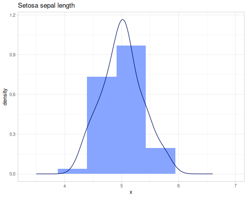
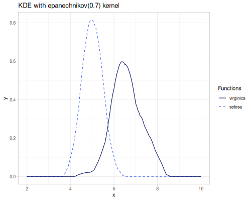
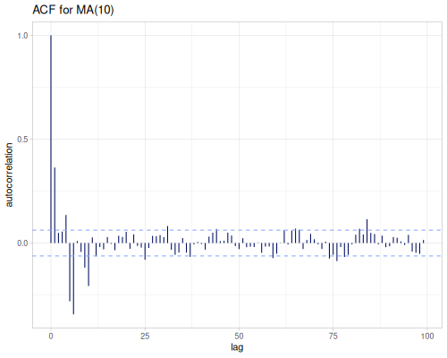
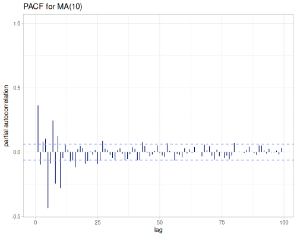
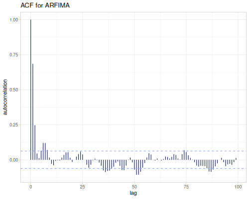
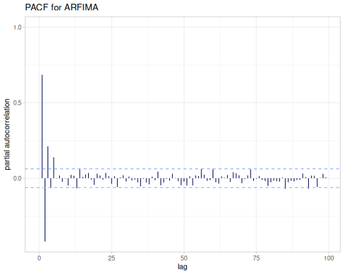
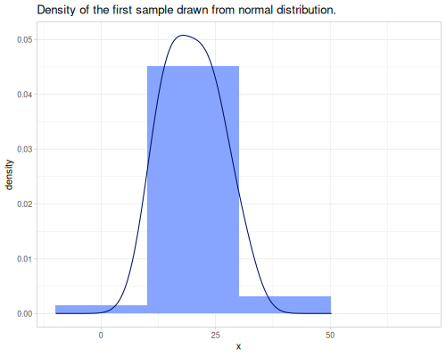
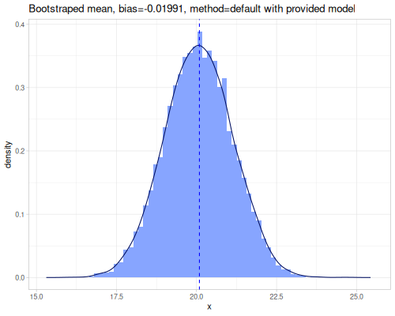

Statistics
This notebook provides a comprehensive overview and examples of the statistical functions available in the fastmath.stats namespace. It covers a wide array of descriptive statistics, measures of spread, quantiles, moments, correlation, distance metrics, contingency table analysis, binary classification metrics, effect sizes, various statistical tests (normality, binomial, t/z, variance, goodness-of-fit, ANOVA, autocorrelation), time series analysis tools (ACF, PACF), data transformations, and histogram generation. Each section introduces the relevant concepts and demonstrates the use of fastmath.stats functions with illustrative datasets (mtcars, iris, winequality).
This notebook is written with the support of Gemini LLM models:
gemini-2.5-pro-exp-03-25gemini-2.5-flash-preview-04-17
I did my best to verify the output of LLMs however I don’t guarantee absence of the model hallucinations or incorrectnesses.
Datasets
To illustrate statistical functions three dataset will be used:
mtcarsiriswinequality
A fastmath.dev.dataset as ds will be used to access data.
Select the :mpg column from mtcars
(ds/mtcars :mpg)(21 21 22.8 21.4 18.7 18.1 14.3 24.4 22.8 19.2 17.8 16.4 17.3 15.2 10.4 10.4 14.7 32.4 30.4 33.9 21.5 15.5 15.2 13.3 19.2 27.3 26 30.4 15.8 19.7 15 21.4)Select the :mpg column with a row predicate
(ds/mtcars :mpg (fn [row] (and (< (row :mpg) 20.0) (zero? (row :am)))))(18.7 18.1 14.3 19.2 17.8 16.4 17.3 15.2 10.4 10.4 14.7 15.5 15.2 13.3 19.2)Group by the :am column and select :mpg
(ds/by ds/mtcars :am :mpg){1 (21 21 22.8 32.4 30.4 33.9 27.3 26 30.4 15.8 19.7 15 21.4), 0 (21.4 18.7 18.1 14.3 24.4 22.8 19.2 17.8 16.4 17.3 15.2 10.4 10.4 14.7 21.5 15.5 15.2 13.3 19.2)}mtcars
11 attributes of 32 different cars comparison
| name | qsec | cyl | am | gear | disp | wt | drat | hp | mpg | vs | carb |
|---|---|---|---|---|---|---|---|---|---|---|---|
| Mazda RX4 | 16.46 | 6 | 1 | 4 | 160 | 2.62 | 3.9 | 110 | 21 | 0 | 4 |
| Mazda RX4 Wag | 17.02 | 6 | 1 | 4 | 160 | 2.875 | 3.9 | 110 | 21 | 0 | 4 |
| Datsun 710 | 18.61 | 4 | 1 | 4 | 108 | 2.32 | 3.85 | 93 | 22.8 | 1 | 1 |
| Hornet 4 Drive | 19.44 | 6 | 0 | 3 | 258 | 3.215 | 3.08 | 110 | 21.4 | 1 | 1 |
| Hornet Sportabout | 17.02 | 8 | 0 | 3 | 360 | 3.44 | 3.15 | 175 | 18.7 | 0 | 2 |
| Valiant | 20.22 | 6 | 0 | 3 | 225 | 3.46 | 2.76 | 105 | 18.1 | 1 | 1 |
| Duster 360 | 15.84 | 8 | 0 | 3 | 360 | 3.57 | 3.21 | 245 | 14.3 | 0 | 4 |
| Merc 240D | 20 | 4 | 0 | 4 | 146.7 | 3.19 | 3.69 | 62 | 24.4 | 1 | 2 |
| Merc 230 | 22.9 | 4 | 0 | 4 | 140.8 | 3.15 | 3.92 | 95 | 22.8 | 1 | 2 |
| Merc 280 | 18.3 | 6 | 0 | 4 | 167.6 | 3.44 | 3.92 | 123 | 19.2 | 1 | 4 |
| Merc 280C | 18.9 | 6 | 0 | 4 | 167.6 | 3.44 | 3.92 | 123 | 17.8 | 1 | 4 |
| Merc 450SE | 17.4 | 8 | 0 | 3 | 275.8 | 4.07 | 3.07 | 180 | 16.4 | 0 | 3 |
| Merc 450SL | 17.6 | 8 | 0 | 3 | 275.8 | 3.73 | 3.07 | 180 | 17.3 | 0 | 3 |
| Merc 450SLC | 18 | 8 | 0 | 3 | 275.8 | 3.78 | 3.07 | 180 | 15.2 | 0 | 3 |
| Cadillac Fleetwood | 17.98 | 8 | 0 | 3 | 472 | 5.25 | 2.93 | 205 | 10.4 | 0 | 4 |
| Lincoln Continental | 17.82 | 8 | 0 | 3 | 460 | 5.424 | 3 | 215 | 10.4 | 0 | 4 |
| Chrysler Imperial | 17.42 | 8 | 0 | 3 | 440 | 5.345 | 3.23 | 230 | 14.7 | 0 | 4 |
| Fiat 128 | 19.47 | 4 | 1 | 4 | 78.7 | 2.2 | 4.08 | 66 | 32.4 | 1 | 1 |
| Honda Civic | 18.52 | 4 | 1 | 4 | 75.7 | 1.615 | 4.93 | 52 | 30.4 | 1 | 2 |
| Toyota Corolla | 19.9 | 4 | 1 | 4 | 71.1 | 1.835 | 4.22 | 65 | 33.9 | 1 | 1 |
| Toyota Corona | 20.01 | 4 | 0 | 3 | 120.1 | 2.465 | 3.7 | 97 | 21.5 | 1 | 1 |
| Dodge Challenger | 16.87 | 8 | 0 | 3 | 318 | 3.52 | 2.76 | 150 | 15.5 | 0 | 2 |
| AMC Javelin | 17.3 | 8 | 0 | 3 | 304 | 3.435 | 3.15 | 150 | 15.2 | 0 | 2 |
| Camaro Z28 | 15.41 | 8 | 0 | 3 | 350 | 3.84 | 3.73 | 245 | 13.3 | 0 | 4 |
| Pontiac Firebird | 17.05 | 8 | 0 | 3 | 400 | 3.845 | 3.08 | 175 | 19.2 | 0 | 2 |
| Fiat X1-9 | 18.9 | 4 | 1 | 4 | 79 | 1.935 | 4.08 | 66 | 27.3 | 1 | 1 |
| Porsche 914-2 | 16.7 | 4 | 1 | 5 | 120.3 | 2.14 | 4.43 | 91 | 26 | 0 | 2 |
| Lotus Europa | 16.9 | 4 | 1 | 5 | 95.1 | 1.513 | 3.77 | 113 | 30.4 | 1 | 2 |
| Ford Pantera L | 14.5 | 8 | 1 | 5 | 351 | 3.17 | 4.22 | 264 | 15.8 | 0 | 4 |
| Ferrari Dino | 15.5 | 6 | 1 | 5 | 145 | 2.77 | 3.62 | 175 | 19.7 | 0 | 6 |
| Maserati Bora | 14.6 | 8 | 1 | 5 | 301 | 3.57 | 3.54 | 335 | 15 | 0 | 8 |
| Volvo 142E | 18.6 | 4 | 1 | 4 | 121 | 2.78 | 4.11 | 109 | 21.4 | 1 | 2 |
iris
Sepal and Petal iris species comparison
| sepal-length | sepal-width | petal-length | petal-width | species |
|---|---|---|---|---|
| 5.1 | 3.5 | 1.4 | 0.2 | setosa |
| 4.9 | 3 | 1.4 | 0.2 | setosa |
| 4.7 | 3.2 | 1.3 | 0.2 | setosa |
| 4.6 | 3.1 | 1.5 | 0.2 | setosa |
| 5 | 3.6 | 1.4 | 0.2 | setosa |
| 5.4 | 3.9 | 1.7 | 0.4 | setosa |
| 4.6 | 3.4 | 1.4 | 0.3 | setosa |
| 5 | 3.4 | 1.5 | 0.2 | setosa |
| 4.4 | 2.9 | 1.4 | 0.2 | setosa |
| 4.9 | 3.1 | 1.5 | 0.1 | setosa |
| 5.4 | 3.7 | 1.5 | 0.2 | setosa |
| 4.8 | 3.4 | 1.6 | 0.2 | setosa |
| 4.8 | 3 | 1.4 | 0.1 | setosa |
| 4.3 | 3 | 1.1 | 0.1 | setosa |
| 5.8 | 4 | 1.2 | 0.2 | setosa |
| 5.7 | 4.4 | 1.5 | 0.4 | setosa |
| 5.4 | 3.9 | 1.3 | 0.4 | setosa |
| 5.1 | 3.5 | 1.4 | 0.3 | setosa |
| 5.7 | 3.8 | 1.7 | 0.3 | setosa |
| 5.1 | 3.8 | 1.5 | 0.3 | setosa |
| 5.4 | 3.4 | 1.7 | 0.2 | setosa |
| 5.1 | 3.7 | 1.5 | 0.4 | setosa |
| 4.6 | 3.6 | 1 | 0.2 | setosa |
| 5.1 | 3.3 | 1.7 | 0.5 | setosa |
| 4.8 | 3.4 | 1.9 | 0.2 | setosa |
| 5 | 3 | 1.6 | 0.2 | setosa |
| 5 | 3.4 | 1.6 | 0.4 | setosa |
| 5.2 | 3.5 | 1.5 | 0.2 | setosa |
| 5.2 | 3.4 | 1.4 | 0.2 | setosa |
| 4.7 | 3.2 | 1.6 | 0.2 | setosa |
| 4.8 | 3.1 | 1.6 | 0.2 | setosa |
| 5.4 | 3.4 | 1.5 | 0.4 | setosa |
| 5.2 | 4.1 | 1.5 | 0.1 | setosa |
| 5.5 | 4.2 | 1.4 | 0.2 | setosa |
| 4.9 | 3.1 | 1.5 | 0.1 | setosa |
| 5 | 3.2 | 1.2 | 0.2 | setosa |
| 5.5 | 3.5 | 1.3 | 0.2 | setosa |
| 4.9 | 3.1 | 1.5 | 0.1 | setosa |
| 4.4 | 3 | 1.3 | 0.2 | setosa |
| 5.1 | 3.4 | 1.5 | 0.2 | setosa |
| 5 | 3.5 | 1.3 | 0.3 | setosa |
| 4.5 | 2.3 | 1.3 | 0.3 | setosa |
| 4.4 | 3.2 | 1.3 | 0.2 | setosa |
| 5 | 3.5 | 1.6 | 0.6 | setosa |
| 5.1 | 3.8 | 1.9 | 0.4 | setosa |
| 4.8 | 3 | 1.4 | 0.3 | setosa |
| 5.1 | 3.8 | 1.6 | 0.2 | setosa |
| 4.6 | 3.2 | 1.4 | 0.2 | setosa |
| 5.3 | 3.7 | 1.5 | 0.2 | setosa |
| 5 | 3.3 | 1.4 | 0.2 | setosa |
| 7 | 3.2 | 4.7 | 1.4 | versicolor |
| 6.4 | 3.2 | 4.5 | 1.5 | versicolor |
| 6.9 | 3.1 | 4.9 | 1.5 | versicolor |
| 5.5 | 2.3 | 4 | 1.3 | versicolor |
| 6.5 | 2.8 | 4.6 | 1.5 | versicolor |
| 5.7 | 2.8 | 4.5 | 1.3 | versicolor |
| 6.3 | 3.3 | 4.7 | 1.6 | versicolor |
| 4.9 | 2.4 | 3.3 | 1 | versicolor |
| 6.6 | 2.9 | 4.6 | 1.3 | versicolor |
| 5.2 | 2.7 | 3.9 | 1.4 | versicolor |
| 5 | 2 | 3.5 | 1 | versicolor |
| 5.9 | 3 | 4.2 | 1.5 | versicolor |
| 6 | 2.2 | 4 | 1 | versicolor |
| 6.1 | 2.9 | 4.7 | 1.4 | versicolor |
| 5.6 | 2.9 | 3.6 | 1.3 | versicolor |
| 6.7 | 3.1 | 4.4 | 1.4 | versicolor |
| 5.6 | 3 | 4.5 | 1.5 | versicolor |
| 5.8 | 2.7 | 4.1 | 1 | versicolor |
| 6.2 | 2.2 | 4.5 | 1.5 | versicolor |
| 5.6 | 2.5 | 3.9 | 1.1 | versicolor |
| 5.9 | 3.2 | 4.8 | 1.8 | versicolor |
| 6.1 | 2.8 | 4 | 1.3 | versicolor |
| 6.3 | 2.5 | 4.9 | 1.5 | versicolor |
| 6.1 | 2.8 | 4.7 | 1.2 | versicolor |
| 6.4 | 2.9 | 4.3 | 1.3 | versicolor |
| 6.6 | 3 | 4.4 | 1.4 | versicolor |
| 6.8 | 2.8 | 4.8 | 1.4 | versicolor |
| 6.7 | 3 | 5 | 1.7 | versicolor |
| 6 | 2.9 | 4.5 | 1.5 | versicolor |
| 5.7 | 2.6 | 3.5 | 1 | versicolor |
| 5.5 | 2.4 | 3.8 | 1.1 | versicolor |
| 5.5 | 2.4 | 3.7 | 1 | versicolor |
| 5.8 | 2.7 | 3.9 | 1.2 | versicolor |
| 6 | 2.7 | 5.1 | 1.6 | versicolor |
| 5.4 | 3 | 4.5 | 1.5 | versicolor |
| 6 | 3.4 | 4.5 | 1.6 | versicolor |
| 6.7 | 3.1 | 4.7 | 1.5 | versicolor |
| 6.3 | 2.3 | 4.4 | 1.3 | versicolor |
| 5.6 | 3 | 4.1 | 1.3 | versicolor |
| 5.5 | 2.5 | 4 | 1.3 | versicolor |
| 5.5 | 2.6 | 4.4 | 1.2 | versicolor |
| 6.1 | 3 | 4.6 | 1.4 | versicolor |
| 5.8 | 2.6 | 4 | 1.2 | versicolor |
| 5 | 2.3 | 3.3 | 1 | versicolor |
| 5.6 | 2.7 | 4.2 | 1.3 | versicolor |
| 5.7 | 3 | 4.2 | 1.2 | versicolor |
| 5.7 | 2.9 | 4.2 | 1.3 | versicolor |
| 6.2 | 2.9 | 4.3 | 1.3 | versicolor |
| 5.1 | 2.5 | 3 | 1.1 | versicolor |
| 5.7 | 2.8 | 4.1 | 1.3 | versicolor |
| 6.3 | 3.3 | 6 | 2.5 | virginica |
| 5.8 | 2.7 | 5.1 | 1.9 | virginica |
| 7.1 | 3 | 5.9 | 2.1 | virginica |
| 6.3 | 2.9 | 5.6 | 1.8 | virginica |
| 6.5 | 3 | 5.8 | 2.2 | virginica |
| 7.6 | 3 | 6.6 | 2.1 | virginica |
| 4.9 | 2.5 | 4.5 | 1.7 | virginica |
| 7.3 | 2.9 | 6.3 | 1.8 | virginica |
| 6.7 | 2.5 | 5.8 | 1.8 | virginica |
| 7.2 | 3.6 | 6.1 | 2.5 | virginica |
| 6.5 | 3.2 | 5.1 | 2 | virginica |
| 6.4 | 2.7 | 5.3 | 1.9 | virginica |
| 6.8 | 3 | 5.5 | 2.1 | virginica |
| 5.7 | 2.5 | 5 | 2 | virginica |
| 5.8 | 2.8 | 5.1 | 2.4 | virginica |
| 6.4 | 3.2 | 5.3 | 2.3 | virginica |
| 6.5 | 3 | 5.5 | 1.8 | virginica |
| 7.7 | 3.8 | 6.7 | 2.2 | virginica |
| 7.7 | 2.6 | 6.9 | 2.3 | virginica |
| 6 | 2.2 | 5 | 1.5 | virginica |
| 6.9 | 3.2 | 5.7 | 2.3 | virginica |
| 5.6 | 2.8 | 4.9 | 2 | virginica |
| 7.7 | 2.8 | 6.7 | 2 | virginica |
| 6.3 | 2.7 | 4.9 | 1.8 | virginica |
| 6.7 | 3.3 | 5.7 | 2.1 | virginica |
| 7.2 | 3.2 | 6 | 1.8 | virginica |
| 6.2 | 2.8 | 4.8 | 1.8 | virginica |
| 6.1 | 3 | 4.9 | 1.8 | virginica |
| 6.4 | 2.8 | 5.6 | 2.1 | virginica |
| 7.2 | 3 | 5.8 | 1.6 | virginica |
| 7.4 | 2.8 | 6.1 | 1.9 | virginica |
| 7.9 | 3.8 | 6.4 | 2 | virginica |
| 6.4 | 2.8 | 5.6 | 2.2 | virginica |
| 6.3 | 2.8 | 5.1 | 1.5 | virginica |
| 6.1 | 2.6 | 5.6 | 1.4 | virginica |
| 7.7 | 3 | 6.1 | 2.3 | virginica |
| 6.3 | 3.4 | 5.6 | 2.4 | virginica |
| 6.4 | 3.1 | 5.5 | 1.8 | virginica |
| 6 | 3 | 4.8 | 1.8 | virginica |
| 6.9 | 3.1 | 5.4 | 2.1 | virginica |
| 6.7 | 3.1 | 5.6 | 2.4 | virginica |
| 6.9 | 3.1 | 5.1 | 2.3 | virginica |
| 5.8 | 2.7 | 5.1 | 1.9 | virginica |
| 6.8 | 3.2 | 5.9 | 2.3 | virginica |
| 6.7 | 3.3 | 5.7 | 2.5 | virginica |
| 6.7 | 3 | 5.2 | 2.3 | virginica |
| 6.3 | 2.5 | 5 | 1.9 | virginica |
| 6.5 | 3 | 5.2 | 2 | virginica |
| 6.2 | 3.4 | 5.4 | 2.3 | virginica |
| 5.9 | 3 | 5.1 | 1.8 | virginica |
winequality
White Portugese Vinho Verde wine consisting set of quality parameters (physicochemical and sensory).
Data
Let’s bind some common columns to a global vars
mtcars
Miles per US gallon
(def mpg (ds/mtcars :mpg))Horsepower
(def hp (ds/mtcars :hp))Weight of the car
(def wt (ds/mtcars :wt)) |
 |
 |
iris
Sepal lengths
(def sepal-lengths (ds/by ds/iris :species :sepal-length))(def setosa-sepal-length (sepal-lengths :setosa))(def virginica-sepal-length (sepal-lengths :virginica))|  |
Sepal widths
(def sepal-widths (ds/by ds/iris :species :sepal-width))(def setosa-sepal-width (sepal-widths :setosa))(def virginica-sepal-width (sepal-widths :virginica)) |
winequality
(def residual-sugar (ds/winequality "residual sugar"))(def alcohol (ds/winequality "alcohol"))Basic Descriptive Statistics
General summary statistics for describing the center and range of data.
minimum,maximumsummeangeomean,harmean,powmeanmode,modeswmode,wmodesstats-map
Basic
This section covers fundamental descriptive statistics including finding the smallest (minimum) and largest (maximum) values, and calculating the total (sum).
(stats/minimum mpg) ;; => 10.4
(stats/maximum mpg) ;; => 33.9
(stats/sum mpg) ;; => 642.8999999999999Compensated summation can be used to reduce numerical error. There are three algorithms implemented:
:kahan: The classic algorithm using a single correction variable to reduce numerical error.:neumayer: An improvement on Kahan, also using one correction variable but often providing better accuracy.:klein: A higher-order method using two correction variables, typically offering the highest accuracy at a slight computational cost.
As you can see below, all compensated summation give accurate result for mpg data.
(stats/sum mpg) ;; => 642.8999999999999
(stats/sum mpg :kahan) ;; => 642.9
(stats/sum mpg :neumayer) ;; => 642.9
(stats/sum mpg :klein) ;; => 642.9But here is the example in which normal summation and :kahan fails.
(stats/sum [1.0 1.0E100 1.0 -1.0E100]) ;; => 0.0
(stats/sum [1.0 1.0E100 1.0 -1.0E100] :kahan) ;; => 0.0
(stats/sum [1.0 1.0E100 1.0 -1.0E100] :neumayer) ;; => 2.0
(stats/sum [1.0 1.0E100 1.0 -1.0E100] :klein) ;; => 2.0Mean
The mean is a measure of central tendency. fastmath.stats provides several types of means:
- Arithmetic Mean (
mean): The sum of values divided by their count. It’s the most common type of average.
\[\mu = \frac{1}{n} \sum_{i=1}^{n} x_i\]
- Geometric Mean (
geomean): The n-th root of the product of n numbers. Suitable for averaging ratios, growth rates, or values that are multiplicative in nature. Requires all values to be positive. It’s less affected by extreme large values than the arithmetic mean, but more affected by extreme small values.
\[G = \left(\prod_{i=1}^{n} x_i\right)^{1/n} = \exp\left(\frac{1}{n}\sum_{i=1}^{n} \ln(x_i)\right)\]
- Harmonic Mean (
harmean): The reciprocal of the arithmetic mean of the reciprocals of the observations. Appropriate for averaging rates (e.g., speeds). It is sensitive to small values and requires all values to be positive and non-zero.
\[H = \frac{n}{\sum_{i=1}^{n} \frac{1}{x_i}}\]
- Power Mean (
powmean): Also known as the generalized mean or Hölder mean. It generalizes the arithmetic, geometric, and harmonic means. Defined by a power parameter \(p\).
\[M_p = \left(\frac{1}{n} \sum_{i=1}^{n} x_i^p\right)^{1/p} \text{ for } (p \neq 0)\]
Special cases:
- \(p \to 0\): Geometric Mean
- \(p = 1\): Arithmetic Mean
- \(p = -1\): Harmonic Mean
- \(p = 2\): Root Mean Square (RMS)
- \(p \to \infty\): Maximum value
- \(p \to -\infty\): Minimum value
The behavior depends on \(p\): higher \(p\) gives more weight to larger values, lower \(p\) gives more weight to smaller values.
(stats/mean residual-sugar) ;; => 6.391414863209474
(stats/geomean residual-sugar) ;; => 4.397022390150047
(stats/harmean residual-sugar) ;; => 2.9295723194226815
(stats/powmean residual-sugar ##-Inf) ;; => 0.6
(stats/powmean residual-sugar -4.5) ;; => 1.5790401256763393
(stats/powmean residual-sugar -1.0) ;; => 2.9295723194226815
(stats/powmean residual-sugar 0.0) ;; => 4.397022390150047
(stats/powmean residual-sugar 1.0) ;; => 6.391414863209474
(stats/powmean residual-sugar 4.5) ;; => 12.228524559326921
(stats/powmean residual-sugar ##Inf) ;; => 65.8All values of power mean for residual-sugar data and range of the power from -5 to 5.
Weighted
Every mean function accepts optional weights vector. Formulas for weighted means are as follows.
- Arithmetic Mean (
mean):
\[\mu_w = \frac{\sum_{i=1}^{n} w_i x_i}{\sum_{i=1}^{n} w_i}\]
- Geometric Mean (
geomean):
\[G_w = \left(\prod_{i=1}^{n} x_i^{w_i}\right)^{1/\sum w_i} = \exp\left(\frac{\sum_{i=1}^{n} w_i \ln(x_i)}{\sum_{i=1}^{n} w_i}\right)\]
- Harmonic Mean (
harmean):
\[H_w = \frac{\sum_{i=1}^{n} w_i}{\sum_{i=1}^{n} \frac{w_i}{x_i}}\]
- Power Mean (
powmean):
\[M_{w,p} = \left(\frac{\sum_{i=1}^{n} w_i x_i^p}{\sum_{i=1}^{n} w_i}\right)^{1/p} \text{ for } (p \neq 0)\]
Let’s calculate mean of hp (horsepower) weighted by wt (car weight).
(stats/mean hp) ;; => 146.6875
(stats/mean hp wt) ;; => 159.99440515968607
(stats/geomean hp) ;; => 131.88367883954564
(stats/geomean hp wt) ;; => 145.7870847521906
(stats/harmean hp) ;; => 118.2288915187372
(stats/harmean hp wt) ;; => 131.56286792601395
(stats/powmean hp -4.5) ;; => 87.4433284945516
(stats/powmean hp wt -4.5) ;; => 95.2308358812506
(stats/powmean hp 4.5) ;; => 193.97486455878905
(stats/powmean hp wt 4.5) ;; => 201.37510347727357Expectile
The expectile is a measure of location, related to both the [mean] and [quantile]. For a given level τ (tau, a value between 0 and 1), the τ-th expectile is the value t that minimizes an asymmetrically weighted sum of squared differences from t. This is distinct from quantiles, which minimize an asymmetrically weighted sum of absolute differences.
A key property of expectiles is that the 0.5-expectile is identical to the arithmetic [mean]. As τ varies from 0 to 1, expectiles span a range of values, typically from the minimum (τ=0) to the maximum (τ=1) of the dataset. Like the mean, expectiles are influenced by the magnitude of all data points, making them generally more sensitive to outliers than corresponding quantiles (e.g., the median).
(stats/expectile residual-sugar 0.1) ;; => 2.794600951101003
(stats/expectile residual-sugar 0.5) ;; => 6.391414863209474
(stats/mean residual-sugar) ;; => 6.391414863209474
(stats/expectile residual-sugar 0.9) ;; => 11.368419035291927
(stats/expectile hp wt 0.25) ;; => 130.66198036981677Plotting expectiles for residual-sugar data across the range of τ from 0.0 to 1.0.
Mode
The mode is the value that appears most frequently in a dataset.
For numeric data, mode returns the first mode encountered, while modes returns a sequence of all modes (in increasing order for the default method).
Let’s see that mode returns elements with the highest frequency of hp (showing only first 10 values)
^:kind/hidden
(->> (frequencies hp)
(sort-by second >)
(take 10))| value | frequency |
|---|---|
| 110 | 3 |
| 175 | 3 |
| 180 | 3 |
| 150 | 2 |
| 66 | 2 |
| 245 | 2 |
| 123 | 2 |
| 65 | 1 |
| 62 | 1 |
| 205 | 1 |
(stats/mode hp) ;; => 110.0
(stats/modes hp) ;; => (110.0 175.0 180.0)When dealing with data potentially from a continuous distribution, these functions can estimate the mode using different methods:
:histogram: Mode(s) based on the peak(s) of a histogram.:pearson: Mode estimated using Pearson’s second skewness coefficient (mode ≈ 3 * median - 2 * mean).:kde: Mode(s) based on Kernel Density Estimation, finding original data points with the highest estimated density.- The default method finds the exact most frequent value(s), suitable for discrete data.
(stats/mode residual-sugar) ;; => 1.2
(stats/mode residual-sugar :histogram) ;; => 1.700695134061569
(stats/mode residual-sugar :pearson) ;; => 2.8171702735810538
(stats/mode residual-sugar :kde) ;; => 1.65For weighted data, or data of any type (not just numeric), use wmode and wmodes. wmode returns the first weighted mode (the one with the highest total weight encountered first), and wmodes returns all values that share the highest total weight. If weights are omitted, they default to 1.0 for each value, effectively calculating unweighted modes for any data type.
(stats/wmode [:a :b :c :d] [1 2.5 1 2.5]) ;; => :b
(stats/wmodes [:a :b :c :d] [1 2.5 1 2.5]) ;; => (:b :d)Stats
The stats-map function provides a comprehensive summary of descriptive statistics for a given dataset. It returns a map where keys are statistic names (as keywords) and values are their calculated measures. This function is a convenient way to get a quick overview of the data’s characteristics.
The resulting map contains the following key-value pairs:
:Size- The number of data points in the sequence.:Min- The smallest value in the sequence (see [minimum]).:Max- The largest value in the sequence (see [maximum]).:Range- The difference between the maximum and minimum values.:Mean- The arithmetic average of the values (see [mean]).:Median- The middle value of the sorted sequence (see [median]).:Mode- The most frequently occurring value(s) (see [mode]).:Q1- The first quartile (25th percentile) of the data (see [percentile]).:Q3- The third quartile (75th percentile) of the data (see [percentile]).:Total- The sum of all values in the sequence (see [sum]).:SD- The sample standard deviation, a measure of data dispersion around the mean.:Variance- The sample variance, the square of the standard deviation.:MAD- The Median Absolute Deviation, a robust measure of variability (see [median-absolute-deviation]).:SEM- The Standard Error of the Mean, an estimate of the standard deviation of the sample mean.:LAV- The Lower Adjacent Value, the smallest observation that is not an outlier (see [adjacent-values]).:UAV- The Upper Adjacent Value, the largest observation that is not an outlier (see [adjacent-values]).:IQR- The Interquartile Range, the difference between Q3 and Q1.:LOF- The Lower Outer Fence, a threshold for identifying extreme low outliers (Q1 - 3.0 * IQR).:UOF- The Upper Outer Fence, a threshold for identifying extreme high outliers (Q3 + 3.0 * IQR).:LIF- The Lower Inner Fence, a threshold for identifying mild low outliers (Q1 - 1.5 * IQR).:UIF- The Upper Inner Fence, a threshold for identifying mild high outliers (Q3 + 1.5 * IQR).:Outliers- A list of data points considered outliers (values outside the inner fences, see [outliers]).:Kurtosis- A measure of the “tailedness” or “peakedness” of the distribution (see [kurtosis]).:Skewness- A measure of the asymmetry of the distribution (see [skewness]).
(stats/stats-map residual-sugar){:IQR 8.200000000000001,
:Kurtosis 3.4698201025634363,
:LAV 0.6,
:LIF -10.600000000000001,
:LOF -22.900000000000002,
:MAD 3.6,
:Max 65.8,
:Mean 6.391414863209486,
:Median 5.2,
:Min 0.6,
:Mode 1.2,
:Outliers (22.6 23.5 26.05 26.05 31.6 31.6 65.8),
:Q1 1.7,
:Q3 9.9,
:Range 65.2,
:SD 5.072057784014863,
:SEM 0.07247276021182479,
:Size 4898,
:Skewness 1.0770937564241123,
:Total 31305.150000000063,
:UAV 22.0,
:UIF 22.200000000000003,
:UOF 34.5,
:Variance 25.72577016438576}Quantiles and Percentiles
Statistics related to points dividing the distribution of data.
percentile,percentilesquantile,quantileswquantile,wquantilesmedian,median-3wmedian
Quantiles and percentiles are statistics that divide the range of a probability distribution into continuous intervals with equal probabilities, or divide the observations in a sample in the same way.
fastmath.stats provides several functions to calculate these measures:
percentile: Calculates the p-th percentile (a value from 0 to 100) of a sequence.percentiles: Calculates multiple percentiles for a sequence.quantile: Calculates the q-th quantile (a value from 0.0 to 1.0) of a sequence. This is equivalent to(percentile vs (* q 100.0)).quantiles: Calculates multiple quantiles for a sequence.median: Calculates the median (0.5 quantile or 50th percentile) of a sequence.median-3: A specialized function that calculates the median of exactly three numbers.
All percentile, quantiles, quantile, quantiles, and median functions accept an optional estimation-strategy keyword. This parameter determines how the quantile is estimated, particularly how interpolation is handled when the desired quantile falls between data points in the sorted sequence.
(stats/quantile mpg 0.25) ;; => 15.274999999999999
(stats/quantiles mpg [0.1 0.25 0.5 0.75 0.9]) ;; => [13.600000000000001 15.274999999999999 19.2 22.8 30.4]
(stats/percentile mpg 50.0) ;; => 19.2
(stats/percentiles residual-sugar [10 25 50 75 90]) ;; => [1.2 1.7 5.2 9.9 14.0]
(stats/median mpg) ;; => 19.2
(stats/median-3 15 5 10) ;; => 10.0The available estimation-strategy values are :legacy (default), :r1, :r2, :r3, :r4, :r5, :r6, :r7, :r8 and :r9. Formulas for all of them can be found on this Wikipedia article. :legacy uses estimate of the form: \(Q_p = x_{\lceil p(N+1) - 1/2 \rceil}\)
The plot below illustrates the differences between these estimation strategies for the sample vs = [1 10 10 30].
(def vs [1 10 10 30])(stats/quantiles vs [0.1 0.25 0.5 0.75 0.9] :legacy) ;; => [1.0 3.25 10.0 25.0 30.0]
(stats/quantiles vs [0.1 0.25 0.5 0.75 0.9] :r1) ;; => [1.0 1.0 10.0 10.0 30.0]
(stats/quantiles vs [0.1 0.25 0.5 0.75 0.9] :r2) ;; => [1.0 5.5 10.0 20.0 30.0]
(stats/quantiles vs [0.1 0.25 0.5 0.75 0.9] :r3) ;; => [1.0 1.0 10.0 10.0 30.0]
(stats/quantiles vs [0.1 0.25 0.5 0.75 0.9] :r4) ;; => [1.0 1.0 10.0 10.0 22.0]
(stats/quantiles vs [0.1 0.25 0.5 0.75 0.9] :r5) ;; => [1.0 5.5 10.0 20.0 30.0]
(stats/quantiles vs [0.1 0.25 0.5 0.75 0.9] :r6) ;; => [1.0 3.25 10.0 25.0 30.0]
(stats/quantiles vs [0.1 0.25 0.5 0.75 0.9] :r7) ;; => [3.7 7.75 10.0 15.0 24.000000000000004]
(stats/quantiles vs [0.1 0.25 0.5 0.75 0.9] :r8) ;; => [1.0 4.749999999999998 10.0 21.66666666666667 30.0]
(stats/quantiles vs [0.1 0.25 0.5 0.75 0.9] :r9) ;; => [1.0 4.9375 10.0 21.25 30.0]Weighted
There are also functions to calculate weighted quantiles and medians. These are useful when individual data points have different levels of importance or contribution.
wquantile: Calculates the q-th weighted quantile for a sequencevswith correspondingweights.wquantiles: Calculates multiple weighted quantiles for a sequencevswithweights.wmedian: Calculates the weighted median (0.5 weighted quantile) forvswithweights.
All these functions accept an optional method keyword argument that specifies the interpolation strategy when a quantile falls between points in the weighted empirical cumulative distribution function (ECDF). The available methods are:
:linear(Default): Performs linear interpolation between the data values corresponding to the cumulative weights surrounding the target quantile.:step: Uses a step function (specifically, step-before interpolation) based on the weighted ECDF. The result is the data value whose cumulative weight range includes the target quantile.:average: Computes the average of the step-before and step-after interpolation methods. This can be useful when a quantile corresponds exactly to a cumulative weight boundary.
Let’s define a sample dataset and weights:
(def sample-data [10 15 30 50 100])(def sample-weights [1 2 5 1 1])(stats/wquantile sample-data sample-weights 0.25) ;; => 13.75
(stats/wquantile sample-data sample-weights 0.5) ;; => 21.0
(stats/wmedian sample-data sample-weights) ;; => 21.0
(stats/wquantile sample-data sample-weights 0.75) ;; => 28.5
(stats/wmedian sample-data sample-weights :linear) ;; => 21.0
(stats/wmedian sample-data sample-weights :step) ;; => 30.0
(stats/wmedian sample-data sample-weights :average) ;; => 22.5
(stats/wquantiles sample-data sample-weights [0.2 0.5 0.8]) ;; => [12.5 21.0 30.0]
(stats/wquantiles sample-data sample-weights [0.2 0.5 0.8] :step) ;; => [15.0 30.0 30.0]
(stats/wquantiles sample-data sample-weights [0.2 0.5 0.8] :average) ;; => [12.5 22.5 30.0]Using mpg data and wt (car weight) as weights:
(stats/wmedian mpg wt) ;; => 17.702906976744185
(stats/wquantile mpg wt 0.25) ;; => 14.894033613445378
(stats/wquantiles mpg wt [0.1 0.25 0.5 0.75 0.9] :average) ;; => [10.4 14.85 17.55 21.2 25.2]When weights are equal to 1.0, then:
:linearmethod is the same as:r4estimation strategy inquantiles:stepis the same as:r1:averagehas no corresponding strategy
(stats/quantiles mpg [0.1 0.25 0.5 0.75 0.9] :r4) ;; => [13.5 15.2 19.2 22.8 29.78]
(stats/wquantiles mpg (repeat (count mpg) 1.0) [0.1 0.25 0.5 0.75 0.9]) ;; => [13.5 15.2 19.2 22.8 29.78]
(stats/quantiles mpg [0.1 0.25 0.5 0.75 0.9] :r1) ;; => [14.3 15.2 19.2 22.8 30.4]
(stats/wquantiles mpg (repeat (count mpg) 1.0) [0.1 0.25 0.5 0.75 0.9] :step) ;; => [14.3 15.2 19.2 22.8 30.4]
(stats/wquantiles mpg (repeat (count mpg) 1.0) [0.1 0.25 0.5 0.75 0.9] :average) ;; => [13.8 15.2 19.2 22.8 28.85]Measures of Dispersion/Deviation
Statistics describing the spread or variability of data.
variance,population-variancestddev,population-stddevwvariance,population-wvariancewstddev,population-wstddevpooled-variance,pooled-stddevvariation,l-variationmean-absolute-deviationmedian-absolute-deviation,madpooled-madsem
Variance and standard deviation
Variance and standard deviation are fundamental measures of the dispersion or spread of a dataset around its mean.
Variance quantifies the average squared difference of each data point from the mean. A higher variance indicates that the data points are more spread out, while a lower variance indicates they are clustered closer to the mean.
Standard Deviation is the square root of the variance. It is expressed in the same units as the data, making it more interpretable than variance as a measure of spread.
Sample Variance (
variance) and Sample Standard Deviation (stddev): These are estimates of the population variance and standard deviation, calculated from a sample of data. They use a denominator of \(N-1\) (Bessel’s correction) to provide an unbiased estimate of the population variance.
\[s^2 = \frac{\sum_{i=1}^{n} (x_i - \bar{x})^2}{n-1}\]
\[s = \sqrt{s^2}\]
Both functions can optionally accept a pre-calculated mean (mu) as a second argument.
- Population Variance (
population-variance) and Population Standard Deviation (population-stddev): These are used when the data represents the entire population of interest, or when a biased estimate (maximum likelihood estimate) from a sample is desired. They use a denominator of \(N\).
\[\sigma^2 = \frac{\sum_{i=1}^{N} (x_i - \mu)^2}{N}\]
\[\sigma = \sqrt{\sigma^2}\]
These also accept an optional pre-calculated population mean (mu).
- Weighted Variance (
wvariance,population-wvariance) and Weighted Standard Deviation (wstddev,population-wstddev): These calculate variance and standard deviation when each data point has an associated weight. For weighted sample variance (unbiased form, where \(w_i\) are weights):
\[\bar{x}_w = \frac{\sum w_i x_i}{\sum w_i}\]
\[s_w^2 = \frac{\sum w_i (x_i - \bar{x}_w)^2}{(\sum w_i) - 1}\]
For weighted population variance:
\[\sigma_w^2 = \frac{\sum w_i (x_i - \bar{x}_w)^2}{\sum w_i}\]
Weighted standard deviations are the square roots of their respective variances.
- Pooled Variance (
pooled-variance) and Pooled Standard Deviation (pooled-stddev): These are used to estimate a common variance when data comes from several groups that are assumed to have the same population variance. Following methods can be used (where \(k\) is the number of groups, each with \(n_i\) number of observations and sample variance \(s_i^2\)):unbiased(default) \[s_p^2 = \frac{\sum_{i=1}^{k} (n_i-1)s_i^2}{\sum_{i=1}^{k} n_i - k}\]:biased\[s_p^2 = \frac{\sum_{i=1}^{k} (n_i-1)s_i^2}{\sum_{i=1}^{k} n_i}\]:avg- simple average of group variances. \[s_p^2 = \frac{\sum_{i=1}^{k} s_i^2}{k}\]
Pooled standard deviation is \(\sqrt{s_p^2}\).
(stats/variance mpg) ;; => 36.32410282258065
(stats/stddev mpg) ;; => 6.026948052089105
(stats/population-variance mpg) ;; => 35.188974609375
(stats/population-stddev mpg) ;; => 5.932029552301219
(stats/variance mpg (stats/mean mpg)) ;; => 36.32410282258065
(stats/population-variance mpg (stats/mean mpg)) ;; => 35.188974609375Weighted variance and standard deviation
(stats/wvariance hp wt) ;; => 4477.350800154701
(stats/wstddev hp wt) ;; => 66.91300919966685
(stats/population-wvariance hp wt) ;; => 4433.861107869416
(stats/population-wstddev hp wt) ;; => 66.58724433305088Pooled variance and standard deviation
(stats/pooled-variance [setosa-sepal-length virginica-sepal-length]) ;; => 0.264295918367347
(stats/pooled-stddev [setosa-sepal-length virginica-sepal-length]) ;; => 0.5140971876672221
(stats/pooled-variance [setosa-sepal-length virginica-sepal-length] :biased) ;; => 0.2590100000000001
(stats/pooled-variance [setosa-sepal-length virginica-sepal-length] :avg) ;; => 0.264295918367347Beyond variance and standard deviation, we have three additional functions:
- Coefficient of Variation (
variation): This is a standardized measure of dispersion, calculated as the ratio of the standard deviation \(s\) to the mean \(\bar{x}\).
\[CV = \frac{s}{\bar{x}}\]
The CV is unitless, making it useful for comparing the variability of datasets with different means or units. It’s most meaningful for data measured on a ratio scale (i.e., with a true zero point) and where all values are positive.
- Standard Error of the Mean (
sem): The SEM estimates the standard deviation of the sample mean if you were to draw multiple samples from the same population. It indicates how precisely the sample mean estimates the true population mean.
\[SEM = \frac{s}{\sqrt{n}}\]
where \(s\) is the sample standard deviation and \(n\) is the sample size. A smaller SEM suggests a more precise estimate of the population mean.
- L-variation (
l-variation): Calculates the coefficient of L-variation. This is a dimensionless measure of dispersion, analogous to the coefficient of variation.
\[\tau_2 = \lambda_2 / \lambda_1\]
(stats/variation mpg) ;; => 0.29998808160966145
(stats/variation residual-sugar) ;; => 0.7935735502339006
(stats/l-variation mpg) ;; => 0.1691378280874466
(stats/l-variation residual-sugar) ;; => 0.43403938821477966
(stats/sem mpg) ;; => 1.0654239593728148
(stats/sem residual-sugar) ;; => 0.07247276021182479MAD
MAD typically refers to Median Absolute Deviation, a robust measure of statistical dispersion. fastmath.stats also provides the Mean Absolute Deviation.
- Median Absolute Deviation (
median-absolute-deviationormad): This is a robust measure of the variability of a univariate sample. It is defined as the median of the absolute deviations from the data’s median.
\[MAD = \text{median}(|X_i - \text{median}(X)|)\]
If a specific center \(c\) is provided, it’s \(MAD_c = \text{median}(|X_i - c|)\). Also, different estimation strategies can be used, see [median] MAD is less sensitive to outliers than the standard deviation.
- Mean Absolute Deviation (
mean-absolute-deviation): This measures variability as the average of the absolute deviations from a central point, typically the data’s mean.
\[MeanAD = \frac{1}{n} \sum_{i=1}^{n} |X_i - \text{mean}(X)|\]
If a specific center \(c\) is provided, it’s \(MeanAD_c = \frac{1}{n} \sum_{i=1}^{n} |X_i - c|\). MeanAD is more sensitive to outliers than MAD but less sensitive than the standard deviation.
- Pooled MAD (
pooled-mad): This function calculates a pooled estimate of the Median Absolute Deviation when data comes from several groups. For each group \(i\), absolute deviations from its median \(M_i\) are calculated: \(Y_{ij} = |X_{ij} - M_i|\). The pooled MAD is then the median of all such \(Y_{ij}\) values, scaled by a constantconst(which defaults to approximately 1.4826, to make it comparable to the standard deviation for normal data).
\[PooledMAD = \text{const} \cdot \text{median}(\{Y_{ij} \mid \text{for all groups } i \text{ and observations } j \text{ in group } i\})\]
(stats/mad mpg) ;; => 3.6500000000000004
(stats/median-absolute-deviation mpg) ;; => 3.6500000000000004
(stats/median-absolute-deviation mpg (stats/median mpg) :r3) ;; => 3.6000000000000014
(stats/median-absolute-deviation mpg (stats/mean mpg)) ;; => 4.299999999999999
(stats/mean-absolute-deviation mpg) ;; => 4.714453125
(stats/mean-absolute-deviation mpg (stats/median mpg)) ;; => 4.634375
(stats/pooled-mad [setosa-sepal-length virginica-sepal-length]) ;; => 0.4447806655516804
(stats/pooled-mad [setosa-sepal-length virginica-sepal-length] 1.0) ;; => 0.2999999999999998Moments and Shape
Moments and shape statistics describe the form of a dataset’s distribution, particularly its symmetry and peakedness.
momentskewnesskurtosisl-moment
Conventional Moments (moment)
The moment function calculates statistical moments of a dataset. Moments can be central (around the mean), raw (around zero), or around a specified center. They can also be absolute and/or normalized.
k-th Central Moment: \(\mu_k = E[(X - \mu)^k] \approx \frac{1}{n} \sum_{i=1}^{n} (x_i - \bar{x})^k\). Calculated when
centerisnil(default) and:mean?istrue(default).k-th Raw Moment (about origin): \(\mu'_k = E[X^k] \approx \frac{1}{n} \sum_{i=1}^{n} x_i^k\). Calculated if
centeris0.0.k-th Absolute Central Moment: \(E[|X - \mu|^k] \approx \frac{1}{n} \sum_{i=1}^{n} |x_i - \bar{x}|^k\). Calculated if
:absolute?istrue.Normalization: If
:normalize?istrue, the moment is divided by \(\sigma^k\) (where \(\sigma\) is the standard deviation), yielding a scale-invariant measure. For example, the 3rd normalized central moment is related to skewness, and the 4th to kurtosis.Power of sum of differences: If
:mean?isfalse, the function returns the sum \(\sum (x_i - c)^k\) (or sum of absolute values) instead of the mean.
The order parameter specifies \(k\). For example, the 2nd central moment for \(k=2\) is the variance.
(stats/moment mpg 2) ;; => 35.188974609374995
(stats/variance mpg) ;; => 36.32410282258065
(stats/moment mpg 3) ;; => 133.68672198486328
(stats/moment mpg 4 {:normalize? true}) ;; => 2.6272339701791085
(stats/moment mpg 1 {:absolute? true, :center (stats/median mpg)}) ;; => 4.634375Skewness
Skewness measures the asymmetry of a probability distribution about its mean. fastmath.stats/skewness offers several types:
Moment-based (sensitive to outliers):
:G1(Default): Sample skewness based on the 3rd standardized moment, adjusted for sample bias (via Apache Commons Math).
\[G_1 = \frac{n}{(n-1)(n-2)} \sum_{i=1}^n \left(\frac{x_i - \bar{x}}{s}\right)^3\]
:g1or:pearson: Pearson’s moment coefficient of skewness, another bias-adjusted version of the 3rd standardized central moment \(m_3\).
\[g_1 = \frac{m_3}{m_2^{3/2}}\]
:b1: Sample skewness coefficient, related to \(g_1\).
\[b_1 = \frac{m_3}{s^3}\]
:skew: Skewness used in BCa
\[SKEW = \frac{\sum_{i=1}^n (x_i - \bar{x})^3}{(\sum_{i=1}^n (x_i - \bar{x})^2)^{3/2}} = \frac{g_1}{\sqrt{n}}\]
Robust (less sensitive to outliers):
:median: Median Skewness / Pearson’s first skewness coefficient.
\[S_P = 3 \frac{\text{mean} - \text{median}}{\text{stddev}}\]
:mode: Pearson’s second skewness coefficient. Mode estimation method can be specified.
\[S_K = \frac{\text{mean} - \text{mode}}{\text{stddev}}\]
:bowleyor:yule(with \(u=0.25\)): Based on quartiles \(Q_1, Q_2, Q_3\).
\[S_B = \frac{(Q_3 - Q_2) - (Q_2 - Q_1)}{Q_3 - Q_1} = \frac{Q_3 + Q_1 - 2Q_2}{Q_3 - Q_1}\]
:yuleor:B1(Yule’s coefficient): Generalization of Bowley’s, using quantiles \(Q_u, Q_{0.5}, Q_{1-u}\).
\[B_1 = S_Y(u) = \frac{(Q_{1-u} - Q_{0.5}) - (Q_{0.5} - Q_u)}{Q_{1-u} - Q_u}\]
:B3: Robust measure by Groeneveld and Meeden
\[B_3 = \frac{\text{mean} - \text{median}}{\text{mean}(|X_i - \text{median}|)}\]
:hogg: Based on comparing trimmed means (\(U_{0.05}\): mean of top 5%, \(L_{0.05}\): mean of bottom 5%, \(M_{0.25}\): 25% trimmed mean).
\[S_H = \frac{U_{0.05} - M_{0.25}}{M_{0.25} - L_{0.05}}\]
:l-skewness: L-moments based skewness.
\[\tau_3 = \lambda_3 / \lambda_2\]
Positive skewness indicates a tail on the right side of the distribution; negative skewness indicates a tail on the left. Zero indicates symmetry.
(stats/skewness residual-sugar) ;; => 1.0770937564240939
(stats/skewness residual-sugar :G1) ;; => 1.0770937564240939
(stats/skewness residual-sugar :g1) ;; => 1.0767638711454521
(stats/skewness residual-sugar :pearson) ;; => 1.0767638711454521
(stats/skewness residual-sugar :b1) ;; => 1.07643413178962
(stats/skewness residual-sugar :skew) ;; => 0.01538548123095513
(stats/skewness residual-sugar :median) ;; => 0.7046931919610692
(stats/skewness residual-sugar :mode) ;; => 1.0235322790625094
(stats/skewness residual-sugar [:mode :histogram]) ;; => 0.9248159088272246
(stats/skewness residual-sugar [:mode :kde]) ;; => 0.9348108923665123
(stats/skewness residual-sugar :bowley) ;; => 0.1463414634146341
(stats/skewness residual-sugar :yule) ;; => 0.1463414634146341
(stats/skewness residual-sugar [:yule 0.1]) ;; => 0.37499999999999994
(stats/skewness residual-sugar :B3) ;; => 0.2864727410181956
(stats/skewness residual-sugar :hogg) ;; => 3.0343529984131266
(stats/skewness residual-sugar :l-skewness) ;; => 0.22296648073302056Effect of an outlier is visible for moment based skewness, while has no effect when robust method is used.
(stats/skewness (conj residual-sugar -1000)) ;; => -58.659786835804155
(stats/skewness (conj residual-sugar -1000) :l-skewness) ;; => 0.13914390517414776Kurtosis
Kurtosis measures the “tailedness” or “peakedness” of a distribution. High kurtosis means heavy tails (more outliers) and a sharp peak (leptokurtic); low kurtosis means light tails and a flatter peak (platykurtic). fastmath.stats/kurtosis offers several types:
Moment-based (sensitive to outliers):
:G2(Default): Sample kurtosis (Fisher’s definition, not excess), adjusted for sample bias (via Apache Commons Math). For a normal distribution, this is approximately 3.
\[G_2 = \frac{(n+1)n}{(n-1)(n-2)(n-3)} \sum_{i=1}^n \left(\frac{x_i - \bar{x}}{s}\right)^4 - 3\frac{(n-1)^2}{(n-2)(n-3)}\]
:g2or:excess: Sample excess kurtosis. For a normal distribution, this is approximately 0.
\[g_2 = \frac{m_4}{m_2^2}-3\]
:kurt: Kurtosis defined as \(g_2 + 3\).
\[g_{kurt} = \frac{m_4}{m_2^2} = g_2 + 3\]
:b2: Sample kurtosis
\[b_2 = \frac{m_4}{s^4}-3\]
Robust (less sensitive to outliers):
:geary: Geary’s ‘g’ measure of kurtosis. Normal \(\approx \sqrt{2/\pi} \approx 0.798\).
\[g = \frac{MeanAD}{\sigma^2}\]
:moors: Based on octiles \(E_i\) (quantiles \(i/8\)) and centered by subtracting \(1.233\) (Moors’ constant for normality).
\[M_0 = \frac{(E_7-E_5) + (E_3-E_1)}{E_6-E_2}-1.233\]
:crow(Crow-Siddiqui): Based on quantiles \(Q_\alpha, Q_{1-\alpha}, Q_\beta, Q_{1-\beta}\) and centered for normality (\(c\) is based on \(\alpha\) and \(\beta\)). By default \(\alpha=0.025\) and \(\beta=0.25\).
\[CS(\alpha, \beta) = \frac{Q_{1-\alpha} - Q_{\alpha}}{Q_{1-\beta} - Q_{\beta}}-c\]
:hogg: Based on trimmed means \(U_p\) (mean of top \(p\%\)) and \(L_p\) (mean of bottom \(p\%\)) and centered by subtracting \(2.585\). By default \(\alpha=0.005\) and \(\beta=0.5\).
\[K_H(\alpha, \beta) = \frac{U_{\alpha} - L_{\alpha}}{U_{\beta} - L_{\beta}}-2.585\]
:l-kurtosis: L-moments based kurtosis.
\[\tau_4 = \lambda_4 / \lambda_2\]
(stats/kurtosis residual-sugar) ;; => 3.4698201025636317
(stats/kurtosis residual-sugar :G2) ;; => 3.4698201025636317
(stats/kurtosis residual-sugar :g1) ;; => 3.4698201025636317
(stats/kurtosis residual-sugar :excess) ;; => 3.4650542966048463
(stats/kurtosis residual-sugar :kurt) ;; => 6.465054296604846
(stats/kurtosis residual-sugar :b2) ;; => 3.4624146909177034
(stats/kurtosis residual-sugar :geary) ;; => 0.8336299967214688
(stats/kurtosis residual-sugar :moors) ;; => -0.35495121951219544
(stats/kurtosis residual-sugar :crow) ;; => -0.8936518297189449
(stats/kurtosis residual-sugar [:crow 0.05 0.25]) ;; => -0.6581758315571915
(stats/kurtosis residual-sugar :hogg) ;; => -0.5329102382273203
(stats/kurtosis residual-sugar [:hogg 0.025 0.45]) ;; => -0.5505736317691476
(stats/kurtosis residual-sugar :l-kurtosis) ;; => 0.02007386147996773Effect of an outlier is visible for moment based kurtosis, while has no effect when robust method is used.
(stats/kurtosis (conj residual-sugar -1000 1000)) ;; => 2167.8435026710868
(stats/kurtosis (conj residual-sugar -1000 1000) :l-kurtosis) ;; => 0.1447670840462904L-moment
L-moments are summary statistics analogous to conventional moments but are computed from linear combinations of order statistics (sorted data). They are more robust to outliers and provide better estimates for small samples compared to conventional moments.
l-moment vs order: Calculates the L-moment of a specificorder.- \(\lambda_1\): L-location (identical to the mean).
- \(\lambda_2\): L-scale (a measure of dispersion).
- Higher orders relate to shape.
- Trimmed L-moments (TL-moments) can be calculated by specifying
:s(left trim) and:t(right trim) as number of trimmed samples - L-moment Ratios: If
:ratio? true, normalized L-moments are returned.- \(\tau_3 = \lambda_3 / \lambda_2\): Coefficient of L-skewness (same as
(stats/skewness vs :l-skewness)). - \(\tau_4 = \lambda_4 / \lambda_2\): Coefficient of L-kurtosis (same as
(stats/kurtosis vs :l-kurtosis)).
- \(\tau_3 = \lambda_3 / \lambda_2\): Coefficient of L-skewness (same as
L-moments often provide more reliable inferences about the underlying distribution shape, especially when data may contain outliers or come from heavy-tailed distributions.
(stats/l-moment mpg 1) ;; => 20.090624999999996
(stats/mean mpg) ;; => 20.090625
(stats/l-moment mpg 2) ;; => 3.3980846774193565
(stats/l-moment mpg 3) ;; => 0.534375
(stats/l-moment residual-sugar 3) ;; => 0.6185370660798765
(stats/l-moment residual-sugar 3 {:s 10}) ;; => 0.3017960335908669
(stats/l-moment residual-sugar 3 {:t 10}) ;; => 0.029252613288362147
(stats/l-moment residual-sugar 3 {:s 10, :t 10}) ;; => 0.003909359312292547Relation to skewness and kurtosis
(stats/l-moment residual-sugar 3 {:ratio? true}) ;; => 0.22296648073302056
(stats/skewness residual-sugar :l-skewness) ;; => 0.22296648073302056
(stats/l-moment residual-sugar 4 {:ratio? true}) ;; => 0.02007386147996773
(stats/kurtosis residual-sugar :l-kurtosis) ;; => 0.02007386147996773Intervals and Extents
This section provides functions to describe the spread or define specific ranges and intervals within a dataset.
span,iqrextent,stddev-extent,mad-extent,sem-extentpercentile-extent,quantile-extentpi,pi-extenthpdi-extentadjacent-valuesinner-fence-extent,outer-fence-extentpercentile-bc-extent,percentile-bca-extentci
Basic Range: Functions like
span(\(max - min\)) andextent(providing \([min, max]\) and optionally the mean) offer simple measures of the total spread of the data.Interquartile Range:
iqr(\(Q_3 - Q_1\)) specifically measures the spread of the middle 50% of the data, providing a robust alternative to the total range.Symmetric Spread Intervals: Functions ending in
-extentsuch asstddev-extent,mad-extent, andsem-extentdefine intervals typically centered around the mean or median. They represent a range defined by adding/subtracting a multiple (usually 1) of a measure of dispersion (Standard Deviation, Median Absolute Deviation, or Standard Error of the Mean) from the central point.Quantile-Based Intervals:
percentile-extent,quantile-extent,pi,pi-extent, andhpdi-extentdefine intervals based on quantiles or percentiles of the data. These functions capture specific ranges containing a certain percentage of the data points (e.g., the middle 95% defined by quantiles 0.025 and 0.975).hpdi-extentcalculates the shortest interval containing a given proportion of data, based on empirical density.Box Plot Boundaries:
adjacent-values(LAV, UAV) and fence functions (inner-fence-extent,outer-fence-extent) calculate specific bounds based on quartiles and multiples of the IQR. These are primarily used in box plot visualization and as a conventional method for identifying potential outliers.Confidence and Prediction Intervals:
ci,percentile-bc-extent, andpercentile-bca-extentprovide inferential intervals.ciestimates a confidence interval for the population mean using the t-distribution.percentile-bc-extentandpercentile-bca-extent(Bias-Corrected and Bias-Corrected Accelerated) are advanced bootstrap methods for estimating confidence intervals for statistics, offering robustness against non-normality and bias.
Note that:
- \(IQR = Q_3-Q_1\)
- \(LIF=Q_1-1.5 \times IQR\)
- \(UIF=Q_3+1.5 \times IQR\)
- \(LOF=Q_1-3\times IQR\)
- \(UOF=Q_3+3\times IQR\)
- \(CI=\bar{x} \pm t_{\alpha/2, n-1} \frac{s}{\sqrt{n}}\)
| Function | Returned value |
|---|---|
span |
\(max-min\) |
iqr |
\(Q_3-Q_1\) |
extent |
[min, max, mean] or [min, max] (when :mean? is false) |
stddev-extent |
[mean - stddev, mean + stddev, mean] |
mad-extent |
[median - mad, median + mad, median] |
sem-extent |
[mean - sem, mean + sem, mean] |
percentile-extent |
[p1-val, p2-val, median] with default p1=25 and p2=75 |
quantile-extent |
[q1-val, q2-val, median] with default q1=0.25 and q2=0.75 |
pi |
{p1 p1-val p2 p2-val} defined by size=p2-p1 |
pi-extent |
[p1-val, p2-val, median] defined by size=p2-p1 |
hdpi-extent |
[p1-val, p2-val, median] defined by size=p2-p1 |
adjacent-values |
[LAV, UAV, median] |
inner-fence-extent |
[LIF, UIF, median] |
outer-fence-extent |
[LOF, UOF, median] |
ci |
[lower upper mean] |
percentile-bc-extent |
[lower upper mean] |
percentile-bca-extent |
[lower upper mean] |
(stats/span mpg) ;; => 23.5
(stats/iqr mpg) ;; => 7.525000000000002
(stats/extent mpg) ;; => #vec3 [10.4, 33.9, 20.090625]
(stats/extent mpg false) ;; => #vec2 [10.4, 33.9]
(stats/stddev-extent mpg) ;; => [14.063676947910896 26.117573052089103 20.090625]
(stats/mad-extent mpg) ;; => [15.549999999999999 22.85 19.2]
(stats/sem-extent mpg) ;; => [19.025201040627184 21.156048959372814 20.090625]
(stats/percentile-extent mpg) ;; => [15.274999999999999 22.8 19.2]
(stats/percentile-extent mpg 2.5 97.5) ;; => [10.4 33.9 19.2]
(stats/percentile-extent mpg 2.5 97.5 :r9) ;; => [10.4 33.628125 19.2]
(stats/quantile-extent mpg) ;; => [15.274999999999999 22.8 19.2]
(stats/quantile-extent mpg 0.025 0.975) ;; => [10.4 33.9 19.2]
(stats/quantile-extent mpg 0.025 0.975 :r9) ;; => [10.4 33.628125 19.2]
(stats/pi mpg 0.95) ;; => {2.5 10.4, 97.5 33.9}
(stats/pi-extent mpg 0.95) ;; => [10.4 33.9 19.2]
(stats/hpdi-extent mpg 0.95) ;; => [10.4 32.4 19.2]
(stats/adjacent-values mpg) ;; => [10.4 33.9 19.2]
(stats/inner-fence-extent mpg) ;; => [3.9874999999999954 34.087500000000006 19.2]
(stats/outer-fence-extent mpg) ;; => [-7.300000000000008 45.37500000000001 19.2]
(stats/ci mpg) ;; => [17.917678508746246 22.263571491253753 20.090625]
(stats/ci mpg 0.1) ;; => [18.284178665508097 21.8970713344919 20.090625]
(stats/percentile-bc-extent mpg) ;; => [10.4 33.9 20.090625]
(stats/percentile-bc-extent mpg 10.0) ;; => [14.85121570396848 32.66635783408668 20.090625]
(stats/percentile-bca-extent mpg) ;; => [10.4 33.9 20.090625]
(stats/percentile-bca-extent mpg 10.0) ;; => [14.79162798537463 32.44980004741413 20.090625]Outlier Detection
Outlier detection involves identifying data points that are significantly different from other observations. Outliers can distort statistical analyses and require careful handling. fastmath.stats provides functions to find and optionally remove such values based on the Interquartile Range (IQR) method.
outliers
outliers function use the inner fence rule based on the IQR and returns a sequence containing only the data points identified as outliers.
- Lower Inner Fence (LIF): \(Q_1 - 1.5 \times IQR\)
- Upper Inner Fence (UIF): \(Q_3 + 1.5 \times IQR\)
Where \(Q_1\) is the first quartile (25th percentile) and \(Q_3\) is the third quartile (75th percentile). Points falling below the LIF or above the UIF are considered outliers.
Function accepts an optional estimation-strategy keyword (see [quantile]) to control how quartiles are calculated, which affects the fence boundaries.
Let’s find the outliers in the residual-sugar data.
(stats/outliers residual-sugar)(23.5 31.6 31.6 65.8 26.05 26.05 22.6)Data Transformation
Functions to modify data (scaling, normalizing, transforming).
standardize,robust-standardize,demeanrescaleremove-outlierstrim,trim-lower,trim-upper,winsorbox-cox-infer-lambda,box-cox-transformationyeo-johnson-infer-lambda,yeo-johnson-transformation
Data transformations are often necessary preprocessing steps in statistical analysis and machine learning. They can help meet the assumptions of certain models (e.g., normality, constant variance), improve interpretability, or reduce the influence of outliers. fastmath.stats offers several functions for these purposes, broadly categorized into linear scaling/centering, outlier handling, and power transformations for normality.
Let’s demonstrate some of these transformations using the residual-sugar data from the wine quality dataset.
(stats/mean residual-sugar) ;; => 6.391414863209474
(stats/stddev residual-sugar) ;; => 5.072057784014863
(stats/median residual-sugar) ;; => 5.2
(stats/mad residual-sugar) ;; => 3.6
(stats/extent residual-sugar false) ;; => #vec2 [0.6, 65.8]
(count residual-sugar) ;; => 4898Linear Transformations: standardize, robust-standardize, demean, and rescale linearly transform data, preserving its shape but changing its location and/or scale.
demeancenters the data by subtracting the mean, resulting in a dataset with a mean of zero.standardizescales the demeaned data by dividing by the standard deviation, resulting in data with mean zero and standard deviation one (z-score normalization). This makes the scale of different features comparable.robust-standardizeprovides a version less sensitive to outliers by centering around the median and scaling by the Median Absolute Deviation (MAD) or a quantile range (like the IQR).rescalelinearly maps the data to a specific target range (e.g., [0, 1]), useful for algorithms sensitive to input scale.
(def residual-sugar-demeaned (-> residual-sugar stats/demean))(def residual-sugar-standardized (-> residual-sugar stats/standardize))(def residual-sugar-robust-standardized (-> residual-sugar stats/robust-standardize))(def residual-sugar-rescaled (-> residual-sugar stats/rescale))(stats/mean residual-sugar-demeaned) ;; => -3.2386416038881656E-16
(stats/stddev residual-sugar-demeaned) ;; => 5.072057784014863
(stats/median residual-sugar-demeaned) ;; => -1.1914148632094737
(stats/mad residual-sugar-demeaned) ;; => 3.5999999999999996
(stats/extent residual-sugar-demeaned false) ;; => #vec2 [-5.791414863209474, 59.40858513679052]
(stats/mean residual-sugar-standardized) ;; => -1.5386267642212256E-16
(stats/stddev residual-sugar-standardized) ;; => 1.0000000000000004
(stats/median residual-sugar-standardized) ;; => -0.23489773065368974
(stats/mad residual-sugar-standardized) ;; => 0.7097710935679375
(stats/extent residual-sugar-standardized false) ;; => #vec2 [-1.1418274613238324, 11.712915677739927]
(stats/mean residual-sugar-robust-standardized) ;; => 0.3309485731137426
(stats/stddev residual-sugar-robust-standardized) ;; => 1.4089049400041327
(stats/median residual-sugar-robust-standardized) ;; => 0.0
(stats/mad residual-sugar-robust-standardized) ;; => 1.0
(stats/extent residual-sugar-robust-standardized false) ;; => #vec2 [-1.277777777777778, 16.833333333333332]
(stats/mean residual-sugar-rescaled) ;; => 0.0888253813375686
(stats/stddev residual-sugar-rescaled) ;; => 0.07779229730084207
(stats/median residual-sugar-rescaled) ;; => 0.07055214723926381
(stats/mad residual-sugar-rescaled) ;; => 0.055214723926380375
(stats/extent residual-sugar-rescaled false) ;; => #vec2 [0.0, 1.0]Outlier Handling: remove-outliers, trim, trim-lower, trim-upper, and winsor address outliers based on quantile fences.
remove-outliersreturns a sequence containing the data points from the original sequence excluding those identified as outliers.trimremoves values outside a specified quantile range (defaulting to 0.2 quantile, removing the bottom and top 20%).trim-lowerandtrim-upperremove only below or above a single quantile.winsorcaps values outside a quantile range to the boundary values instead of removing them. This retains the sample size but reduces the influence of extreme values.
(def residual-sugar-no-outliers (stats/remove-outliers residual-sugar))(def residual-sugar-trimmed (stats/trim residual-sugar))(def residual-sugar-winsorized (stats/winsor residual-sugar))(stats/mean residual-sugar-no-outliers) ;; => 6.354109589041096
(stats/stddev residual-sugar-no-outliers) ;; => 4.950545246813552
(stats/median residual-sugar-no-outliers) ;; => 5.2
(stats/mad residual-sugar-no-outliers) ;; => 3.6
(stats/extent residual-sugar-no-outliers false) ;; => #vec2 [0.6, 22.0]
(count residual-sugar-no-outliers) ;; => 4891
(stats/mean residual-sugar-trimmed) ;; => 5.27940414507772
(stats/stddev residual-sugar-trimmed) ;; => 2.9594599192772546
(stats/median residual-sugar-trimmed) ;; => 5.0
(stats/mad residual-sugar-trimmed) ;; => 2.7
(stats/extent residual-sugar-trimmed false) ;; => #vec2 [1.5, 11.2]
(count residual-sugar-trimmed) ;; => 3088
(stats/mean residual-sugar-winsorized) ;; => 5.789893834218048
(stats/stddev residual-sugar-winsorized) ;; => 3.8241868005472104
(stats/median residual-sugar-winsorized) ;; => 5.2
(stats/mad residual-sugar-winsorized) ;; => 3.6
(stats/quantiles residual-sugar [0.2 0.8]) ;; => [1.5 11.2]
(stats/extent residual-sugar-winsorized false) ;; => #vec2 [1.5, 11.2]
(count residual-sugar-winsorized) ;; => 4898Power Transformations: box-cox-transformation and yeo-johnson-transformation (and their infer-lambda counterparts) are non-linear transformations that can change the shape of the distribution to be more symmetric or normally distributed. They are particularly useful for data that is skewed or violates assumptions of linear models. Both are invertable.
box-cox-transformationworks in general for strictly positive data. It includes the log transformation as a special case (when lambda is \(0.0\)) and generalizes square root, reciprocal, and other power transformations.box-cox-infer-lambdahelps find the optimal lambda parameter. Optional parameters::negative?(default:false), when set totruespecific transformation is performed to keep information about sign.:scaled?(default:false), when set totrue, scale data by geometric mean, when is a number, this number is used as a scale.
\[y_{BC}^{(\lambda)}=\begin{cases} \frac{y^\lambda-1}{\lambda} & \lambda\neq 0 \\ \log(y) & \lambda = 0 \end{cases}\]
Scaled version, with default scale set to geometric mean (GM):
\[y_{BC}^{(\lambda, s)}=\begin{cases} \frac{y^\lambda-1}{\lambda s^{\lambda - 1}} & \lambda\neq 0 \\ s\log(y) & \lambda = 0 \end{cases}\]
When :negative? is set to true, formula takes the following form:
\[y_{BCneg}^{(\lambda)}=\begin{cases} \frac{\operatorname{sgn}(y)|y|^\lambda-1}{\lambda} & \lambda\neq 0 \\ \operatorname{sgn}(y)\log(|y|+1) & \lambda = 0 \end{cases}\]
yeo-johnson-transformationextends Box-Cox to handle zero and negative values.yeo-johnson-infer-lambdafinds the optimal lambda for this transformation.
\[y_{YJ}^{(\lambda)}=\begin{cases} \frac{(y+1)^\lambda - 1}{\lambda} & \lambda \neq 0, y\geq 0 \\ \log(y+1) & \lambda = 0, y\geq 0 \\ \frac{(1-y)^{2-\lambda} - 1}{\lambda - 2} & \lambda \neq 2, y\geq 0 \\ -\log(1-y) & \lambda = 2, y\geq 0 \end{cases}\]
Both fuctions accept additional parameters:
:alpha(dafault:0.0): perform dataset shift by value of the:alphabefore transformation.:inversed?(default:false): perform inverse transformation for givenlambda.
When lambda is set to nil optimal lambda will be calculated (only when :inversed? is false).
(stats/box-cox-transformation [0 1 10] 0.0) ;; => (##-Inf 0.0 2.302585092994046)
(stats/box-cox-transformation [0 1 10] 2.0) ;; => (-0.5 0.0 49.5)
(stats/box-cox-transformation [0 1 10] -2.0 {:alpha 2}) ;; => (0.375 0.4444444444444444 0.4965277777777778)
(stats/box-cox-transformation [0.375 0.444 0.497] -2.0 {:alpha 2, :inverse? true}) ;; => (0.0 0.9880715233359845 10.90994448735805)
(stats/box-cox-transformation [0 1 10] nil {:alpha 1}) ;; => (-0.0 0.5989997131047903 1.493287747539177)
(stats/box-cox-transformation [0 1 10] nil {:scaled? true, :alpha 1}) ;; => (-0.0 2.619403814271841 6.530092646346955)
(stats/box-cox-transformation [0 1 10] nil {:alpha -5, :negative? true}) ;; => (-42.0 -21.666666666666668 41.333333333333336)
(stats/box-cox-transformation [0 1 10] 2.0 {:alpha -5, :negative? true, :scaled? 2}) ;; => (-6.5 -4.25 6.0)
(stats/box-cox-transformation [-6.5 -4.25 6.0] 2.0 {:alpha -5, :negative? true, :scaled? 2, :inverse? true}) ;; => (0.0 1.0 10.0)
(stats/yeo-johnson-transformation [0 1 10]) ;; => (-0.0 0.5989997131047903 1.493287747539177)
(stats/yeo-johnson-transformation [0 1 10] 0.0) ;; => (0.0 0.6931471805599453 2.3978952727983707)
(stats/yeo-johnson-transformation [0 1 10] 2.0 {:alpha -5}) ;; => (-1.791759469228055 -1.6094379124341003 17.5)
(stats/yeo-johnson-transformation [-1.79 -1.61 17.5] 2.0 {:alpha -5, :inverse? true}) ;; => (0.010547533616885651 0.9971887721664103 10.0)Let’s illustrate how real data look after transformation. We’ll start with finding an optimal lambda parameter for both transformations.
(stats/box-cox-infer-lambda residual-sugar)0.12450565747077313(stats/yeo-johnson-infer-lambda residual-sugar)-0.004232775028107413(def residual-sugar-box-cox (stats/box-cox-transformation residual-sugar nil))(def residual-sugar-yeo-johnson (stats/yeo-johnson-transformation residual-sugar nil))(stats/mean residual-sugar-box-cox) ;; => 1.6895596029306466
(stats/stddev residual-sugar-box-cox) ;; => 1.1032589652895741
(stats/median residual-sugar-box-cox) ;; => 1.83006349249072
(stats/mad residual-sugar-box-cox) ;; => 1.0527777588806666
(stats/extent residual-sugar-box-cox false) ;; => #vec2 [-0.4949201739139414, 5.494888687185149]
(stats/mean residual-sugar-yeo-johnson) ;; => 1.7445922710465025
(stats/stddev residual-sugar-yeo-johnson) ;; => 0.7180340465417893
(stats/median residual-sugar-yeo-johnson) ;; => 1.8175219821484885
(stats/mad residual-sugar-yeo-johnson) ;; => 0.6888246769156978
(stats/extent residual-sugar-yeo-johnson false) ;; => #vec2 [0.46953642189900135, 4.164560241279393]As you can see, the Yeo-Johnson transformation with the inferred lambda has made the residual-sugar distribution appear more symmetric and perhaps closer to a normal distribution shape.
Both power transformation can work on negative data as well. When Box-Cox is used, :negative? option should be set to true.
(stats/box-cox-infer-lambda residual-sugar
nil {:alpha (- (stats/mean residual-sugar)) :negative? true})1.0967709597378346(stats/yeo-johnson-infer-lambda residual-sugar nil {:alpha (- (stats/mean residual-sugar))})0.7290829398083033(def residual-sugar-box-cox-demeaned
(stats/box-cox-transformation
residual-sugar nil {:alpha (- (stats/mean residual-sugar)) :negative? true}))(def residual-sugar-yeo-johnson-demeaned (stats/yeo-johnson-transformation
residual-sugar nil
{:alpha (- (stats/mean residual-sugar))}))(stats/mean residual-sugar-box-cox-demeaned) ;; => -0.817408751945805
(stats/stddev residual-sugar-box-cox-demeaned) ;; => 5.608979218510315
(stats/median residual-sugar-box-cox-demeaned) ;; => -2.0166286943919243
(stats/mad residual-sugar-box-cox-demeaned) ;; => 3.9790383049427582
(stats/extent residual-sugar-box-cox-demeaned false) ;; => #vec2 [-7.1704674516316125, 79.51310067615422]
(stats/mean residual-sugar-yeo-johnson-demeaned) ;; => -1.3556628530573829
(stats/stddev residual-sugar-yeo-johnson-demeaned) ;; => 4.783153826599674
(stats/median residual-sugar-yeo-johnson-demeaned) ;; => -1.3457965294079925
(stats/mad residual-sugar-yeo-johnson-demeaned) ;; => 4.669926884717297
(stats/extent residual-sugar-yeo-johnson-demeaned false) ;; => #vec2 [-8.192317681811963, 25.905106824581896]Correlation and Covariance
Measures of the relationship between two or more variables.
covariance,correlationpearson-correlation,spearman-correlation,kendall-correlationcoefficient-matrix,correlation-matrix,covariance-matrix
Covariance vs. Correlation:
covariancemeasures the extent to which two variables change together. A positive covariance means they tend to increase or decrease simultaneously. A negative covariance means one tends to increase when the other decreases. A covariance near zero suggests no linear relationship. The magnitude of covariance depends on the scales of the variables, making it difficult to compare covariances between different pairs of variables. The sample covariance between two sequences \(X = \{x_1, \dots, x_n\}\) and \(Y = \{y_1, \dots, y_n\}\) is calculated as:
\[ \text{Cov}(X, Y) = \frac{1}{n-1} \sum_{i=1}^n (x_i - \bar{x})(y_i - \bar{y}) \]
where \(\bar{x}\) and \(\bar{y}\) are the sample means.
correlationstandardizes the covariance, resulting in a unitless measure that ranges from -1 to +1. It indicates both the direction and strength of a relationship. A correlation of +1 indicates a perfect positive relationship, -1 a perfect negative relationship, and 0 no linear relationship. Thecorrelationfunction infastmath.statsdefaults to computing the Pearson correlation coefficient.
Types of Correlation:
pearson-correlation: The most common correlation coefficient, also known as the Pearson product-moment correlation coefficient (\(r\)). It measures the strength and direction of a linear relationship between two continuous variables. It assumes the variables are approximately normally distributed and that the relationship is linear. It is sensitive to outliers. The formula for the sample Pearson correlation coefficient is:
\[r = \frac{\text{Cov}(X, Y)}{s_x s_y} = \frac{\sum_{i=1}^n (x_i - \bar{x})(y_i - \bar{y})}{\sqrt{\sum_{i=1}^n (x_i - \bar{x})^2 \sum_{i=1}^n (y_i - \bar{y})^2}}\]
where \(s_x\) and \(s_y\) are the sample standard deviations.
spearman-correlation: Spearman’s rank correlation coefficient (\(\rho\)) is a non-parametric measure of the strength and direction of a monotonic relationship between two variables. A monotonic relationship is one that is either consistently increasing or consistently decreasing, but not necessarily linear. Spearman’s correlation is calculated by applying the Pearson formula to the ranks of the data values rather than the values themselves. This makes it less sensitive to outliers than Pearson correlation and suitable for ordinal data or when the relationship is monotonic but non-linear.kendall-correlation: Kendall’s Tau rank correlation coefficient (\(\tau\)) is another non-parametric measure of the strength and direction of a monotonic relationship. It is based on the number of concordant and discordant pairs of observations. A pair of data points is concordant if their values move in the same direction (both increase or both decrease) relative to each other, and discordant if they move in opposite directions. Kendall’s Tau is generally preferred over Spearman’s Rho for smaller sample sizes or when there are many tied ranks. One common formulation, Kendall’s Tau-a, is:
\[\tau_A = \frac{N_c - N_d}{n(n-1)/2}\]
where \(N_c\) is the number of concordant pairs and \(N_d\) is the number of discordant pairs.
Comparison of Correlation Methods:
- Use Pearson for measuring linear relationships between continuous, normally distributed variables.
- Use Spearman or Kendall for measuring monotonic relationships (linear or non-linear) between variables, especially when data is not normally distributed, contains outliers, or is ordinal. Kendall is often more robust with ties and smaller samples.
Matrix Functions for Multiple Variables:
coefficient-matrix: A generic function that computes a specified pairwise measure (defined by a function passed as an argument) between all pairs of sequences in a collection. Useful for generating matrices of custom similarity, distance, or correlation measures.covariance-matrix: A specialization that computes the pairwisecovariancefor all sequences in a collection. The output is a symmetric matrix where the element at rowi, columnjis the covariance between sequenceiand sequencej. The diagonal elements are the variances of the individual sequences.correlation-matrix: A specialization that computes the pairwisecorrelation(Pearson by default, or specified via keyword like:spearmanor:kendall) for all sequences in a collection. The output is a symmetric matrix where the element at rowi, columnjis the correlation between sequenceiand sequencej. The diagonal elements are always 1.0 (a variable is perfectly correlated with itself).
Let’s examine the correlations between the numerical features in the iris dataset.
(stats/covariance virginica-sepal-length setosa-sepal-length) ;; => 0.03007346938775512
(stats/correlation virginica-sepal-length setosa-sepal-length) ;; => 0.13417210385493564
(stats/pearson-correlation virginica-sepal-length setosa-sepal-length) ;; => 0.1341721038549354
(stats/spearman-correlation virginica-sepal-length setosa-sepal-length) ;; => 0.038837958926489176
(stats/kendall-correlation virginica-sepal-length setosa-sepal-length) ;; => 0.030531668042830747To generate matrices we’ll use three sepal lengths samples. The last two examples use custom measure function: Euclidean distance between samples and Glass’ delta.
(stats/covariance-matrix (vals sepal-lengths)) ;; => ([0.12424897959183674 -0.014710204081632658 0.03007346938775512] [-0.014710204081632658 0.2664326530612246 -0.04649795918367346] [0.03007346938775512 -0.04649795918367346 0.4043428571428573])
(stats/correlation-matrix (vals sepal-lengths)) ;; => ([1.0 -0.08084972701756978 0.13417210385493492] [-0.08084972701756978 0.9999999999999999 -0.14166588513698952] [0.13417210385493492 -0.14166588513698952 1.0])
(stats/correlation-matrix (vals sepal-lengths) :kendall) ;; => ([1.0 -0.06357129445203882 0.030531668042830747] [-0.06357129445203882 1.0 -0.10454171307909799] [0.030531668042830747 -0.10454171307909799 1.0])
(stats/correlation-matrix (vals sepal-lengths) :spearman) ;; => ([1.0 -0.10163684956357029 0.03883795892648921] [-0.10163684956357029 1.0 -0.14067854670792204] [0.03883795892648921 -0.14067854670792204 1.0])
(stats/coefficient-matrix (vals sepal-lengths) stats/L2 true) ;; => ([0.0 7.989367934949548 12.16922347563722] [7.989367934949548 0.0 7.660287200882224] [12.16922347563722 7.660287200882224 0.0])
(stats/coefficient-matrix (vals sepal-lengths) stats/glass-delta) ;; => ([0.0 -1.8017279836157427 -2.4878923883271122] [2.6383750609896146 0.0 -1.0253513509413892] [4.488074566113517 1.263146930448887 0.0])Distance and Similarity Metrics
Measures of distance, error, or similarity between sequences or distributions.
me,mae,maperss,mse,rmser2count=,L0,L1,L2sq,L2,LInfpsnrdissimilarity,similarity
Distance metrics quantify how far apart or different two data sequences or probability distributions are. Similarity metrics, conversely, measure how close or alike they are, often being the inverse or a transformation of a distance. fastmath.stats provides a range of these measures suitable for comparing numerical sequences, observed counts (histograms), or theoretical probability distributions.
Error Metrics
These functions typically quantify the difference between an observed sequence and a predicted or reference sequence, focusing on the magnitude of errors. All can accept a constant as a second argument.
me(Mean Error): The average of the differences between corresponding elements. \[ ME = \frac{1}{n} \sum_{i=1}^n (x_i - y_i) \]mae(Mean Absolute Error): The average of the absolute differences. More robust to outliers than squared error. \[ MAE = \frac{1}{n} \sum_{i=1}^n |x_i - y_i| \]mape(Mean Absolute Percentage Error): The average of the absolute percentage errors. Useful for relative error assessment, but undefined if the reference value \(x_i\) is zero. \[ MAPE = \frac{1}{n} \sum_{i=1}^n \left| \frac{x_i - y_i}{x_i} \right| \times 100\% \]rss(Residual Sum of Squares): The sum of the squared differences. Used in least squares regression. \[ RSS = \sum_{i=1}^n (x_i - y_i)^2 \]mse(Mean Squared Error): The average of the squared differences. Penalizes larger errors more heavily. \[ MSE = \frac{1}{n} \sum_{i=1}^n (x_i - y_i)^2 \]rmse(Root Mean Squared Error): The square root of the MSE. Has the same units as the original data. \[ RMSE = \sqrt{\frac{1}{n} \sum_{i=1}^n (x_i - y_i)^2} \]r2(Coefficient of Determination): Measures the proportion of the variance in the dependent variable that is predictable from the independent variable(s). Calculated as \(1 - (RSS / TSS)\), where TSS is the Total Sum of Squares. It ranges from 0 to 1 for linear regression. \[ R^2 = 1 - \frac{\sum (x_i - y_i)^2}{\sum (x_i - \bar{x})^2} \]- adjusted
r2: A modified version of \(R^2\) that has been adjusted for the number of predictors in the model. It increases only if the new term improves the model more than would be expected by chance. \[ R^2_{adj} = 1 - (1 - R^2) \frac{n-1}{n-p-1} \]
Let’s use setosa-sepal-length as observed and virginica-sepal-length as predicted (though they are independent samples, not predictions) to illustrate error measures.
(stats/me setosa-sepal-length virginica-sepal-length) ;; => -1.582
(stats/mae setosa-sepal-length virginica-sepal-length) ;; => 1.582
(stats/mape setosa-sepal-length virginica-sepal-length) ;; => 0.3211321155719454
(stats/rss setosa-sepal-length virginica-sepal-length) ;; => 148.09000000000006
(stats/mse setosa-sepal-length virginica-sepal-length) ;; => 2.9618
(stats/rmse setosa-sepal-length virginica-sepal-length) ;; => 1.720988088279521
(stats/r2 setosa-sepal-length virginica-sepal-length) ;; => -23.324102361946068
(stats/r2 setosa-sepal-length virginica-sepal-length 2) ;; => -24.359170547560794
(stats/r2 setosa-sepal-length virginica-sepal-length 5) ;; => -26.0882049030763Also we can compare an observed sequence to a constant value. For example to a mean of the virginica sepal length.
(def vsl-mean (stats/mean virginica-sepal-length))(stats/me setosa-sepal-length vsl-mean) ;; => -1.582
(stats/mae setosa-sepal-length vsl-mean) ;; => 1.582
(stats/mape setosa-sepal-length vsl-mean) ;; => 0.32244506843926823
(stats/rss setosa-sepal-length vsl-mean) ;; => 131.2244000000001
(stats/mse setosa-sepal-length vsl-mean) ;; => 2.6244880000000004
(stats/rmse setosa-sepal-length vsl-mean) ;; => 1.6200271602661482
(stats/r2 setosa-sepal-length vsl-mean) ;; => -20.55389113366842
(stats/r2 setosa-sepal-length vsl-mean 2) ;; => -21.471077990420266
(stats/r2 setosa-sepal-length vsl-mean 5) ;; => -23.003196944312556Distance Metrics (L-p Norms and others)
These functions represent common distance measures, often related to L-p norms between vectors (sequences).
count=,L0: Counts the number of elements that are equal in both sequences. While related to the L0 “norm” (which counts non-zero elements), this implementation counts equal elements after subtraction. \[ Count= = \sum_{i=1}^n \mathbb{I}(x_i = y_i) \]L1(Manhattan/City Block Distance): The sum of the absolute differences. \[ L_1 = \sum_{i=1}^n |x_i - y_i| \]L2sq(Squared Euclidean Distance): The sum of the squared differences. Equivalent torss. \[ L_2^2 = \sum_{i=1}^n (x_i - y_i)^2 \]L2(Euclidean Distance): The square root of the sum of the squared differences. The most common distance metric. \[ L_2 = \sqrt{\sum_{i=1}^n (x_i - y_i)^2} \]LInf(Chebyshev Distance): The maximum absolute difference between corresponding elements. \[ L_\infty = \max_{i} |x_i - y_i| \]psnr(Peak Signal-to-Noise Ratio): A measure of signal quality often used in image processing, derived from the MSE. Higher PSNR indicates better quality (less distortion). Calculated based on the maximum possible value of the data and the MSE. \[ PSNR = 10 \cdot \log_{10} \left( \frac{MAX^2}{MSE} \right) \]
Using the sepal length samples again:
(stats/count= setosa-sepal-length virginica-sepal-length) ;; => 1
(stats/L0 setosa-sepal-length virginica-sepal-length) ;; => 1
(stats/L1 setosa-sepal-length virginica-sepal-length) ;; => 79.10000000000005
(stats/L2sq setosa-sepal-length virginica-sepal-length) ;; => 148.09000000000006
(stats/L2 setosa-sepal-length virginica-sepal-length) ;; => 12.16922347563722
(stats/LInf setosa-sepal-length virginica-sepal-length) ;; => 3.1000000000000005
(stats/psnr setosa-sepal-length virginica-sepal-length) ;; => 13.236984537937193Dissimilarity and Similarity
dissimilarity and similarity functions provide measures for comparing probability distributions or frequency counts (like histograms). They quantify how ‘far apart’ or ‘alike’ two data sequences, interpreted as distributions, are. They take a method keyword specifying the desired measure. Many methods exist, each with different properties and interpretations. They can accept raw data sequences, automatically creating histograms for comparison (controlled by :bins), or they can take pre-calculated frequency sequences or a data sequence and a fastmath.random distribution object.
Parameters:
method- The specific distance or similarity method to use.P-observed- Frequencies, probabilities, or raw data (whenQ-expectedis a distribution or:binsis set).Q-expected- Frequencies, probabilities, or a distribution object (whenP-observedis raw data or:binsis set).opts(map, optional) - Configuration options, including::probabilities?(boolean, default:true): Iftrue, input sequences are normalized to sum to 1.0 before calculating the measure, treating them as probability distributions.:epsilon(double, default:1.0e-6): A small number used to replace zero values in denominators or logarithms to avoid division-by-zero or log-of-zero errors.:log-base(double, default:m/E): The base for logarithms in information-theoretic measures.:power(double, default:2.0): The exponent for the:minkowskidistance.:remove-zeros?(boolean, default:false): Removes pairs where bothPandQare zero before calculation.:bins(number, keyword, or seq): Used for comparisons involving raw data or distributions. Specifies the number of histogram bins, an estimation method (see [histogram]), or explicit bin edges for histogram creation.
Dissimilarity Methods
Higher values generally indicate greater difference.
- L-p Norms and Related:
:euclidean: Euclidean distance (\(L_2\) norm) between the frequency/probability vectors. \[ D(P, Q) = \sqrt{\sum_i (P_i - Q_i)^2} \]:city-block/:manhattan: Manhattan distance (\(L_1\) norm). \[ D(P, Q) = \sum_i |P_i - Q_i| \]:chebyshev: Chebyshev distance (\(L_\infty\) norm), the maximum absolute difference. \[ D(P, Q) = \max_i |P_i - Q_i| \]:minkowski: Minkowski distance (generalized \(L_p\) norm, controlled by:power). \[ D(P, Q) = \left(\sum_i |P_i - Q_i|^p\right)^{1/p} \]:euclidean-sq/:squared-euclidean: Squared Euclidean distance. \[ D(P, Q) = \sum_i (P_i - Q_i)^2 \]:squared-chord: Squared chord distance, related to Hellinger distance. \[ D(P, Q) = \sum_i (\sqrt{P_i} - \sqrt{Q_i})^2 \]
- Set-based/Overlap: Measures derived from the concept of set overlap applied to frequencies/probabilities.
:sorensen: Sorensen-Dice dissimilarity (1 - Dice similarity). \[ D(P, Q) = \frac{\sum_i |P_i - Q_i|}{\sum_i (P_i + Q_i)} \]:gower: Gower distance (average Manhattan distance). \[ D(P, Q) = \frac{1}{N} \sum_i |P_i - Q_i| \]:soergel: Soergel distance (1 - Jaccard similarity). \[ D(P, Q) = \frac{\sum_i |P_i - Q_i|}{\sum_i \max(P_i, Q_i)} \]:kulczynski: Kulczynski dissimilarity (1 - Kulczynski similarity, can be > 1). \[ D(P, Q) = \frac{\sum_i |P_i - Q_i|}{\sum_i \min(P_i, Q_i)} \]:canberra: Canberra distance, sensitive to small values. \[ D(P, Q) = \sum_i \frac{|P_i - Q_i|}{P_i + Q_i} \]:lorentzian: Lorentzian distance. \[ D(P, Q) = \sum_i \ln(1 + |P_i - Q_i|) \]:non-intersection: Non-intersection measure. \[ D(P, Q) = \frac{1}{2} \sum_i |P_i - Q_i| \]:wave-hedges: Wave Hedges distance. \[ D(P, Q) = \sum_i \frac{|P_i - Q_i|}{\max(P_i, Q_i)} \]:czekanowski: Czekanowski dissimilarity (same as Sorensen).:motyka: Motyka dissimilarity. \[ D(P, Q) = 1 - \frac{\sum_i \min(P_i, Q_i)}{\sum_i (P_i + Q_i)} \]:tanimoto: Tanimoto dissimilarity (extended Jaccard or Dice). \[ D(P, Q) = \frac{\sum_i (\max(P_i, Q_i) - \min(P_i, Q_i))}{\sum_i \max(P_i, Q_i)} \]:jaccard: Jaccard dissimilarity (1 - Jaccard similarity). \[ D(P, Q) = \frac{\sum_i (P_i - Q_i)^2}{\sum_i P_i^2 + \sum_i Q_i^2 - \sum_i P_i Q_i} \]:dice: Dice dissimilarity (1 - Dice similarity). \[ D(P, Q) = \frac{\sum_i (P_i - Q_i)^2}{\sum_i P_i^2 + \sum_i Q_i^2} \]:bhattacharyya: Bhattacharyya distance. \[ D(P, Q) = -\ln \left( \sum_i \sqrt{P_i Q_i} \right) \]:hellinger: Hellinger distance, derived from Bhattacharyya coefficient. \[ D(P, Q) = \sqrt{2 \sum_i (\sqrt{P_i} - \sqrt{Q_i})^2} \]:matusita: Matusita distance. \[ D(P, Q) = \sqrt{\sum_i (\sqrt{P_i} - \sqrt{Q_i})^2} \]
- Chi-squared based:
:pearson-chisq/:chisq: Pearson’s Chi-squared statistic. \[ D(P, Q) = \sum_i \frac{(P_i - Q_i)^2}{Q_i} \]:neyman-chisq: Neyman’s Chi-squared statistic. \[ D(P, Q) = \sum_i \frac{(P_i - Q_i)^2}{P_i} \]:squared-chisq: Squared Chi-squared distance. \[ D(P, Q) = \sum_i \frac{(P_i - Q_i)^2}{P_i + Q_i} \]:symmetric-chisq: Symmetric Chi-squared distance. \[ D(P, Q) = 2 \sum_i \frac{(P_i - Q_i)^2}{P_i + Q_i} \]:divergence: Divergence statistic. \[ D(P, Q) = 2 \sum_i \frac{(P_i - Q_i)^2}{(P_i + Q_i)^2} \]:clark: Clark distance. \[ D(P, Q) = \sqrt{\sum_i \left(\frac{P_i - Q_i}{P_i + Q_i}\right)^2} \]:additive-symmetric-chisq: Additive Symmetric Chi-squared distance. \[ D(P, Q) = \sum_i \frac{(P_i - Q_i)^2 (P_i + Q_i)}{P_i Q_i} \]
- Information Theory based (Divergences): Measure the difference in information content.
:kullback-leibler: Kullback-Leibler divergence (not symmetric, \(KL(P||Q)\)). \[ D(P, Q) = \sum_i P_i \ln\left(\frac{P_i}{Q_i}\right) \]:jeffreys: Jeffreys divergence (symmetric KL). \[ D(P, Q) = \sum_i (P_i - Q_i) \ln\left(\frac{P_i}{Q_i}\right) \]:k-divergence: K divergence (related to KL). \[ D(P, Q) = \sum_i P_i \ln\left(\frac{2 P_i}{P_i + Q_i}\right) \]:topsoe: Topsoe divergence. \[ D(P, Q) = \sum_i \left( P_i \ln\left(\frac{2 P_i}{P_i + Q_i}\right) + Q_i \ln\left(\frac{2 Q_i}{P_i + Q_i}\right) \right) \]:jensen-shannon: Jensen-Shannon divergence (symmetric, finite, based on KL). \[ D(P, Q) = \frac{1}{2} \left( KL(P || M) + KL(Q || M) \right), \text{ where } M = \frac{P+Q}{2} \]:jensen-difference: Jensen difference divergence. \[ D(P, Q) = \sum_i \left( \frac{P_i \ln P_i + Q_i \ln Q_i}{2} - \frac{(P_i+Q_i)}{2} \ln\left(\frac{P_i+Q_i}{2}\right) \right) \]:taneja: Taneja divergence. \[ D(P, Q) = \sum_i \frac{P_i + Q_i}{2} \ln\left(\frac{(P_i+Q_i)/2}{\sqrt{P_i Q_i}}\right) \]:kumar-johnson: Kumar-Johnson divergence. \[ D(P, Q) = \sum_i \frac{(P_i^2 - Q_i^2)^2}{2 (P_i Q_i)^{3/2}} \]
- Other:
:avg: Average of Manhattan and Chebyshev distances. \[ D(P, Q) = \frac{1}{2} \left( \sum_i |P_i - Q_i| + \max_i |P_i - Q_i| \right) \]
Let’s use the sepal length samples from the iris dataset.
(stats/dissimilarity :euclidean setosa-sepal-length virginica-sepal-length) ;; => 0.015621495942713016
(stats/dissimilarity :manhattan setosa-sepal-length virginica-sepal-length) ;; => 0.09134539463390746
(stats/dissimilarity :chebyshev setosa-sepal-length virginica-sepal-length) ;; => 0.005564421661826087
(stats/dissimilarity :minkowski setosa-sepal-length virginica-sepal-length) ;; => 0.015621495942713016
(stats/dissimilarity :minkowski setosa-sepal-length virginica-sepal-length {:power 0.5}) ;; => 3.931956786218106
(stats/dissimilarity :euclidean-sq setosa-sepal-length virginica-sepal-length) ;; => 2.4403113548819921E-4
(stats/dissimilarity :squared-chord setosa-sepal-length virginica-sepal-length) ;; => 0.0030351358423127664
(stats/dissimilarity :sorensen setosa-sepal-length virginica-sepal-length) ;; => 0.04567269731695373
(stats/dissimilarity :gower setosa-sepal-length virginica-sepal-length) ;; => 0.0018269078926781493
(stats/dissimilarity :kulczynski setosa-sepal-length virginica-sepal-length) ;; => 0.09571705050991852
(stats/dissimilarity :canberra setosa-sepal-length virginica-sepal-length) ;; => 2.2736449691924085
(stats/dissimilarity :lorentzian setosa-sepal-length virginica-sepal-length) ;; => 0.09122364351967303
(stats/dissimilarity :non-intersection setosa-sepal-length virginica-sepal-length) ;; => 0.04567269731695373
(stats/dissimilarity :wave-hedges setosa-sepal-length virginica-sepal-length) ;; => 4.267542427615257
(stats/dissimilarity :czekanowski setosa-sepal-length virginica-sepal-length) ;; => 0.04567269731695373
(stats/dissimilarity :motyka setosa-sepal-length virginica-sepal-length) ;; => 0.5228363486584767
(stats/dissimilarity :tanimoto setosa-sepal-length virginica-sepal-length) ;; => 0.08735562750016011
(stats/dissimilarity :jaccard setosa-sepal-length virginica-sepal-length) ;; => 0.012043840252620624
(stats/dissimilarity :dice setosa-sepal-length virginica-sepal-length) ;; => 0.0060584033473610865
(stats/dissimilarity :bhattacharyya setosa-sepal-length virginica-sepal-length) ;; => 0.001518720593674244
(stats/dissimilarity :hellinger setosa-sepal-length virginica-sepal-length) ;; => 0.0779119482789752
(stats/dissimilarity :matusita setosa-sepal-length virginica-sepal-length) ;; => 0.05509206696351892
(stats/dissimilarity :pearson-chisq setosa-sepal-length virginica-sepal-length) ;; => 0.01230611574919367
(stats/dissimilarity :neyman-chisq setosa-sepal-length virginica-sepal-length) ;; => 0.012113936206954518
(stats/dissimilarity :squared-chisq setosa-sepal-length virginica-sepal-length) ;; => 0.006058781702682577
(stats/dissimilarity :symmetric-chisq setosa-sepal-length virginica-sepal-length) ;; => 0.012117563405365154
(stats/dissimilarity :divergence setosa-sepal-length virginica-sepal-length) ;; => 0.30215920027968135
(stats/dissimilarity :clark setosa-sepal-length virginica-sepal-length) ;; => 0.38868959355743066
(stats/dissimilarity :additive-symmetric-chisq setosa-sepal-length virginica-sepal-length) ;; => 0.024420051956148194
(stats/dissimilarity :kullback-leibler setosa-sepal-length virginica-sepal-length) ;; => 0.006089967649043811
(stats/dissimilarity :jeffreys setosa-sepal-length virginica-sepal-length) ;; => 0.012148239424007154
(stats/dissimilarity :k-divergence setosa-sepal-length virginica-sepal-length) ;; => 0.0015126771903720877
(stats/dissimilarity :topsoe setosa-sepal-length virginica-sepal-length) ;; => 0.0030332163488238145
(stats/dissimilarity :jensen-shannon setosa-sepal-length virginica-sepal-length) ;; => 0.0015166081744119081
(stats/dissimilarity :jensen-difference setosa-sepal-length virginica-sepal-length) ;; => 0.001516608174411918
(stats/dissimilarity :taneja setosa-sepal-length virginica-sepal-length) ;; => 0.00152045168158987
(stats/dissimilarity :kumar-johnson setosa-sepal-length virginica-sepal-length) ;; => 0.024513334129211098
(stats/dissimilarity :avg setosa-sepal-length virginica-sepal-length) ;; => 0.04845490814786678We can compare our data to a distribution. The method used here is based on building histogram for P and quantize distribution for Q.
(stats/dissimilarity :chisq (stats/standardize setosa-sepal-length) r/default-normal) ;; => 0.11684559542476217
(stats/dissimilarity :chisq setosa-sepal-length (r/distribution :normal {:mu (stats/mean setosa-sepal-length), :sd (stats/stddev setosa-sepal-length)})) ;; => 0.11684559542476244
(stats/dissimilarity :chisq (repeatedly 1000 r/grand) r/default-normal) ;; => 0.021612937008293368In case when counts of samples are not equal we can use histograms. Also we can bin our data before comparison.
(stats/dissimilarity :gower (repeatedly 1000 r/grand) (repeatedly 800 r/grand) {:bins :auto}) ;; => 0.007386363636363636
(stats/dissimilarity :gower setosa-sepal-length virginica-sepal-length {:bins :auto}) ;; => 0.22499999999999998
(stats/dissimilarity :gower setosa-sepal-length virginica-sepal-length {:bins 10}) ;; => 0.18400000000000002Similarity Methods
Higher values generally indicate greater similarity.
- Overlap/Set-based:
:intersection: Intersection measure (sum of element-wise minimums). \[ S(P, Q) = \sum_i \min(P_i, Q_i) \]:czekanowski: Czekanowski similarity (same as Sorensen-Dice). \[ S(P, Q) = \frac{2 \sum_i \min(P_i, Q_i)}{\sum_i (P_i + Q_i)} \]:motyka: Motyka similarity. \[ S(P, Q) = \frac{\sum_i \min(P_i, Q_i)}{\sum_i (P_i + Q_i)} \]:kulczynski: Kulczynski similarity (can be > 1). \[ S(P, Q) = \frac{\sum_i \min(P_i, Q_i)}{\sum_i |P_i - Q_i|} \]:ruzicka: Ruzicka similarity. \[ S(P, Q) = \frac{\sum_i \min(P_i, Q_i)}{\sum_i \max(P_i, Q_i)} \]:fidelity: Probability fidelity (Bhattacharyya coefficient). \[ S(P, Q) = \sum_i \sqrt{P_i Q_i} \]:squared-chord: Squared chord similarity (1 - Squared Chord dissimilarity). \[ S(P, Q) = 2 \sum_i \sqrt{P_i Q_i} - 1 \]
- Inner Product / Angle:
:inner-product: Inner product of the vectors. \[ S(P, Q) = \sum_i P_i Q_i \]:cosine: Cosine similarity. \[ S(P, Q) = \frac{\sum_i P_i Q_i}{\sqrt{\sum_i P_i^2} \sqrt{\sum_i Q_i^2}} \]
- Set-based (adapted):
:jaccard: Jaccard similarity (generalized to distributions). \[ S(P, Q) = \frac{\sum_i P_i Q_i}{\sum_i P_i^2 + \sum_i Q_i^2 - \sum_i P_i Q_i} \]:dice: Dice similarity (generalized to distributions). \[ S(P, Q) = \frac{2 \sum_i P_i Q_i}{\sum_i P_i^2 + \sum_i Q_i^2} \]
- Harmonic Mean:
:harmonic-mean: Harmonic mean similarity. \[ S(P, Q) = 2 \sum_i \frac{P_i Q_i}{P_i + Q_i} \]
(stats/similarity :intersection setosa-sepal-length virginica-sepal-length) ;; => 0.9543273026830466
(stats/similarity :czekanowski setosa-sepal-length virginica-sepal-length) ;; => 0.9543273026830466
(stats/similarity :motyka setosa-sepal-length virginica-sepal-length) ;; => 0.4771636513415233
(stats/similarity :kulczynski setosa-sepal-length virginica-sepal-length) ;; => 10.447459409505903
(stats/similarity :ruzicka setosa-sepal-length virginica-sepal-length) ;; => 0.9126443724998404
(stats/similarity :fidelity setosa-sepal-length virginica-sepal-length) ;; => 0.9984824320788436
(stats/similarity :squared-chord setosa-sepal-length virginica-sepal-length) ;; => 0.9969648641576871
(stats/similarity :inner-product setosa-sepal-length virginica-sepal-length) ;; => 0.020017872905882722
(stats/similarity :cosine setosa-sepal-length virginica-sepal-length) ;; => 0.9939438317187768
(stats/similarity :jaccard setosa-sepal-length virginica-sepal-length) ;; => 0.9879561597473809
(stats/similarity :dice setosa-sepal-length virginica-sepal-length) ;; => 0.9939415966526397
(stats/similarity :harmonic-mean setosa-sepal-length virginica-sepal-length) ;; => 0.9969706091486588As for dissimilarity, we can compare our data to a distribution. The method used here is based on building histogram for P and quantize distribution for Q.
(stats/similarity :dice (stats/standardize setosa-sepal-length) r/default-normal) ;; => 0.941700344004566
(stats/similarity :dice setosa-sepal-length (r/distribution :normal {:mu (stats/mean setosa-sepal-length), :sd (stats/stddev setosa-sepal-length)})) ;; => 0.9417003440045658
(stats/similarity :dice (repeatedly 10000 r/grand) r/default-normal) ;; => 0.9984869550039952In case when counts of samples are not equal we can use histograms. Also we can bin our data before comparison.
(stats/similarity :ruzicka (repeatedly 1000 r/grand) (repeatedly 800 r/grand) {:bins :auto}) ;; => 0.8535681186283597
(stats/similarity :ruzicka setosa-sepal-length virginica-sepal-length {:bins :auto}) ;; => 0.052631578947368425
(stats/similarity :ruzicka setosa-sepal-length virginica-sepal-length {:bins 10}) ;; => 0.04166666666666666Contingency Tables
Functions for creating and analyzing contingency tables.
contingency-table,rows->contingency-table,contingency-table->marginalscontingency-2x2-measures-all,contingency-2x2-measuresmcccramers-c,cramers-v,cramers-v-correctedcohens-w,tschuprows-tcohens-kappa,weighted-kappa
Contingency tables, also known as cross-tabulations or cross-tabs, are a fundamental tool in statistics for displaying the frequency distribution of two or more categorical variables. They help visualize and analyze the relationship or association between these variables.
For two variables, a contingency table typically looks like this:
| Category 1 (Col) | Category 2 (Col) | … | Column Totals (Marginals) | |
|---|---|---|---|---|
| Cat A (Row) | \(n_{11}\) | \(n_{12}\) | … | \(R_1 = \sum_j n_{1j}\) |
| Cat B (Row) | \(n_{21}\) | \(n_{22}\) | … | \(R_2 = \sum_j n_{2j}\) |
| … | … | … | … | … |
| Row Totals (Marginals) | \(C_1 = \sum_i n_{i1}\) | \(C_2 = \sum_i n_{i2}\) | … | \(N = \sum_i \sum_j n_{ij}\) |
Where \(n_{ij}\) is the count of observations falling into row category \(i\) and column category \(j\). \(R_i\) are row marginal totals, \(C_j\) are column marginal totals, and \(N\) is the grand total number of observations.
Let’s use data from wikipedia article as the 2x2 example.
| Right-handed | Left-handed | Total | |
| Male | 43 | 9 | 52 |
| Female | 44 | 4 | 48 |
| Total | 87 | 13 | 100 |
(def ct-data-1 [[43 9] [44 4]])Another example will be from openstax book
| Lake Path | Hilly Path | Wooded Path | Total | |
| Younger | 45 | 38 | 27 | 110 |
| Older | 26 | 52 | 12 | 90 |
| Total | 71 | 90 | 39 | 200 |
(def ct-data-2 [[45 38 27] [26 52 12]])The last example will consist two sequences for gender and exam outcome
(def gender [:male :female :male :female :male :male :female :female :female :male :male])(def outcome [:pass :fail :pass :pass :fail :pass :fail :pass :pass :pass :pass])fastmath.stats provides functions for creating and analyzing these tables:
contingency-table: Creates a frequency map from one or more sequences. If given two sequences of equal length, sayvars1andvars2, it produces a map where keys are pairs[value-from-vars1, value-from-vars2]and values are the counts of these co-occurrences.rows->contingency-table: Takes a sequence of sequences, interpreted as rows of counts in a grid, and converts it into a map format where keys are[row-index, column-index]and values are the non-zero counts. This is useful for inputting tables structured as lists of lists.contingency-table->marginals: Calculates the row totals (:rows), column totals (:cols), grand total (:n), and diagonal elements (:diag) from a contingency table (either in map format or sequence of sequences format).
Let’s create a simple contingency table from above data.
(def ct-gender-outcome (stats/contingency-table gender outcome))(def contingency-table-1 (stats/rows->contingency-table ct-data-1))(def contingency-table-2 (stats/rows->contingency-table ct-data-2))ct-gender-outcome ;; => {[:male :pass] 5, [:female :fail] 2, [:female :pass] 3, [:male :fail] 1}
contingency-table-1 ;; => {[0 0] 43, [0 1] 9, [1 0] 44, [1 1] 4}
contingency-table-2 ;; => {[0 0] 45, [0 1] 38, [0 2] 27, [1 0] 26, [1 1] 52, [1 2] 12}
(stats/contingency-table->marginals ct-gender-outcome) ;; => {:rows ([:female 5.0] [:male 6.0]), :cols ([:fail 3.0] [:pass 8.0]), :n 11.0, :diag ()}
(stats/contingency-table->marginals contingency-table-1) ;; => {:rows ([0 52.0] [1 48.0]), :cols ([0 87.0] [1 13.0]), :n 100.0, :diag ([[0 0] 43] [[1 1] 4])}
(stats/contingency-table->marginals contingency-table-2) ;; => {:rows ([0 110.0] [1 90.0]), :cols ([0 71.0] [1 90.0] [2 39.0]), :n 200.0, :diag ([[0 0] 45] [[1 1] 52])}Measures of Association: These statistics quantify the strength and nature of the relationship between the variables in the table. They are often derived from the Pearson’s Chi-squared statistic (\(\chi^2\), obtainable via [chisq-test]), which tests for independence.
cramers-c: Cramer’s C is a measure of association for any \(R \times K\) contingency table. It ranges from 0 to 1, where 0 indicates no association and 1 indicates perfect association. \[ C = \sqrt{\frac{\chi^2}{N + \chi^2}} \]cramers-v: Cramer’s V is another measure of association, also ranging from 0 to 1. It is widely used and is often preferred over Tschuprow’s T because it can attain the value 1 even for non-square tables. \[ V = \sqrt{\frac{\chi^2/N}{\min(R-1, K-1)}} \]cramers-v-corrected: Corrected Cramer’s V (\(V^*\)) applies a bias correction, which is particularly important for small sample sizes or tables with many cells having low expected counts.cohens-w: Cohen’s W is a measure of effect size for Chi-squared tests. It quantifies the magnitude of the difference between observed and expected frequencies. It ranges from 0 upwards, with 0 indicating no difference (independence). \[ W = \sqrt{\frac{\chi^2}{N}} \]tschuprows-t: Tschuprow’s T is a measure of association ranging from 0 to 1. However, it can only reach 1 in square tables (\(R=K\)). \[ T = \sqrt{\frac{\chi^2/N}{\sqrt{(R-1)(K-1)}}} \]
fastmath.stats allows you to calculate these measures by providing either the raw sequences or a pre-calculated contingency table:
(stats/cramers-c ct-gender-outcome) ;; => 0.25242645609111675
(stats/cramers-v ct-gender-outcome) ;; => 0.26087459737497565
(stats/cramers-v-corrected ct-gender-outcome) ;; => 0.0
(stats/cohens-w ct-gender-outcome) ;; => 0.26087459737497565
(stats/tschuprows-t ct-gender-outcome) ;; => 0.26087459737497565
(stats/cramers-c contingency-table-1) ;; => 0.13215047155447307
(stats/cramers-v contingency-table-1) ;; => 0.13331972997326805
(stats/cramers-v-corrected contingency-table-1) ;; => 0.08804224922800516
(stats/cohens-w contingency-table-1) ;; => 0.13331972997326805
(stats/tschuprows-t contingency-table-1) ;; => 0.13331972997326805
(stats/cramers-c contingency-table-2) ;; => 0.22972682313063483
(stats/cramers-v contingency-table-2) ;; => 0.23603966869637247
(stats/cramers-v-corrected contingency-table-2) ;; => 0.21423142299458464
(stats/cohens-w contingency-table-2) ;; => 0.23603966869637247
(stats/tschuprows-t contingency-table-2) ;; => 0.19848491126445403Measures of Agreement: These statistics are typically used for square tables (\(R=K\)) to assess the consistency of agreement between two independent raters or methods that categorize items.
cohens-kappa: Cohen’s Kappa (\(\kappa\)) measures the agreement between two raters for nominal (or ordinal) categories, correcting for the agreement that would be expected by chance. It ranges from -1 (perfect disagreement) to +1 (perfect agreement), with 0 indicating agreement equivalent to chance. \[ \kappa = \frac{p_0 - p_e}{1 - p_e} \] where \(p_0\) is the observed proportional agreement (sum of diagonal cells divided by N) and \(p_e\) is the proportional agreement expected by chance (based on marginal probabilities).weighted-kappa: Weighted Kappa (\(\kappa_w\)) is an extension of Cohen’s Kappa that allows for different levels of disagreement penalties, suitable for ordinal categories. Disagreements between categories that are closer together (e.g., “Good” vs “Very Good”) are penalized less than disagreements between categories that are further apart (e.g., “Poor” vs “Excellent”). It requires specifying a weighting scheme (e.g.,:equal-spacing,:fleiss-cohen).
Examples for agreement measures (using the [rows->contingency-table] format for clarity on cell positions):
(stats/cohens-kappa ct-gender-outcome) ;; => -1.0862068965517244
(stats/cohens-kappa contingency-table-1) ;; => -0.09233305853256403
(stats/weighted-kappa contingency-table-1 :equal-spacing) ;; => -0.09233305853256403
(stats/weighted-kappa contingency-table-1 :fleiss-cohen) ;; => -0.09233305853256403
(stats/weighted-kappa contingency-table-1 {[0 0] 0.1, [1 0] 0.2, [0 1] 0.4, [1 1] 0.3}) ;; => 0.005427145418423201
(stats/weighted-kappa contingency-table-1 (fn [dim row-id col-id] (/ (max row-id col-id) dim))) ;; => 0.0495137046861184252x2 Specific Measures: These functions are tailored for 2x2 tables.
mcc: Calculates the [mcc], which is equivalent to the Phi coefficient for a 2x2 table. It is a single, balanced measure of classification performance, ranging from -1 to +1.contingency-2x2-measures: A convenience function that returns a map containing a selection of commonly used statistics specifically for 2x2 tables (Chi-squared, Kappa, Phi, Yule’s Q, Odds Ratio, etc.).contingency-2x2-measures-all: Provides a very comprehensive map of measures for a 2x2 table, including various Chi-squared statistics and p-values, measures of association, agreement, and risk/effect size measures like Odds Ratio (OR), Relative Risk (RR), and Number Needed to Treat (NNT). It’s the most detailed summary for a 2x2 table.
(stats/mcc contingency-table-1) ;; => -0.133319729973268The contingency-2x2-measures-all function accepts the counts a, b, c, d directly, a sequence [a b c d], a matrix [[a b] [c d]], or a map {:a a :b b :c c :d d}.
The map returned by contingency-2x2-measures-all is extensive. Here’s a description of its main keys and their contents:
:n: The grand total number of observations in the table (\(N\)).:table: A map representation of the input counts, typically{:a a, :b b, :c c, :d d}corresponding to the top-left, top-right, bottom-left, bottom-right cells.:expected: A map of the expected counts{:a exp_a, :b exp_b, :c exp_c, :d exp_d}for each cell under the assumption of independence.:marginals: A map containing the row totals (:row1,:row2), column totals (:col1,:col2), and the grand total (:total).:proportions: A nested map providing proportions::table: Cell counts divided by the grand total (N).:rows: Cell counts divided by their respective row totals (conditional probabilities of columns given rows).:cols: Cell counts divided by their respective column totals (conditional probabilities of rows given columns).:marginals: Row and column totals divided by the grand total (N).
:p-values: A map containing p-values for various Chi-squared tests::chi2: Pearson’s Chi-squared test p-value.:yates: Yates’ continuity corrected Chi-squared test p-value.:cochran-mantel-haenszel: Cochran-Mantel-Haenszel statistic p-value (useful for stratified data, but calculated for the single table here).
:OR: The Odds Ratio (\(OR\)) for the 2x2 table, typically \((a \times d) / (b \times c)\). Quantifies the strength of association, representing the odds of an outcome occurring in one group compared to the odds in another group.:lOR: The natural logarithm of the Odds Ratio (\(\ln(OR)\)). Useful for constructing confidence intervals for the OR.:RR: The Relative Risk (\(RR\)) for the 2x2 table, typically \((a/(a+b)) / (c/(c+d))\). Compares the probability of an outcome in one group to the probability in another group. Requires row marginals to represent the exposed/unexposed or intervention/control groups.:risk: A map containing various risk-related measures, especially relevant in epidemiology or clinical trials, derived from the counts assuming a specific row structure (e.g., exposure/outcome)::RR: Relative Risk (same as top-level:RR).:RRR: Relative Risk Reduction (\(1 - RR\)).:RD: Risk Difference (\(a/(a+b) - c/(c+d)\)).:ES: Exposure Sample size (row 1 total).:CS: Control Sample size (row 2 total).:EER: Experimental Event Rate (\(a/(a+b)\)).:CER: Control Event Rate (\(c/(c+d)\)).:ARR: Absolute Risk Reduction (\(CER - EER\)).:NNT: Number Needed to Treat (\(1 / ARR\)). The average number of patients who need to be treated to prevent one additional bad outcome.:ARI: Absolute Risk Increase (\(-ARR\)).:NNH: Number Needed to Harm (\(-NNT\)).:RRI: Relative Risk Increase (\(RR - 1\)).:AFe: Attributable Fraction among the exposed (\((EER - CER)/EER\)).:PFu: Prevented Fraction among the unexposed (\(1 - RR\)).
:SE: Standard Error related values used in some calculations.:measures: A map containing a wide array of statistical measures::chi2: Pearson’s Chi-squared statistic (same as:p-values :chi2but the statistic value).:yates: Yates’ continuity corrected Chi-squared statistic.:cochran-mantel-haenszel: Cochran-Mantel-Haenszel statistic.:cohens-kappa: Cohen’s Kappa coefficient.:yules-q: Yule’s Q, a measure of association based on the Odds Ratio. Ranges -1 to +1.:holley-guilfords-g: Holley-Guilford’s G.:huberts-gamma: Hubert’s Gamma.:yules-y: Yule’s Y, based on square roots of cell proportions. Ranges -1 to +1.:cramers-v: Cramer’s V measure of association.:phi: Phi coefficient (equivalent to MCC for 2x2 tables), calculated as \(\frac{ad-bc}{\sqrt{(a+b)(c+d)(a+c)(b+d)}}\). Ranges -1 to +1.:scotts-pi: Scott’s Pi, another measure of inter-rater reliability, similar to Kappa.:cohens-h: Cohen’s H, a measure of effect size for comparing two proportions.:PCC: Pearson’s Contingency Coefficient.:PCC-adjusted: Adjusted Pearson’s Contingency Coefficient.:TCC: Tschuprow’s Contingency Coefficient.:F1: F1 Score, common in binary classification, the harmonic mean of precision and recall. Calculated assuminga=TP, b=FP, c=FN, d=TN.:bangdiwalas-b: Bangdiwala’s B, a measure of agreement/reproducibility for clustered data, but calculated for the 2x2 table.:mcnemars-chi2: McNemar’s Chi-squared test statistic, specifically for paired nominal data (e.g., before/after) to test for changes in proportions. Calculated from off-diagonal elements (\(b\) and \(c\)).:gwets-ac1: Gwet’s AC1, another measure of inter-rater reliability claimed to be more robust to prevalence issues than Kappa.
(stats/contingency-2x2-measures-all (flatten ct-data-1)){:OR 0.43434343434343436,
:RR 0.9020979020979021,
:SE 0.6380393387494788,
:expected {:a 45.24, :b 6.76, :c 41.76, :d 6.24},
:lOR -0.8339197344410274,
:marginals {:col1 87, :col2 13, :row1 52, :row2 48, :total 100},
:measures {:F1 0.6187050359712231,
:PCC 0.13215047155447307,
:PCC-adjusted 0.18688898914633573,
:TCC -0.3172384169581813,
:bangdiwalas-b 0.3622766122766123,
:chi2 1.7774150400145103,
:cochran-mantel-haenszel 1.7596408896143674,
:cohens-h -0.27245415531951833,
:cohens-kappa -0.09233305853256389,
:cramers-v 0.133319729973268,
:gwets-ac1 0.07994097734571652,
:holley-guilfords-g -0.06,
:huberts-gamma 0.0036,
:mcnemars-chi2 23.11320754716981,
:phi -0.133319729973268,
:scotts-pi -0.2501474230451704,
:yates 1.0724852071005921,
:youdens-j -0.08974358974358974,
:yules-q -0.3943661971830986,
:yules-y -0.20551108882876298},
:n 100,
:p-values {:chi2 0.1824670652605519,
:cochran-mantel-haenszel 0.18466931414678545,
:yates 0.3003847703905692},
:proportions {:cols {:a 0.4942528735632184,
:b 0.6923076923076923,
:c 0.5057471264367817,
:d 0.3076923076923077},
:marginals {:col1 0.87, :col2 0.13, :row1 0.52, :row2 0.48},
:rows {:a 0.8269230769230769,
:b 0.17307692307692307,
:c 0.9166666666666666,
:d 0.08333333333333333},
:table {:a 0.43, :b 0.09, :c 0.44, :d 0.04}},
:risk {:AFe -0.10852713178294575,
:ARI -0.08974358974358976,
:ARR 0.08974358974358976,
:CER 0.9166666666666666,
:CS 48,
:EER 0.8269230769230769,
:ES 52,
:NNH -11.14285714285714,
:NNT 11.14285714285714,
:PFu 0.09790209790209792,
:RD -0.08974358974358976,
:RR 0.9020979020979021,
:RRI -0.09790209790209792,
:RRR 0.09790209790209792},
:table {:a 43, :b 9, :c 44, :d 4}}Binary Classification Metrics
Metrics derived from a 2x2 confusion matrix are essential for evaluating the performance of algorithms in binary classification tasks (problems where the outcome belongs to one of two classes, e.g., “positive” or “negative”, “success” or “failure”). These metrics quantify how well a classifier distinguishes between the two classes.
confusion-matrixbinary-measures-all,binary-measures
The foundation for these metrics is the confusion matrix, a 2x2 table summarizing the results by comparing the actual class of each instance to the predicted class:
| Predicted Positive (P’) | Predicted Negative (N’) | Total | |
|---|---|---|---|
| Actual Positive (P) | True Positives (TP) | False Negatives (FN) | P |
| Actual Negative (N) | False Positives (FP) | True Negatives (TN) | N |
| Total | P’ | N’ | Total |
- True Positives (TP): Instances correctly predicted as positive.
- False Negatives (FN): Instances incorrectly predicted as negative (Type II error). These are positive instances missed by the classifier.
- False Positives (FP): Instances incorrectly predicted as positive (Type I error). These are negative instances misclassified as positive.
- True Negatives (TN): Instances correctly predicted as negative.
The counts from these four cells form the basis for almost all binary classification metrics.
fastmath.stats provides functions to generate and analyze these matrices:
confusion-matrix: This function constructs the 2x2 confusion matrix counts (:tp,:fn,:fp,:tn). It can take the four counts directly, a structured map/sequence representation, or two sequences of actual and predicted outcomes. It can also handle different data types for outcomes using anencode-trueparameter.
(stats/confusion-matrix 10 2 5 80) ;; => {:tp 10, :fn 2, :fp 5, :tn 80}
(stats/confusion-matrix [10 2 5 80]) ;; => {:tp 10, :fn 2, :fp 5, :tn 80}
(stats/confusion-matrix [[10 5] [2 80]]) ;; => {:tp 10, :fn 5, :fp 2, :tn 80}
(stats/confusion-matrix {:tp 10, :fn 2, :fp 5, :tn 80}) ;; => {:tp 10, :fn 2, :fp 5, :tn 80}
(stats/confusion-matrix [:pos :neg :pos :pos :neg :pos :neg :pos :neg :pos :pos] [:pos :neg :pos :pos :neg :pos :neg :neg :pos :pos :pos] #{:pos}) ;; => {:tp 6, :tn 3, :fn 1, :fp 1}
(stats/confusion-matrix [1 0 1 1 0 1 0 1 0 1 1] [1 0 1 1 0 1 0 0 1 1 1]) ;; => {:tp 6, :tn 3, :fn 1, :fp 1}
(stats/confusion-matrix [true false true true false true false true false true true] [true false true true false true false false true true true]) ;; => {:tp 6, :tn 3, :fn 1, :fp 1}binary-measures-all: This is the primary function for calculating a wide range of metrics from a 2x2 confusion matrix. It accepts the same input formats asconfusion-matrix. It returns a map containing a comprehensive set of derived statistics.binary-measures: A convenience function that callsbinary-measures-allbut returns a smaller, more commonly used subset of the metrics. It accepts the same input formats.
The map returned by binary-measures-all contains numerous metrics. Key metrics include:
:tp,:fn,:fp,:tn: The raw counts from the confusion matrix.:total: Total number of instances (\(TP + FN + FP + TN\)).:cp,:cn,:pcp,:pcn: Marginal totals (e.g.,:cpis actual positives \(TP + FN\)).:accuracy: Overall proportion of correct predictions: \[ Accuracy = \frac{TP + TN}{TP + FN + FP + TN} \]:sensitivity,:recall,:tpr: True Positive Rate (proportion of actual positives correctly identified): \[ Sensitivity = \frac{TP}{TP + FN} \]:specificity,:tnr: True Negative Rate (proportion of actual negatives correctly identified): \[ Specificity = \frac{TN}{FP + TN} \]:precision,:ppv: Positive Predictive Value (proportion of positive predictions that were actually positive): \[ Precision = \frac{TP}{TP + FP} \]:fdr: False Discovery Rate (\(1 - Precision\)).:npv: Negative Predictive Value (proportion of negative predictions that were actually negative): \[ NPV = \frac{TN}{FN + TN} \]:for: False Omission Rate (\(1 - NPV\)).:fpr: False Positive Rate (proportion of actual negatives incorrectly identified as positive): \[ FPR = \frac{FP}{FP + TN} \]:fnr: False Negative Rate (proportion of actual positives incorrectly identified as negative): \[ FNR = \frac{FN}{TP + FN} \]:f1-score,:f-measure: The harmonic mean of Precision and Recall. It provides a balance between the two: \[ F1 = 2 \cdot \frac{Precision \cdot Recall}{Precision + Recall} \]:mcc,:phi: Matthews Correlation Coefficient / Phi coefficient. A balanced measure ranging from -1 to +1, considered robust for imbalanced datasets: \[ MCC = \frac{TP \cdot TN - FP \cdot FN}{\sqrt{(TP+FP)(TP+FN)(TN+FP)(TN+FN)}} \]:prevalence: Proportion of the positive class in the actual data: \[ Prevalence = \frac{TP + FN}{TP + FN + FP + TN} \]- Other metrics like
:ba(Balanced Accuracy),:lr+,:lr-,:dor,:fm,:pt,:bm,:kappa(Cohen’s Kappa for 2x2),:mk, and:f-beta(a function to calculate F-beta score for any beta value).
binary-measures returns a map containing :tp, :tn, :fp, :fn, :accuracy, :fdr, :f-measure, :fall-out (FPR), :precision, :recall (Sensitivity/TPR), :sensitivity, :specificity (TNR), and :prevalence. This provides a useful quick summary. For a deeper dive or specific niche metrics, use binary-measures-all.
Let’s calculate the metrics for a sample confusion matrix {:tp 10 :fn 2 :fp 5 :tn 80}.
(stats/binary-measures-all {:tp 10, :fn 2, :fp 5, :tn 80}){:accuracy 0.9278350515463918,
:ba 0.8872549019607843,
:bm 0.7745098039215685,
:cn 85.0,
:cp 12.0,
:dor 80.00000000000003,
:f-beta #<Fn@7ac1c8aa fastmath.stats/binary_measures_all_calc[fn]>,
:f-measure 0.7407407407407408,
:f1-score 0.7407407407407408,
:fall-out 0.058823529411764705,
:fdr 0.33333333333333337,
:fm 0.7453559924999299,
:fn 2,
:fnr 0.16666666666666663,
:for 0.024390243902439046,
:fp 5,
:fpr 0.058823529411764705,
:hit-rate 0.8333333333333334,
:jaccard 0.5882352941176471,
:kappa 0.6994245241257193,
:lr+ 14.166666666666668,
:lr- 0.1770833333333333,
:mcc 0.7053009189406806,
:miss-rate 0.16666666666666663,
:mk 0.6422764227642275,
:n 85.0,
:npv 0.975609756097561,
:p 12.0,
:pcn 82.0,
:pcp 15.0,
:phi 0.7053009189406806,
:pn 82.0,
:pp 15.0,
:ppv 0.6666666666666666,
:precision 0.6666666666666666,
:prevalence 0.12371134020618557,
:pt 0.20991366558572697,
:recall 0.8333333333333334,
:selectivity 0.9411764705882353,
:sensitivity 0.8333333333333334,
:specificity 0.9411764705882353,
:tn 80,
:tnr 0.9411764705882353,
:total 97.0,
:tp 10,
:tpr 0.8333333333333334,
:ts 0.5882352941176471}(stats/binary-measures {:tp 10, :fn 2, :fp 5, :tn 80}){:accuracy 0.9278350515463918,
:f-measure 0.7407407407407408,
:fall-out 0.058823529411764705,
:fdr 0.33333333333333337,
:fn 2,
:fp 5,
:precision 0.6666666666666666,
:prevalence 0.12371134020618557,
:recall 0.8333333333333334,
:sensitivity 0.8333333333333334,
:specificity 0.9411764705882353,
:tn 80,
:tp 10}Effect Size
Measures quantifying the magnitude of a phenomenon or relationship.
Difference Family
Measures quantifying the magnitude of the difference between two group means, standardized by a measure of variability. These are widely used effect size statistics, particularly in comparing experimental and control groups or two distinct conditions.
cohens-d,cohens-d-correctedhedges-g,hedges-g-corrected,hedges-g*glass-delta
These functions primarily quantify the difference between the means of two groups (usually group 1 and group 2: \(\bar{x}_1 - \bar{x}_2\)), scaled by some estimate of the population standard deviation.
Cohen’s d (
cohens-d): Measures the difference between two means divided by the pooled standard deviation. It assumes equal variances between the groups. The formula is: \[ d = \frac{\bar{x}_1 - \bar{x}_2}{s_p} \] where \(s_p = \sqrt{\frac{(n_1-1)s_1^2 + (n_2-1)s_2^2}{n_1+n_2-2}}\) is the unbiased pooled standard deviation. An optionalmethodargument can be passed to select the pooled standard deviation calculation method (see [pooled-stddev]).Hedges’ g (
hedges-g): Infastmath.stats, this function is equivalent tocohens-dusing the default (unbiased) pooled standard deviation. Conceptually, Hedges’ g also divides the mean difference by a pooled standard deviation, but often refers to a bias-corrected version for small samples (see below). \[ g = \frac{\bar{x}_1 - \bar{x}_2}{s_p} \]Bias-Corrected Cohen’s d (
cohens-d-corrected) / Bias-Corrected Hedges’ g (hedges-g-corrected): These functions apply a small-sample bias correction factor to Cohen’s d or Hedges’ g. This correction factor (an approximation) is multiplied by the calculated d or g value to provide a less biased estimate of the population effect size, especially for small sample sizes (\(n < 20\)). The correction factor is approximately \(1 - \frac{3}{4\nu - 1}\), where \(\nu = n_1+n_2-2\) are the degrees of freedom.Exact Bias-Corrected Hedges’ g (
hedges-g*): Applies the precise bias correction factor \(J(\nu)\) (based on the Gamma function) to Hedges’ g (or Cohen’s d with unbiased pooling). This provides the most theoretically accurate bias correction for small samples. \[ g^* = g \cdot J(\nu) \] where \(\nu = n_1+n_2-2\) and \(J(\nu) = \frac{\Gamma(\nu/2)}{\sqrt{\nu/2} \Gamma((\nu-1)/2)}\).Glass’s Delta (
glass-delta): Measures the difference between two means divided by the standard deviation of the control group (conventionally group 2). \[ \Delta = \frac{\bar{x}_1 - \bar{x}_2}{s_2} \] This is useful when the control group’s variance is considered a better estimate of the population variance than a pooled variance, or when the intervention is expected to affect variance.
The returned value from these functions represents the difference between the means of Group 1 and Group 2, expressed in units of the relevant standard deviation (pooled for Cohen’s/Hedges’, control group’s for Glass’s).
- A positive value indicates that the mean of Group 1 is greater than the mean of Group 2.
- A negative value indicates that the mean of Group 1 is less than the mean of Group 2.
- The magnitude of the value indicates the size of the difference relative to the spread of the data. Cohen’s informal guidelines for interpreting the magnitude of d (and often g) are:
- \(|d| \approx 0.2\): small effect
- \(|d| \approx 0.5\): medium effect
- \(|d| \approx 0.8\): large effect
Comparison:
cohens-dandhedges-g(as implemented here) are standard measures for the mean difference scaled by pooled standard deviation, assuming equal variances. Cohen’s d is more commonly cited, while Hedges’ g is often used when sample size is small.cohens-d-corrected,hedges-g-corrected, andhedges-g*are preferred over the standardd/gwhen sample sizes are small, as they provide less biased estimates of the population effect size.hedges-g*uses the most accurate correction formula.glass-deltais distinct in using only the control group’s standard deviation for scaling. Use this when the variance of the control group is more appropriate as a baseline (e.g., comparing an experimental group to a control, or if the intervention might affect variance).
Let’s illustrate these with the sepal lengths from the iris dataset, using ‘virginica’ as group 1 and ‘setosa’ as group 2.
(stats/cohens-d virginica-sepal-length setosa-sepal-length) ;; => 3.0772391640158845
(stats/cohens-d-corrected virginica-sepal-length setosa-sepal-length) ;; => 3.053628633345686
(stats/cohens-d virginica-sepal-length setosa-sepal-length :biased) ;; => 3.1084809717263635
(stats/cohens-d-corrected virginica-sepal-length setosa-sepal-length :biased) ;; => 3.0851089343449623
(stats/cohens-d virginica-sepal-length setosa-sepal-length :avg) ;; => 3.0772391640158845
(stats/cohens-d-corrected virginica-sepal-length setosa-sepal-length :avg) ;; => 3.053628633345686
(stats/hedges-g virginica-sepal-length setosa-sepal-length) ;; => 3.0772391640158845
(stats/hedges-g-corrected virginica-sepal-length setosa-sepal-length) ;; => 3.053628633345686
(stats/hedges-g* virginica-sepal-length setosa-sepal-length) ;; => 3.0536185452069557
(stats/glass-delta virginica-sepal-length setosa-sepal-length) ;; => 4.488074566113517Ratio Family
Effect size measures in the ratio family quantify the difference between two group means as a multiplicative factor, rather than a difference. This is useful when comparing values that are inherently ratios or when expressing the effect in terms of relative change.
means-ratio,means-ratio-corrected
Ratio of Means (
means-ratio): Calculates the ratio of the mean of the first group (\(\bar{x}_1\)) to the mean of the second group (\(\bar{x}_2\)). \[ Ratio = \frac{\bar{x}_1}{\bar{x}_2} \] A value greater than 1 means the first group’s mean is larger; less than 1 means it’s smaller. A value of 1 indicates equal means.Corrected Ratio of Means (
means-ratio-corrected): Applies a small-sample bias correction to the simple ratio of means. This provides a less biased estimate of the population ratio, especially for small sample sizes. The correction is based on incorporating the variances of the two groups. This function is equivalent to calling(means-ratio group1 group2 true).
Use means-ratio for a direct, uncorrected ratio. Use means-ratio-corrected for a less biased estimate of the population ratio, particularly advisable with small sample sizes.
Let’s calculate these for the virginica and setosa sepal lengths from the iris dataset.
(stats/means-ratio virginica-sepal-length setosa-sepal-length) ;; => 1.316020775069916
(stats/means-ratio-corrected virginica-sepal-length setosa-sepal-length) ;; => 1.3160781315136816Ordinal / Non-parametric Family
Effect size measures in the ordinal or non-parametric family are suitable for data that are not normally distributed, have outliers, or are measured on an ordinal scale. They are often based on comparing pairs of observations between two groups.
cliffs-deltaameasure,wmw-odds
Cliff’s Delta (
cliffs-delta): A non-parametric measure of the amount of separation or overlap between two distributions. It is calculated as the probability that a randomly selected observation from one group is greater than a randomly selected observation from the other group, minus the probability of the reverse:\[\delta = P(X > Y) - P(Y > X)\]
It ranges from -1 (complete separation, with values in the second group always greater than values in the first) to +1 (complete separation, with values in the first group always greater than values in the second). A value of 0 indicates complete overlap (stochastic equality). It is a robust alternative to Cohen’s d when assumptions for parametric tests are not met.
Vargha-Delaney A (
ameasure): A non-parametric measure of stochastic superiority. It quantifies the probability that a randomly chosen value from the first sample (group1) is greater than a randomly chosen value from the second sample (group2).\[A = P(X > Y)\]
It ranges from 0 to 1. A value of 0.5 indicates stochastic equality (distributions are overlapping). Values > 0.5 mean
group1tends to have larger values; values < 0.5 meangroup2tends to have larger values. It is directly related to Cliff’s Delta: \(A = (\delta + 1)/2\).Wilcoxon-Mann-Whitney Odds (
wmw-odds): This non-parametric measure quantifies the odds that a randomly chosen observation from the first group (group1) is greater than a randomly chosen observation from the second group (group2).\[\psi = \frac{P(X > Y)}{P(Y > X)} = \frac{1 + \delta}{1 - \delta}\]
It ranges from 0 to infinity. A value of 1 indicates stochastic equality. Values > 1 mean
group1values tend to be larger; values < 1 meangroup1values tend to be smaller. The natural logarithm of ψ is the log-odds that a random observation from group 1 is greater than a random observation from group 2.
These three measures (cliffs-delta, ameasure, wmw-odds) are non-parametric and robust, making them suitable for ordinal data or when assumptions of normality and equal variances are violated. They are inter-related and can be transformed into one another. Cliff’s Delta is centered around 0, A is centered around 0.5, and WMW Odds is centered around 1 (or 0 on a log scale), offering different interpretations of the effect magnitude and direction.
Let’s illustrate these with the sepal lengths from the iris dataset, using ‘virginica’ as group 1 and ‘setosa’ as group 2.
(stats/cliffs-delta virginica-sepal-length setosa-sepal-length) ;; => 0.9692
(stats/ameasure virginica-sepal-length setosa-sepal-length) ;; => 0.9846
(stats/wmw-odds virginica-sepal-length setosa-sepal-length) ;; => 63.93506493506461Overlap Family
Measures quantifying the degree to which two distributions share common values. These metrics assess how much the data from one group tends to blend or overlap with the data from another group. They provide an alternative perspective on effect size compared to mean differences or ratios, which is particularly useful when the focus is on the proportion of scores that are shared or distinct between groups.
p-overlapcohens-u1-normal,cohens-u2-normal,cohens-u3-normalcohens-u1,cohens-u2,cohens-u3
These functions provide different ways to quantify overlap:
p-overlap: Estimates the proportion of overlap between two distributions based on Kernel Density Estimation (KDE). It calculates the area under the minimum of the two estimated density functions.\[ \text{Overlap} = \int_{-\infty}^{\infty} \min(f_1(x), f_2(x)) \, dx \]
This measure is non-parametric, meaning it doesn’t assume the data comes from a specific distribution (like normal), and it is symmetric (
p-overlap(A, B) == p-overlap(B, A)). The result is a proportion between 0 (no overlap) and 1 (complete overlap, identical distributions).
(stats/p-overlap virginica-sepal-length setosa-sepal-length) ;; => 0.12090979659086024
(stats/p-overlap virginica-sepal-length setosa-sepal-length {:kde :epanechnikov, :bandwidth 0.7}) ;; => 0.15938870929802704 |
 |
- Cohen’s U measures (
cohens-u1-normal,cohens-u2-normal,cohens-u3-normal): These are measures of non-overlap or overlap derived from Cohen’s d, assuming normal distributions with equal variances. They quantify the proportion of one group’s scores that fall beyond a certain point in relation to the other group.cohens-u1-normal: Quantifies the proportion of scores in the lower-scoring group that overlap with the scores in the higher-scoring group. Calculated from Cohen’s d (\(d\)) using the standard normal CDF (\(\Phi\)) as \((2\Phi(|d|/2) - 1) / \Phi(|d|/2)\). Range is [0, 1]. 0 means no overlap, 1 means complete overlap.cohens-u2-normal: Quantifies the proportion of scores in the lower-scoring group that are below the point located halfway between the means of the two groups. Calculated as \(\Phi(|d|/2)\). Range is [0, 1]. 0.5 means perfect overlap (medians are at the same point), 0 or 1 means no overlap (distributions are far apart).cohens-u3-normal: Quantifies the proportion of scores in the lower-scoring group that fall below the mean of the higher-scoring group. Calculated as \(\Phi(d)\). Range is [0, 1]. This measure is asymmetric:U3(A, B)is the proportion of B below A’s mean;U3(B, A)is the proportion of A below B’s mean.
(stats/cohens-u1-normal virginica-sepal-length setosa-sepal-length) ;; => 0.9339603379976781
(stats/cohens-u2-normal virginica-sepal-length setosa-sepal-length) ;; => 0.9380514024419309
(stats/cohens-u3-normal virginica-sepal-length setosa-sepal-length) ;; => 0.9989553620117301- Non-parametric Cohen’s U measures (
cohens-u1,cohens-u2,cohens-u3): These are analogous measures that do not assume normality or equal variances. They are based on comparing percentiles or medians of the empirical distributions.cohens-u1: Non-parametric measure of difference/separation, related to [cohens-u2]. Its value indicates greater separation as it increases towards +1, and more overlap as it approaches -1. Symmetric.cohens-u2: Quantifies the minimum overlap between corresponding quantiles. It finds the smallest distance between quantiles \(q\) and \(1-q\) of the two distributions across \(q \in [0.5, 1.0]\). Range is typically [0, max_diff]. It is symmetric.cohens-u3: Quantifies the proportion of values in the second group (group2) that are less than the median of the first group (group1). This is a non-parametric version of the concept behindcohens-u3-normal, but is calculated directly from the empirical distributions’ medians and CDFs. Range is [0, 1]. This measure is also asymmetric.
(stats/cohens-u1 virginica-sepal-length setosa-sepal-length) ;; => 0.9372815512903497
(stats/cohens-u2 virginica-sepal-length setosa-sepal-length) ;; => 0.9409830056250525
(stats/cohens-u3 virginica-sepal-length setosa-sepal-length) ;; => 1.0Comparison:
- Use
p-overlapfor a robust, non-parametric, symmetric measure of direct area overlap based on estimated densities. - Use
cohens-u*-normalfunctions when you are comfortable assuming normality and equal variances, and want measures directly derived from Cohen’s d.u1,u2, andu3offer slightly different views of overlap/separation relative to means and standard deviations. - Use non-parametric
cohens-u*functions when assumptions of normality are not met or when working with ordinal data.u2is a symmetric overlap measure based on quantiles, whileu3is an asymmetric measure based on comparing to the median.
Correlation / Association Family
Effect size measures in the correlation and association family quantify the strength and magnitude of the relationship between variables. Unlike difference-based measures (like Cohen’s d), these focus on how well one variable predicts or is associated with another, often in terms of shared or explained variance. They are widely used in regression, ANOVA, and general correlation analysis.
pearson-r,r2-determinationeta-sq,omega-sq,epsilon-sqcohens-f2,cohens-f,cohens-qrank-eta-sq,rank-epsilon-sq
- Pearson r (
pearson-r): The Pearson product-moment correlation coefficient. An alias for [pearson-correlation]. Measures the strength and direction of a linear relationship between two continuous variables (\(r\)). Ranges from -1 to +1. \[ r = \frac{\sum(x_i - \bar{x})(y_i - \bar{y})}{\sqrt{\sum(x_i - \bar{x})^2 \sum(y_i - \bar{y})^2}} \] - R² Determination (
r2-determination): The coefficient of determination. An alias for the standard [r2] calculation between two sequences. For a simple linear relationship, this is the square of the Pearson correlation (\(R^2 = r^2\)). It quantifies the proportion of the variance in one variable that is linearly predictable from the other. Ranges from 0 to 1. \[ R^2 = 1 - \frac{RSS}{TSS} = \frac{SS_{regression}}{SS_{total}} \] - Eta-squared (
eta-sq): A measure of the proportion of the variance in a dependent variable that is associated with an independent variable. In the context of two numerical sequences, this function calculates \(R^2\) from the simple linear regression ofgroup1ongroup2. \[ \eta^2 = \frac{SS_{regression}}{SS_{total}} \] - Omega-squared (
omega-sq): A less biased estimate of the population Eta-squared (\(\omega^2\)). It estimates the proportion of variance in the dependent variable accounted for by the independent variable in the population. Often preferred over Eta-squared as a population effect size estimate, especially for small sample sizes. \[ \omega^2 = \frac{SS_{regression} - p \cdot MSE}{SS_{total} + MSE} \] where \(p\) is the number of predictors (1 for simple linear regression) and \(MSE\) is the Mean Squared Error of the residuals. - Epsilon-squared (
epsilon-sq): Another less biased estimate of population Eta-squared (\(\varepsilon^2\)), similar to adjusted \(R^2\). Also aims to estimate the proportion of variance explained in the population. \[ \varepsilon^2 = \frac{SS_{regression} - MSE}{SS_{total}} \] - Cohen’s f² (
cohens-f2): Measures the ratio of the variance explained by the effect to the unexplained variance. It can be calculated based on Eta-squared, Omega-squared, or Epsilon-squared (controlled by the:typeparameter). Ranges from 0 upwards. \[ f^2 = \frac{\text{Proportion of Variance Explained}}{\text{Proportion of Variance Unexplained}} = \frac{\eta^2}{1-\eta^2} \] - Cohen’s f (
cohens-f): The square root of Cohen’s f² (\(f = \sqrt{f^2}\)). It quantifies the magnitude of the effect size in standardized units. Ranges from 0 upwards.
Let’s look at the relationship between mpg (Miles Per Gallon) and hp (Horsepower) from the mtcars dataset. We expect a negative relationship (higher HP means lower MPG).
The Pearson r value shows a strong negative linear correlation (-0.77). Squaring this gives the R² (r2-determination, eta-sq), indicating that about 59% of the variance in MPG can be explained by the linear relationship with HP in this sample. omega-sq and epsilon-sq provide adjusted estimates for the population, which are slightly lower, as expected. Cohen’s f² and f quantify the magnitude of this effect, suggesting a large effect size according to conventional guidelines.
(stats/pearson-r mpg hp) ;; => -0.7761683718265864
(stats/r2-determination mpg hp) ;; => 0.602437341423934
(stats/eta-sq mpg hp) ;; => 0.602437341423934
(stats/omega-sq mpg hp) ;; => 0.5814794357913807
(stats/epsilon-sq mpg hp) ;; => 0.5891852528047318
(stats/cohens-f2 mpg hp) ;; => 1.515326775360793
(stats/cohens-f2 mpg hp :omega) ;; => 1.3893688519007434
(stats/cohens-f2 mpg hp :epsilon-sq) ;; => 1.515326775360793
(stats/cohens-f mpg hp) ;; => 1.2309860987682977
(stats/cohens-f mpg hp :omega) ;; => 1.178714915448491
(stats/cohens-f mpg hp :epsilon-sq) ;; => 1.2309860987682977- Cohen’s q (
cohens-q): Measures the difference between two correlation coefficients after applying the Fisher z-transformation (atanh). Useful for comparing the strength of correlation between different pairs of variables or in different samples. \[ q = \text{atanh}(r_1) - \text{atanh}(r_2) \]
Let’s compare correlations using cohens-q. We’ll compare the correlation between mpg and hp against the correlation between mpg and wt (weight). Second test is to compare correlation between setosa sepal widths and lengths against correlation between virginical sepal widths and lengths.
(def r-mpg-hp (stats/pearson-correlation mpg hp))(def r-mpg-wt (stats/pearson-correlation mpg wt))r-mpg-hp ;; => -0.7761683718265864
r-mpg-wt ;; => -0.8676593765172276
(stats/cohens-q r-mpg-hp r-mpg-wt) ;; => 0.2878712810066375
(stats/cohens-q mpg hp wt) ;; => 0.2878712810066375
(stats/cohens-q setosa-sepal-width setosa-sepal-length virginica-sepal-width virginica-sepal-length) ;; => 0.4718354551725414The cohens-q value quantifies the difference in the strength of these two (dependent) correlations. A larger absolute value of q suggests a more substantial difference between the correlation coefficients.
- Rank Eta-squared (
rank-eta-sq): Effect size measure for the Kruskal-Wallis test. It represents the proportion of variation in the dependent variable accounted for by group membership, based on ranks. Ranges from 0 to 1. Calculated based on the Kruskal-Wallis H statistic (\(H\)), number of groups (\(k\)), and total sample size (\(n\)). \[ \eta^2_H = \frac{\max(0, H - (k-1))}{n - k} \] - Rank Epsilon-squared (
rank-epsilon-sq): Another effect size measure for the Kruskal-Wallis test, also based on ranks and providing a less biased estimate than Rank Eta-squared. Ranges from 0 to 1. Calculated based on \(H\) and \(n\). \[ \varepsilon^2_H = \frac{H}{n-1} \]
We can treat the different species (setosa, virginica and versicolor) as groups and compare their sepal lengths using a non-parametric approach conceptually related to Kruskal-Wallis (though the function itself is a generic effect size calculation).
(stats/rank-eta-sq (vals sepal-lengths)) ;; => 0.6458328979635933
(stats/rank-eta-sq (vals sepal-widths)) ;; => 0.41152809592198036
(stats/rank-epsilon-sq (vals sepal-lengths)) ;; => 0.6505868187962968
(stats/rank-epsilon-sq (vals sepal-widths)) ;; => 0.41942704765457123Comparison:
pearson-rmeasures linear relationship direction and strength.r2-determinationquantifies the proportion of shared variance (\(r^2\)) for a simple linear relationship.eta-sq,omega-sq, andepsilon-sqall quantify the proportion of variance explained.eta-sqis a sample-based measure (equal to \(R^2\) here), whileomega-sqandepsilon-sqare less biased population estimates, preferred when generalizing beyond the sample.cohens-f2andcohens-fmeasure effect magnitude relative to unexplained variance. They are useful for power analysis and interpreting the practical significance of a regression or ANOVA effect.cohens-fis often more interpretable as it’s in the same units as standard deviations (though it’s not directly scaled by a single standard deviation like Cohen’s d).cohens-qis specifically for comparing correlation coefficients, assessing if the strength of relationship between two variables differs significantly from the strength between another pair or in another context.rank-eta-sqandrank-epsilon-sqare specific to rank-based tests like Kruskal-Wallis, providing effect sizes analogous to Eta-squared/Epsilon-squared but suitable for non-parametric data.
Interpretation Guidelines:
- Correlation (r):
- \(|r| < 0.3\): weak/small linear relationship
- \(0.3 \le |r| < 0.7\): moderate/medium linear relationship
- \(|r| \ge 0.7\): strong/large linear relationship
- Proportion of Variance Explained (\(R^2, \eta^2, \omega^2, \varepsilon^2\)):
- \(0.01\): small effect (1% of variance explained)
- \(0.06\): medium effect (6% of variance explained)
- \(0.14\): large effect (14% of variance explained)
- Cohen’s f (and f²):
- \(f = 0.1\) (\(f^2 = 0.01\)): small effect
- \(f = 0.25\) (\(f^2 \approx 0.06\)): medium effect
- \(f = 0.4\) (\(f^2 = 0.16\)): large effect
Statistical Tests
Functions for hypothesis testing.
Normality and Shape Tests
These tests assess whether a dataset deviates significantly from a normal distribution, or exhibits specific characteristics related to skewness (asymmetry) and kurtosis (tailedness). Deviations from normality are important to check as many statistical methods assume normal data.
skewness-testkurtosis-testnormality-testjarque-bera-testbonett-seier-test
fastmath.stats provides several functions for these tests:
skewness-test: Tests if the sample skewness significantly differs from the zero skewness expected of a normal distribution. It calculates a standardized test statistic (approximately Z) and its p-value. By default, it uses the:g1type of skewness (Pearson’s moment coefficient).kurtosis-test: Tests if the sample kurtosis significantly differs from the value expected of a normal distribution (3 for raw kurtosis, 0 for excess kurtosis). It also calculates a standardized test statistic (approximately Z) and its p-value. By default, it uses the:kurttype of kurtosis (Excess Kurtosis + 3).normality-test: The D’Agostino-Pearson K² test. This is an omnibus test that combines the skewness and kurtosis tests into a single statistic (\(K^2 = Z_{skewness}^2 + Z_{kurtosis}^2\)). \(K^2\) follows approximately a Chi-squared distribution with 2 degrees of freedom under the null hypothesis of normality. It tests for overall departure from normality. It internally uses the default:g1skewness and default:kurtkurtosis types from the individual tests.jarque-bera-test: Another omnibus test for normality based on sample skewness (\(S\), specifically type:g1) and excess kurtosis (\(K\), specifically type:g2). The test statistic is \(JB = \frac{n}{6}(S^2 + \frac{1}{4}K^2)\), which also follows approximately a Chi-squared distribution with 2 degrees of freedom under the null hypothesis. Similar to the K² test, it assesses whether the combined deviation in skewness and kurtosis is significant. Note that the specific:g1and:g2types are used for the JB statistic formula regardless of any:typeoption passed to the underlyingskewnessorkurtosisfunctions.bonett-seier-test: A test for normality based on Geary’s ‘g’ measure of kurtosis, which is more robust to outliers than standard moment-based kurtosis. It calculates a Z-statistic comparing the sample Geary’s ‘g’ to its expected value for a normal distribution (\(\sqrt{2/\pi}\)). This test specifically uses the:gearykurtosis type.
Interpretation: The output of these functions is typically a map containing:
:stat(or an alias like:Z,:K2,:JB,:F,:chi2): The calculated value of the test statistic.:p-value: The probability of observing a test statistic as extreme as, or more extreme than, the one calculated, assuming the null hypothesis (that the data comes from a normal distribution, or has the expected shape property) is true.- Other keys might include
:df(degrees of freedom),:skewness(the value of the type used in the test),:kurtosis(the value of the type used in the test),:n(sample size), and:sides(the alternative hypothesis used).
A small p-value (typically less than the chosen significance level, e.g., 0.05) suggests that the observed data is unlikely to have come from a normal distribution (or satisfy the specific shape property being tested), leading to rejection of the null hypothesis. A large p-value indicates that there is not enough evidence to reject the null hypothesis.
Let’s apply some of these tests to the residual-sugar data, which we observed earlier to be right-skewed. We’ll show the specific skewness/kurtosis values used by each test for clarity.
(stats/skewness residual-sugar :g1) ;; => 1.0767638711454521
(stats/kurtosis residual-sugar :kurt) ;; => 6.465054296604846
(stats/kurtosis residual-sugar :g2) ;; => 3.4650542966048463
(stats/kurtosis residual-sugar :geary) ;; => 0.8336299967214688
(stats/skewness-test residual-sugar) ;; => {:p-value 0.0, :Z 25.47884190247254, :skewness 1.0767638711454521}
(stats/kurtosis-test residual-sugar) ;; => {:p-value 0.0, :Z 20.004147071664516, :kurtosis 6.465054296604846}
(stats/normality-test residual-sugar) ;; => {:p-value 0.0, :Z 1049.3372847559745, :skewness 1.0767638711454521, :kurtosis 6.465054296604846}
(stats/jarque-bera-test residual-sugar) ;; => {:p-value 0.0, :Z 3396.8207586928006, :skewness 1.0767638711454521, :kurtosis 3.4650542966048463}
(stats/bonett-seier-test residual-sugar) ;; => {:p-value 1.2876717402423177E-30, :stat -11.50208472276902, :Z -11.50208472276902, :kurtosis 0.8336299967214688, :n 4898, :sides :two-sided}As expected for the right-skewed residual-sugar data, the skewness-test, normality-test (K²), and jarque-bera-test yield very small p-values, strongly suggesting that the data is not normally distributed. The kurtosis-test and bonett-seier-test examine tailedness; their p-values indicate whether the deviation from normal kurtosis is significant.
Binomial Tests
These tests are designed for data representing counts of successes in a fixed number of trials, where each trial has only two possible outcomes (success or failure). They are used to make inferences about the true underlying proportion of successes in the population.
binomial-testbinomial-ci
binomial-test: Performs an exact hypothesis test on a binomial proportion. This test is used to determine if the observed number of successes in a given number of trials is significantly different from what would be expected under a specific hypothesized probability of success (\(p_0\)). The null hypothesis is typically \(H_0: p = p_0\).
The test calculates a p-value based on the binomial probability distribution, assessing the likelihood of observing the sample results (or more extreme) if $p_0$ were the true population proportion.Let’s illustrate with some examples. Imagine we check the am column of the mtcars dataset, where 0 represents automatic and 1 represents manual transmission. We want to test if the proportion of cars with manual transmission is significantly different from 0.5 (an equal split). We also want to estimate a confidence interval for this proportion.
Let’s get the counts:
(def mtcars-am (ds/mtcars :am))(def manual-count (count (filter m/one? mtcars-am)))(def total-count (count mtcars-am))manual-count ;; => 13
total-count ;; => 32
(stats/mean mtcars-am) ;; => 0.40625Now, let’s perform the binomial test:
(stats/binomial-test manual-count total-count){:alpha 0.05,
:ci-method :asymptotic,
:confidence-interval [0.4008057508099545 0.4116942491900455],
:estimate 0.40625,
:level 0.95,
:p 0.5,
:p-value 0.3770855874754484,
:stat 13,
:successes 13,
:test-type :two-sided,
:trials 32}(stats/binomial-test manual-count total-count {:p 0.5, :sides :one-sided-greater}){:alpha 0.05,
:ci-method :asymptotic,
:confidence-interval [0.39533998822335753 1.0],
:estimate 0.40625,
:level 0.95,
:p 0.5,
:p-value 0.8923364251386376,
:stat 13,
:successes 13,
:test-type :one-sided-greater,
:trials 32}(stats/binomial-test manual-count total-count {:p 0.8, :sides :one-sided-less, :alpha 0.01}){:alpha 0.01,
:ci-method :asymptotic,
:confidence-interval [0.0 0.40842650129634167],
:estimate 0.40625,
:level 0.99,
:p 0.8,
:p-value 1.1904334239476455E-6,
:stat 13,
:successes 13,
:test-type :one-sided-less,
:trials 32}The output map from binomial-test contains:
:p-value: The probability of observing the sample result or more extreme outcomes if the true population proportion were equal to:p. A small p-value (typically < 0.05) suggests evidence against the null hypothesis.:stat: The observed number of successes.:estimate: The observed proportion of successes (:successes / :trials).:confidence-interval: A confidence interval for the true population proportion, based on the observed data and using the specified:ci-methodand:alpha.
Binomial Confidence Intervals
binomial-ci: Calculates a confidence interval for a binomial proportion. Given the observed number of successes and trials, this function estimates a range of values that is likely to contain the true population probability of success (\(p\)) with a specified level of confidence.
The binomial-ci function offers various methods for calculating the confidence interval for a binomial proportion, controlled by the optional method keyword. These methods differ in their underlying assumptions and formulas, leading to intervals that can vary in width and coverage properties, particularly with small sample sizes or proportions close to 0 or 1.
Available method values:
:asymptotic: Normal Approximation (Wald) Interval. Based on the Central Limit Theorem, using the sample proportion and its estimated standard error. Simple to calculate but can have poor coverage (too narrow) for small sample sizes or proportions near 0 or 1.:agresti-coull: Agresti-Coull Interval. An adjusted Wald interval that adds ‘pseudo-counts’ (typically 2 successes and 2 failures) to the observed counts. This adjustment improves coverage and performance, especially for small samples.:clopper-pearson: Clopper-Pearson Interval. An ‘exact’ method based on inverting binomial tests. It provides guaranteed minimum coverage probability (i.e., the true proportion is included in the interval at least 100 * (1-alpha)% of the time). However, it is often wider than necessary and can be overly conservative.:wilson: Wilson Score Interval. Derived from the score test, which is based on the null hypothesis standard error rather than the observed standard error. It performs well across different sample sizes and probabilities and is generally recommended over the Wald interval.:prop.test: Continuity-Corrected Wald Interval. Applies a continuity correction to the Wald interval, similar to what is often used with the Chi-squared test for 2x2 tables.:cloglog: Complementary Log-log Transformation Interval. Calculates the interval on the clog-log scale and then transforms it back to the probability scale. Can be useful when dealing with skewed data or probabilities close to 0.:logit: Logit Transformation Interval. Calculates the interval on the logit scale (log(p/(1-p))) and transforms it back. Also useful for handling probabilities near boundaries.:probit: Probit Transformation Interval. Calculates the interval on the probit scale (inverse of the standard normal CDF) and transforms it back.:arcsine: Arcsine Transformation Interval. Calculates the interval using the arcsine square root transformation (asin(sqrt(p))) and transforms it back.:all: Calculates and returns a map of intervals from all the above methods.
(stats/binomial-ci manual-count total-count) ;; => [0.23608446629942265 0.5764155337005774 0.40625]
(stats/binomial-ci manual-count total-count :asymptotic 0.01) ;; => [0.18261458036097775 0.6298854196390222 0.40625]
(stats/binomial-ci manual-count total-count :asymptotic 0.1) ;; => [0.26344258236512375 0.5490574176348763 0.40625]
(stats/binomial-ci manual-count total-count :agresti-coull) ;; => [0.25491682311999536 0.5776792765528302 0.40625]
(stats/binomial-ci manual-count total-count :clopper-pearson) ;; => [0.23698410097201839 0.5935507534231756 0.40625]
(stats/binomial-ci manual-count total-count :wilson) ;; => [0.25519634842665434 0.5773997512461713 0.40625]
(stats/binomial-ci manual-count total-count :prop.test) ;; => [0.24219139863150996 0.5921456974454622 0.40625]
(stats/binomial-ci manual-count total-count :cloglog) ;; => [0.238336877315159 0.5678979157795636 0.40625]
(stats/binomial-ci manual-count total-count :logit) ;; => [0.25256981246106547 0.5807794598608678 0.40625]
(stats/binomial-ci manual-count total-count :probit) ;; => [0.2495476615316991 0.5798499631463624 0.40625]
(stats/binomial-ci manual-count total-count :arcsine) ;; => [0.2450397617966424 0.578602376146695 0.40625]For methods other than :all, the function returns a vector [lower-bound, upper-bound, estimated-p]. * lower-bound, upper-bound: The ends of the calculated confidence interval. We are 100 * (1 - alpha)% confident that the true population proportion lies within this range. * estimated-p: The observed proportion of successes in the sample.
If the method is :all, a map is returned where keys are the method keywords and values are the [lower, upper, estimate] vectors for each method. Note that different methods can produce different interval widths and positions.
(stats/binomial-ci manual-count total-count :all){:agresti-coull [0.25491682311999536 0.5776792765528302 0.40625],
:arcsine [0.2450397617966424 0.578602376146695 0.40625],
:asymptotic [0.23608446629942265 0.5764155337005774 0.40625],
:cloglog [0.238336877315159 0.5678979157795636 0.40625],
:clopper-pearson [0.23698410097201839 0.5935507534231756 0.40625],
:logit [0.25256981246106547 0.5807794598608678 0.40625],
:probit [0.2495476615316991 0.5798499631463624 0.40625],
:prop.test [0.24219139863150996 0.5921456974454622 0.40625],
:wilson [0.25519634842665434 0.5773997512461713 0.40625]}Location Tests (T/Z Tests)
Location tests, specifically t-tests and z-tests, are fundamental statistical tools used to compare means. They help determine if the mean of a sample is significantly different from a known or hypothesized value (one-sample tests), or if the means of two different samples are significantly different from each other (two-sample tests). The choice between a t-test and a z-test typically depends on whether the population standard deviation is known and the sample size.
t-test-one-sample,z-test-one-samplet-test-two-samples,z-test-two-samplesp-value
fastmath.stats provides the following functions for location tests:
t-test-one-sample: Performs a one-sample Student’s t-test. This tests the null hypothesis that the true population mean (\(\mu\)) is equal to a hypothesized value (\(\mu_0\)). It is typically used when the population standard deviation is unknown and estimated from the sample. The test statistic follows a t-distribution with \(n-1\) degrees of freedom, where \(n\) is the sample size.\[ t = \frac{\bar{x} - \mu_0}{s/\sqrt{n}} \]
z-test-one-sample: Performs a one-sample Z-test. This tests the null hypothesis that the true population mean (\(\mu\)) is equal to a hypothesized value (\(\mu_0\)). It is typically used when the population standard deviation is known or when the sample size is large (generally \(n > 30\)), allowing the sample standard deviation to be used as a reliable estimate for the population standard deviation, and the test statistic approximates a standard normal distribution.\[ z = \frac{\bar{x} - \mu_0}{\sigma/\sqrt{n}} \quad \text{or} \quad z \approx \frac{\bar{x} - \mu_0}{s/\sqrt{n}} \]
t-test-two-samples: Performs a two-sample t-test to compare the means of two samples. It can perform:- Unpaired tests: For independent samples. By default, it performs Welch’s t-test (
:equal-variances? false), which does not assume equal population variances. It can also perform Student’s t-test (:equal-variances? true), assuming equal variances and using a pooled standard deviation. - Paired tests: For dependent samples (
:paired? true), essentially performing a one-sample t-test on the differences between pairs. The null hypothesis is typically that the true difference between population means is zero, or equal to a hypothesized value (\(\mu_0\)). The test statistic follows a t-distribution with degrees of freedom calculated appropriately for the specific variant (pooled for Student’s, Satterthwaite approximation for Welch’s, \(n-1\) for paired).
- Unpaired tests: For independent samples. By default, it performs Welch’s t-test (
z-test-two-samples: Performs a two-sample Z-test to compare the means of two independent or paired samples. Similar to the one-sample Z-test, it is used when population variances are known or samples are large. It can handle independent samples (with or without assuming equal variances, affecting the standard error calculation) or paired samples (by performing a one-sample Z-test on differences). The test statistic approximates a standard normal distribution.
Comparison:
- T vs Z: Choose Z-tests primarily when population standard deviations are known or with large samples (often \(n > 30\) for each group in two-sample tests), as the sampling distribution of the mean is well-approximated by the normal distribution. Use T-tests when population standard deviations are unknown and estimated from samples, especially with small to moderate sample sizes, as the sampling distribution is better described by the t-distribution.
- One-Sample vs Two-Sample: Use one-sample tests to compare a single sample mean against a known or hypothesized constant. Use two-sample tests to compare the means of two distinct samples.
- Paired vs Unpaired (Two-Sample): Use paired tests when the two samples consist of paired observations (e.g., measurements before and after an intervention on the same subjects). Use unpaired tests for independent samples (e.g., comparing a treatment group to a control group with different subjects in each).
- Welch’s vs Student’s (Unpaired Two-Sample T-test): Welch’s test is generally recommended as it does not assume equal variances, a common violation in practice. Student’s t-test requires the assumption of equal population variances.
All these functions return a map containing key results, typically including the test statistic (:t or :z), :p-value, :confidence-interval for the mean (or mean difference), :estimate (sample mean or mean difference), sample size(s) (:n, :nx, :ny), :mu (hypothesized value), :stderr (standard error of the estimate), :alpha (significance level), and :sides (alternative hypothesis type). Two-sample tests also report :paired? and, if unpaired, :equal-variances?.
Arguments:
xs(sequence of numbers): The sample data for one-sample tests or the first sample for two-sample tests.ys(sequence of numbers): The second sample for two-sample tests.params(map, optional): A map of options. Common keys::alpha(double, default0.05): Significance level. Confidence level is \(1 - \alpha\).:sides(keyword, default:two-sided): Alternative hypothesis. Can be:two-sided,:one-sided-greater, or:one-sided-less.:mu(double, default0.0): Hypothesized population mean (one-sample) or hypothesized difference in population means (two-sample).:paired?(boolean, defaultfalse): For two-sample tests, specifies if samples are paired.:equal-variances?(boolean, defaultfalse): For unpaired two-sample tests, specifies if equal population variances are assumed (Student’s vs Welch’s).
Return Value (Map):
:stat(double): The calculated test statistic (alias:tor:z).:p-value(double): The probability of observing the test statistic or more extreme values under the null hypothesis.:confidence-interval(vector of doubles):[lower-bound, upper-bound]. A range likely containing the true population mean (one-sample) or mean difference (two-sample) with \(1-\alpha\) confidence. Includes the estimate as a third value (e.g.,[lower upper estimate]).:estimate(double): The sample mean (one-sample) or the difference between sample means (two-sample).:n(long or vector of longs): Sample size (one-sample) or sample sizes[nx ny](two-sample).:nx,:ny(long): Sample sizes ofxsandysrespectively (two-sample unpaired).:estimated-mu(vector of doubles): Sample means[mean xs, mean ys](two-sample unpaired).:mu(double): The hypothesized value used in the null hypothesis.:stderr(double): The standard error of the sample mean or mean difference.:alpha(double): The significance level used.:sides/:test-type(keyword): The alternative hypothesis side.:df(long or vector of longs): Degrees of freedom (t-tests only).:paired?(boolean): Indicates if a paired test was performed (two-sample only).:equal-variances?(boolean): Indicates if equal variances were assumed (two-sample unpaired only).
Helper function p-value:
The p-value function is a general utility used internally by many statistical tests (including t-tests and z-tests) to calculate the p-value from a given test statistic, its null distribution, and the specified alternative hypothesis (sides). It determines the probability of observing a statistic value as extreme as or more extreme than the one obtained from the sample, assuming the null hypothesis is true. The interpretation of ‘extreme’ depends on whether a two-sided, one-sided-greater, or one-sided-less test is performed. For discrete distributions, a continuity correction is applied.
Let’s apply these tests. First, one-sample tests on mpg data against a hypothesized mean of 20.0:
(stats/t-test-one-sample mpg {:mu 20.0}){:alpha 0.05,
:confidence-interval [17.917678508746246 22.263571491253753],
:df 31,
:estimate 20.090625,
:level 0.95,
:mu 20.0,
:n 32,
:p-value 0.9327606409093825,
:stat 0.08506003568133355,
:stderr 1.0654239593728148,
:t 0.08506003568133355,
:test-type :two-sided}(stats/z-test-one-sample mpg {:mu 20.0, :sides :one-sided-greater}){:alpha 0.05,
:confidence-interval [18.338158536184626 ##Inf],
:estimate 20.090625,
:level 0.95,
:mu 20.0,
:n 32,
:p-value 0.4661068310107286,
:stat 0.08506003568133355,
:stderr 1.0654239593728148,
:test-type :one-sided-greater,
:z 0.08506003568133355}Now, two-sample tests comparing setosa-sepal-length and virginica-sepal-length. We’ll use unpaired tests first, comparing Welch’s and Student’s:
(stats/t-test-two-samples setosa-sepal-length virginica-sepal-length){:alpha 0.05,
:confidence-interval [-1.7867603323573877 -1.3772396676426117],
:df 76.51586702413655,
:equal-variances? false,
:estimate -1.5819999999999999,
:estimated-mu [5.006 6.588],
:level 0.95,
:mu 0.0,
:n [50 50],
:nx 50,
:ny 50,
:p-value 3.966867270985708E-25,
:paired? false,
:sides :two-sided,
:stat -15.386195820079422,
:stderr 0.10281943753344443,
:t -15.386195820079422,
:test-type :two-sided}(stats/t-test-two-samples setosa-sepal-length virginica-sepal-length {:equal-variances? true}){:alpha 0.05,
:confidence-interval [-1.786041827461154 -1.377958172538846],
:df 98.0,
:equal-variances? true,
:estimate -1.5819999999999999,
:estimated-mu [5.006 6.588],
:level 0.95,
:mu 0.0,
:n [50 50],
:nx 50,
:ny 50,
:p-value 6.892546060673613E-28,
:paired? false,
:sides :two-sided,
:stat -15.386195820079422,
:stderr 0.10281943753344443,
:t -15.386195820079422,
:test-type :two-sided}And the corresponding Z-tests (note the Z-test doesn’t need degrees of freedom):
(stats/z-test-two-samples setosa-sepal-length virginica-sepal-length){:alpha 0.05,
:confidence-interval [-1.7835223944762166 -1.380477605523783],
:equal-variances? false,
:estimate -1.5819999999999999,
:estimated-mu [5.006 6.588],
:level 0.95,
:mu 0.0,
:n [50 50],
:nx 50,
:ny 50,
:p-value 2.0259860303505476E-53,
:paired? false,
:sides :two-sided,
:stat -15.386195820079422,
:stderr 0.10281943753344443,
:test-type :two-sided,
:z -15.386195820079422}(stats/z-test-two-samples setosa-sepal-length virginica-sepal-length {:equal-variances? true}){:alpha 0.05,
:confidence-interval [-1.7835223944762166 -1.380477605523783],
:equal-variances? true,
:estimate -1.5819999999999999,
:estimated-mu [5.006 6.588],
:level 0.95,
:mu 0.0,
:n [50 50],
:nx 50,
:ny 50,
:p-value 2.0259860303505476E-53,
:paired? false,
:sides :two-sided,
:stat -15.386195820079422,
:stderr 0.10281943753344443,
:test-type :two-sided,
:z -15.386195820079422}If we had paired data (e.g., hp measurements before and after a modification for the same cars, stored in hp-before and hp-after), we would use the paired option:
Assume hp-before and hp-after are sequences of the same length
(def hp-before [100 120 150])(def hp-after [110 125 165])(stats/t-test-two-samples hp-before hp-after {:paired? true}){:alpha 0.05,
:confidence-interval [-22.420688558603995 2.4206885586039952],
:df 2,
:estimate -10.0,
:level 0.95,
:mu 0.0,
:n 3,
:p-value 0.07417990022744848,
:paired? true,
:stat -3.4641016151377544,
:stderr 2.886751345948129,
:t -3.4641016151377544,
:test-type :two-sided}(stats/z-test-two-samples hp-before hp-after {:paired? true}){:alpha 0.05,
:confidence-interval [-15.65792867038086 -4.3420713296191416],
:estimate -10.0,
:level 0.95,
:mu 0.0,
:n 3,
:p-value 5.320055051392497E-4,
:paired? true,
:stat -3.4641016151377544,
:stderr 2.886751345948129,
:test-type :two-sided,
:z -3.4641016151377544}Variance Tests
Variance tests are used to assess whether the variances of two or more independent samples are statistically different. The null hypothesis for these tests is typically that the population variances are equal (homogeneity of variances, or homoscedasticity). This assumption is important for many statistical procedures, such as ANOVA and Student’s t-test.
f-testlevene-testbrown-forsythe-testfligner-killeen-test
f-test: Performs an F-test for the equality of variances of two independent samples.It calculates the ratio of the sample variances (\(s_1^2 / s_2^2\)) which follows an F-distribution under the null hypothesis of equal population variances, assuming the data in both groups are normally distributed.
\[ F = \frac{s_1^2}{s_2^2} \]
Parameters:
xs(seq of numbers): The first sample.ys(seq of numbers): The second sample.params(map, optional): Options map with:sides(default:two-sided) and:alpha(default0.05).
Returns a map with keys like
:F(the F-statistic),:p-value,:df([numerator-df, denominator-df]),:estimate(the variance ratio),:n([nx, ny]), and:sides.Assumptions: Independent samples, normality within each sample. Sensitive to departures from normality.
levene-test: Performs Levene’s test for homogeneity of variances across two or more independent groups.This test is more robust to departures from normality than the F-test. It performs a one-way ANOVA on the absolute deviations of each observation from its group’s mean.
\[ W = \frac{N-k}{k-1} \frac{\sum_{i=1}^k n_i (\bar{Z}_{i\cdot} - \bar{Z}_{\cdot\cdot})^2}{\sum_{i=1}^k \sum_{j=1}^{n_i} (Z_{ij} - \bar{Z}_{i\cdot})^2} \]
where \(Z_{ij} = |X_{ij} - \bar{X}_{i\cdot}|\) are the absolute deviations from the group means, \(N\) is total sample size, \(k\) is number of groups, \(n_i\) is size of group \(i\), \(\bar{Z}_{i\cdot}\) is mean of absolute deviations in group \(i\), and \(\bar{Z}_{\cdot\cdot}\) is the grand mean of absolute deviations.
Parameters:
xss(sequence of sequences): Collection of groups.params(map, optional): Options map with:sides(default:one-sided-greater),:statistic(default [mean]), and:scorediff(default [[abs]]).
Returns a map with keys like
:W(the F-statistic for the ANOVA on deviations),:p-value,:df([DFt, DFe]),:n(group sizes), and standard ANOVA output keys.Assumptions: Independent samples. Less sensitive to non-normality than F-test.
brown-forsythe-test: Performs the Brown-Forsythe test, a modification of Levene’s test using the median as the center.This version is even more robust to non-normality than the standard Levene’s test. It performs an ANOVA on the absolute deviations from group medians.
\[ F^* = \frac{N-k}{k-1} \frac{\sum_{i=1}^k n_i (\tilde{Z}_{i\cdot} - \tilde{Z}_{\cdot\cdot})^2}{\sum_{i=1}^k \sum_{j=1}^{n_i} (Z_{ij} - \tilde{Z}_{i\cdot})^2} \]
where \(Z_{ij} = |X_{ij} - \tilde{X}_{i\cdot}|\) are the absolute deviations from the group medians, \(\tilde{Z}_{i\cdot}\) is the median of absolute deviations in group \(i\), and \(\tilde{Z}_{\cdot\cdot}\) is the grand median of absolute deviations.
Parameters:
xss(sequence of sequences): Collection of groups.params(map, optional): Options map with:sides(default:one-sided-greater) and:scorediff(default [[abs]]). Internally sets:statisticto [median] in [levene-test].
Returns a map similar to
levene-test, with an F-statistic derived from the ANOVA on median deviations.Assumptions: Independent samples. Most robust to non-normality among parametric-based tests.
fligner-killeen-test: Performs the Fligner-Killeen test for homogeneity of variances across two or more independent groups.This is a non-parametric test based on ranks of the absolute deviations from group medians. It is generally considered one of the most robust tests for homogeneity of variances when assumptions about the underlying distribution are questionable.
The test statistic is based on the ranks of \(|X_{ij} - \tilde{X}_{i\cdot}|\), where \(\tilde{X}_{i\cdot}\) is the median of group \(i\).
Parameters:
xss(sequence of sequences): Collection of groups.params(map, optional): Options map with:sides(default:one-sided-greater).
Returns a map with keys like
:chi2(the Chi-squared statistic),:p-value,:df(number of groups - 1),:n(group sizes), and standard ANOVA output keys (calculated on transformed ranks).Assumptions: Independent samples. Non-parametric, robust to non-normality. Requires distributions to have similar shape for valid inference.
Comparison: - The F-test is simple but highly sensitive to non-normality. Use cautiously if data isn’t clearly normal. - Levene’s and Brown-Forsythe tests are more robust to non-normality. Brown-Forsythe (median-based) is generally preferred over standard Levene’s (mean-based) when distributions are potentially heavy-tailed or skewed. - Fligner-Killeen is a non-parametric alternative and the most robust to non-normality, based on ranks.
The choice depends on sample size, suspected distribution shape, and the need for robustness.
Function-specific keys:
f-testadditionally returns::F: The calculated F-statistic (ratio of sample variances, Var(xs) / Var(ys)). Alias for:stat.:nx,:ny: Sample sizes of the first (xs) and second (ys) groups.:estimate: The ratio of the sample variances (same value as:F).:confidence-interval: A confidence interval for the true ratio of population variances (Var(xs) / Var(ys)).
levene-testandbrown-forsythe-testadditionally return::W: The calculated test statistic (which is an F-statistic derived from the ANOVA on deviations). Alias for:stat.:F: Alias for:W(as it’s an F-statistic).:SSt: Sum of Squares Treatment (between groups of deviations).:SSe: Sum of Squares Error (within groups of deviations).:DFt: Degrees of Freedom Treatment (number of groups - 1).:DFe: Degrees of Freedom Error (total sample size - number of groups).:MSt: Mean Square Treatment (SSt / DFt).:MSe: Mean Square Error (SSe / DFe).
fligner-killeen-testadditionally returns::chi2: The calculated Chi-squared statistic. Alias for:stat.:SSt: Sum of Squares Treatment, calculated from transformed ranks.:SSe: Sum of Squares Error, calculated from transformed ranks.:DFt: Degrees of Freedom Treatment (number of groups - 1).:DFe: Degrees of Freedom Error (total sample size - number of groups).:MSt: Mean Square Treatment (SSt / DFt).:MSe: Mean Square Error (SSe / DFe).
Let’s apply these tests to compare variances of sepal lengths for ‘setosa’ and ‘virginica’ species, and then across all three species (including ‘versicolor’ from the original sepal-lengths map).
(stats/f-test setosa-sepal-length virginica-sepal-length){:F 0.30728619882096414,
:confidence-interval [0.1743775950172501 0.5414962165868265],
:df [49 49],
:estimate 0.30728619882096414,
:n [50 50],
:nx 50,
:ny 50,
:p-value 6.366473152645907E-5,
:sides :two-sided,
:stat 0.30728619882096414,
:test-type :two-sided}(stats/levene-test (vals sepal-lengths)){:DFe 147,
:DFt 2,
:MSe 0.09376069877551022,
:MSt 0.6920563200000005,
:SSe 13.782822720000002,
:SSt 1.384112640000001,
:W 7.381091747801285,
:df [2 147],
:n (50 50 50),
:p-value 8.817887814641656E-4,
:stat 7.381091747801285}(stats/brown-forsythe-test (vals sepal-lengths)){:DFe 147,
:DFt 2,
:MSe 0.10096462585034013,
:MSt 0.6414000000000003,
:SSe 14.8418,
:SSt 1.2828000000000006,
:W 6.352720020482694,
:df [2 147],
:n (50 50 50),
:p-value 0.0022585277836218998,
:stat 6.352720020482694}(stats/fligner-killeen-test (vals sepal-lengths)){:DFe 147,
:DFt 2,
:MSe 0.3194726743934957,
:MSt 1.9857373674434182,
:SSe 46.96248313584387,
:SSt 3.9714747348868364,
:chi2 11.617980621101287,
:df 2,
:n (50 50 50),
:p-value 0.0030004580742586384,
:stat 11.617980621101287}We can also compare sepal widths across species using these tests.
(stats/f-test (sepal-widths :setosa) (sepal-widths :virginica)){:F 1.3959028295592801,
:confidence-interval [0.7921415905767488 2.459843962499585],
:df [49 49],
:estimate 1.3959028295592801,
:n [50 50],
:nx 50,
:ny 50,
:p-value 0.24654059117021854,
:sides :two-sided,
:stat 1.3959028295592801,
:test-type :two-sided}(stats/levene-test (vals sepal-widths)){:DFe 147,
:DFt 2,
:MSe 0.04547069387755103,
:MSt 0.029199786666666727,
:SSe 6.684192000000001,
:SSt 0.058399573333333454,
:W 0.642167166951519,
:df [2 147],
:n (50 50 50),
:p-value 0.5276204473923196,
:stat 0.642167166951519}(stats/brown-forsythe-test (vals sepal-widths)){:DFe 147,
:DFt 2,
:MSe 0.04818367346938773,
:MSt 0.031199999999999922,
:SSe 7.082999999999997,
:SSt 0.062399999999999844,
:W 0.6475222363405323,
:df [2 147],
:n (50 50 50),
:p-value 0.5248269975064549,
:stat 0.6475222363405323}(stats/fligner-killeen-test (vals sepal-widths)){:DFe 147,
:DFt 2,
:MSe 0.3425246920779396,
:MSt 0.17247526965670978,
:SSe 50.35112973545712,
:SSt 0.34495053931341957,
:chi2 1.0138383496145384,
:df 2,
:n (50 50 50),
:p-value 0.6023484534454747,
:stat 1.0138383496145384}Goodness-of-Fit and Independence Tests
These tests are used to evaluate how well an observed distribution of data matches a hypothesized theoretical distribution (Goodness-of-Fit) or whether there is a statistically significant association between two or more categorical variables (Independence). They are commonly applied to categorical data or data that has been grouped into categories (e.g., histograms).
power-divergence-testchisq-testmultinomial-likelihood-ratio-testminimum-discrimination-information-testneyman-modified-chisq-testfreeman-tukey-testcressie-read-testad-test-one-sampleks-test-one-sample,ks-test-two-samples
Power Divergence Tests:
The power-divergence-test is a generalized framework for several statistical tests that compare observed frequencies to expected frequencies. The specific test performed is determined by the lambda parameter.
The general test statistic is:
\[ 2 \sum_i O_i \left( \frac{\left(\frac{O_i}{E_i}\right)^\lambda - 1}{\lambda(\lambda+1)} \right) \]
where \(O_i\) are the observed counts, \(E_i\) are the expected counts, and \(\lambda\) is the power parameter.
This test can be used for two main purposes:
- Goodness-of-Fit: Testing if a sequence of observed counts matches a set of expected counts (proportions/weights) or if a dataset matches a theoretical distribution.
- Independence: Testing if there is an association between categorical variables in a contingency table.
The test statistic approximately follows a Chi-squared distribution with degrees of freedom determined by the specific application (e.g., number of categories - 1 - number of estimated parameters for GOF, \((rows-1)(cols-1)\) for independence).
fastmath.stats provides the general power-divergence-test and aliases for common lambda values:
chisq-test: Pearson’s Chi-squared test (\(\lambda=1\)). The most common test in this family. \[ \chi^2 = \sum_i \frac{(O_i - E_i)^2}{E_i} \]multinomial-likelihood-ratio-test: G-test (\(\lambda=0\)). Based on the ratio of likelihoods under the null and alternative hypotheses. \[ G = 2 \sum_i O_i \ln\left(\frac{O_i}{E_i}\right) \]minimum-discrimination-information-test: Minimum Discrimination Information test (\(\lambda=-1\)). Also known as the G-test on expected counts vs observed. \[ I = 2 \sum_i E_i \ln\left(\frac{E_i}{O_i}\right) \]neyman-modified-chisq-test: Neyman Modified Chi-squared test (\(\lambda=-2\)). \[ NM = \sum_i \frac{(O_i - E_i)^2}{O_i} \]freeman-tukey-test: Freeman-Tukey test (\(\lambda=-0.5\)). \[ FT = \sum_i (\sqrt{O_i} - \sqrt{E_i})^2 \]cressie-read-test: Cressie-Read test (\(\lambda=2/3\), default forpower-divergence-test). A compromise test.
Arguments:
contingency-table-or-xs: For independence tests, a contingency table (sequence of sequences or map). For goodness-of-fit with counts, a sequence of observed counts. For goodness-of-fit with data, a sequence of raw data.params(map, optional): Options including::lambda(double): Power parameter (default 2/3).:p: For GOF, expected probabilities/weights (seq) or afastmath.randomdistribution. Ignored for independence tests.:sides(keyword, default:one-sided-greater): For p-value calculation.:alpha(double, default 0.05): For confidence intervals.:ci-sides(keyword, default:two-sided): For confidence intervals.:bootstrap-samples(long, default 1000): For bootstrap CI.:ddof(long, default 0): Delta degrees of freedom subtracted from the calculated DF.:bins: For GOF with data vs distribution, histogram bins (see [histogram]).
Returns: A map with keys:
:stat(or:chi2): The calculated test statistic.:df: Degrees of freedom.:p-value: P-value.:n: Total number of observations.:estimate: Observed proportions.:expected: Expected counts or proportions.:confidence-interval: Bootstrap confidence intervals for observed proportions.:lambda,:alpha,:sides,:ci-sides: Input parameters.
Examples:
Goodness-of-Fit test comparing observed counts to expected proportions (e.g., testing if a six-sided die is fair based on 60 rolls).
(def observed-rolls [10 12 8 11 9 10])(def expected-proportions [1 1 1 1 1 1])Using weights proportional to expected, they will be normalized
(stats/chisq-test observed-rolls {:p expected-proportions}){:alpha 0.05,
:chi2 1.0000000000000009,
:ci-sides :two-sided,
:confidence-interval ([0.08333333333333333 0.25]
[0.1 0.3]
[0.05 0.21666666666666667]
[0.1 0.3]
[0.06666666666666667 0.23333333333333334]
[0.06666666666666667 0.26666666666666666]),
:df 5,
:estimate (0.16666666666666666
0.2
0.13333333333333333
0.18333333333333332
0.15
0.16666666666666666),
:expected (10.0 10.0 10.0 10.0 10.0 10.0),
:lambda 1.0,
:level 0.95,
:n 60.0,
:p (0.16666666666666666
0.16666666666666666
0.16666666666666666
0.16666666666666666
0.16666666666666666
0.16666666666666666),
:p-value 0.9625657732472963,
:sides :one-sided-greater,
:stat 1.0000000000000009,
:test-type :one-sided-greater}Goodness-of-Fit test comparing sample data (mpg) to a theoretical distribution (Normal). This implicitly creates a histogram from mpg and compares its counts to the counts expected from a Normal distribution within those bins.
(stats/chisq-test mpg {:p (r/distribution :normal {:mu (stats/mean mpg), :sd (stats/stddev mpg)})}){:alpha 0.05,
:chi2 5.1376170090363775,
:ci-sides :two-sided,
:confidence-interval ([0.0625 0.34375]
[0.21875 0.53125]
[0.09375 0.40625]
[0.0 0.15625]
[0.03125 0.25]),
:df 4,
:estimate (0.1875 0.375 0.25 0.0625 0.125),
:expected (6.522258911613709
8.862383891077252
9.18485015889101
5.339688018565394
2.090819019852639),
:lambda 1.0,
:level 0.95,
:n 32.0,
:p (0.2038205909879284
0.27694949659616414
0.28702656746534405
0.16686525058016857
0.06533809437039496),
:p-value 0.27346634528388103,
:sides :one-sided-greater,
:stat 5.1376170090363775,
:test-type :one-sided-greater}Independence test using a contingency table (from the previous section).
(stats/chisq-test ct-data-1){:alpha 0.05,
:chi2 1.7774150400145103,
:ci-sides :two-sided,
:confidence-interval {[0 0] [0.33 0.5297500000000003],
[0 1] [0.04 0.15],
[1 0] [0.35000000000000003 0.53],
[1 1] [0.01 0.08]},
:df 1,
:estimate {[0 0] 0.43, [0 1] 0.09, [1 0] 0.44, [1 1] 0.04},
:expected {[0 0] 45.24, [0 1] 6.76, [1 0] 41.76, [1 1] 6.24},
:k 2,
:lambda 1.0,
:level 0.95,
:n 100.0,
:p-value 0.1824670652605519,
:r 2,
:sides :one-sided-greater,
:stat 1.7774150400145103,
:test-type :one-sided-greater}(stats/multinomial-likelihood-ratio-test ct-data-2){:alpha 0.05,
:chi2 11.250923175273865,
:ci-sides :two-sided,
:confidence-interval {[0 0] [0.165 0.28500000000000003],
[0 1] [0.14 0.245],
[0 2] [0.095 0.18],
[1 0] [0.085 0.18],
[1 1] [0.2 0.32],
[1 2] [0.03 0.095]},
:df 2,
:estimate
{[0 0] 0.225, [0 1] 0.19, [0 2] 0.135, [1 0] 0.13, [1 1] 0.26, [1 2] 0.06},
:expected
{[0 0] 39.05, [0 1] 49.5, [0 2] 21.45, [1 0] 31.95, [1 1] 40.5, [1 2] 17.55},
:k 2,
:lambda 0.0,
:level 0.95,
:n 200.0,
:p-value 0.0036048987752140826,
:r 3,
:sides :one-sided-greater,
:stat 11.250923175273865,
:test-type :one-sided-greater}Distribution Comparison Tests (AD/KS):
These tests directly compare empirical cumulative distribution functions (ECDFs) or density estimates, providing non-parametric ways to assess goodness-of-fit or compare two samples without strong assumptions about the underlying distribution shape.
ad-test-one-sample: Anderson-Darling test. Primarily a Goodness-of-Fit test. It is particularly sensitive to differences in the tails of the distributions being compared. It tests if a samplexscomes from a specified distribution or an empirical distribution estimated fromys. \[ A^2 = -n - \sum_{i=1}^n \frac{2i-1}{n} [\ln(F(X_i)) + \ln(1-F(X_{n-i+1}))] \] where \(X_i\) are the ordered data, \(n\) is the sample size, and \(F\) is the CDF of the hypothesized distribution.Arguments:
xs(sample),distribution-or-ys(reference distribution or sample),opts(map::sides,:kernel,:bandwidth).Returns: Map with
:A2,:stat,:p-value,:n,:mean,:stddev,:sides.ks-test-one-sample: One-sample Kolmogorov-Smirnov test. Compares the ECDF of a samplexsto a theoretical CDF or the ECDF of another sampleys. It is sensitive to the largest vertical difference between the two CDFs. \[ D = \max_i(|F_n(X_i) - F(X_i)|) \] where \(F_n\) is the ECDF of the sample, \(F\) is the reference CDF, and \(X_i\) are the ordered data.Arguments:
xs(sample),distribution-or-ys(reference distribution or sample),opts(map::sides,:kernel,:bandwidth,:distinct?).Returns: Map with
:n,:dp,:dn,:d,:stat,:KS,:p-value,:sides.ks-test-two-samples: Two-sample Kolmogorov-Smirnov test. Compares the ECDFs of two independent samplesxsandys. It is sensitive to the largest vertical difference between the two ECDFs. \[ D_{n,m} = \max_i(|F_n(X_i) - G_m(X_i)|) \] where \(F_n\) and \(G_m\) are the ECDFs of the two samples.Arguments:
xs(sample 1),ys(sample 2),opts(map::method(exact/approx),:sides,:distinct?,:correct?).Returns: Map with
:nx,:ny,:n,:dp,:dn,:d,:stat,:KS,:p-value,:sides,:method.
Notes:
- The AD test is generally more sensitive to differences in the tails of the distributions than the KS test.
- The KS test (both one-sample and two-sample) is based on the maximum difference between CDFs, making it sensitive to any point where the distributions diverge, but perhaps less so specifically in the extreme tails compared to AD.
- The KS test has issues with discrete data and ties; the
distinct?option attempts to mitigate this. - The Power Divergence tests are typically applied to counts or binned data, while AD/KS can be applied directly to continuous data (or compared against continuous distributions).
Handling Ties in KS Tests:
The Kolmogorov-Smirnov (KS) test is theoretically defined for continuous distributions, where the probability of observing duplicate values (ties) is zero. In practice, real-world data often contains ties, which can affect the accuracy of the KS test, particularly for the exact p-value calculation methods. The ks-test-one-sample and ks-test-two-samples functions in fastmath.stats provide the :distinct? option to address this.
The :distinct? option controls how ties are handled:
:ties(default): This is the default behavior. It keeps all observed data points, including ties. If the:methodis:exact, information about the ties is passed to the underlying exact calculation algorithm to attempt a correction. The accuracy depends on the specific algorithm’s tie-handling capabilities.true: This applies the Clojuredistinctfunction separately to each input sequence (xsandysfor the two-sample test) before combining and processing. This removes duplicate values within each sample but does not guarantee that ties between the samples are resolved or correctly handled for the exact method.:jitter: This adds a small amount of random noise to each data point to break all ties. This is a common pragmatic approach for dealing with ties in continuous data tests when an exact tie correction is unavailable or complex, but it slightly alters the original data.false: The data is used exactly as provided, without any specific handling or correction for ties.
The presence and handling of ties can significantly influence the calculated p-value, especially when using exact calculation methods. Choosing the appropriate method depends on the nature of the data and the required accuracy.
Examples:
AD test comparing setosa-sepal-length data to a normal distribution.
(stats/ad-test-one-sample setosa-sepal-length (r/distribution :normal {:mu (stats/mean setosa-sepal-length), :sd (stats/stddev setosa-sepal-length)})){:A2 0.407985975495866,
:mean 5.006,
:n 50,
:p-value 0.8401982598779278,
:sides :right,
:stat 0.407985975495866,
:stddev 0.3524896872134514}KS test comparing setosa-sepal-length data to an estimated empirical distribution build from normal samples (KDE based).
(let [d (r/distribution :normal {:mu (stats/mean setosa-sepal-length), :sd (stats/stddev setosa-sepal-length)})] (stats/ks-test-one-sample setosa-sepal-length (r/->seq d 100) {:kernel :epanechnikov})){:d 0.18037563101349066,
:dn 0.11196480467914216,
:dp 0.18037563101349066,
:n 15,
:p-value 0.6493949905686411,
:sides :two-sided,
:stat 0.18037563101349066}Two-sample KS test comparing setosa-sepal-length and virginica-sepal-length.
(stats/ks-test-two-samples setosa-sepal-length virginica-sepal-length){:KS 0.9200000000000005,
:d 0.9200000000000005,
:dn 6.245004513516506E-17,
:dp 0.9200000000000005,
:method :exact,
:n 100,
:nx 50,
:ny 50,
:p-value 4.719076766639571E-23,
:sides :two-sided,
:stat 0.9200000000000005}ANOVA and Rank Sum Tests
;; Analysis of Variance (ANOVA) and rank sum tests are used to determine if there are statistically significant differences between the means (ANOVA) or distributions (rank sum tests) of two or more independent groups. One-way tests are used when comparing groups based on a single categorical independent variable.
one-way-anova-testkruskal-test
- One-way ANOVA Test (
one-way-anova-test): A parametric test used to compare the means of two or more independent groups. It assesses whether the variation among group means is larger than the variation within groups.- Null Hypothesis (\(H_0\)): The means of all groups are equal.
- Alternative Hypothesis (\(H_1\)): At least one group mean is different from the others.
- Assumptions: Independence of observations, normality within each group, and homogeneity of variances (equal variances across groups).
- Test Statistic (F-statistic): Calculated as the ratio of the variance between groups (Mean Square Treatment, \(MSt\)) to the variance within groups (Mean Square Error, \(MSe\)). \[ F = \frac{MSt}{MSe} \] Where \(MSt = SSt / DFt\) and \(MSe = SSe / DFe\). \(SSt\) is the Sum of Squares Treatment (between groups), \(SSe\) is the Sum of Squares Error (within groups), \(DFt\) is the degrees of freedom for the treatment (number of groups - 1), and \(DFe\) is the degrees of freedom for the error (total observations - number of groups).
- Kruskal-Wallis H-Test (
kruskal-test): A non-parametric alternative to the one-way ANOVA. It is used to compare the distributions of two or more independent groups when the assumptions of ANOVA (especially normality) are not met. It tests whether the groups come from the same distribution.- Null Hypothesis (\(H_0\)): The distributions of all groups are identical (specifically, that the median ranks are equal).
- Alternative Hypothesis (\(H_1\)): At least one group’s distribution is different from the others.
- Assumptions: Independence of observations. While it doesn’t assume normality, it assumes that the distributions have similar shapes if the intent is to compare medians.
- Test Statistic (H): Calculated based on the ranks of the combined data from all groups. The sum of ranks is computed for each group, and H is derived from deviations of these rank sums from what would be expected under the null hypothesis.
Comparison:
one-way-anova-testis a parametric test that compares means. It assumes normality and equal variances.kruskal-testis a non-parametric test that compares distributions (or median ranks). It does not assume normality or equal variances, making it suitable for ordinal data or data violating ANOVA assumptions.
Both functions accept a sequence of sequences (xss) where each inner sequence represents a group. Both return a map containing the test statistic, degrees of freedom, and p-value.
Arguments:
xss(sequence of sequences of numbers): The groups of data to compare.params(map, optional): An options map.:sides(keyword, default:one-sided-greaterfor both): Specifies the alternative hypothesis side for the test statistic’s distribution.
Return Value (Map):
:stat(double): The calculated test statistic (F for ANOVA, H for Kruskal-Wallis).:p-value(double): The probability of observing the test statistic or more extreme values under the null hypothesis.:df(long or vector): Degrees of freedom. Vector[DFt, DFe]for ANOVA, scalarDFtfor Kruskal-Wallis.:n(sequence of longs): Sample sizes of each group.:k(long): Number of groups (Kruskal-Wallis only).:sides(keyword): The alternative hypothesis side used.- ANOVA only:
:F(alias for:stat),:SSt,:SSe,:DFt,:DFe,:MSt,:MSe. - Kruskal-Wallis only:
:H(alias for:stat).
Let’s compare the sepal lengths across the three iris species using both tests.
(stats/one-way-anova-test (vals sepal-lengths)){:DFe 147,
:DFt 2,
:F 119.26450218450461,
:MSe 0.2650081632653062,
:MSt 31.606066666666663,
:SSe 38.95620000000001,
:SSt 63.21213333333333,
:df [2 147],
:n (50 50 50),
:p-value 0.0,
:stat 119.26450218450461}(stats/kruskal-test (vals sepal-lengths)){:df 2, :k 3, :n 150, :p-value 0.0, :sides :right, :stat 96.93743600064822}Autocorrelation Tests
Autocorrelation tests examine whether values in a sequence are correlated with past values in the same sequence. This is particularly important when analyzing time series data or the residuals from a regression analysis, as autocorrelated residuals violate the assumption of independent errors, which can invalidate statistical inferences. fastmath.stats provides the Durbin-Watson test, a common method for detecting first-order (lag-1) autocorrelation in regression residuals.
durbin-watson
Durbin-Watson Test (
durbin-watson): Calculates the Durbin-Watson statistic (d), which is used to test for the presence of serial correlation, especially first-order (lag-1) autocorrelation, in the residuals of a regression analysis.The Durbin-Watson statistic is calculated as: \[ d = \frac{\sum_{t=2}^T (e_t - e_{t-1})^2}{\sum_{t=1}^T e_t^2} \] where \(e_t\) are the residuals at time \(t\), and \(T\) is the total number of observations.
The value of the statistic \(d\) ranges from 0 to 4.
- Values near 2 suggest no first-order autocorrelation.
- Values less than 2 suggest positive autocorrelation (residuals tend to be followed by residuals of the same sign).
- Values greater than 2 suggest negative autocorrelation (residuals tend to be followed by residuals of the opposite sign).
Testing for significance requires comparing the calculated statistic to lower (\(d_L\)) and upper (\(d_U\)) critical values from Durbin-Watson tables, which depend on the sample size and number of predictors in the regression model.
Parameters:
rs(sequence of numbers): The sequence of residuals from a regression model. The sequence should represent observations ordered by time or sequence index.
Returns the calculated Durbin-Watson statistic as a double.
Note: This function only calculates the statistic. Determining statistical significance typically requires consulting Durbin-Watson critical value tables based on the sample size and the number of independent variables in the model.
Let’s calculate the Durbin-Watson statistic for a few example sequences representing different scenarios: no autocorrelation, positive autocorrelation, and negative autocorrelation.
(def residuals-no-autocorrelation (repeatedly 100 r/grand))(def residuals-positive-autocorrelation [2.0 1.8 1.5 1.0 -0.3 -0.8 -1.2 -1.5])(def residuals-negative-autocorrelation [1.0 -1.0 0.5 -0.5 0.2 -0.2 0.1 -0.1])(stats/durbin-watson residuals-no-autocorrelation) ;; => 2.064286029995981
(stats/durbin-watson residuals-positive-autocorrelation) ;; => 0.17236753856472167
(stats/durbin-watson residuals-negative-autocorrelation) ;; => 3.0884615384615386Time Series Analysis
Functions specifically for analyzing sequential data, such as time series. These functions help identify patterns like trends, seasonality, and autocorrelation, which are crucial for understanding the underlying process generating the data and for building forecasting models (like ARIMA).
acfpacfacf-ci,pacf-ci
Autocorrelation and Partial Autocorrelation functions are fundamental tools for analyzing the dependence structure of a time series. They measure the correlation between a series and its lagged values.
Autocorrelation Function (ACF) (
acf): Measures the linear dependence between a time series and its lagged values. Specifically, the ACF at lag \(k\) is the correlation between the series and itself shifted by \(k\) time units. It captures both direct and indirect dependencies. For a stationary series, the sample ACF at lag \(k\) is estimated as: \[ \rho_k = \frac{\sum_{t=k+1}^n (y_t - \bar{y})(y_{t-k} - \bar{y})}{\sum_{t=1}^n (y_t - \bar{y})^2} \] where \(y_t\) is the observation at time \(t\), \(\bar{y}\) is the sample mean, and \(n\) is the series length.Partial Autocorrelation Function (PACF) (
pacf): Measures the linear dependence between a time series and its lagged values after removing the linear dependence from the intermediate lags. The PACF at lag \(k\) is the correlation between \(y_t\) and \(y_{t-k}\), conditional on the intermediate observations \(y_{t-1}, y_{t-2}, \dots, y_{t-k+1}\). It isolates the direct relationship at each lag. The PACF values (\(\phi_{kk}\)) are the last coefficients in a sequence of autoregressive models of increasing order. For example, \(\phi_{11}\) is the correlation at lag 1, \(\phi_{22}\) is the correlation at lag 2 after accounting for lag 1, etc.
Comparison:
- The ACF shows correlations at various lags, including those that are simply due to preceding correlations. It tends to decay gradually for autoregressive (AR) processes and cut off sharply for moving average (MA) processes.
- The PACF shows only the direct correlation at each lag, after removing the effects of shorter lags. It tends to cut off sharply for AR processes and decay gradually for MA processes.
These patterns in ACF and PACF plots are diagnostic tools for identifying the order of AR or MA components in time series models (e.g., ARIMA).
Confidence Intervals:
acf-ci,pacf-ci: Calculate ACF and PACF values, respectively, and provide approximate confidence intervals around these estimates. These intervals help determine whether the autocorrelation/partial autocorrelation at a given lag is statistically significant (i.e., unlikely to be zero in the population). For a stationary series, the standard error of the sample ACF at lag \(k\) is approximately \(1/\sqrt{n}\) for \(k>0\). The PACF has a similar standard error for lags \(k>0\). The confidence interval at level \(\alpha\) is typically \(\pm z_{\alpha/2} / \sqrt{n}\).acf-cialso provides cumulative confidence intervals (:cis) based on the variance of the sum of squared autocorrelations up to each lag.
Arguments:
data(seq of numbers): The time series data.lags(long or seq of longs, optional): The maximum lag to calculate ACF/PACF for (if a number), or a specific list of lags (foracfonly). Defaults to(dec (count data)).alpha(double, optional, for*-cifunctions): Significance level for the confidence intervals (default 0.05 for 95% CI).
Returns:
acf: A sequence of doubles representing the autocorrelation coefficients at lags 0 (always 1.0) up tolags(or specified lags).pacf: A sequence of doubles representing the partial autocorrelation coefficients at lags 0 (always 0.0) up tolags.acf-ci,pacf-ci: A map containing::ci(double): The value of the standard confidence interval (e.g., \(1.96/\sqrt{n}\) for 95% CI).:acfor:pacf(seq of doubles): The calculated ACF or PACF values.:cis(seq of doubles, only foracf-ci): The cumulative confidence intervals for ACF.
Let’s illustrate ACF and PACF with the white noise data (\(sigma=0.5\)) and AR, MA and ARFIMA processes.
(def white-noise (take 1000 (r/white-noise (r/rng :mersenne 1) 0.5)))(stats/acf white-noise 10) ;; => (1.0 -0.018326052355220286 -0.003929181207704636 0.03404395796429751 -0.0437602077864766 -0.019833239371372824 -0.03199281424195406 0.01948375863906099 -0.0358413563927969 -0.03550751208554428 0.005884896971007567)
(stats/pacf white-noise 10) ;; => (0.0 -0.018326052355220286 -0.004266458267873071 0.033905460948715424 -0.0425955681599929 -0.021160385359453224 -0.034290284810821074 0.021155121365213258 -0.03604909879044502 -0.0363697118356963 -4.2588688461055706E-4)
(stats/acf-ci white-noise 10) ;; => {:ci 0.06197950323045615, :acf (1.0 -0.018326052355220286 -0.003929181207704636 0.03404395796429751 -0.0437602077864766 -0.019833239371372824 -0.03199281424195406 0.01948375863906099 -0.0358413563927969 -0.03550751208554428 0.005884896971007567), :cis (0.06197950323045615 0.06200031519261883 0.062001271732432243 0.06207303866741653 0.06219143491666359 0.062215727186766975 0.062278892765961415 0.06230230372268246 0.062381459961140466 0.06245905092154892 0.062461180879962185)}
(stats/pacf-ci white-noise 10) ;; => {:ci 0.06197950323045615, :pacf (0.0 -0.018326052355220286 -0.004266458267873071 0.033905460948715424 -0.0425955681599929 -0.021160385359453224 -0.034290284810821074 0.021155121365213258 -0.03604909879044502 -0.0363697118356963 -4.2588688461055706E-4)}And now for AR(30) time series.
(def ar20 (take 10000 (drop 100 (r/ar (v/sq (m/slice-range 0.35 0.001 20)) white-noise))))(stats/acf ar20 10) ;; => (1.0 0.29824685915970284 0.2896474498894056 0.311904955709081 0.2564971222020911 0.28562296383470065 0.2594494703108183 0.2895861922578007 0.25082092948344153 0.2345937181515176 0.2551966287040645)
(stats/pacf ar20 10) ;; => (0.0 0.29824685915970284 0.22029144703035636 0.2063218881353284 0.10446181152034764 0.13372974449872 0.08364335528216932 0.12094872497857509 0.053209972317661176 0.03814507902442836 0.061857342887178354)
(stats/acf-ci ar20 10) ;; => {:ci 0.06683421715111557, :acf (1.0 0.29824685915970284 0.2896474498894056 0.311904955709081 0.2564971222020911 0.28562296383470065 0.2594494703108183 0.2895861922578007 0.25082092948344153 0.2345937181515176 0.2551966287040645), :cis (0.06683421715111557 0.07253598529450296 0.07753039023526297 0.08294616607495518 0.08641652954167832 0.09053521958042302 0.09379757073484547 0.09770956726933358 0.10054443827222243 0.10296037633006667 0.10574802260744404)}
(stats/pacf-ci ar20 10) ;; => {:ci 0.06683421715111557, :pacf (0.0 0.29824685915970284 0.22029144703035636 0.2063218881353284 0.10446181152034764 0.13372974449872 0.08364335528216932 0.12094872497857509 0.053209972317661176 0.03814507902442836 0.061857342887178354)}MA(10) time series.
(def ma10 (take 1000 (drop 100 (r/ma [0.1 0.1 0.1 2 1 0.1 0.1 0.1 -1 -2]))))(stats/acf ma10 10) ;; => (1.0 0.385702458512537 0.04677749712292603 0.015329673475288177 0.07335709504773863 -0.25435008347071675 -0.3159141304758406 0.022781954102575677 0.007952754205943258 -0.04087218543410736 -0.1727078997841402)
(stats/pacf ma10 10) ;; => (0.0 0.385702458512537 -0.11981304281518793 0.049269704608729654 0.06480706040969768 -0.37216315015740936 -0.0790292772389699 0.24734444245934886 -0.19319521190654776 0.10054167393292807 -0.254768975858849)
(stats/acf-ci ma10 10) ;; => {:ci 0.06197950323045615, :acf (1.0 0.385702458512537 0.04677749712292603 0.015329673475288177 0.07335709504773863 -0.25435008347071675 -0.3159141304758406 0.022781954102575677 0.007952754205943258 -0.04087218543410736 -0.1727078997841402), :cis (0.06197950323045615 0.07060041583447403 0.07071937479313911 0.07073213872237571 0.0710237935603479 0.07444069892469737 0.0794240907322573 0.07944918978086538 0.07945224775263338 0.07953297592780786 0.08096085764497853)}
(stats/pacf-ci ma10 10) ;; => {:ci 0.06197950323045615, :pacf (0.0 0.385702458512537 -0.11981304281518793 0.049269704608729654 0.06480706040969768 -0.37216315015740936 -0.0790292772389699 0.24734444245934886 -0.19319521190654776 0.10054167393292807 -0.254768975858849)}|  |  |
ARFIMA(3,0.1,3)
(def arfima (take 1000 (drop 100 (r/arfima [0.1 0.1 -0.2] 0.1 [0.9 0.1 0.01]))))(stats/acf arfima 10) ;; => (1.0 0.6727700639300987 0.20844613515846414 -0.04185280596654289 -0.11758570761710747 -0.06265673715845702 0.0197394233211984 0.05614234117796338 0.020904270850215578 0.0029238820288109216 0.037860348078019086)
(stats/pacf arfima 10) ;; => (0.0 0.6727700639300987 -0.4460762669570541 0.1264915370932827 -0.09496427048631927 0.11893779272115486 -0.029988994500891947 0.021679484443286202 -0.0743581241851621 0.10061472299264049 0.02460520708516682)
(stats/acf-ci arfima 10) ;; => {:ci 0.06197950323045615, :acf (1.0 0.6727700639300987 0.20844613515846414 -0.04185280596654289 -0.11758570761710747 -0.06265673715845702 0.0197394233211984 0.05614234117796338 0.020904270850215578 0.0029238820288109216 0.037860348078019086), :cis (0.06197950323045615 0.08555055589978286 0.08747981928746296 0.08755670517930575 0.08816123696870322 0.08833213353285523 0.08834907709550738 0.088486019752932 0.08850498877847297 0.08850535984109767 0.08856755309092225)}
(stats/pacf-ci arfima 10) ;; => {:ci 0.06197950323045615, :pacf (0.0 0.6727700639300987 -0.4460762669570541 0.1264915370932827 -0.09496427048631927 0.11893779272115486 -0.029988994500891947 0.021679484443286202 -0.0743581241851621 0.10061472299264049 0.02460520708516682)}|  |  |
Histograms
Histograms are fundamental graphical and statistical tools used to represent the distribution of numerical data. They group data into bins along the x-axis and display the frequency (count or proportion) of data points falling into each bin as bars on the y-axis. Histograms provide a visual summary of the shape, center, and spread of the data, highlighting features like modality, symmetry, and outliers.
histogramestimate-bins
fastmath.stats provides functions to construct histograms and assist in choosing appropriate binning strategies:
histogram: Computes and returns the data structure representing a histogram. It takes the input data and parameters defining the bins (number, estimation method, or explicit intervals). It can also process collections of data sequences (for grouped histograms).estimate-bins: A utility function to recommend the number of bins for a given dataset based on various commonly used heuristic rules.
The histogram function calculates the counts of data points falling into predefined intervals (bins).
Parameters:
vs(sequence of numbers or sequence of sequences): The input data. Can be a single sequence for a simple histogram or a collection of sequences for grouped histograms.bins-or-estimate-method(number, keyword, or sequence, optional): Defines the histogram bins.- A number: The desired number of bins. The function calculates equally spaced intervals between the minimum and maximum values.
- A keyword (default:
:freedman-diaconis): Uses a specific heuristic to estimate the number of bins (see [estimate-bins]). - A sequence of numbers: Explicitly defines the bin edges (intervals). Data points are counted if they fall into
[edge_i, edge_{i+1}). - If omitted, uses the default
:freedman-diaconisestimation method.
mn,mx(doubles, optional): Explicit minimum and maximum values to consider for binning. Data outside[mn, mx]are excluded. If omitted, the minimum and maximum of the data are used. When explicitbins-or-estimate-method(sequence of edges) is provided,mnandmxare inferred from the provided edges andvsdata is filtered to fit.
Return Value (Map):
Returns a map describing the histogram structure and counts. Key elements include:
:size: The number of bins.:step: The average width of the bins (only applicable for equally spaced bins).:samples: The total number of data points included in the histogram (may be less than input ifmn/mxare specified).:min,:max: The minimum and maximum data values used for binning.:intervals: The sequence of numbers defining the bin edges.:bins: A sequence of[lower-edge, count]pairs for each bin.:frequencies: A map where keys are the average value of each bin and values are the counts.:bins-maps: A sequence of detailed maps for each bin, including:min,:max,:step(bin width),:count,:avg(mean value within the bin), and:probability(count / total samples).
If the input vs is a sequence of sequences, the function returns a sequence of such maps, one for each inner sequence.
(stats/histogram mpg){:bins
([10.4 6] [15.100000000000001 12] [19.8 8] [24.5 2] [29.200000000000003 4]),
:bins-maps ({:avg 13.016666666666666,
:count 6,
:max 15.100000000000001,
:min 10.4,
:probability 0.1875,
:step 4.700000000000001}
{:avg 17.341666666666665,
:count 12,
:max 19.8,
:min 15.100000000000001,
:probability 0.375,
:step 4.699999999999999}
{:avg 22.0375,
:count 8,
:max 24.5,
:min 19.8,
:probability 0.25,
:step 4.699999999999999}
{:avg 26.65,
:count 2,
:max 29.200000000000003,
:min 24.5,
:probability 0.0625,
:step 4.700000000000003}
{:avg 31.775,
:count 4,
:max 33.9,
:min 29.200000000000003,
:probability 0.125,
:step 4.699999999999996}),
:frequencies
{13.016666666666666 6, 17.341666666666665 12, 22.0375 8, 26.65 2, 31.775 4},
:intervals (10.4 15.100000000000001 19.8 24.5 29.200000000000003 33.9),
:max 33.9,
:min 10.4,
:samples 32,
:size 5,
:step 4.7}Histogram with 3 bins
(stats/histogram mpg 3){:bins ([10.4 14] [18.233333333333334 13] [26.066666666666666 5]),
:bins-maps ({:avg 14.957142857142857,
:count 14,
:max 18.233333333333334,
:min 10.4,
:probability 0.4375,
:step 7.833333333333334}
{:avg 21.469230769230766,
:count 13,
:max 26.066666666666666,
:min 18.233333333333334,
:probability 0.40625,
:step 7.833333333333332}
{:avg 30.879999999999995,
:count 5,
:max 33.9,
:min 26.066666666666666,
:probability 0.15625,
:step 7.833333333333332}),
:frequencies
{14.957142857142857 14, 21.469230769230766 13, 30.879999999999995 5},
:intervals (10.4 18.233333333333334 26.066666666666666 33.9),
:max 33.9,
:min 10.4,
:samples 32,
:size 3,
:step 7.833333333333333}
Histogram with irregular bins
(stats/histogram mpg [10 20 25 27 35]){:bins ([10.0 18] [20.0 8] [25.0 1] [27.0 5]),
:bins-maps
({:avg 15.899999999999999,
:count 18,
:max 20.0,
:min 10.0,
:probability 0.5625,
:step 10.0}
{:avg 22.0375, :count 8, :max 25.0, :min 20.0, :probability 0.25, :step 5.0}
{:avg 26.0, :count 1, :max 27.0, :min 25.0, :probability 0.03125, :step 2.0}
{:avg 30.879999999999995,
:count 5,
:max 35.0,
:min 27.0,
:probability 0.15625,
:step 8.0}),
:frequencies {15.899999999999999 18, 22.0375 8, 26.0 1, 30.879999999999995 5},
:intervals (10 20 25 27 35),
:max 35.0,
:min 10.0,
:samples 32,
:size 4,
:step 6.25}Histogram with given min and max range
The estimate-bins function provides recommendations for the number of bins in a histogram based on common rules.
Parameters:
vs(sequence of numbers): The input data.bins-or-estimate-method(keyword, optional): The rule to use for estimation.- A keyword (default:
:freedman-diaconis): Specifies the rule.:sqrt: Square root rule (simple). \(k = \lceil\sqrt{n}\rceil\):sturges: Sturges’ rule (assumes approximately normal data). \(k = \lceil\log_2(n) + 1\rceil\):rice: Rice rule. \(k = \lceil 2 n^{1/3} \rceil\):doane: Doane’s rule (modification of Sturges’ for non-normal data). \(k = \lceil \log_2(n) + 1 + \log_2(1 + \frac{|g_1|}{\sigma_{g_1}}) \rceil\), where \(g_1\) is sample skewness and \(\sigma_{g_1}\) is its standard error.:scott: Scott’s normal reference rule (bin width \(h = 3.5 \hat{\sigma} n^{-1/3}\)). \(k = \lceil (max - min)/h \rceil\):freedman-diaconis(default): Freedman-Diaconis rule (robust to outliers, bin width \(h = 2 \cdot IQR \cdot n^{-1/3}\)). \(k = \lceil (max - min)/h \rceil\)
- A number: Returns the number itself (useful for passing a fixed value through).
- If omitted, uses the default
:freedman-diaconisrule.
- A keyword (default:
Return Value (Long):
Returns the estimated number of bins as a long integer. The returned value is constrained to be no greater than the number of samples.
Estimate bins for alcohol data using different methods
(stats/estimate-bins alcohol) ;; => 28
(stats/estimate-bins alcohol :sqrt) ;; => 69
(stats/estimate-bins alcohol :sturges) ;; => 14
(stats/estimate-bins alcohol :rice) ;; => 34
(stats/estimate-bins alcohol :doane) ;; => 17
(stats/estimate-bins alcohol :scott) ;; => 25
(stats/estimate-bins alcohol 3) ;; => 3Bootstrap
Bootstrap is a widely used resampling technique in statistics. It involves repeatedly drawing samples with replacement from an original dataset (or simulating data from a model) to create many “bootstrap samples”. By analyzing the distribution of a statistic computed from each of these bootstrap samples, one can estimate the sampling distribution of the statistic, its standard error, bias, and construct confidence intervals without relying on strong parametric assumptions.
bootstrapjackknife,jackknife+bootstrap-statsci-normal,ci-basic,ci-percentile,ci-bc,ci-bca,ci-studentized,ci-t
The core of the bootstrap process is generating the resamples. fastmath.stats provides the main bootstrap function for general resampling, and dedicated functions for specific resampling techniques like Jackknife.
bootstrap: Generates bootstrap samples from data or a probabilistic model. It supports various sampling methods (standard resampling with replacement, Jackknife variants, or sampling from a distribution) and options like smoothing, antithetic sampling, and handling multidimensional data.jackknife: Generates samples using the leave-one-out Jackknife method. For a dataset of size \(n\), it produces \(n\) samples, each by removing one observation from the original dataset. This is a less computationally intensive resampling method than standard bootstrap, primarily used for bias and variance estimation.jackknife+: Generates samples using the positive Jackknife method. For a dataset of size \(n\), it produces \(n\) samples, each by adding one extra copy of an observation to the original dataset, resulting in samples of size \(n+1\).
The primary function for generating bootstrap samples. It’s flexible, supporting both nonparametric (resampling from data) and parametric (sampling from a model) approaches, and various options.
Parameters:
input(sequence or map): The data source.- If a sequence of data values (e.g.,
[1.2 3.4 5.0]), it’s treated as nonparametric input. - If a map
{:data data-sequence :model model-object (optional)}, it supports parametric bootstrap. If:modelis omitted, a distribution is automatically built from:data. - Can be a sequence of sequences (e.g.,
[[1 2] [3 4]]) for multidimensional data when:dimensionsis:multi.
- If a sequence of data values (e.g.,
statistic(function, optional): A function(fn [sample-sequence])that calculates a statistic (e.g.,fastmath.stats/mean). If provided,bootstrap-statsis automatically called on the results. Ifnil, the raw bootstrap samples are returned.params(map, optional): Configuration options::samples(long, default: 500): Number of bootstrap samples. Ignored for:jackknife/:jackknife+.:size(long, optional): Size of each sample. Defaults to original data size. Ignored for:jackknife/:jackknife+.:method(keyword, optional): Sampling method.nil(default): Standard resampling with replacement from data or model.:jackknife: Uses [jackknife].:jackknife+: Uses [jackknife+].- Other keywords are passed to
fastmath.random/->seqfor sampling from a distribution model.
:rng(random number generator, optional):fastmath.randomRNG. Defaults to JVM RNG.:smoothing(keyword, optional): Applies smoothing.:kdefor Kernel Density Estimation on the model;:gaussianadds noise to resampled values.:distribution(keyword, default:real-discrete-distribution): Type of distribution to build if:modelis missing.:dimensions(keyword, optional)::multifor multidimensional data (sequence of sequences).:antithetic?(boolean, defaultfalse): Uses antithetic sampling (requires distribution model).:include?(boolean, defaultfalse): Includes original dataset as one sample.
Returns:
- If
statisticis provided: A map including original input + analysis results frombootstrap-stats(e.g.,:t0,:ts,:bias,:mean,:stddev). - If
statisticisnil: A map including original input +:samples(a collection of bootstrap sample sequences).
Let’s demonstrate various sampling methods for mpg data and see the outcome.
First we’ll generate two samples using default (resampling with replacement) method without calculating statistics.
(def rng (r/rng :mersenne 12345))(def boot-mpg (boot/bootstrap mpg {:samples 2 :rng rng}))boot-mpg{:data (21 21 22.8 21.4 18.7 18.1 14.3 24.4 22.8 19.2 17.8 16.4 17.3 15.2 10.4 10.4 14.7 32.4 30.4 33.9 21.5 15.5 15.2 13.3 19.2 27.3 26 30.4 15.8 19.7 15 21.4), :model #object[fastmath.random$eval76580$fn$reify__76594 0x5f97f7db "fastmath.random$eval76580$fn$reify__76594@5f97f7db"], :samples ((30.4 21.4 18.1 21.4 26.0 19.2 22.8 33.9 30.4 15.0 22.8 33.9 16.4 30.4 21.4 21.0 21.5 21.4 14.7 19.2 21.0 18.1 15.2 18.1 16.4 26.0 14.7 18.1 21.4 26.0 21.4 19.7) (17.3 10.4 10.4 15.8 15.2 32.4 21.0 18.7 21.0 22.8 10.4 22.8 22.8 15.8 13.3 18.1 22.8 21.4 26.0 24.4 15.2 22.8 16.4 17.8 22.8 33.9 14.7 21.5 27.3 15.8 27.3 15.5))}Now we’ll create set of samples using various bootstrapping methods: jackknife, jackknife+, gaussian and kde (epanechnikov kernel) smoothing, antithetic, systematic, stratified.
jackknife
Removes one selected data point from each sample.
(def boot-mpg-jacknife (boot/bootstrap mpg {:method :jackknife}))(count (:samples boot-mpg-jacknife))32 |
jackknife+
Duplicates one selected data point to each sample.
(def boot-mpg-jacknife+ (boot/bootstrap mpg {:method :jackknife+}))(count (:samples boot-mpg-jacknife))32gaussian smoothing
Adds random gaussian noise to bootstrapped samples.
(def boot-mpg-gaussian (boot/bootstrap mpg {:samples 2 :rng rng :smoothing :gaussian}))boot-mpg-gaussian{:data (21 21 22.8 21.4 18.7 18.1 14.3 24.4 22.8 19.2 17.8 16.4 17.3 15.2 10.4 10.4 14.7 32.4 30.4 33.9 21.5 15.5 15.2 13.3 19.2 27.3 26 30.4 15.8 19.7 15 21.4), :model #object[fastmath.stats.bootstrap$build_model$reify__81181 0x3dad2c2b "fastmath.stats.bootstrap$build_model$reify__81181@3dad2c2b"], :samples ((17.67627223078807 14.421273983904124 19.78342723622221 16.07408954450633 14.316546938062789 27.798521999070797 30.77113828285854 18.302867531466383 15.960192150840488 15.864337425252026 14.941708701743925 26.804072729895143 16.574983247993774 29.666351699518902 17.339228247855342 31.40604151247253 22.395701311599353 32.930311855428364 33.78970082261317 30.756294112465746 21.585229731828957 26.74839610035781 23.885829284382098 30.639999179485162 21.687174326300102 27.024298138739095 20.996894755344975 15.037358451484616 27.75666678457644 21.681540315448597 18.258506429956125 21.224613290413426) (15.557680619017212 21.857534902478296 17.173787452087744 21.772458916268835 30.79048018443092 14.401834047062994 29.91805443291403 23.84835433680409 14.97275468619625 15.831977361111361 12.75807146600363 29.478799801629 13.031673716237787 19.899937617191505 10.412081378944666 15.807822683372736 20.77838101998807 34.10293524709373 23.32318729591913 15.691254243065426 15.523902532414375 22.156319169598923 13.174824168708717 21.945995006952142 16.102210424539535 12.657658291816556 22.057155613451208 13.808960669738454 27.20472770459077 15.71216788846756 15.340973186948972 21.86783436275048))}KDE (epanechnikov) smoothing
Builds KDE based continuous distributions and samples from it.
(def boot-mpg-kde (boot/bootstrap mpg {:samples 2 :rng rng :smoothing :kde
:kernel :epanechnikov}))boot-mpg-kde{:data (21 21 22.8 21.4 18.7 18.1 14.3 24.4 22.8 19.2 17.8 16.4 17.3 15.2 10.4 10.4 14.7 32.4 30.4 33.9 21.5 15.5 15.2 13.3 19.2 27.3 26 30.4 15.8 19.7 15 21.4), :model #object[fastmath.random$eval76472$fn$reify__76487 0x78868d31 "fastmath.random$eval76472$fn$reify__76487@78868d31"], :samples ((22.71166231862099 21.5726212037736 21.491485668355004 26.80401596363164 11.036961153662787 19.671900487652536 19.19056125766834 14.688160551611023 16.200514869948623 24.206628273571038 17.059352260277656 12.680303574909846 22.250524161111514 17.436331799861314 25.681192054352337 22.158874322682465 15.681506740965093 31.02194432899891 19.462270416888536 33.728606429171 20.47057953199578 18.524421058031663 14.958105453393623 14.69506556273741 17.17075042372946 28.295932367320248 13.829212961072399 24.535423656489346 27.104003147221192 18.25942212803992 27.780775341929104 17.920535668692203) (17.28666485268042 12.638080093377924 14.96857016839802 15.521948357649412 8.753906073248814 29.75592094916252 16.347734250920293 34.81462170357484 32.232667295931996 23.212608320127185 10.744533703230774 20.269444624032467 17.09041749905982 17.345419179032728 19.814015784485466 12.438328238728095 15.908886080593 16.16469970328886 20.98631911829065 13.02615677642237 26.615189109218168 12.421811034398033 14.480450305155927 17.91739680794446 16.56234614189687 20.673676874252102 22.65887627864257 28.21681519740815 11.93320510417053 20.01124443774085 18.687367694505223 14.7899861991578))}antithetic
Samples in pairs.
(def boot-mpg-antithetic (boot/bootstrap mpg {:samples 2 :rng rng :antithetic? true}))boot-mpg-antithetic{:data (21 21 22.8 21.4 18.7 18.1 14.3 24.4 22.8 19.2 17.8 16.4 17.3 15.2 10.4 10.4 14.7 32.4 30.4 33.9 21.5 15.5 15.2 13.3 19.2 27.3 26 30.4 15.8 19.7 15 21.4), :model #object[fastmath.random$eval76580$fn$reify__76594 0x6fdabd60 "fastmath.random$eval76580$fn$reify__76594@6fdabd60"], :samples ((32.4 30.4 21.0 21.5 30.4 21.5 18.7 21.0 21.5 30.4 17.8 14.7 14.3 30.4 15.8 27.3 30.4 15.0 18.7 24.4 15.2 19.2 19.2 14.7 21.4 22.8 21.0 21.0 17.8 24.4 21.5 15.8) (10.4 13.3 18.1 15.8 14.3 15.8 19.7 17.8 15.8 13.3 21.0 27.3 30.4 13.3 21.5 14.7 13.3 26.0 19.7 15.2 24.4 19.2 19.2 27.3 16.4 15.5 18.1 17.8 21.0 15.2 15.8 21.5))}systematic
When :systematic method is used, the result will be visible when model is continuous.
(def boot-mpg-systematic (boot/bootstrap mpg {:samples 2 :rng rng :method :systematic
:smoothing :kde}))boot-mpg-systematic{:data (21 21 22.8 21.4 18.7 18.1 14.3 24.4 22.8 19.2 17.8 16.4 17.3 15.2 10.4 10.4 14.7 32.4 30.4 33.9 21.5 15.5 15.2 13.3 19.2 27.3 26 30.4 15.8 19.7 15 21.4), :model #object[fastmath.random$eval76472$fn$reify__76487 0x17589cf7 "fastmath.random$eval76472$fn$reify__76487@17589cf7"], :samples ((7.606150009949184 10.075237326852191 11.413673809250726 12.393660938519448 13.192701804947857 13.883853741720861 14.504864771667009 15.077964794554122 15.617447530191576 16.133133483769825 16.632135165532496 17.11985976024962 17.600623861695897 18.078056714893737 18.555409167666742 19.035805185460838 19.52248025896614 20.019034758408264 20.529731011895603 21.059877586339276 21.61637474894962 22.208511540390997 22.849235227484154 23.55710632341578 24.359299899230063 25.29497771190241 26.413769034642186 27.750946296365644 29.27566787162567 30.9234351368731 32.76189217919069 35.34339715127126) (8.676493856283274 10.569043222796827 11.758115889203658 12.66764775786899 13.42609913122416 14.091376822965778 14.694919542040203 15.255831778482156 15.78668865312256 16.29628956322358 16.79110934287723 17.27614772688062 17.755459243241486 18.232521242300177 18.710516956755633 19.19258011239735 19.68203595423166 20.182661491418965 20.69901308885707 21.23684228788875 21.803719707918162 22.409951783548575 23.07004582120764 23.804977419951637 24.645471268906874 25.634844499022098 26.822677828928917 28.227959649536935 29.79700481962044 31.487573747147117 33.45546155582857 36.89510371835037))} |
stratified
Similarly to a :systematic, we should sample from conitinuous distribution.
(def boot-mpg-stratified (boot/bootstrap mpg {:samples 2 :rng rng :method :stratified
:smoothing :kde}))boot-mpg-stratified{:data (21 21 22.8 21.4 18.7 18.1 14.3 24.4 22.8 19.2 17.8 16.4 17.3 15.2 10.4 10.4 14.7 32.4 30.4 33.9 21.5 15.5 15.2 13.3 19.2 27.3 26 30.4 15.8 19.7 15 21.4), :model #object[fastmath.random$eval76472$fn$reify__76487 0x47a02207 "fastmath.random$eval76472$fn$reify__76487@47a02207"], :samples ((7.246091436112749 9.941275520026366 11.32406615601483 12.32370249682059 13.133759200629084 13.831823291372558 14.45745740742365 15.03376742295543 15.575522401157436 16.092810948228664 16.59292399884376 17.081376183935813 17.56255414339351 18.04012960877534 18.51737397306466 18.99741250071758 19.483462705173242 19.97908634934658 20.48847962773443 21.016853572877427 21.570950008680434 22.159839800707662 22.796108151907163 23.497783186703003 24.291216370254393 25.21453611919852 26.316973452729822 27.636791537277393 29.149395484719662 30.78779806206383 32.6021090153638 35.06525265475502) (7.015778582858773 9.864058413269005 11.273191811589978 12.284239339511783 13.100626827648787 13.802643523386974 14.43091808088285 15.00905552836559 15.552100855151096 16.070304383761837 16.57105020709445 17.059919878505468 17.541338233013303 18.01900226855315 18.49619503554834 18.97604305379609 19.461755664336977 19.956872139879 20.465554298720164 20.992957541911824 21.54574327611805 22.13285599843595 22.766691619155246 23.4649857783239 24.253644833601463 25.170221950551866 26.263670285499295 27.573746699267982 29.079371999052828 30.712664195652117 32.51454108242075 34.92000288227524))}Model
Automatically created model is in most cases a distribution object and it can be used to generate more data.
(r/->seq (:model boot-mpg) 10)(27.3 18.7 15.5 22.8 10.4 33.9 14.3 30.4 15.8 30.4)(r/->seq (:model boot-mpg) 10 :stratified)(10.4 14.3 15.2 15.8 17.8 19.2 21.0 21.5 24.4 30.4)Let’s extract median
(r/icdf (:model boot-mpg) 0.5)19.2Model based sampling
Now let’s simulate our data when model is given. Let’s assume that mpg follows normal distribution. So instead of resampling we will draw samples from fitted normal distribution.
(def boot-mpg-model (boot/bootstrap {:data mpg
:model (r/distribution :normal {:mu (stats/mean mpg)
:sd (stats/stddev mpg)})}
stats/mean
{:samples 10000 :rng rng}))|  |  |
Non-numerical data
Bootstrap can be also called on categorical data.
(boot/bootstrap [:cat :dog :cat :dog :dog] {:samples 2, :size 20}){:data [:cat :dog :cat :dog :dog],
:model
#object[fastmath.random$eval76605$fn$reify__76609 0x1b48604d "fastmath.random$eval76605$fn$reify__76609@1b48604d"],
:samples ((:dog :dog
:dog :cat
:dog :cat
:dog :dog
:cat :dog
:cat :dog
:dog :cat
:cat :dog
:dog :dog
:cat :dog)
(:dog :cat
:cat :dog
:cat :dog
:dog :dog
:cat :dog
:dog :dog
:dog :dog
:cat :dog
:cat :cat
:dog :cat))}Statistics
Once bootstrap samples are generated, one typically applies the statistic of interest to each sample to get the bootstrap distribution of the statistic.
bootstrap-stats: Computes a specified statistic on the original data (t0) and on each bootstrap sample (ts), and calculates descriptive statistics (mean, median, variance, stddev, SEM, bias) for the distribution ofts. This function is called automatically bybootstrapwhen a statistic function is provided.
Parameters:
boot-data(map): A map containing:data(original data) and:samples(collection of bootstrap samples).statistic(function): The function(fn [sample-sequence])to apply to the data and samples.
Returns: The input boot-data map augmented with results:
:statistic- statistic calculation function:t0- statistic for original data:ts- statistics for all bootstrapped samples:bias- difference betweent0and mean ofts:mean- mean ofts:median- median ofts:variance- variance ofts:stddev- standard deviation ofts:sem- standard error of mean ofts
Example (usually called internally by bootstrap):
(def raw-boot-samples (boot/bootstrap mpg {:samples 1000}))(def analyzed-boot-data (boot/bootstrap-stats raw-boot-samples stats/mean))(dissoc analyzed-boot-data :samples :ts){:bias 0.014178125000000819,
:data (21
21
22.8
21.4
18.7
18.1
14.3
24.4
22.8
19.2
17.8
16.4
17.3
15.2
10.4
10.4
14.7
32.4
30.4
33.9
21.5
15.5
15.2
13.3
19.2
27.3
26
30.4
15.8
19.7
15
21.4),
:mean 20.104803125,
:median 20.115625,
:model
#object[fastmath.random$eval76580$fn$reify__76594 0x32ec6494 "fastmath.random$eval76580$fn$reify__76594@32ec6494"],
:sem 0.18112806364309966,
:statistic #<Fn@21ad8741 fastmath.stats/mean>,
:stddev 1.0246150565217946,
:t0 20.090625,
:variance 1.0498360140511602}Now we’ll see bootstrapped ts for different types of sampling methods and sample size = 10000. Vertical line marks t0.
Different statistic
We can also estimate median instead of mean from smoothed samples.
(def boot-mpg-median (boot/bootstrap mpg stats/median {:samples 10000 :smoothing :gaussian :rng rng}))CI
Bootstrap confidence intervals are constructed from the distribution of the statistic calculated on the bootstrap samples (:ts). fastmath.stats.bootstrap provides several methods, varying in complexity and robustness. All CI functions take the results map (typically from bootstrap-stats) and an optional significance level alpha (default 0.05 for 95% CI). They return a vector [lower-bound, upper-bound, t0].
ci-normal: Normal approximation interval. Assumes the distribution oftsis normal.ci-basic: Basic (Percentile-t) interval.ci-percentile: Percentile interval. The simplest method, directly using the quantiles of the bootstrap distribution of the statistic.ci-bc: Bias-Corrected (BC) interval. Adjusts the Percentile interval by correcting for median bias in the bootstrap distribution.ci-bca: Bias-Corrected and Accelerated (BCa) interval. Corrects for both bias (\(z_0\)) and skewness/non-constant variance (acceleration factor \(a\)). This is often considered the most accurate method but is more complex. Requires original:dataand:statisticin the input map to calculate \(a\) via Jackknife, or it estimates \(a\) fromtsskewness if data/statistic are missing.ci-studentized: Studentized (Bootstrap-t) interval.ci-t: T-distribution based interval.
Parameters (common to most CI functions):
boot-data(map): Bootstrap analysis results, typically from [bootstrap-stats]. Must contain:t0and:ts. Some methods (ci-bca,ci-studentized) require additional keys like:data,:samples,:statistic.alpha(double, optional): Significance level. Default is 0.05 (for 95% CI).estimation-strategy(keyword, optional, forci-basic,ci-percentile,ci-bc,ci-bca): Quantile estimation strategy for:s. Defaults to:legacy. See [quantiles].
Returns (common): A vector [lower-bound, upper-bound, t0].
Let’s calculate various confidence intervals for the mean of mpg using the boot-results map obtained earlier (which includes :t0, :ts, etc.):
(def boot-results (boot/bootstrap mpg stats/mean {:samples 500 :rng rng}))(:t0 boot-results) ;; => 20.090625
(boot/ci-normal boot-results) ;; => [18.029228142021623 22.207409357978378 20.090625]
(boot/ci-basic boot-results) ;; => [17.969375 22.1184375 20.090625]
(boot/ci-percentile boot-results) ;; => [18.0628125 22.211875 20.090625]
(boot/ci-bc boot-results) ;; => [18.077650533275566 22.225951643655776 20.090625]
(boot/ci-bca boot-results) ;; => [18.166803016582605 22.32402694368883 20.090625]
(boot/ci-studentized boot-results) ;; => [18.114093259364665 22.75279971068179 20.090625]
(boot/ci-t boot-results) ;; => [17.99645503084558 22.184794969154417 20.090625]Reference
fastmath.stats
Namespace provides a comprehensive collection of functions for performing statistical analysis in Clojure. It focuses on providing efficient implementations for common statistical tasks, leveraging fastmath’s underlying numerical capabilities.
This namespace covers a wide range of statistical methods, including:
- Descriptive Statistics: Measures of central tendency (mean, median, mode, expectile), dispersion (variance, standard deviation, MAD, SEM), and shape (skewness, kurtosis, L-moments).
- Quantiles and Percentiles: Functions for calculating percentiles, quantiles, and the median, including weighted versions and various estimation strategies.
- Intervals and Extents: Methods for defining ranges within data, such as span, IQR, standard deviation/MAD/SEM extents, percentile/quantile intervals, prediction intervals (PI, HPDI), and fence boundaries for outlier detection.
- Outlier Detection: Functions for identifying data points outside conventional fence boundaries.
- Data Transformation: Utilities for scaling, centering, trimming, winsorizing, and applying power transformations (Box-Cox, Yeo-Johnson) to data.
- Correlation and Covariance: Measures of the linear and monotonic relationship between two or more variables (Pearson, Spearman, Kendall), and functions for generating covariance and correlation matrices.
- Distance and Similarity Metrics: Functions for quantifying differences or likeness between data sequences or distributions, including error metrics (MAE, MSE, RMSE), L-p norms, and various distribution dissimilarity/similarity measures.
- Contingency Tables: Functions for creating, analyzing, and deriving measures of association and agreement (Cramer’s V, Cohen’s Kappa) from contingency tables, including specialized functions for 2x2 tables.
- Binary Classification Metrics: Functions for generating confusion matrices and calculating a wide array of performance metrics (Accuracy, Precision, Recall, F1, MCC, etc.).
- Effect Size: Measures quantifying the magnitude of statistical effects, including difference-based (Cohen’s d, Hedges’ g, Glass’s delta), ratio-based, ordinal/non-parametric (Cliff’s Delta, Vargha-Delaney A), and overlap-based (Cohen’s U, p-overlap), as well as measures related to explained variance (Eta-squared, Omega-squared, Cohen’s f²).
- Statistical Tests: Functions for performing hypothesis tests, including:
- Normality and Shape tests (Skewness, Kurtosis, D’Agostino-Pearson K², Jarque-Bera, Bonett-Seier).
- Binomial tests and confidence intervals.
- Location tests (one-sample and two-sample T/Z tests, paired/unpaired).
- Variance tests (F-test, Levene’s, Brown-Forsythe, Fligner-Killeen).
- Goodness-of-Fit and Independence tests (Power Divergence family including Chi-squared, G-test; AD/KS tests).
- ANOVA and Rank Sum tests (One-way ANOVA, Kruskal-Wallis).
- Autocorrelation tests (Durbin-Watson).
- Time Series Analysis: Functions for analyzing the dependence structure of time series data, such as Autocorrelation (ACF) and Partial Autocorrelation (PACF).
- Histograms: Functions for computing histograms and estimating optimal binning strategies.
This namespace aims to provide a robust set of statistical tools for data analysis and modeling within the Clojure ecosystem.
->confusion-matrix DEPRECATED
Deprecated: Use confusion-matrix
L0
Count equal values in both seqs. Alias for count==
L1
(L1 [vs1 vs2-or-val])(L1 vs1 vs2-or-val)
Calculates the L1 distance (Manhattan or City Block distance) between two sequences or a sequence and a constant value.
The L1 distance is the sum of the absolute differences between corresponding elements.
Parameters:
vs1(sequence of numbers): The first sequence.vs2-or-val(sequence of numbers or single number): The second sequence of numbers, or a single number to compare against each element ofvs1.
If both inputs are sequences, they must have the same length. If vs2-or-val is a single number, it is effectively treated as a sequence of that number repeated count(vs1) times.
Returns the calculated L1 distance as a double.
L2
(L2 [vs1 vs2-or-val])(L2 vs1 vs2-or-val)
Calculates the L2 distance (Euclidean distance) between two sequences or a sequence and a constant value.
This is the standard straight-line distance between two points (vectors) in Euclidean space. It is the square root of the L2sq distance.
Parameters:
vs1(sequence of numbers): The first sequence.vs2-or-val(sequence of numbers or single number): The second sequence of numbers, or a single number to compare against each element ofvs1.
If both inputs are sequences, they must have the same length. If vs2-or-val is a single number, it is effectively treated as a sequence of that number repeated count(vs1) times.
Returns the calculated L2 distance as a double.
L2sq
(L2sq [vs1 vs2-or-val])(L2sq vs1 vs2-or-val)
Calculates the Squared Euclidean distance between two sequences or a sequence and a constant value.
This is the sum of the squared differences between corresponding elements. It is equivalent to the rss (Residual Sum of Squares).
Parameters:
vs1(sequence of numbers): The first sequence.vs2-or-val(sequence of numbers or single number): The second sequence of numbers, or a single number to compare against each element ofvs1.
If both inputs are sequences, they must have the same length. If vs2-or-val is a single number, it is effectively treated as a sequence of that number repeated count(vs1) times.
Returns the calculated Squared Euclidean distance as a double.
See also L1, L2, LInf, rss (Residual Sum of Squares), mse (Mean Squared Error).
LInf
(LInf [vs1 vs2-or-val])(LInf vs1 vs2-or-val)
Calculates the L-infinity distance (Chebyshev distance) between two sequences or a sequence and a constant value.
The Chebyshev distance is the maximum absolute difference between corresponding elements.
Parameters:
vs1(sequence of numbers): The first sequence.vs2-or-val(sequence of numbers or single number): The second sequence of numbers, or a single number to compare against each element ofvs1.
If both inputs are sequences, they must have the same length. If vs2-or-val is a single number, it is effectively treated as a sequence of that number repeated count(vs1) times.
Returns the calculated L-infinity distance as a double.
acf
(acf data)(acf data lags)
Calculates the Autocorrelation Function (ACF) for a given time series data.
The ACF measures the linear dependence between a time series and its lagged values. It helps identify patterns (like seasonality or trend) and inform the selection of models for time series analysis (e.g., in ARIMA modeling).
Parameters:
data(seq of numbers): The time series data.lags(long or seq of longs, optional):- If a number, calculates ACF for lags from 0 up to this maximum lag.
- If a sequence of numbers, calculates ACF for each lag specified in the sequence.
- If omitted (1-arity call), calculates ACF for lags from 0 up to
(dec (count data)).
Returns a sequence of doubles: the autocorrelation coefficients for the specified lags. The value at lag 0 is always 1.0.
See also acf-ci (Calculates ACF with confidence intervals), pacf, pacf-ci.
acf-ci
(acf-ci data)(acf-ci data lags)(acf-ci data lags alpha)
Calculates the Autocorrelation Function (ACF) for a time series and provides approximate confidence intervals.
This function computes the ACF of the input time series data for specified lags (see acf) and includes approximate confidence intervals around the ACF estimates. These intervals help determine whether the autocorrelation at a specific lag is statistically significant (i.e., likely non-zero in the population).
Parameters:
data(seq of numbers): The time series data.lags(long or seq of longs, optional):- If a number, calculates ACF for lags from 0 up to this maximum lag.
- If a sequence of numbers, calculates ACF for each lag specified in the sequence.
- If omitted (1-arity call), calculates ACF for lags from 0 up to
(dec (count data)).
alpha(double, optional): The significance level for the confidence intervals. Defaults to0.05(for a 95% CI).
Returns a map containing:
:ci(double): The value of the approximate standard confidence interval bound for lags > 0. If the absolute value of an ACF coefficient at lagk > 0exceeds this value, it is considered statistically significant.:acf(seq of doubles): The sequence of autocorrelation coefficients at lags from 0 up tolags(or specified lags iflagsis a sequence), calculated using acf.:cis(seq of doubles): Cumulative confidence intervals for ACF. These are based on the variance of the sum of squared sample autocorrelations up to each lag.
ad-test-one-sample
(ad-test-one-sample xs)(ad-test-one-sample xs distribution-or-ys)(ad-test-one-sample xs distribution-or-ys {:keys [sides kernel bandwidth], :or {sides :right, kernel :gaussian}})
Performs the Anderson-Darling (AD) test for goodness-of-fit.
This test assesses the null hypothesis that a sample xs comes from a specified theoretical distribution or another empirical distribution. It is sensitive to differences in the tails of the distributions.
Parameters:
xs(seq of numbers): The sample data to be tested.distribution-or-ys(optional):- A
fastmath.randomdistribution object to test against. If omitted, defaults to the standard normal distribution (fastmath.random/default-normal). - A sequence of numbers (
ys). In this case, an empirical distribution is estimated fromysusing Kernel Density Estimation (KDE) or an enumerated distribution (see:kerneloption).
- A
opts(map, optional): Options map::sides(keyword, default:right): Specifies the side(s) of the A^2 statistic’s distribution used for p-value calculation.:right(default): Tests if the observed A^2 statistic is significantly large (standard approach for AD test, indicating poor fit).:left: Tests if the observed A^2 statistic is significantly small.:two-sided: Tests if the observed A^2 statistic is extreme in either tail.
:kernel(keyword, default:gaussian): Used only whendistribution-or-ysis a sequence. Specifies the method to estimate the empirical distribution::gaussian(or other KDE kernels): Uses Kernel Density Estimation.:enumerated: Creates a discrete empirical distribution fromys.
:bandwidth(double, optional): Bandwidth for KDE (if applicable).
Returns a map containing:
:A2: The Anderson-Darling test statistic (A^2).:stat: Alias for:A2.:p-value: The p-value associated with the test statistic and the specified:sides.:n: Sample size ofxs.:mean: Mean of the samplexs(for context).:stddev: Standard deviation of the samplexs(for context).:sides: The alternative hypothesis side used for p-value calculation.
adjacent-values
(adjacent-values vs)(adjacent-values vs estimation-strategy)(adjacent-values vs q1 q3 m)
Lower and upper adjacent values (LAV and UAV).
Let Q1 is 25-percentile and Q3 is 75-percentile. IQR is (- Q3 Q1).
- LAV is smallest value which is greater or equal to the LIF =
(- Q1 (* 1.5 IQR)). - UAV is largest value which is lower or equal to the UIF =
(+ Q3 (* 1.5 IQR)). - third value is a median of samples
Optional estimation-strategy argument can be set to change quantile calculations estimation type. See estimation-strategies.
ameasure
(ameasure [group1 group2])(ameasure group1 group2)
Calculates the Vargha-Delaney A measure for two independent samples.
A non-parametric effect size measure quantifying the probability that a randomly chosen value from the first sample (group1) is greater than a randomly chosen value from the second sample (group2).
Parameters:
group1: The first independent sample.group2: The second independent sample.
Returns the calculated A measure (a double) in the range [0, 1]. A value of 0.5 indicates stochastic equality (distributions are overlapping). Values > 0.5 mean group1 tends to be larger; values < 0.5 mean group2 tends to be larger.
Related to cliffs-delta and the Wilcoxon-Mann-Whitney U test statistic.
See also cliffs-delta, wmw-odds.
binary-measures
(binary-measures tp fn fp tn)(binary-measures confusion-matrix)(binary-measures actual prediction)(binary-measures actual prediction true-value)
Calculates a selected subset of common evaluation metrics for binary classification results.
This function is a convenience wrapper around binary-measures-all, providing a map containing the most frequently used metrics derived from a 2x2 confusion matrix.
The 2x2 confusion matrix is based on True Positives (TP), False Positives (FP), False Negatives (FN), and True Negatives (TN):
| Predicted True | Predicted False | |
|---|---|---|
| Actual True | TP | FN |
| Actual False | FP | TN |
The function accepts the same input formats as binary-measures-all:
(binary-measures tp fn fp tn): Direct input of the four counts.(binary-measures confusion-matrix): Input as a structured representation (map with keys like:tp,:fn,:fp,:tn; sequence of sequences[ [TP FP] [FN TN] ]; or flat sequence[TP FN FP TN]).(binary-measures actual prediction): Input as two sequences of outcomes.(binary-measures actual prediction true-value): Input as two sequences with a specified encoding fortrue(success).
Parameters:
tp, fn, fp, tn(long): Counts from the confusion matrix.confusion-matrix(map or sequence): Representation of the confusion matrix.actual,prediction(sequences): Sequences of true and predicted outcomes.true-value(optional): Specifies how outcomes are converted to booleantrue/false.
Returns a map containing the following selected metrics:
:tp(True Positives):tn(True Negatives):fp(False Positives):fn(False Negatives):accuracy:fdr(False Discovery Rate, 1 - Precision):f-measure(F1 Score, harmonic mean of Precision and Recall):fall-out(False Positive Rate):precision(Positive Predictive Value):recall(True Positive Rate / Sensitivity):sensitivity(Alias for Recall/TPR):specificity(True Negative Rate):prevalence(Proportion of positive cases)
See also confusion-matrix, binary-measures-all, mcc, contingency-2x2-measures-all.
binary-measures-all
(binary-measures-all tp fn fp tn)(binary-measures-all confusion-matrix)(binary-measures-all actual prediction)(binary-measures-all actual prediction true-value)
Calculates a comprehensive set of evaluation metrics for binary classification results.
This function computes various statistics derived from a 2x2 confusion matrix, summarizing the performance of a binary classifier.
The 2x2 confusion matrix is based on True Positives (TP), False Positives (FP), False Negatives (FN), and True Negatives (TN):
| Predicted True | Predicted False | |
|---|---|---|
| Actual True | TP | FN |
| Actual False | FP | TN |
The function supports several input formats:
(binary-measures-all tp fn fp tn): Direct input of the four counts as arguments.tp(long): True Positive count.fn(long): False Negative count.fp(long): False Positive count.tn(long): True Negative count.
(binary-measures-all confusion-matrix): Input as a structured representation of the confusion matrix.confusion-matrix: Can be:- A map with keys like
:tp,:fn,:fp,:tn(e.g.,{:tp 10 :fn 2 :fp 5 :tn 80}). - A sequence of sequences representing rows
[TP FP] [FN TN](#LOS-TP FP] [FN TN)(e.g.,[10 5] [2 80](#LOS-10 5] [2 80)). - A flat sequence
[TP FN FP TN](e.g.,[10 2 5 80]).
- A map with keys like
(binary-measures-all actual prediction): Input as two sequences of outcomes.actual(sequence): Sequence of true outcomes.prediction(sequence): Sequence of predicted outcomes. Must have the same length asactual. Values inactualandpredictionare converted to booleantrue/false. By default, any non-nilor non-zero numeric value is treated astrue, andnilor0.0is treated asfalse.
(binary-measures-all actual prediction true-value): Input as two sequences with a specified encoding fortrue.actual,prediction: Sequences as in the previous arity.true-value(optional): Specifies how values inactualandpredictionare converted to booleantrue(success) orfalse(failure).nil(default): Non-nil/non-zero (for numbers) is true.- Any sequence/set: Values found in this collection are true.
- A map: Values are mapped according to the map; if a key is not found or maps to
false, the value is false. - A predicate function: Returns
trueif the value satisfies the predicate.
Returns a map containing a wide array of calculated metrics. This includes, but is not limited to:
- Basic Counts:
:tp,:fn,:fp,:tn - Totals:
:cp(Actual Positives),:cn(Actual Negatives),:pcp(Predicted Positives),:pcn(Predicted Negatives),:total(Grand Total) - Rates (often ratios of counts):
:tpr(True Positive Rate, Recall, Sensitivity, Hit Rate):fnr(False Negative Rate, Miss Rate):fpr(False Positive Rate, Fall-out):tnr(True Negative Rate, Specificity, Selectivity):ppv(Positive Predictive Value, Precision):fdr(False Discovery Rate,1 - ppv):npv(Negative Predictive Value):for(False Omission Rate,1 - npv)
- Ratios/Odds:
:lr+(Positive Likelihood Ratio):lr-(Negative Likelihood Ratio):dor(Diagnostic Odds Ratio)
- Combined Scores:
:accuracy:ba(Balanced Accuracy):fm(Fowlkes–Mallows index):pt(Prevalence Threshold):ts(Threat Score, Jaccard index):f-measure/:f1-score(F1 Score, special case of F-beta score):f-beta(Function to calculate F-beta for any beta):mcc/:phi(Matthews Correlation Coefficient, Phi coefficient):bm(Bookmaker Informedness):kappa(Cohen’s Kappa, for 2x2 table):mk(Markedness)
Metrics are generally calculated using standard formulas based on the TP, FN, FP, TN counts. For more details on specific metrics, refer to standard classification literature or the Wikipedia page on Precision and recall, which covers many of these concepts.
See also confusion-matrix, binary-measures (for a selected subset of metrics), mcc, contingency-2x2-measures-all (for a broader set of 2x2 table measures).
binomial-ci
(binomial-ci number-of-successes number-of-trials)(binomial-ci number-of-successes number-of-trials method)(binomial-ci number-of-successes number-of-trials method alpha)
Calculates a confidence interval for a binomial proportion.
Given the number of observed successes in a fixed number of trials, this function estimates a confidence interval for the true underlying probability of success (p).
Different statistical methods are available for calculating the interval, as the accuracy and behavior of the interval can vary, especially for small sample sizes or probabilities close to 0 or 1.
Parameters:
number-of-successes(long): The count of successful outcomes.number-of-trials(long): The total number of independent trials.method(keyword, optional): The method used to calculate the confidence interval. Defaults to:asymptotic.alpha(double, optional): The significance level (alpha) for the interval. The confidence level is1 - alpha. Defaults to0.05(yielding a 95% CI).
Available method values:
:asymptotic: Normal approximation interval (Wald interval), based on the Central Limit Theorem. Simple but can be inaccurate for small samples or probabilities near 0 or 1.:agresti-coull: An adjustment to the asymptotic interval, adding ‘pseudo-counts’ to improve performance for small samples.:clopper-pearson: An exact method based on inverting binomial tests. Provides guaranteed coverage but can be overly conservative (wider than necessary).:wilson: Score interval, derived from the score test. Generally recommended as a good balance of accuracy and coverage for various sample sizes.:prop.test: Interval typically used withprop.testin R, applies a continuity correction.:cloglog: Confidence interval based on the complementary log-log transformation.:logit: Confidence interval based on the logit transformation.:probit: Confidence interval based on the probit transformation (inverse of standard normal CDF).:arcsine: Confidence interval based on the arcsine transformation.:all: Applies all available methods and returns a map where keys are method keywords and values are their respective confidence intervals (as triplets).
Returns:
- A vector
[lower-bound, upper-bound, estimated-p].lower-bound(double): The lower limit of the confidence interval.upper-bound(double): The upper limit of the confidence interval.estimated-p(double): The observed proportion of successes (number-of-successes / number-of-trials).
If method is :all, returns a map of results from each method.
See also binomial-test for performing a hypothesis test on a binomial proportion.
binomial-ci-methods
binomial-test
(binomial-test xs)(binomial-test xs maybe-params)(binomial-test number-of-successes number-of-trials {:keys [alpha p ci-method sides], :or {alpha 0.05, p 0.5, ci-method :asymptotic, sides :two-sided}})
Performs an exact test of a simple null hypothesis about the probability of success in a Bernoulli experiment, based on the binomial distribution.
This test assesses the null hypothesis that the true probability of success (p) in the underlying population is equal to a specified value (default 0.5).
The function can be called in two ways:
- With counts:
(binomial-test number-of-successes number-of-trials params) - With data:
(binomial-test xs params), wherexsis a sequence of outcomes. In this case, the outcomes inxsare converted to true/false based on the:true-false-convparameter (if provided, otherwise numeric 1s are true), and the number of successes and total trials are derived fromxs.
Parameters:
number-of-successes(long): Observed number of successful outcomes.number-of-trials(long): Total number of trials.xs(sequence): Sample data (used in the alternative call signature).params(map, optional): Options map::p(double, default0.5): The hypothesized probability of success under the null hypothesis.:alpha(double, default0.05): Significance level for confidence interval calculation.:sides(keyword, default:two-sided): Specifies the alternative hypothesis.:two-sided(default): True probabilitypis not equal to the hypothesizedp.:one-sided-greater: True probabilitypis greater than the hypothesizedp.:one-sided-less: True probabilitypis less than the hypothesizedp.
:ci-method(keyword, default:asymptotic): Method used to calculate the confidence interval for the probability of success. See binomial-ci and binomial-ci-methods for available options (e.g.,:wilson,:clopper-pearson).:true-false-conv(optional, used only withxs): A function, set, or map to convert elements ofxsinto booleantrue(success) orfalse(failure). See binary-measures-all documentation for details. Ifnilandxscontains numbers,1.0is treated as success.
Returns a map containing:
:p-value: The probability of observing a result as extreme as, or more extreme than, the observed number of successes, assuming the null hypothesis is true. Calculated using the binomial distribution.:p: The hypothesized probability of success used in the test.:successes: The observed number of successes.:trials: The total number of trials.:alpha: Significance level used for the confidence interval.:level: Confidence level (1 - alpha).:sides/:test-type: Alternative hypothesis side used.:stat: The test statistic (the observed number of successes).:estimate: The observed proportion of successes (successes / trials).:ci-method: Confidence interval method used.:confidence-interval: A confidence interval for the true probability of success, calculated using the specified:ci-methodand adjusted for the:sidesparameter.
bonett-seier-test
(bonett-seier-test xs)(bonett-seier-test xs params)(bonett-seier-test xs geary-kurtosis {:keys [sides], :or {sides :two-sided}})
Performs the Bonett-Seier test for normality based on Geary’s ‘g’ kurtosis measure.
This test assesses the null hypothesis that the data comes from a normally distributed population by checking if the sample Geary’s ‘g’ statistic significantly deviates from the value expected under normality (sqrt(2/pi)).
Parameters:
xs(seq of numbers): The sample data. Requires(count xs) > 3for variance calculation.geary-kurtosis(double, optional): A pre-calculated Geary’s ‘g’ kurtosis value. If omitted, it’s calculated fromxs.params(map, optional): Options map::sides(keyword, default:two-sided): Specifies the alternative hypothesis regarding the deviation from normal kurtosis.:two-sided(default): The population kurtosis (measured by ‘g’) is different from normal.:one-sided-greater: Population is leptokurtic (‘g’ < sqrt(2/pi)). Note Geary’s ‘g’ decreases with peakedness.:one-sided-less: Population is platykurtic (‘g’ > sqrt(2/pi)). Note Geary’s ‘g’ increases with flatness.
Returns a map containing:
:Z: The final test statistic (approximately standard normal under H0).:stat: Alias for:Z.:p-value: The p-value associated withZand the specified:sides.:kurtosis: The Geary’s ‘g’ kurtosis value used in the test.:n: The sample size.:sides: The alternative hypothesis side used.
References: - Bonett, D. G., & Seier, E. (2002). A test of normality with high uniform power. Computational Statistics & Data Analysis, 40(3), 435-445. (Provides theoretical basis)
See also kurtosis, kurtosis-test, normality-test, jarque-bera-test.
bootstrap DEPRECATED
Deprecated: Please use fastmath.stats.bootstrap/bootstrap instead
(bootstrap vs)(bootstrap vs samples)(bootstrap vs samples size)
Generate set of samples of given size from provided data.
Default samples is 200, number of size defaults to sample size.
bootstrap-ci DEPRECATED
Deprecated: Please use fastmath.stats.boostrap/ci-basic instead
(bootstrap-ci vs)(bootstrap-ci vs alpha)(bootstrap-ci vs alpha samples)(bootstrap-ci vs alpha samples stat-fn)
Bootstrap method to calculate confidence interval.
Alpha defaults to 0.98, samples to 1000. Last parameter is statistical function used to measure, default: mean.
Returns ci and statistical function value.
box-cox-infer-lambda
(box-cox-infer-lambda xs)(box-cox-infer-lambda xs lambda-range)(box-cox-infer-lambda xs lambda-range opts)
Finds the optimal lambda (λ) parameter for the Box-Cox transformation of a dataset using the Maximum Likelihood Estimation (MLE) method.
The Box-Cox transformation is a family of power transformations often applied to positive data to make it more closely resemble a normal distribution and stabilize variance. This function estimates the lambda value that maximizes the log-likelihood function of the transformed data, assuming the transformed data is normally distributed.
Parameters:
xs(sequence of numbers): The input numerical data sequence.lambda-range(vector of two numbers, optional): A sequence[min-lambda, max-lambda]defining the closed interval within which the optimal lambda is searched. Defaults to[-3.0, 3.0].opts(map, optional): Additional options affecting the data used for the likelihood calculation. These options are passed to the internal data preparation step. Key options include::alpha(double, default 0.0): A constant value added toxsbefore estimating lambda. This is often used whenxscontains zero or negative values and the standard Box-Cox (which requires positive input) is desired, or to explore transformations around a shifted location.:negative?(boolean, defaultfalse): Iftrue, indicates that the likelihood is estimated based on the modified Box-Cox transformation (Bickel and Doksum approach) suitable for negative values. The estimation process will work with the absolute values of the data shifted by:alpha.
Returns the estimated optimal lambda value as a double.
The inferred lambda value can then be used as the lambda parameter for the box-cox-transformation function to apply the actual transformation to the dataset.
See also box-cox-transformation, yeo-johnson-infer-lambda, yeo-johnson-transformation.
box-cox-transformation
(box-cox-transformation xs)(box-cox-transformation xs lambda)(box-cox-transformation xs lambda {:keys [scaled? inverse?], :as opts})
Applies Box-Cox transformation to a data.
The Box-Cox transformation is a family of power transformations used to stabilize variance and make data more normally distributed.
Parameters:
xs(seq of numbers): The input data.lambda(default0.0): The power parameter. Ifnilor[lambda-min, lambda-max],lambdais inferred using maximum log likelihood.- Options map:
alpha(optional): A shift parameter applied before transformation.scaled?(defaultfalse): Scale by geometric mean or any other numbernegative?(defaultfalse): Allow negative valuesinverse?(default:false): Perform inverse operation,lambdacan’t be inferred.
Returns transformed data.
Related: yeo-johnson-transformation
brown-forsythe-test
(brown-forsythe-test xss)(brown-forsythe-test xss params)
Brown-Forsythe test for homogeneity of variances.
This test is a modification of Levene’s test, using the median instead of the mean for calculating the spread within each group. This makes the test more robust against non-normally distributed data.
Calls levene-test with :statistic set to median. Accepts the same parameters as levene-test, except for :statistic.
Parameters: - xss (sequence of sequences): A collection of data groups. - params (map, optional): Options map (see levene-test).
chisq-test
(chisq-test contingency-table-or-xs)(chisq-test contingency-table-or-xs params)
Chi square test, a power divergence test for lambda 1.0
Performs a power divergence test, which encompasses several common statistical tests like Chi-squared, G-test (likelihood ratio), etc., based on the lambda parameter. This function can perform either a goodness-of-fit test or a test for independence in a contingency table.
Usage:
- Goodness-of-Fit (GOF):
- Input:
observed-counts(sequence of numbers) and:p(expected probabilities/weights). - Input:
data(sequence of numbers) and:p(a distribution object). In this case, a histogram ofdatais created (controlled by:bins) and compared against the probability mass/density of the distribution in those bins.
- Input:
- Test for Independence:
- Input:
contingency-table(2D sequence or map format). The:poption is ignored.
- Input:
Options map:
:lambda(double, default:2/3): Determines the specific test statistic. Common values:1.0: Pearson Chi-squared test (chisq-test).0.0: G-test / Multinomial Likelihood Ratio test (multinomial-likelihood-ratio-test).-0.5: Freeman-Tukey test (freeman-tukey-test).-1.0: Minimum Discrimination Information test (minimum-discrimination-information-test).-2.0: Neyman Modified Chi-squared test (neyman-modified-chisq-test).2/3: Cressie-Read test (default, cressie-read-test).
:p(seq of numbers or distribution): Expected probabilities/weights (for GOF with counts) or afastmath.randomdistribution object (for GOF with data). Ignored for independence tests.:alpha(double, default:0.05): Significance level for confidence intervals.:ci-sides(keyword, default::two-sided): Sides for bootstrap confidence intervals (:two-sided,:one-sided-greater,:one-sided-less).:sides(keyword, default::one-sided-greater): Alternative hypothesis side for the p-value calculation against the Chi-squared distribution (:one-sided-greater,:one-sided-less,:two-sided).:bootstrap-samples(long, default:1000): Number of bootstrap samples for confidence interval estimation.:ddof(long, default:0): Delta degrees of freedom. Adjustment subtracted from the calculated degrees of freedom.:bins(number, keyword, or seq): Used only for GOF test against a distribution. Specifies the number of bins, an estimation method (see histogram), or explicit bin edges for histogram creation.
Returns a map containing:
:stat: The calculated power divergence test statistic.:chi2: Alias for:stat.:df: Degrees of freedom for the test.:p-value: The p-value associated with the test statistic.:n: Total number of observations.:estimate: Observed proportions.:expected: Expected counts or proportions under the null hypothesis.:confidence-interval: Bootstrap confidence intervals for the observed proportions.:lambda,:alpha,:sides,:ci-sides: Input options used.
ci
(ci vs)(ci vs alpha)
T-student based confidence interval for given data. Alpha value defaults to 0.05.
Last value is mean.
cliffs-delta
(cliffs-delta [group1 group2])(cliffs-delta group1 group2)
Calculates Cliff’s Delta (δ), a non-parametric effect size measure for assessing the difference between two groups of ordinal or continuous data.
Cliff’s Delta quantifies the degree of overlap between two distributions. It represents the probability that a randomly chosen value from the first group is greater than a randomly chosen value from the second group, minus the reverse probability.
Parameters:
group1(seq of numbers): The first sample.group2(seq of numbers): The second sample.
Returns the calculated Cliff’s Delta value as a double.
Interpretation:
- A value of +1 indicates complete separation where every value in
group1is greater than every value ingroup2. - A value of -1 indicates complete separation where every value in
group2is greater than every value ingroup1. - A value of 0 indicates complete overlap between the distributions.
- Values between -1 and 1 indicate varying degrees of overlap. Cohen (1988) suggested guidelines for effect size: |δ| < 0.147 (negligible), 0.147 ≤ |δ| < 0.33 (small), 0.33 ≤ |δ| < 0.474 (medium), |δ| ≥ 0.474 (large).
Cliff’s Delta is a robust measure, suitable for ordinal data or when assumptions of parametric tests (like normality or equal variances) are violated. It is closely related to the wmw-odds (Wilcoxon-Mann-Whitney odds) and the ameasure (Vargha-Delaney A).
See also wmw-odds, ameasure, cohens-d, glass-delta.
coefficient-matrix
(coefficient-matrix vss)(coefficient-matrix vss measure-fn)(coefficient-matrix vss measure-fn symmetric?)
Generates a matrix of pairwise coefficients from a sequence of sequences.
This function calculates a matrix where the element at row i and column j is the result of applying the provided measure-fn to the i-th sequence and the j-th sequence from the input vss.
Parameters:
vss(sequence of sequences of numbers): The collection of data sequences. Each inner sequence is treated as a variable or set of observations. All inner sequences should ideally have the same length if themeasure-fnexpects it.measure-fn(function, optional): A function of two arguments (sequences) that returns a double representing the coefficient or measure between them. Defaults to pearson-correlation.symmetric?(boolean, optional): Iftrue, the function assumes thatmeasure-fn(a, b)is equal tomeasure-fn(b, a). It calculates the upper (or lower) triangle of the matrix and mirrors the values to the other side. This is an optimization for symmetric measures like correlation and covariance. Iffalse(default), all pairwise combinations(i, j)are calculated independently.
Returns a sequence of sequences (a matrix) of doubles.
Note: While this function’s symmetric? parameter defaults to false, convenience functions like correlation-matrix and covariance-matrix wrap this function and explicitly set symmetric? to true as their respective measures are symmetric.
See also correlation-matrix, covariance-matrix.
cohens-d
(cohens-d [group1 group2])(cohens-d group1 group2)(cohens-d group1 group2 method)
Calculate Cohen’s d effect size between two groups.
Cohen’s d is a standardized measure used to quantify the magnitude of the difference between the means of two independent groups. It expresses the mean difference in terms of standard deviation units.
The most common formula for Cohen’s d is:
d = (mean(group1) - mean(group2)) / pooled_stddevwhere pooled_stddev is the pooled standard deviation of the two groups, calculated under the assumption of equal variances.
Parameters:
group1(seq of numbers): The first independent sample.group2(seq of numbers): The second independent sample.method(optional keyword): Specifies the method for calculating the pooled standard deviation, affecting the denominator of the formula. Possible values are:unbiased(default),:biased, or:avg. See pooled-stddev for details on these methods.
Returns the calculated Cohen’s d effect size as a double.
Interpretation guidelines (approximate for normal distributions): - |d| = 0.2: small effect - |d| = 0.5: medium effect - |d| = 0.8: large effect
Assumptions: - The two samples are independent. - Data within each group are approximately normally distributed. - The choice of :method implies assumptions about equal variances (default :unbiased and :biased assume equal variances, while :avg does not but might be less standard).
See also hedges-g (a version bias-corrected for small sample sizes), glass-delta (an alternative effect size measure using the control group standard deviation), pooled-stddev.
cohens-d-corrected
(cohens-d-corrected [group1 group2])(cohens-d-corrected group1 group2)(cohens-d-corrected group1 group2 method)
Calculates Cohen’s d effect size corrected for bias in small sample sizes.
This function applies a correction factor (derived from the gamma function) to Cohen’s d (cohens-d) to provide a less biased estimate of the population effect size when sample sizes are small. This corrected measure is sometimes referred to as Hedges’ g, though this function specifically implements the correction applied to Cohen’s d.
The correction factor is (1 - 3 / (4 * df - 1)) where df is the degrees of freedom used in the standard Cohen’s d calculation.
Parameters:
group1(seq of numbers): The first independent sample.group2(seq of numbers): The second independent sample.method(optional keyword): Specifies the method for calculating the pooled standard deviation, affecting the denominator of the formula (passed to cohens-d). Possible values are:unbiased(default),:biased, or:avg. See pooled-stddev for details on these methods.
Returns the calculated bias-corrected Cohen’s d effect size as a double.
Note: While this function is named cohens-d-corrected, Hedges’ g (calculated by hedges-g-corrected) also applies a similar small-sample bias correction. Differences might exist based on the specific correction formula or degree of freedom definition used. This function uses (count group1) + (count group2) - 2 as the degrees of freedom for the correction by default (when :unbiased method is used for cohens-d).
See also cohens-d, hedges-g, hedges-g-corrected.
cohens-f
(cohens-f [group1 group2])(cohens-f group1 group2)(cohens-f group1 group2 type)
Calculates Cohen’s f, a measure of effect size derived as the square root of Cohen’s f² (cohens-f2).
Cohen’s f is a standardized measure quantifying the magnitude of an effect, often used in the context of ANOVA or regression. It is the square root of the ratio of the variance explained by the effect to the unexplained variance.
Parameters:
group1(seq of numbers): The dependent variable.group2(seq of numbers): The independent variable (or predictor). Must have the same length asgroup1.type(keyword, optional): Specifies the measure of ‘Proportion of Variance Explained’ used in the underlying cohens-f2 calculation. Defaults to:eta.:eta(default): Uses Eta-squared (sample R²), a measure of variance explained in the sample.:omega: Uses Omega-squared, a less biased estimate of variance explained in the population.:epsilon: Uses Epsilon-squared, another less biased estimate of variance explained in the population.- Any function: A function accepting
group1andgroup2and returning a double representing the proportion of variance explained.
Returns the calculated Cohen’s f effect size as a double. Values range from 0 upwards.
Interpretation:
- Values are positive. Larger values indicate a stronger effect (more variance in
group1explained bygroup2). - Cohen’s guidelines for interpreting the magnitude of f² (and by extension, f) are:
- \(f = 0.10\) (approx. \(f^2 = 0.01\)): small effect
- \(f = 0.25\) (approx. \(f^2 = 0.0625\)): medium effect
- \(f = 0.40\) (approx. \(f^2 = 0.16\)): large effect (Note: Guidelines are often quoted for f², interpret f as \(\sqrt{f^2}\))
See also cohens-f2, eta-sq, omega-sq, epsilon-sq.
cohens-f2
(cohens-f2 [group1 group2])(cohens-f2 group1 group2)(cohens-f2 group1 group2 type)
Calculates Cohen’s f², a measure of effect size often used in ANOVA or regression.
Cohen’s f² quantifies the magnitude of the effect of an independent variable or set of predictors on a dependent variable, expressed as the ratio of the variance explained by the effect to the unexplained variance.
This function allows calculating f² using different measures for the ‘Proportion of Variance Explained’, specified by the type parameter:
:eta(default): Uses eta-sq (Eta-squared), which in this implementation is equivalent to the sample \(R^2\) from a linear regression ofgroup1ongroup2. This is a measure of the proportion of variance explained in the sample.:omega: Uses omega-sq (Omega-squared), a less biased estimate of the proportion of variance explained in the population.:epsilon: Uses epsilon-sq (Epsilon-squared), another less biased estimate of the proportion of variance explained in the population, similar to adjusted \(R^2\).- Any function: A function accepting
group1andgroup2and returning a double representing the proportion of variance explained.
Parameters:
group1(seq of numbers): The dependent variable.group2(seq of numbers): The independent variable (or predictor). Must have the same length asgroup1.type(keyword, optional): Specifies the measure of ‘Proportion of Variance Explained’ to use (:eta,:omega,:epsilonor any function). Defaults to:eta.
Returns the calculated Cohen’s f² effect size as a double. Values range from 0 upwards.
Interpretation Guidelines (approximate, often used for F-tests in ANOVA/regression): - \(f^2 = 0.02\): small effect - \(f^2 = 0.15\): medium effect - \(f^2 = 0.35\): large effect
See also cohens-f, eta-sq, omega-sq, epsilon-sq.
cohens-kappa
(cohens-kappa group1 group2)(cohens-kappa contingency-table)
Calculates Cohen’s Kappa coefficient (κ), a statistic that measures inter-rater agreement for categorical items, while correcting for chance agreement.
It is often used to assess the consistency of agreement between two raters or methods. Its value typically ranges from -1 to +1:
κ = 1: Perfect agreement.κ = 0: Agreement is no better than chance.κ < 0: Agreement is worse than chance.
The function can be called in two ways:
With two sequences
group1andgroup2: The function will automatically construct a 2x2 contingency table from the unique values in the sequences (assuming they represent two binary variables). The mapping of values to table cells (e.g., what corresponds to TP, TN, FP, FN) depends on howcontingency-tableorders the unique values. For direct control over which cell is which, use the contingency table input.With a contingency table: The contingency table can be provided as:
- A map where keys are
[row-index, column-index]tuples and values are counts (e.g.,{[0 0] TP, [0 1] FP, [1 0] FN, [1 1] TN}). This is the output format of contingency-table with two inputs. The mapping of indices to TP/TN/FP/FN depends on the order of unique values in the original data if generated by contingency-table, or the explicit structure if created manually or via rows->contingency-table. Standard convention maps[0 0]to TP,[0 1]to FP,[1 0]to FN, and[1 1]to TN for binary outcomes. - A sequence of sequences representing the rows of the table (e.g.,
[TP FP] [FN TN](#LOS-TP FP] [FN TN)). This is equivalent to rows->contingency-table.
- A map where keys are
Parameters:
group1(sequence): The first sequence of binary outcomes/categories.group2(sequence): The second sequence of binary outcomes/categories. Must have the same length asgroup1.contingency-table(map or sequence of sequences): A pre-computed 2x2 contingency table. The cell values should represent counts (e.g., TP, FN, FP, TN).
Returns the calculated Cohen’s Kappa coefficient as a double.
See also weighted-kappa (for ordinal data with partial agreement), contingency-table, contingency-2x2-measures, binary-measures-all.
cohens-q
(cohens-q r1 r2)(cohens-q group1 group2a group2b)(cohens-q group1a group2a group1b group2b)
Compares two correlation coefficients by calculating the difference between their Fisher z-transformations.
The Fisher z-transformation (atanh) of a correlation coefficient r helps normalize the sampling distribution of correlation coefficients. The difference between two z’-transformed correlations is often used as a test statistic.
The function supports comparing correlations in different scenarios via its arities:
(cohens-q r1 r2): Calculates the difference between the Fisher z-transformations of two correlation valuesr1andr2provided directly. This is typically used when comparing two independent correlation coefficients (e.g., correlations from two separate studies). Returnsatanh(r1) - atanh(r2).r1,r2(double): Correlation coefficient values (-1.0 to 1.0).
(cohens-q group1 group2a group2b): Calculates the difference between the correlation ofgroup1withgroup2aand the correlation ofgroup1withgroup2b. This is commonly used for comparing dependent correlations (wheregroup1is a common variable). Calculatesatanh(pearson-correlation(group1, group2a)) - atanh(pearson-correlation(group1, group2b)).group1,group2a,group2b(sequences): Data sequences from which Pearson correlations are computed.
(cohens-q group1a group2a group1b group2b): Calculates the difference between the correlation ofgroup1awithgroup2aand the correlation ofgroup1bwithgroup2b. This is typically used for comparing two independent correlations obtained from two distinct pairs of variables (all four sequences are independent). Calculatesatanh(pearson-correlation(group1a, group2a)) - atanh(pearson-correlation(group1b, group2b)).group1a,group2a,group1b,group2b(sequences): Data sequences from which Pearson correlations are computed.
Returns the difference between the Fisher z-transformed correlation values as a double.
Note: For comparing dependent correlations (3-arity case), standard statistical tests (e.g., Steiger’s test) are more complex than a simple difference of z-transforms and involve the correlation between group2a and group2b. This function provides the basic difference value.
cohens-u1
(cohens-u1 [group1 group2])(cohens-u1 group1 group2)
Calculates a non-parametric measure of difference or separation between two samples.
This function computes a value derived from cohens-u2, which internally quantifies a minimal difference between corresponding quantiles of the two empirical distributions.
Parameters:
group1(seq of numbers): The first sample.group2(seq of numbers): The second sample.
Returns the calculated measure as a double.
Interpretation:
- Values close to -1 indicate high similarity or maximum overlap between the distributions (as the minimal difference between quantiles approaches zero).
- Increasing values indicate greater difference or separation between the distributions (as the minimal difference between quantiles is larger).
This measure is symmetric, meaning the order of group1 and group2 does not affect the result. It is a non-parametric measure applicable to any data samples.
See also cohens-u2 (the measure this calculation is based on), cohens-u3 (related non-parametric measure), cohens-u1-normal (the version applicable to normal data).
cohens-u1-normal
(cohens-u1-normal group1 group2)(cohens-u1-normal group1 group2 method)(cohens-u1-normal d)
Calculates Cohen’s U1, a measure of non-overlap between two distributions assumed to be normal with equal variances.
Cohen’s U1 quantifies the proportion of scores in the lower-scoring group that overlap with the scores in the higher-scoring group. A U1 of 0 means no overlap, while a U1 of 1 means complete overlap (distributions are identical).
This measure is calculated directly from Cohen’s d statistic (cohens-d) assuming normal distributions and equal variances.
Parameters:
group1(seq of numbers): The first sample.group2(seq of numbers): The second sample.method(optional keyword): Specifies the method for calculating the pooled standard deviation used in the underlying cohens-d calculation. Possible values are:unbiased(default),:biased, or:avg. See pooled-stddev for details.d(double): A pre-calculated Cohen’s d value. If provided,group1,group2, andmethodare ignored.
Returns the calculated Cohen’s U1 as a double [0, 1].
Assumptions: - Both samples are drawn from normally distributed populations. - The populations have equal variances (homoscedasticity).
See also cohens-d, cohens-u2-normal, cohens-u3-normal, p-overlap (a non-parametric overlap measure).
cohens-u2
(cohens-u2 [group1 group2])(cohens-u2 group1 group2)
Calculates a measure of overlap between two samples, referred to as Cohen’s U2.
This function quantifies the degree to which the distributions of group1 and group2 overlap. It is related to comparing values at corresponding percentile levels across the two groups or the proportion of values in one group that are below the median of the other. A value of 0 indicates no overlap, while a value of 1 indicates complete overlap (distributions are identical).
The measure is symmetric, meaning (cohens-u2 group1 group2) is equal to (cohens-u2 group2 group1).
This is a non-parametric measure, suitable for any data samples, and does not assume normality, unlike cohens-u2-normal.
Parameters:
group1,group2(sequences): The two samples directly as arguments.
Returns the calculated Cohen’s U2 value as a double. The value typically ranges from 0 to 1. A value closer to 0.5 indicates substantial overlap between the distributions (e.g., the median of one group is near the median of the other); values closer to 0 or 1 indicate less overlap (greater separation between the distributions).
cohens-u2-normal
(cohens-u2-normal group1 group2)(cohens-u2-normal group1 group2 method)(cohens-u2-normal d)
Calculates Cohen’s U2, a measure of overlap between two distributions assumed to be normal with equal variances.
Cohen’s U2 quantifies the proportion of scores in the lower-scoring group that are below the point located halfway between the means of the two groups (or equivalently, the proportion of scores in the higher-scoring group that are above this halfway point). This measure is calculated from Cohen’s d statistic (cohens-d) using the standard normal cumulative distribution function (\(\Phi\)): \(\Phi(0.5 |d|)\).
Parameters:
group1(seq of numbers): The first sample.group2(seq of numbers): The second sample.method(optional keyword): Specifies the method for calculating the pooled standard deviation used in the underlying cohens-d calculation. Possible values are:unbiased(default),:biased, or:avg. See pooled-stddev for details.d(double): A pre-calculated Cohen’s d value. If provided,group1,group2, andmethodare ignored.
Returns the calculated Cohen’s U2 as a double [0.0, 1.0]. A value closer to 0.5 indicates greater overlap between the distributions; values closer to 0 or 1 indicate less overlap.
Assumptions: - Both samples are drawn from normally distributed populations. - The populations have equal variances (homoscedasticity).
See also cohens-d, cohens-u1-normal, cohens-u3-normal, p-overlap (a non-parametric overlap measure).
cohens-u3
(cohens-u3 [group1 group2])(cohens-u3 group1 group2)(cohens-u3 group1 group2 estimation-strategy)
Calculates Cohen’s U3 for two samples.
In this implementation, Cohen’s U3 is defined as the proportion of values in the second sample (group2) that are less than the median of the first sample (group1).
Parameters:
group1(seq of numbers): The first sample. The median of this sample is used as the threshold.group2(seq of numbers): The second sample. Values from this sample are counted if they fall below the median ofgroup1.estimation-strategy(optional keyword): The strategy used to estimate the median ofgroup1. Defaults to:legacy. See median or quantile for available strategies (e.g.,:r1through:r9).
Returns the calculated proportion as a double between 0.0 and 1.0.
Interpretation:
- A value close to 0 means most values in
group2are greater than or equal to the median ofgroup1. - A value close to 0.5 means approximately half the values in
group2are below the median ofgroup1. - A value close to 1 means most values in
group2are less than the median ofgroup1.
Note: This measure is not symmetric. (cohens-u3 group1 group2) is generally not equal to (cohens-u3 group2 group1).
This is a non-parametric measure, suitable for any data samples, and does not assume normality, unlike cohens-u3-normal.
See also cohens-u3-normal (the version applicable to normal data), cohens-u2 (a related symmetric non-parametric measure), median, quantile.
cohens-u3-normal
(cohens-u3-normal group1 group2)(cohens-u3-normal group1 group2 method)(cohens-u3-normal d)
Calculates Cohen’s U3, a measure of overlap between two distributions assumed to be normal with equal variances.
Cohen’s U3 quantifies the proportion of scores in the lower-scoring group that fall below the mean of the higher-scoring group. It is calculated from Cohen’s d statistic (cohens-d) using the standard normal cumulative distribution function (\(\Phi\)): U3 = Φ(d).
The measure is asymmetric: U3(group1, group2) is not necessarily equal to U3(group2, group1). The interpretation depends on which group is considered the ‘higher-scoring’ one based on the sign of d. By convention, the result often represents the proportion of the first group (group1) that is below the mean of the second group (group2) if d is negative, or the proportion of the second group (group2) that is below the mean of the first group (group1) if d is positive.
Parameters:
group1(seq of numbers): The first sample.group2(seq of numbers): The second sample.method(optional keyword): Specifies the method for calculating the pooled standard deviation used in the underlying cohens-d calculation. Possible values are:unbiased(default),:biased, or:avg. See pooled-stddev for details.d(double): A pre-calculated Cohen’s d value. If provided,group1,group2, andmethodare ignored.
Returns the calculated Cohen’s U3 as a double [0.0, 1.0]. A value close to 0.5 suggests significant overlap. Values closer to 0 or 1 suggest less overlap (greater separation between the means).
Assumptions: - Both samples are drawn from normally distributed populations. - The populations have equal variances (homoscedasticity).
See also cohens-d, cohens-u1-normal, cohens-u2-normal, p-overlap (a non-parametric overlap measure).
cohens-w
(cohens-w group1 group2)(cohens-w contingency-table)
Calculates Cohen’s W effect size for the association between two nominal variables represented in a contingency table.
Cohen’s W is a measure of association derived from the Pearson’s Chi-squared statistic. It quantifies the magnitude of the difference between the observed frequencies and the frequencies expected under the assumption of independence between the variables.
Its value ranges from 0 upwards: - A value of 0 indicates no association between the variables. - Larger values indicate a stronger association.
The function can be called in two ways:
- With two sequences
group1andgroup2: The function will automatically construct a contingency table from the unique values in the sequences. - With a contingency table: The contingency table can be provided as:
- A map where keys are
[row-index, column-index]tuples and values are counts (e.g.,{[0 0] 10, [0 1] 5, [1 0] 3, [1 1] 12}). This is the output format of contingency-table with two inputs. - A sequence of sequences representing the rows of the table (e.g.,
[10 5] [3 12](#LOS-10 5] [3 12)). This is equivalent to rows->contingency-table.
- A map where keys are
Parameters:
group1(sequence): The first sequence of categorical data.group2(sequence): The second sequence of categorical data. Must have the same length asgroup1.contingency-table(map or sequence of sequences): A pre-computed contingency table.
Returns the calculated Cohen’s W coefficient as a double.
See also chisq-test, cramers-v, cramers-c, tschuprows-t, contingency-table.
confusion-matrix
(confusion-matrix tp fn fp tn)(confusion-matrix confusion-mat)(confusion-matrix actual prediction)(confusion-matrix actual prediction encode-true)
Creates a 2x2 confusion matrix for binary classification.
A confusion matrix summarizes the results of a binary classification problem, showing the counts of True Positives (TP), False Positives (FP), False Negatives (FN), and True Negatives (TN).
TP: Actual is True, Predicted is True FP: Actual is False, Predicted is True (Type I error) FN: Actual is True, Predicted is False (Type II error) TN: Actual is False, Predicted is False
The function supports several input formats:
(confusion-matrix tp fn fp tn): Direct input of the four counts.tp(long): True Positive count.fn(long): False Negative count.fp(long): False Positive count.tn(long): True Negative count.
(confusion-matrix confusion-matrix-representation): Input as a structured representation.confusion-matrix-representation: Can be:- A map with keys like
:tp,:fn,:fp,:tn(e.g.,{:tp 10 :fn 2 :fp 5 :tn 80}). - A sequence of sequences representing rows
[TP FP] [FN TN](#LOS-TP FP] [FN TN)(e.g.,[10 5] [2 80](#LOS-10 5] [2 80)). - A flat sequence
[TP FN FP TN](e.g.,[10 2 5 80]).
- A map with keys like
(confusion-matrix actual prediction): Input as two sequences of outcomes.actual(sequence): Sequence of true outcomes.prediction(sequence): Sequence of predicted outcomes. Must have the same length asactual. Values inactualandpredictionare compared element-wise. By default, any non-nilor non-zero value is treated astrue, andnilor0.0is treated asfalse.
(confusion-matrix actual prediction encode-true): Input as two sequences with a specified encoding fortrue.actual,prediction: Sequences as in the previous arity.encode-true: Specifies how values inactualandpredictionare converted to booleantrueorfalse.nil(default): Non-nil/non-zero is true.- Any sequence/set: Values found in this collection are true.
- A map: Values are mapped according to the map; if a key is not found or maps to
false, the value is false. - A predicate function: Returns
trueif the value satisfies the predicate.
Returns a map with keys :tp, :fn, :fp, and :tn representing the counts.
This function is commonly used to prepare input for binary classification metrics like those provided by binary-measures-all and binary-measures.
contingency-2x2-measures
(contingency-2x2-measures & args)
Calculates a subset of common statistics and measures for a 2x2 contingency table.
This function provides a selection of the most frequently used measures from the more comprehensive contingency-2x2-measures-all.
The function accepts the same input formats as contingency-2x2-measures-all:
(contingency-2x2-measures a b c d): Takes the four counts as arguments.(contingency-2x2-measures [a b c d]): Takes a sequence of the four counts.(contingency-2x2-measures [a b] [c d](#LOS-a b] [c d)): Takes a sequence of sequences representing the rows.(contingency-2x2-measures {:a a :b b :c c :d d}): Takes a map of counts (accepts:a/:b/:c/:dkeys).
Parameters:
a, b, c, d(long): Counts in the 2x2 table cells.map-or-seq(map or sequence): A representation of the 2x2 table.
Returns a map containing a selection of measures:
:OR: Odds Ratio (Odds Ratio):chi2: Pearson’s Chi-squared statistic:yates: Yates’ continuity corrected Chi-squared statistic:cochran-mantel-haenszel: Cochran-Mantel-Haenszel statistic:cohens-kappa: Cohen’s Kappa coefficient:yules-q: Yule’s Q measure of association:holley-guilfords-g: Holley-Guilford’s G measure:huberts-gamma: Hubert’s Gamma measure:yules-y: Yule’s Y measure of association:cramers-v: Cramer’s V measure of association:phi: Phi coefficient (Matthews Correlation Coefficient):scotts-pi: Scott’s Pi measure of agreement:cohens-h: Cohen’s H measure:PCC: Pearson’s Contingency Coefficient:PCC-adjusted: Adjusted Pearson’s Contingency Coefficient:TCC: Tschuprow’s Contingency Coefficient:F1: F1 Score:bangdiwalas-b: Bangdiwala’s B statistic:mcnemars-chi2: McNemar’s Chi-squared test statistic:gwets-ac1: Gwet’s AC1 measure
For a more comprehensive set of 2x2 measures and their detailed descriptions, see contingency-2x2-measures-all.
contingency-2x2-measures-all
(contingency-2x2-measures-all a b c d)(contingency-2x2-measures-all map-or-seq)(contingency-2x2-measures-all [a b] [c d])
Calculates a comprehensive set of statistics and measures for a 2x2 contingency table.
A 2x2 contingency table cross-tabulates two categorical variables, each with two levels. The table counts are typically represented as:
+—+—+ | a | b | +—+—+ | c | d | +—+—+
Where a, b, c, d are the counts in the respective cells.
This function calculates numerous measures, including:
- Chi-squared statistics (Pearson, Yates’ corrected, CMH) and their p-values.
- Measures of association (Phi, Yule’s Q, Holley-Guilford’s G, Hubert’s Gamma, Yule’s Y, Cramer’s V, Scott’s Pi, Cohen’s H, Pearson/Tschuprow’s CC).
- Measures of agreement (Cohen’s Kappa).
- Risk and effect size measures (Odds Ratio (OR), Relative Risk (RR), Risk Difference (RD), NNT, etc.).
- Table marginals and proportions.
The function can be called with the four counts directly or with a representation of the contingency table:
(contingency-2x2-measures-all a b c d): Takes the four counts as arguments.(contingency-2x2-measures-all [a b c d]): Takes a sequence of the four counts.(contingency-2x2-measures-all [a b] [c d](#LOS-a b] [c d)): Takes a sequence of sequences representing the rows.(contingency-2x2-measures-all {:a a :b b :c c :d d}): Takes a map of counts (accepts:a/:b/:c/:dkeys).
Parameters:
a(long): Count in the top-left cell.b(long): Count in the top-right cell.c(long): Count in the bottom-left cell.d(long): Count in the bottom-right cell.map-or-seq(map or sequence): A representation of the 2x2 table as described above.
Returns a map containing a wide range of calculated statistics. Keys include: :n, :table, :expected, :marginals, :proportions, :p-values (map), :OR, :lOR, :RR, :risk (map), :SE, :measures (map).
See also contingency-2x2-measures for a selected subset of these measures, mcc for the Matthews Correlation Coefficient (Phi), and binary-measures-all for metrics derived from a confusion matrix (often a 2x2 table in binary classification).
contingency-table
(contingency-table & seqs)
Creates a frequency map (contingency table) from one or more sequences.
If one sequence xs is provided, it returns a simple frequency map of the values in xs.
If multiple sequences s1, s2, ..., sn are provided, it creates a contingency table of the tuples formed by the corresponding elements [s1_i, s2_i, ..., sn_i] at each index i. The returned map keys are these tuples, and values are their frequencies.
Parameters:
seqs(one or more sequences): The input sequences. All sequences should ideally have the same length, as elements are paired by index.
Returns a map where keys represent unique combinations of values (or single values if only one sequence is input) and values are the counts of these combinations.
See also rows->contingency-table, contingency-table->marginals.
contingency-table->marginals
(contingency-table->marginals ct)
Calculates marginal sums (row and column totals) and the grand total from a contingency table.
A contingency table represents the frequency distribution of observations for two or more categorical variables. This function summarizes these frequencies along the rows and columns.
The function accepts two main input formats for the contingency table:
- A map where keys are
[row-index, column-index]tuples and values are counts (e.g.,{[0 0] 10, [0 1] 5, [1 0] 3, [1 1] 12}). This format is produced by contingency-table when given multiple sequences or by rows->contingency-table. - A sequence of sequences representing the rows of the table, where each inner sequence contains counts for the columns in that row (e.g.,
[10 5] [3 12](#LOS-10 5] [3 12)). The function internally converts this format to the map format.
Parameters:
ct(map or sequence of sequences): The contingency table input.
Returns a map containing:
:rows: A sequence of[row-index, row-total]pairs.:cols: A sequence of[column-index, column-total]pairs.:n: The grand total of all counts in the table.:diag: A sequence of[[index, index], count]pairs for cells on the diagonal (where row index equals column index). This is useful for square tables like confusion matrices.
See also contingency-table, rows->contingency-table.
correlation
(correlation [vs1 vs2])(correlation vs1 vs2)
Calculates the correlation coefficient between two sequences.
By default, this function calculates the Pearson product-moment correlation coefficient, which measures the linear relationship between two datasets.
This function handles the standard deviation normalization based on whether the inputs vs1 and vs2 are treated as samples or populations (it uses sample standard deviation derived from variance).
Parameters:
[vs1 vs2](sequence of two sequences): A sequence containing the two sequences of numbers.vs1,vs2(sequences): The two sequences of numbers directly as arguments.
Both sequences must have the same length.
Returns the calculated correlation coefficient (a value between -1.0 and 1.0) as a double. Returns NaN if one or both sequences have zero variance (are constant).
See also covariance, pearson-correlation, spearman-correlation, kendall-correlation, correlation-matrix.
correlation-matrix
(correlation-matrix vss)(correlation-matrix vss measure)
Generates a matrix of pairwise correlation coefficients from a sequence of sequences.
Given a collection of data sequences vss, where each inner sequence represents a variable, this function calculates a square matrix where the element at row i and column j is the correlation coefficient between the i-th and j-th sequences in vss.
Parameters:
vss(sequence of sequences of numbers): The collection of data sequences. Each inner sequence is treated as a variable. All inner sequences must have the same length.measure(keyword, optional): Specifies the type of correlation coefficient to calculate. Defaults to:pearson.:pearson(default): Calculates the Pearson product-moment correlation coefficient.:kendall: Calculates Kendall’s Tau rank correlation coefficient.:spearman: Calculates Spearman’s rank correlation coefficient.
Returns a sequence of sequences (a matrix) of doubles representing the correlation matrix. The matrix is symmetric, as correlation is a symmetric measure.
See also pearson-correlation, spearman-correlation, kendall-correlation, covariance-matrix, coefficient-matrix.
count=
(count= [vs1 vs2-or-val])(count= vs1 vs2-or-val)
Count equal values in both seqs. Same as L0
Calculates the number of pairs of corresponding elements that are equal between two sequences, or between a sequence and a single scalar value.
Parameters:
vs1(sequence of numbers): The first sequence.vs2-or-val(sequence of numbers or single number): The second sequence of numbers, or a single number to compare against each element ofvs1.
If both inputs are sequences, they must have the same length. If vs2-or-val is a single number, it is effectively treated as a sequence of that number repeated count(vs1) times.
Returns the count of equal elements as a long integer.
covariance
(covariance [vs1 vs2])(covariance vs1 vs2)
Covariance of two sequences.
This function calculates the sample covariance.
Parameters:
[vs1 vs2](sequence of two sequences): A sequence containing the two sequences of numbers.vs1,vs2(sequences): The two sequences of numbers directly as arguments.
Both sequences must have the same length.
Returns the calculated sample covariance as a double.
See also correlation, covariance-matrix.
covariance-matrix
(covariance-matrix vss)
Generates a matrix of pairwise covariance coefficients from a sequence of sequences.
Given a collection of data sequences vss, where each inner sequence represents a variable, this function calculates a square matrix where the element at row i and column j is the sample covariance between the i-th and j-th sequences in vss.
Parameters:
vss(sequence of sequences of numbers): The collection of data sequences. Each inner sequence is treated as a variable. All inner sequences must have the same length.
Returns a sequence of sequences (a matrix) of doubles representing the covariance matrix. The matrix is symmetric, as covariance is a symmetric measure (\(Cov(X,Y) = Cov(Y,X)\)).
Internally uses coefficient-matrix with the covariance function and symmetric? set to true.
See also covariance, correlation-matrix, coefficient-matrix.
cramers-c
(cramers-c group1 group2)(cramers-c contingency-table)
Calculates Cramer’s C, a measure of association (effect size) between two nominal variables represented in a contingency table.
Its value ranges from 0 to 1, where 0 indicates no association and 1 indicates a perfect association. It is particularly useful for tables larger than 2x2.
The function can be called in two ways:
- With two sequences
group1andgroup2: The function will automatically construct a contingency table from the unique values in the sequences. - With a contingency table: The contingency table can be provided as:
- A map where keys are
[row-index, column-index]tuples and values are counts (e.g.,{[0 0] 10, [0 1] 5, [1 0] 3, [1 1] 12}). This is the output format of contingency-table with two inputs. - A sequence of sequences representing the rows of the table (e.g.,
[10 5] [3 12](#LOS-10 5] [3 12)). This is equivalent torows->contingency-table.
- A map where keys are
Parameters:
group1(sequence): The first sequence of categorical data.group2(sequence): The second sequence of categorical data. Must have the same length asgroup1.contingency-table(map or sequence of sequences): A pre-computed contingency table.
Returns the calculated Cramer’s C coefficient as a double.
See also chisq-test, cramers-v, cohens-w, tschuprows-t, contingency-table.
cramers-v
(cramers-v group1 group2)(cramers-v contingency-table)
Calculates Cramer’s V, a measure of association (effect size) between two nominal variables represented in a contingency table.
Its value ranges from 0 to 1, where 0 indicates no association and 1 indicates a perfect association. It is related to the Pearson’s Chi-squared statistic and is useful for tables of any size.
The function can be called in two ways:
- With two sequences
group1andgroup2: The function will automatically construct a contingency table from the unique values in the sequences. - With a contingency table: The contingency table can be provided as:
- A map where keys are
[row-index, column-index]tuples and values are counts (e.g.,{[0 0] 10, [0 1] 5, [1 0] 3, [1 1] 12}). This is the output format of contingency-table with two inputs. - A sequence of sequences representing the rows of the table (e.g.,
[10 5] [3 12](#LOS-10 5] [3 12)). This is equivalent torows->contingency-table.
- A map where keys are
Parameters:
group1(sequence): The first sequence of categorical data.group2(sequence): The second sequence of categorical data. Must have the same length asgroup1.contingency-table(map or sequence of sequences): A pre-computed contingency table.
Returns the calculated Cramer’s V coefficient as a double.
See also chisq-test, cramers-c, cohens-w, tschuprows-t, contingency-table.
cramers-v-corrected
(cramers-v-corrected group1 group2)(cramers-v-corrected contingency-table)
Calculates the corrected Cramer’s V, a measure of association (effect size) between two nominal variables represented in a contingency table, with a correction to reduce bias, particularly for small sample sizes or tables with many cells having small expected counts.
Like the uncorrected Cramer’s V (cramers-v), its value ranges from 0 to 1, where 0 indicates no association and 1 indicates a perfect association. The correction tends to yield a value closer to the true population value in biased situations.
The function can be called in two ways:
- With two sequences
group1andgroup2: The function will automatically construct a contingency table from the unique values in the sequences. - With a contingency table: The contingency table can be provided as:
- A map where keys are
[row-index, column-index]tuples and values are counts (e.g.,{[0 0] 10, [0 1] 5, [1 0] 3, [1 1] 12}). This is the output format of contingency-table with two inputs. - A sequence of sequences representing the rows of the table (e.g.,
[10 5] [3 12](#LOS-10 5] [3 12)). This is equivalent to rows->contingency-table.
- A map where keys are
Parameters:
group1(sequence): The first sequence of categorical data.group2(sequence): The second sequence of categorical data. Must have the same length asgroup1.contingency-table(map or sequence of sequences): A pre-computed contingency table.
Returns the calculated corrected Cramer’s V coefficient as a double.
See also chisq-test, cramers-v (uncorrected), cramers-c, cohens-w, tschuprows-t, contingency-table.
cressie-read-test
(cressie-read-test contingency-table-or-xs)(cressie-read-test contingency-table-or-xs params)
Cressie-Read test, a power divergence test for lambda 2/3
Performs a power divergence test, which encompasses several common statistical tests like Chi-squared, G-test (likelihood ratio), etc., based on the lambda parameter. This function can perform either a goodness-of-fit test or a test for independence in a contingency table.
Usage:
- Goodness-of-Fit (GOF):
- Input:
observed-counts(sequence of numbers) and:p(expected probabilities/weights). - Input:
data(sequence of numbers) and:p(a distribution object). In this case, a histogram ofdatais created (controlled by:bins) and compared against the probability mass/density of the distribution in those bins.
- Input:
- Test for Independence:
- Input:
contingency-table(2D sequence or map format). The:poption is ignored.
- Input:
Options map:
:lambda(double, default:2/3): Determines the specific test statistic. Common values:1.0: Pearson Chi-squared test (chisq-test).0.0: G-test / Multinomial Likelihood Ratio test (multinomial-likelihood-ratio-test).-0.5: Freeman-Tukey test (freeman-tukey-test).-1.0: Minimum Discrimination Information test (minimum-discrimination-information-test).-2.0: Neyman Modified Chi-squared test (neyman-modified-chisq-test).2/3: Cressie-Read test (default, cressie-read-test).
:p(seq of numbers or distribution): Expected probabilities/weights (for GOF with counts) or afastmath.randomdistribution object (for GOF with data). Ignored for independence tests.:alpha(double, default:0.05): Significance level for confidence intervals.:ci-sides(keyword, default::two-sided): Sides for bootstrap confidence intervals (:two-sided,:one-sided-greater,:one-sided-less).:sides(keyword, default::one-sided-greater): Alternative hypothesis side for the p-value calculation against the Chi-squared distribution (:one-sided-greater,:one-sided-less,:two-sided).:bootstrap-samples(long, default:1000): Number of bootstrap samples for confidence interval estimation.:ddof(long, default:0): Delta degrees of freedom. Adjustment subtracted from the calculated degrees of freedom.:bins(number, keyword, or seq): Used only for GOF test against a distribution. Specifies the number of bins, an estimation method (see histogram), or explicit bin edges for histogram creation.
Returns a map containing:
:stat: The calculated power divergence test statistic.:chi2: Alias for:stat.:df: Degrees of freedom for the test.:p-value: The p-value associated with the test statistic.:n: Total number of observations.:estimate: Observed proportions.:expected: Expected counts or proportions under the null hypothesis.:confidence-interval: Bootstrap confidence intervals for the observed proportions.:lambda,:alpha,:sides,:ci-sides: Input options used.
demean
(demean vs)
Subtract mean from a sequence
dissimilarity
(dissimilarity method P-observed Q-expected)(dissimilarity method P-observed Q-expected {:keys [bins probabilities? epsilon log-base power remove-zeros?], :or {probabilities? true, epsilon 1.0E-6, log-base m/E, power 2.0}})
Various PDF distance between two histograms (frequencies) or probabilities.
Q can be a distribution object. Then, histogram will be created out of P.
Arguments:
method- distance methodP-observed- frequencies, probabilities or actual data (when Q is a distribution of:binsis set)Q-expected- frequencies, probabilities or distribution object (when P is a data or:binsis set)
Options:
:probabilities?- should P/Q be converted to a probabilities, default:true.:epsilon- small number which replaces0.0when division or logarithm is used`:log-base- base for logarithms, default:e:power- exponent for:minkowskidistance, default:2.0:bins- number of bins or bins estimation method, see histogram.
The list of methods: :euclidean, :city-block, :manhattan, :chebyshev, :minkowski, :sorensen, :gower, :soergel, :kulczynski, :canberra, :lorentzian, :non-intersection, :wave-hedges, :czekanowski, :motyka, :tanimoto, :jaccard, :dice, :bhattacharyya, :hellinger, :matusita, :squared-chord, :euclidean-sq, :squared-euclidean, :pearson-chisq, :chisq, :neyman-chisq, :squared-chisq, :symmetric-chisq, :divergence, :clark, :additive-symmetric-chisq, :kullback-leibler, :jeffreys, :k-divergence, :topsoe, :jensen-shannon, :jensen-difference, :taneja, :kumar-johnson, :avg
See more: Comprehensive Survey on Distance/Similarity Measures between Probability Density Functions by Sung-Hyuk Cha
durbin-watson
(durbin-watson rs)
Calculates the Durbin-Watson statistic (d) for a sequence of residuals.
This statistic is used to test for the presence of serial correlation, especially first-order (lag-1) autocorrelation, in the residuals from a regression analysis. Autocorrelation violates the assumption of independent errors.
Parameters:
rs(sequence of numbers): The sequence of residuals from a regression model. The sequence should represent observations ordered by time or sequence index.
Returns the calculated Durbin-Watson statistic as a double. The value ranges from 0 to 4.
Interpretation:
- Values near 2 suggest no first-order autocorrelation.
- Values less than 2 suggest positive autocorrelation (residuals tend to be followed by residuals of the same sign).
- Values greater than 2 suggest negative autocorrelation (residuals tend to be followed by residuals of the opposite sign).
epsilon-sq
(epsilon-sq [group1 group2])(epsilon-sq group1 group2)
Calculates Epsilon squared (ε²), an effect size measure for the simple linear regression of group1 on group2.
Epsilon squared estimates the proportion of variance in the dependent variable (group1) that is accounted for by the independent variable (group2) in the population. It is considered a less biased alternative to the sample R-squared (r2-determination).
The calculation is based on the sums of squares from the simple linear regression of group1 on group2.
Parameters:
group1(seq of numbers): The dependent variable.group2(seq of numbers): The independent variable. Must have the same length asgroup1.
Returns the calculated Epsilon squared value as a double. The value typically ranges from 0.0 to 1.0.
Interpretation:
- 0.0 indicates that
group2explains none of the variance ingroup1in the population. - 1.0 indicates that
group2perfectly explains the variance ingroup1in the population.
Note: While often presented in the context of ANOVA, this implementation applies the formula to the sums of squares obtained from a simple linear regression between the two sequences.
See also eta-sq (Eta-squared, often based on \(R^2\)), omega-sq (another adjusted R²-like measure), r2-determination (R-squared).
estimate-bins
(estimate-bins vs)(estimate-bins vs bins-or-estimate-method)
Estimate number of bins for histogram.
Possible methods are: :sqrt :sturges :rice :doane :scott :freedman-diaconis (default).
The number returned is not higher than number of samples.
estimation-strategies-list
List of estimation strategies for percentile/quantile functions.
eta-sq
(eta-sq [group1 group2])(eta-sq group1 group2)
Calculates a measure of association between two sequences, named eta-sq (Eta-squared).
Note: The current implementation calculates the R-squared coefficient of determination from a simple linear regression where the first input sequence (group1) is treated as the dependent variable and the second (group2) as the independent variable. In this context, it quantifies the proportion of the variance in group1 that is linearly predictable from group2.
Parameters:
group1(seq of numbers): The first sequence (treated as dependent variable).group2(seq of numbers): The second sequence (treated as independent variable).
Returns the calculated R-squared value as a double [0.0, 1.0].
Interpretation:
- 0.0 indicates that
group2explains none of the variance ingroup1linearly. - 1.0 indicates that
group2linearly explains all the variance ingroup1.
While Eta-squared (\(\eta^2\)) is commonly used in ANOVA to quantify the proportion of variance in a dependent variable explained by group membership, this function’s calculation method differs from the standard ANOVA \(\eta^2\) unless group2 explicitly represents numeric codes for two groups.
See also r2-determination (which is equivalent to this function), pearson-correlation, omega-sq, epsilon-sq, one-way-anova-test.
expectile
(expectile vs tau)(expectile vs weights tau)
Calculate the tau-th expectile of a sequence vs.
Expectiles are related to quantiles but are determined by minimizing an asymmetrically weighted sum of squared differences, rather than absolute differences. The tau parameter controls the asymmetry.
A key property is that the expectile for tau = 0.5 is equal to the mean.
The calculation involves finding the value t such that the weighted sum of w_i * (v_i - t) is zero, where the effective weights depend on tau and whether v_i is above or below t.
Parameters:
vs: Sequence of data values.weights(optional): Sequence of corresponding non-negative weights. Must have the same count asvs. If omitted, calculates the unweighted expectile.tau: The expectile level, a value between 0.0 and 1.0 (inclusive).
Returns the calculated expectile as a double.
extent
(extent vs)(extent vs mean?)
Return extent (min, max, mean) values from sequence. Mean is optional (default: true)
f-test
(f-test xs ys)(f-test xs ys {:keys [sides alpha], :or {sides :two-sided, alpha 0.05}})
Performs an F-test to compare the variances of two independent samples.
The test assesses the null hypothesis that the variances of the populations from which xs and ys are drawn are equal.
Assumes independence of samples. The test is sensitive to departures from the assumption that both populations are normally distributed.
Parameters:
xs(seq of numbers): The first sample.ys(seq of numbers): The second sample.params(map, optional): Options map::sides(keyword, default:two-sided): Specifies the alternative hypothesis regarding the ratio of variances (Var(xs) / Var(ys)).:two-sided(default): Variances are not equal (ratio != 1).:one-sided-greater: Variance ofxsis greater than variance ofys(ratio > 1).:one-sided-less: Variance ofxsis less than variance ofys(ratio < 1).
:alpha(double, default0.05): Significance level for the confidence interval.
Returns a map containing:
:F: The calculated F-statistic (ratio of sample variances: Var(xs) / Var(ys)).:stat: Alias for:F.:estimate: Alias for:F, representing the estimated ratio of variances.:df: Degrees of freedom as[numerator-df, denominator-df], corresponding to[(count xs)-1, (count ys)-1].:n: Sample sizes as[count xs, count ys].:nx: Sample size ofxs.:ny: Sample size ofys.:sides: The alternative hypothesis side used (:two-sided,:one-sided-greater, or:one-sided-less).:test-type: Alias for:sides.:p-value: The p-value associated with the F-statistic and the specified:sides.:confidence-interval: A confidence interval for the true ratio of the population variances (Var(xs) / Var(ys)).
fligner-killeen-test
(fligner-killeen-test xss)(fligner-killeen-test xss {:keys [sides], :or {sides :one-sided-greater}})
Performs the Fligner-Killeen test for homogeneity of variances across two or more groups.
The Fligner-Killeen test is a non-parametric test that assesses the null hypothesis that the variances of the groups are equal. It is robust against departures from normality. The test is based on ranks of the absolute deviations from the group medians.
Parameters:
xss(sequence of sequences): A collection where each element is a sequence representing a group of observations.params(map, optional): Options map with the following key::sides(keyword, default:one-sided-greater): Alternative hypothesis side for the Chi-squared test. Possible values::one-sided-greater,:one-sided-less,:two-sided.
Returns a map containing:
:chi2: The Fligner-Killeen test statistic (Chi-squared value).:stat: Alias for:chi2.:p-value: The p-value for the test.:df: Degrees of freedom for the test (number of groups - 1).:n: Sequence of sample sizes for each group.:SSt: Sum of squares between groups (treatment) based on transformed ranks.:SSe: Sum of squares within groups (error) based on transformed ranks.:DFt: Degrees of freedom between groups.:DFe: Degrees of freedom within groups.:MSt: Mean square between groups.:MSe: Mean square within groups.:sides: Test side used.
freeman-tukey-test
(freeman-tukey-test contingency-table-or-xs)(freeman-tukey-test contingency-table-or-xs params)
Freeman-Tukey test, a power divergence test for lambda -0.5
Performs a power divergence test, which encompasses several common statistical tests like Chi-squared, G-test (likelihood ratio), etc., based on the lambda parameter. This function can perform either a goodness-of-fit test or a test for independence in a contingency table.
Usage:
- Goodness-of-Fit (GOF):
- Input:
observed-counts(sequence of numbers) and:p(expected probabilities/weights). - Input:
data(sequence of numbers) and:p(a distribution object). In this case, a histogram ofdatais created (controlled by:bins) and compared against the probability mass/density of the distribution in those bins.
- Input:
- Test for Independence:
- Input:
contingency-table(2D sequence or map format). The:poption is ignored.
- Input:
Options map:
:lambda(double, default:2/3): Determines the specific test statistic. Common values:1.0: Pearson Chi-squared test (chisq-test).0.0: G-test / Multinomial Likelihood Ratio test (multinomial-likelihood-ratio-test).-0.5: Freeman-Tukey test (freeman-tukey-test).-1.0: Minimum Discrimination Information test (minimum-discrimination-information-test).-2.0: Neyman Modified Chi-squared test (neyman-modified-chisq-test).2/3: Cressie-Read test (default, cressie-read-test).
:p(seq of numbers or distribution): Expected probabilities/weights (for GOF with counts) or afastmath.randomdistribution object (for GOF with data). Ignored for independence tests.:alpha(double, default:0.05): Significance level for confidence intervals.:ci-sides(keyword, default::two-sided): Sides for bootstrap confidence intervals (:two-sided,:one-sided-greater,:one-sided-less).:sides(keyword, default::one-sided-greater): Alternative hypothesis side for the p-value calculation against the Chi-squared distribution (:one-sided-greater,:one-sided-less,:two-sided).:bootstrap-samples(long, default:1000): Number of bootstrap samples for confidence interval estimation.:ddof(long, default:0): Delta degrees of freedom. Adjustment subtracted from the calculated degrees of freedom.:bins(number, keyword, or seq): Used only for GOF test against a distribution. Specifies the number of bins, an estimation method (see histogram), or explicit bin edges for histogram creation.
Returns a map containing:
:stat: The calculated power divergence test statistic.:chi2: Alias for:stat.:df: Degrees of freedom for the test.:p-value: The p-value associated with the test statistic.:n: Total number of observations.:estimate: Observed proportions.:expected: Expected counts or proportions under the null hypothesis.:confidence-interval: Bootstrap confidence intervals for the observed proportions.:lambda,:alpha,:sides,:ci-sides: Input options used.
geomean
(geomean vs)(geomean vs weights)
Calculates the geometric mean of a sequence vs.
The geometric mean is suitable for averaging ratios or rates of change and requires all values in the sequence to be positive. It is calculated as the n-th root of the product of n numbers.
Parameters:
vs: Sequence of numbers. Non-positive values will result inNaNor0.0due to the internal use oflog.weights(optional): Sequence of non-negative weights corresponding tovs. Must have the same count asvs.
Returns the calculated geometric mean as a double.
glass-delta
(glass-delta [group1 group2])(glass-delta group1 group2)
Calculates Glass’s delta (Δ), an effect size measure for the difference between two group means, using the standard deviation of the control group.
Glass’s delta is used to quantify the magnitude of the difference between an experimental group and a control group, specifically when the control group’s standard deviation is considered a better estimate of the population standard deviation than a pooled variance.
Parameters:
group1(seq of numbers): The experimental group.group2(seq of numbers): The control group.
Returns the calculated Glass’s delta as a double.
This measure is less common than cohens-d or hedges-g but is preferred when the intervention is expected to affect the variance or when group2 (the control) is clearly the baseline against which variability should be assessed.
harmean
(harmean vs)(harmean vs weights)
Calculates the harmonic mean of a sequence vs.
The harmonic mean is the reciprocal of the arithmetic mean of the reciprocals of the observations.
Parameters:
vs: Sequence of numbers. Values must be non-zero.weights(optional): Sequence of non-negative weights corresponding tovs. Must have the same count asvs.
Returns the calculated harmonic mean as a double.
hedges-g
(hedges-g [group1 group2])(hedges-g group1 group2)
Calculates Hedges’s g effect size for comparing the means of two independent groups.
Hedges’s g is a standardized measure quantifying the magnitude of the difference between the means of two independent groups. It is similar to Cohen’s d but uses the unbiased pooled standard deviation in the denominator.
This implementation calculates g using the unbiased pooled standard deviation as the denominator.
Parameters:
group1,group2(sequences): The two independent samples directly as arguments.
Returns the calculated Hedges’s g effect size as a double.
Note: This specific function uses the unbiased pooled standard deviation but does not apply the small-sample bias correction factor (often denoted as J) sometimes associated with Hedges’s g. For a bias-corrected version, see hedges-g-corrected. This function is equivalent to calling (cohens-d group1 group2 :unbiased).
See also cohens-d, hedges-g-corrected, glass-delta, pooled-stddev.
hedges-g*
(hedges-g* [group1 group2])(hedges-g* group1 group2)
Calculates a less biased estimate of Hedges’s g effect size for comparing the means of two independent groups, using the exact J bias correction.
Hedges’s g is a standardized measure of the difference between two means. For small sample sizes, the standard Hedges’s g (and Cohen’s d) can overestimate the true population effect size. This function applies a specific correction factor, often denoted as J, to mitigate this bias.
The calculation involves: 1. Calculating the standard Hedges’s g (equivalent to hedges-g, which uses the unbiased pooled standard deviation). 2. Calculating the J correction factor based on the degrees of freedom (n1 + n2 - 2) using the gamma function. 3. Multiplying the standard Hedges’s g by the J factor.
The J factor is calculated as (Gamma(df/2) / (sqrt(df/2) * Gamma((df-1)/2))).
Parameters:
group1(seq of numbers): The first independent sample.group2(seq of numbers): The second independent sample.
Returns the calculated bias-corrected Hedges’s g effect size as a double.
This version of Hedges’s g is generally preferred over the standard version or Cohen’s d when working with small sample sizes, as it provides a more accurate estimate of the population effect size.
Assumptions: - The two samples are independent. - Data within each group are approximately normally distributed. - Equal variances are assumed for calculating the pooled standard deviation.
See also cohens-d, hedges-g (uncorrected), hedges-g-corrected (another correction method).
hedges-g-corrected
(hedges-g-corrected [group1 group2])(hedges-g-corrected group1 group2)
Calculates a small-sample bias-corrected effect size for comparing the means of two independent groups, often referred to as a form of Hedges’s g.
This function calculates Cohen’s d (cohens-d) using the unbiased pooled standard deviation (equivalent to hedges-g), and then applies a specific correction factor designed to reduce the bias in the effect size estimate for small sample sizes.
The correction factor applied is (1 - 3 / (4 * df - 1)), where df is the degrees of freedom for the unbiased pooled variance calculation (n1 + n2 - 2). This corresponds to calling cohens-d-corrected with the :unbiased method for pooled standard deviation.
Parameters:
group1(seq of numbers): The first independent sample.group2(seq of numbers): The second independent sample.
Returns the calculated bias-corrected effect size as a double.
Note: This function applies a correction factor. For the more standard Hedges’s g bias correction using the exact gamma function based correction factor, see hedges-g*.
See also cohens-d, cohens-d-corrected, hedges-g, hedges-g*, pooled-stddev.
histogram
(histogram vs)(histogram vs bins-or-estimate-method)(histogram vs bins-or-estimate-method [mn mx])(histogram vs bins-or-estimate-method mn mx)
Calculate histogram.
Estimation method can be a number, named method: :sqrt :sturges :rice :doane :scott :freedman-diaconis (default) or a sequence of points used as intervals. In the latter case or when mn and mx values are provided - data will be filtered to fit in desired interval(s).
Returns map with keys:
:size- number of bins:step- average distance between bins:bins- seq of pairs of range lower value and number of elements:min- min value:max- max value:samples- number of used samples:frequencies- a map containing counts for bin’s average:intervals- intervals used to create bins:bins-maps- seq of maps containing::min- lower bound:max- upper bound:step- actual distance between bins:count- number of elements:avg- average value:probability- probability for bin
If difference between min and max values is 0, number of bins is set to 1.
hpdi-extent
(hpdi-extent vs)(hpdi-extent vs size)
Higher Posterior Density interval + median.
size parameter is the target probability content of the interval.
inner-fence-extent
(inner-fence-extent vs)(inner-fence-extent vs estimation-strategy)
Returns LIF, UIF and median
iqr
(iqr vs)(iqr vs estimation-strategy)
Interquartile range.
jarque-bera-test
(jarque-bera-test xs)(jarque-bera-test xs params)(jarque-bera-test xs skew kurt {:keys [sides], :or {sides :one-sided-greater}})
Performs the Jarque-Bera goodness-of-fit test to determine if sample data exhibits skewness and kurtosis consistent with a normal distribution.
The test assesses the null hypothesis that the data comes from a normally distributed population (i.e., population skewness is 0 and population excess kurtosis is 0).
The test statistic is calculated as: JB = (n/6) * (S^2 + (1/4)*K^2) where n is the sample size, S is the sample skewness (using :g1 type), and K is the excess kurtosis :g2. Under the null hypothesis, the JB statistic asymptotically follows a Chi-squared distribution with 2 degrees of freedom.
Parameters:
xs(seq of numbers): The sample data.skew(double, optional): A pre-calculated sample skewness value (type:g1). If omitted, it’s calculated fromxs.kurt(double, optional): A pre-calculated sample excess kurtosis value (type:g2). If omitted, it’s calculated fromxs.params(map, optional): Options map::sides(keyword, default:one-sided-greater): Specifies the side(s) of the Chi-squared(2) distribution used for p-value calculation.:one-sided-greater(default and standard for JB): Tests if the JB statistic is significantly large, indicating departure from normality.:one-sided-less: Tests if the statistic is significantly small.:two-sided: Tests if the statistic is extreme in either tail.
Returns a map containing:
:Z: The calculated Jarque-Bera test statistic (labeled:Zfor consistency, though it follows Chi-squared(2)).:stat: Alias for:Z.:p-value: The p-value associated with the test statistic and:sides, derived from the Chi-squared(2) distribution.:skewness: The sample skewness (type:g1) used in the calculation.:kurtosis: The sample kurtosis (type:g2) used in the calculation.
See also skewness-test, kurtosis-test, normality-test, bonett-seier-test.
jensen-shannon-divergence DEPRECATED
Deprecated: Use dissimilarity.
(jensen-shannon-divergence [vs1 vs2])(jensen-shannon-divergence vs1 vs2)
Jensen-Shannon divergence of two sequences.
kendall-correlation
(kendall-correlation [vs1 vs2])(kendall-correlation vs1 vs2)
Calculates Kendall’s rank correlation coefficient (Kendall’s Tau) between two sequences.
Kendall’s Tau is a non-parametric statistic used to measure the ordinal association between two measured quantities. It assesses the degree of similarity between the orderings of data when ranked by each of the quantities.
The coefficient value ranges from -1.0 (perfect disagreement in ranking) to 1.0 (perfect agreement in ranking), with 0.0 indicating no monotonic relationship. Unlike Pearson correlation, it does not require the relationship to be linear.
Parameters:
[vs1 vs2](sequence of two sequences): A sequence containing the two sequences of numbers.vs1,vs2(sequences): The two sequences of numbers directly as arguments.
Both input sequences must contain only numbers and must have the same length.
Returns the calculated Kendall’s Tau coefficient as a double.
See also pearson-correlation, spearman-correlation, correlation.
kruskal-test
(kruskal-test xss)(kruskal-test xss {:keys [sides], :or {sides :right}})
Performs the Kruskal-Wallis H-test (rank sum test) for independent samples.
The Kruskal-Wallis test is a non-parametric alternative to one-way ANOVA. It determines whether there is a statistically significant difference between the distributions of two or more independent groups. It does not assume normality but requires that distributions have a similar shape for the test to be valid.
Parameters:
data-groups(vector of sequences): A collection where each element is a sequence representing a group of observations.- a map containing
:sideskey with values of::right(default),:leftor:both
Returns a map containing:
:stat: The Kruskal-Wallis H statistic.:n: Total number of observations across all groups.:df: Degrees of freedom (number of groups - 1).:k: Number of groups.:sides: Test side:p-value: The p-value for the test (null hypothesis: all groups have the same distribution).
ks-test-one-sample
(ks-test-one-sample xs)(ks-test-one-sample xs distribution-or-ys)(ks-test-one-sample xs distribution-or-ys {:keys [sides kernel bandwidth distinct?], :or {sides :two-sided, kernel :gaussian, distinct? true}})
Performs the one-sample Kolmogorov-Smirnov (KS) test.
This test compares the empirical cumulative distribution function (ECDF) of a sample xs against a specified theoretical distribution or the ECDF of another empirical sample. It assesses the null hypothesis that xs is drawn from the reference distribution.
Parameters:
xs(seq of numbers): The sample data to be tested.distribution-or-ys(optional):- A
fastmath.randomdistribution object to test against. If omitted, defaults to the standard normal distribution (fastmath.random/default-normal). - A sequence of numbers (
ys). In this case, an empirical distribution is estimated fromysusing Kernel Density Estimation (KDE) or an enumerated distribution (see:kerneloption).
- A
opts(map, optional): Options map::sides(keyword, default:two-sided): Specifies the alternative hypothesis regarding the difference between the ECDF ofxsand the reference CDF.:two-sided(default): Tests if the ECDF ofxsis different from the reference CDF.:right: Tests if the ECDF ofxsis significantly below the reference CDF (i.e.,xstends to have larger values, stochastically greater).:left: Tests if the ECDF ofxsis significantly above the reference CDF (i.e.,xstends to have smaller values, stochastically smaller).
:kernel(keyword, default:gaussian): Used only whendistribution-or-ysis a sequence. Specifies the method to estimate the empirical distribution::gaussian(or other KDE kernels): Uses Kernel Density Estimation.:enumerated: Creates a discrete empirical distribution fromys.
:bandwidth(double, optional): Bandwidth for KDE (if applicable).:distinct?(boolean or keyword, defaulttrue): How to handle duplicate values inxs.true(default): Removes duplicate values fromxsbefore computation.false: Uses all values inxs, including duplicates.:jitter: Adds a small amount of random noise to each value inxsto break ties.
Returns a map containing:
:n: Sample size ofxs(after applying:distinct?).:dp: Maximum positive difference (ECDF(xs) - CDF(ref)).:dn: Maximum positive difference (CDF(ref) - ECDF(xs)).:d: The KS test statistic (max absolute difference:max(dp, dn)).:stat: The specific statistic used for p-value calculation, depending on:sides(d,dp, ordn).:p-value: The p-value associated with the test statistic and the specified:sides.:sides: The alternative hypothesis side used.
ks-test-two-samples
(ks-test-two-samples xs ys)(ks-test-two-samples xs ys {:keys [method sides distinct? correct?], :or {sides :two-sided, distinct? :ties, correct? true}})
Performs the two-sample Kolmogorov-Smirnov (KS) test.
This test compares the empirical cumulative distribution functions (ECDFs) of two independent samples, xs and ys, to assess the null hypothesis that they are drawn from the same continuous distribution.
Parameters:
xs(seq of numbers): The first sample.ys(seq of numbers): The second sample.opts(map, optional): Options map::method(keyword, optional): Specifies the calculation method for the p-value.:exact: Attempts an exact calculation (suitable for small samples, sensitive to ties). Default ifnx * ny < 10000.:approximate: Uses the asymptotic Kolmogorov distribution (suitable for larger samples). Default otherwise.
:sides(keyword, default:two-sided): Specifies the alternative hypothesis.:two-sided(default): Tests if the distributions differ (ECDFs are different).:right: Tests ifxsis stochastically greater thanys(ECDF(xs) is below ECDF(ys)).:left: Tests ifxsis stochastically smaller thanys(ECDF(xs) is above ECDF(ys)).
:distinct?(keyword or boolean, default:ties): How to handle duplicate values (ties).:ties(default): Includes all points. Passes information about ties to the:exactcalculation method. Accuracy depends on the exact method’s tie handling.:jitter: Adds a small amount of random noise to break ties before comparison. A practical approach if exact tie handling is complex or not required.true: Appliesdistincttoxsandysseparately before combining. May not resolve all ties between the combined samples.false: Uses the data as-is, without attempting to handle ties explicitly (may lead to less accurate p-values, especially with the exact method).
:correct?(boolean, defaulttrue): Apply continuity correction when using the:exactcalculation method for a more accurate p-value especially for smaller sample sizes.
Returns a map containing:
:nx: Number of observations inxs(after:distinct?processing if applicable).:ny: Number of observations inys(after:distinct?processing if applicable).:n: Effective sample size used for asymptotic calculation (nx*ny / (nx+ny)).:dp: Maximum positive difference (ECDF(xs) - ECDF(ys)).:dn: Maximum positive difference (ECDF(ys) - ECDF(xs)).:d: The KS test statistic (max absolute difference:max(dp, dn)).:stat: The specific statistic used for p-value calculation (d,dp, ordnfor exact; scaled version for approximate).:KS: Alias for:stat.:p-value: The p-value associated with the test statistic and:sides.:sides: The alternative hypothesis side used.:method: The calculation method used (:exactor:approximate).
Note on Ties: The KS test is strictly defined for continuous distributions where ties have zero probability. The presence of ties in sample data affects the p-value calculation. The :distinct? option provides ways to manage this, with :jitter being a common pragmatic choice.
kullback-leibler-divergence DEPRECATED
Deprecated: Use dissimilarity.
(kullback-leibler-divergence [vs1 vs2])(kullback-leibler-divergence vs1 vs2)
Kullback-Leibler divergence of two sequences.
kurtosis
(kurtosis vs)(kurtosis vs typ)
Calculates the kurtosis of a sequence, a measure of the ‘tailedness’ or ‘peakedness’ of the distribution compared to a normal distribution.
Parameters:
vs(seq of numbers): The input sequence.typ(keyword or sequence, optional): Specifies the type of kurtosis measure to calculate. Different types use different algorithms and may have different expected values under normality (e.g., 0 or 3). Defaults to:G2.
Available typ values:
:G2(Default): Sample kurtosis based on the fourth standardized moment, as implemented by Apache Commons MathKurtosis. Its value approaches 3 for a large normal sample, but the exact expected value depends on sample size.:g2or:excess: Sample excess kurtosis. This is calculated from:G2and adjusted for sample bias, such that the expected value for a normal distribution is approximately 0.:kurt: Kurtosis definition where normal = 3. Calculated as:g2+ 3.:b2: Kurtosis defined as fourth moment divided by standard deviation to the power of 4:geary: Geary’s ‘g’, a robust measure calculated asmean_abs_deviation / population_stddev. Expected value for normal issqrt(2/pi) ≈ 0.798. Lower values indicate leptokurtosis.:moors: Moors’ robust kurtosis measure based on octiles. The implementation returns a centered version where the expected value for normal is 0.:crow: Crow-Siddiqui robust kurtosis measure based on quantiles. The implementation returns a centered version where the expected value for normal is 0. Can accept parametersalphaandbetavia sequential type[:crow alpha beta].:hogg: Hogg’s robust kurtosis measure based on trimmed means. The implementation returns a centered version where the expected value for normal is 0. Can accept parametersalphaandbetavia sequential type[:hogg alpha beta].:l-kurtosis: L-kurtosis (τ₄), the ratio of the 4th L-moment (λ₄) to the 2nd L-moment (λ₂, L-scale). Calculated directly using l-moment with the:ratio?option set to true. It’s a robust measure. Expected value for normal distribution is ≈ 0.1226.
Interpretation (for excess kurtosis :g2):
- Positive values indicate a leptokurtic distribution (heavier tails, more peaked than normal).
- Negative values indicate a platykurtic distribution (lighter tails, flatter than normal).
- Values near 0 suggest kurtosis similar to a normal distribution.
Returns the calculated kurtosis value as a double.
See also kurtosis-test, bonett-seier-test, normality-test, jarque-bera-test, l-moment.
kurtosis-test
(kurtosis-test xs)(kurtosis-test xs params)(kurtosis-test xs kurt {:keys [sides type], :or {sides :two-sided, type :kurt}})
Performs a test for normality based on sample kurtosis.
This test assesses the null hypothesis that the data comes from a normally distributed population by checking if the sample kurtosis significantly deviates from the kurtosis expected under normality (approximately 3).
The test works by:
- Calculating the sample kurtosis (type configurable via
:type, default:kurt). - Standardizing the difference between the sample kurtosis and the expected kurtosis under normality using the theoretical standard error.
- Applying a further transformation (e.g., Anscombe-Glynn/D’Agostino) to this standardized score to yield a final test statistic
Zthat more closely follows a standard normal distribution under the null hypothesis, especially for smaller sample sizes.
Parameters:
xs(seq of numbers): The sample data.kurt(double, optional): A pre-calculated kurtosis value. If omitted, it’s calculated fromxs.params(map, optional): Options map::sides(keyword, default:two-sided): Specifies the alternative hypothesis.:two-sided(default): The population kurtosis is different from normal.:one-sided-greater: The population kurtosis is greater than normal (leptokurtic).:one-sided-less: The population kurtosis is less than normal (platykurtic).
:type(keyword, default:kurt): The type of kurtosis to calculate ifkurtis not provided. See kurtosis for options (e.g.,:kurt,:G2,:g2).
Returns a map containing:
:Z: The final test statistic, approximately standard normal under H0.:stat: Alias for:Z.:p-value: The p-value associated withZand the specified:sides.:kurtosis: The sample kurtosis value used in the test (either provided or calculated).
See also skewness-test, normality-test, jarque-bera-test, bonett-seier-test.
l-moment
(l-moment vs order)(l-moment vs order {:keys [s t sorted? ratio?], :or {s 0, t 0}, :as opts})
Calculates L-moment, TL-moment (trimmed) or (T)L-moment ratios.
Options:
:s(default: 0) - number of left trimmed values:t(default: 0) - number of right tirmmed values:sorted?(default: false) - if input is already sorted:ratio?(default: false) - normalized l-moment, l-moment ratio
l-variation
(l-variation vs)
Coefficient of L-variation, L-CV
levene-test
(levene-test xss)(levene-test xss {:keys [sides statistic scorediff], :or {sides :one-sided-greater, statistic mean, scorediff abs}})
Performs Levene’s test for homogeneity of variances across two or more groups.
Levene’s test assesses the null hypothesis that the variances of the groups are equal. It calculates an ANOVA on the absolute deviations of the data points from their group center (mean by default).
Parameters:
xss(sequence of sequences): A collection where each element is a sequence representing a group of observations.params(map, optional): Options map with the following keys::sides(keyword, default:one-sided-greater): Alternative hypothesis side for the F-test. Possible values::one-sided-greater,:one-sided-less,:two-sided.:statistic(fn, default mean): Function to calculate the center of each group (e.g., mean, median). Using median results in the Brown-Forsythe test.:scorediff(fn, default abs): Function applied to the difference between each data point and its group center (e.g., abs, sq).
Returns a map containing:
:W: The Levene test statistic (which is an F-statistic).:stat: Alias for:W.:p-value: The p-value for the test.:df: Degrees of freedom for the F-statistic ([DFt, DFe]).:n: Sequence of sample sizes for each group.:SSt: Sum of squares between groups (treatment).:SSe: Sum of squares within groups (error).:DFt: Degrees of freedom between groups.:DFe: Degrees of freedom within groups.:MSt: Mean square between groups.:MSe: Mean square within groups.:sides: Test side used.
See also brown-forsythe-test.
mad
Alias for median-absolute-deviation
mad-extent
(mad-extent vs)
-/+ median-absolute-deviation and median
mae
(mae [vs1 vs2-or-val])(mae vs1 vs2-or-val)
Calculates the Mean Absolute Error (MAE) between two sequences or a sequence and constant value.
MAE is a measure of the difference between two sequences of values. It quantifies the average magnitude of the errors, without considering their direction.
Parameters:
vs1(sequence of numbers): The first sequence (often the observed or true values).vs2-or-val(sequence of numbers or single number): The second sequence (often the predicted or reference values), or a single number to compare against each element ofvs1.
If both inputs are sequences, they must have the same length. If vs2-or-val is a single number, it is effectively treated as a sequence of that number repeated count(vs1) times.
Returns the calculated Mean Absolute Error as a double.
Note: MAE is less sensitive to large outliers than metrics like Mean Squared Error (MSE) because it uses the absolute value of differences rather than the squared difference.
See also me (Mean Error), mse (Mean Squared Error), rmse (Root Mean Squared Error).
mape
(mape [vs1 vs2-or-val])(mape vs1 vs2-or-val)
Calculates the Mean Absolute Percentage Error (MAPE) between two sequences or a sequence and a constant value.
MAPE is a measure of prediction accuracy of a forecasting method, for example in time series analysis. It is calculated as the average of the absolute percentage errors.
Parameters:
vs1(sequence of numbers): The first sequence (conventionally, the actual or true values).vs2-or-val(sequence of numbers or single number): The second sequence (conventionally, the predicted or reference values), or a single number to compare against each element ofvs1.
If both inputs are sequences, they must have the same length. If vs2-or-val is a single number, it is effectively treated as a sequence of that number repeated count(vs1) times.
Returns the calculated Mean Absolute Percentage Error as a double.
Note: MAPE is scale-independent and useful for comparing performance across different datasets. However, it is undefined if any of the actual values (x_i) are zero, and can be skewed by small actual values.
See also me (Mean Error), mae (Mean Absolute Error), mse (Mean Squared Error), rmse (Root Mean Squared Error).
maximum
(maximum vs)
Finds the maximum value in a sequence of numbers.
mcc
(mcc group1 group2)(mcc ct)
Calculates the Matthews Correlation Coefficient (MCC), also known as the Phi coefficient, for a 2x2 contingency table or binary classification outcomes.
MCC is a measure of the quality of binary classifications. It is a balanced measure which can be used even if the classes are of very different sizes. Its value ranges from -1 to +1.
- A coefficient of +1 represents a perfect prediction.
- 0 represents a prediction no better than random.
- -1 represents a perfect inverse prediction.
The function can be called in two ways:
With two sequences
group1andgroup2: The function will automatically construct a 2x2 contingency table from the unique values in the sequences (assuming they represent two binary variables). The mapping of values to table cells (e.g., what corresponds to TP, TN, FP, FN) depends on howcontingency-tableorders the unique values. For direct control over which cell is which, use the contingency table input.With a contingency table: The contingency table can be provided as:
- A map where keys are
[row-index, column-index]tuples and values are counts (e.g.,{[0 0] TP, [0 1] FP, [1 0] FN, [1 1] TN}). This is the output format of contingency-table with two inputs. - A sequence of sequences representing the rows of the table (e.g.,
[TP FP] [FN TN](#LOS-TP FP] [FN TN)). This is equivalent torows->contingency-table.
- A map where keys are
Parameters:
group1(sequence): The first sequence of binary outcomes/categories.group2(sequence): The second sequence of binary outcomes/categories. Must have the same length asgroup1.contingency-table(map or sequence of sequences): A pre-computed 2x2 contingency table.
Returns the calculated Matthews Correlation Coefficient as a double.
Note: The implementation uses marginal sums from the contingency table, which is mathematically equivalent to the standard formula but avoids potential division by zero in the denominator product if any marginal sum is zero.
See also contingency-table, contingency-2x2-measures, binary-measures-all.
me
(me [vs1 vs2-or-val])(me vs1 vs2-or-val)
Calculates the Mean Error (ME) between two sequences or a sequence and constant value.
Parameters:
vs1(sequence of numbers): The first sequence.vs2-or-val(sequence of numbers or single number): The second sequence of numbers, or a single number to compare against each element ofvs1.
Both sequences (vs1 and vs2) must have the same length if both are sequences. If vs2-or-val is a single number, it is compared element-wise to vs1.
Returns the calculated Mean Error as a double.
Note: Positive ME indicates that vs1 values tend to be greater than vs2 values on average, while negative ME indicates vs1 values tend to be smaller. ME can be influenced by the magnitude of errors and their signs. It does not directly measure the magnitude of the typical error due to potential cancellation of positive and negative differences.
See also mae (Mean Absolute Error), mse (Mean Squared Error), rmse (Root Mean Squared Error).
mean
(mean vs)(mean vs weights)
Calculates the arithmetic mean (average) of a sequence vs.
If weights are provided, calculates the weighted arithmetic mean.
Parameters:
vs: Sequence of numbers.weights(optional): Sequence of non-negative weights corresponding tovs. Must have the same count asvs.
Returns the calculated mean as a double.
mean-absolute-deviation
(mean-absolute-deviation vs)(mean-absolute-deviation vs center)
Calculates the Mean Absolute Deviation of a sequence vs.
MeanAD is a measure of the variability of a univariate sample of quantitative data. It is defined as the mean of the absolute deviations from a central point, typically the data’s mean.
MeanAD = mean(|X_i - center|)
Parameters:
vs: Sequence of numbers.center(optional, double): The central point from which to calculate deviations. Ifnilor not provided, the arithmetic mean ofvsis used as the center.
Returns the calculated Mean Absolute Deviation as a double.
Unlike median-absolute-deviation, which uses the median of absolute deviations from the median, the Mean Absolute Deviation uses the mean of absolute deviations from the mean (or specified center). This makes it more sensitive to outliers than median-absolute-deviation but less sensitive than the standard deviation.
See also median-absolute-deviation, stddev, mean.
means-ratio
(means-ratio [group1 group2])(means-ratio group1 group2)(means-ratio group1 group2 adjusted?)
Calculates the ratio of the mean of group1 to the mean of group2.
This is a measure of effect size in the ‘Ratio Family’, comparing the central tendency of two groups multiplicatively.
Parameters:
group1(seq of numbers): The first independent sample. The mean of this group is the numerator.group2(seq of numbers): The second independent sample. The mean of this group is the denominator.adjusted?(boolean, optional): Iftrue, applies a small-sample bias correction to the ratio. Defaults tofalse.
Returns the calculated ratio of means as a double.
A value greater than 1 indicates that group1 has a larger mean than group2. A value less than 1 indicates group1 has a smaller mean. A value close to 1 indicates similar means.
The adjusted? version attempts to provide a less biased estimate of the population mean ratio, particularly for small sample sizes, by incorporating variances into the calculation (based on Bickel and Doksum, see also means-ratio-corrected).
See also means-ratio-corrected (which is equivalent to calling this with adjusted? set to true).
means-ratio-corrected
(means-ratio-corrected [group1 group2])(means-ratio-corrected group1 group2)
Calculates a bias-corrected ratio of the mean of group1 to the mean of group2.
This function applies a correction (based on Bickel and Doksum) to the simple ratio mean(group1) / mean(group2) to reduce bias, particularly for small sample sizes.
It is equivalent to calling (means-ratio group1 group2 true).
Parameters:
group1(seq of numbers): The first independent sample. The mean of this group is the numerator.group2(seq of numbers): The second independent sample. The mean of this group is the denominator.
Returns the calculated bias-corrected ratio of means as a double.
See also means-ratio (for the simple, uncorrected ratio).
median
(median vs estimation-strategy)(median vs)
Calculates median of a sequence vs.
An optional estimation-strategy keyword can be provided to specify the method used for estimating the quantile, particularly how interpolation is handled when the desired quantile falls between data points in the sorted sequence.
Available estimation-strategy values:
:legacy(Default): The original method used in Apache Commons Math.:r1through:r9: Correspond to the nine quantile estimation algorithms recommended by Hyndman and Fan (1996). Each strategy differs slightly in how it calculates the index (e.g., usingnpor(n+1)p) and how it interpolates between points.
For detailed mathematical descriptions of each estimation strategy, refer to the Apache Commons Math Percentile documentation.
median-3
(median-3 a b c)
Median of three values. See median.
median-absolute-deviation
(median-absolute-deviation vs)(median-absolute-deviation vs center-or-estimation-strategy)(median-absolute-deviation vs center estimation-strategy)
Calculates the Median Absolute Deviation (MAD) of a sequence vs.
MAD is a robust measure of the variability of a univariate sample of quantitative data. It is defined as the median of the absolute deviations from the data’s median (or a specified center).
MAD = median(|X_i - median(X)|)
Parameters:
vs: Sequence of numbers.center-or-estimation-strategy(optional): The central point from which to calculate deviations or estimation strategy. Ifnilor not provided, the median ofvsis used as the center. If keyword, it’s treated as estimation strategy for median.estimation-strategy(optional, keyword): The estimation strategy to use for calculating the median(s). This applies to the calculation of the central value (ifcenteris not provided) and to the final median of the absolute deviations. See median or quantile for available strategies (e.g.,:legacy,:r1through:r9).
Returns the calculated MAD as a double.
MAD is less sensitive to outliers than the standard deviation.
See also mean-absolute-deviation, stddev, median, quantile.
minimum
(minimum vs)
Finds the minimum value in a sequence of numbers.
minimum-discrimination-information-test
(minimum-discrimination-information-test contingency-table-or-xs)(minimum-discrimination-information-test contingency-table-or-xs params)
Minimum discrimination information test, a power divergence test for lambda -1.0
Performs a power divergence test, which encompasses several common statistical tests like Chi-squared, G-test (likelihood ratio), etc., based on the lambda parameter. This function can perform either a goodness-of-fit test or a test for independence in a contingency table.
Usage:
- Goodness-of-Fit (GOF):
- Input:
observed-counts(sequence of numbers) and:p(expected probabilities/weights). - Input:
data(sequence of numbers) and:p(a distribution object). In this case, a histogram ofdatais created (controlled by:bins) and compared against the probability mass/density of the distribution in those bins.
- Input:
- Test for Independence:
- Input:
contingency-table(2D sequence or map format). The:poption is ignored.
- Input:
Options map:
:lambda(double, default:2/3): Determines the specific test statistic. Common values:1.0: Pearson Chi-squared test (chisq-test).0.0: G-test / Multinomial Likelihood Ratio test (multinomial-likelihood-ratio-test).-0.5: Freeman-Tukey test (freeman-tukey-test).-1.0: Minimum Discrimination Information test (minimum-discrimination-information-test).-2.0: Neyman Modified Chi-squared test (neyman-modified-chisq-test).2/3: Cressie-Read test (default, cressie-read-test).
:p(seq of numbers or distribution): Expected probabilities/weights (for GOF with counts) or afastmath.randomdistribution object (for GOF with data). Ignored for independence tests.:alpha(double, default:0.05): Significance level for confidence intervals.:ci-sides(keyword, default::two-sided): Sides for bootstrap confidence intervals (:two-sided,:one-sided-greater,:one-sided-less).:sides(keyword, default::one-sided-greater): Alternative hypothesis side for the p-value calculation against the Chi-squared distribution (:one-sided-greater,:one-sided-less,:two-sided).:bootstrap-samples(long, default:1000): Number of bootstrap samples for confidence interval estimation.:ddof(long, default:0): Delta degrees of freedom. Adjustment subtracted from the calculated degrees of freedom.:bins(number, keyword, or seq): Used only for GOF test against a distribution. Specifies the number of bins, an estimation method (see histogram), or explicit bin edges for histogram creation.
Returns a map containing:
:stat: The calculated power divergence test statistic.:chi2: Alias for:stat.:df: Degrees of freedom for the test.:p-value: The p-value associated with the test statistic.:n: Total number of observations.:estimate: Observed proportions.:expected: Expected counts or proportions under the null hypothesis.:confidence-interval: Bootstrap confidence intervals for the observed proportions.:lambda,:alpha,:sides,:ci-sides: Input options used.
mode
(mode vs method)(mode vs method opts)(mode vs)
Find the value that appears most often in a dataset vs.
If multiple values share the same highest frequency (or estimated density/histogram peak), this function returns only the first one encountered during processing. The specific mode returned in case of a tie is not guaranteed to be stable. Use modes if you need all tied modes.
For samples potentially drawn from a continuous distribution, several estimation methods are provided via the method argument:
:histogram: Calculates the mode based on the peak of a histogram constructed fromvs. Uses interpolation within the bin with the highest frequency. Accepts options viaopts, primarily:binsto control histogram construction (see histogram).:pearson: Estimates the mode using Pearson’s second skewness coefficient formula:mode ≈ 3 * median - 2 * mean. Accepts:estimation-strategyinoptsfor median calculation (see median).:kde: Estimates the mode by finding the original data point invswith the highest estimated probability density, based on Kernel Density Estimation (KDE). Accepts KDE options inoptslike:kernel,:bandwidth, etc. (passed tofastmath.kernel.density/kernel-density).:default(or whenmethodis omitted): Finds the exact value that occurs most frequently invs. Suitable for discrete data.
The optional opts map provides method-specific configuration.
See also modes (returns all modes) and wmode (for weighted data).
modes
(modes vs method)(modes vs method opts)(modes vs)
Find the values that appear most often in a dataset vs.
Returns sequence with all most appearing values. For the default method (discrete data), modes are sorted in increasing order.
For samples potentially drawn from a continuous distribution, simply finding the most frequent exact value might not be meaningful. Several estimation methods are provided via the method argument:
:histogram: Calculates the mode(s) based on the peak(s) of a histogram constructed fromvs. Uses interpolation within the bin(s) with the highest frequency. Accepts options viaopts, primarily:binsto control histogram construction (see histogram).:pearson: Estimates the mode using Pearson’s second skewness coefficient formula:mode ≈ 3 * median - 2 * mean. Accepts:estimation-strategyinoptsfor median calculation (see median). Returns a single estimated mode.:kde: Estimates the mode(s) by finding the original data points invswith the highest estimated probability density, based on Kernel Density Estimation (KDE). Accepts KDE options inoptslike:kernel,:bandwidth, etc. (passed tofastmath.kernel.density/kernel-density).:default(or whenmethodis omitted): Finds the exact value(s) that occur most frequently invs. Suitable for discrete data.
The optional opts map provides method-specific configuration.
See also mode (returns only the first mode) and wmodes (for weighted data).
modified-power-transformation DEPRECATED
Deprecated: Use `(box-cox-transformation xs lambda {:negative? true})
(modified-power-transformation xs)(modified-power-transformation xs lambda)(modified-power-transformation xs lambda alpha)
Applies a modified power transformation (Bickel and Doksum) to a data.
moment
(moment vs)(moment vs order)(moment vs order {:keys [absolute? center mean? normalize?], :or {mean? true}})
Calculate moment (central or/and absolute) of given order (default: 2).
Additional parameters as a map:
:absolute?- calculate sum as absolute values (default:false):mean?- returns mean (proper moment) or just sum of differences (default:true):center- value of center (default:nil= mean):normalize?- apply normalization by standard deviation to the order power
mse
(mse [vs1 vs2-or-val])(mse vs1 vs2-or-val)
Calculates the Mean Squared Error (MSE) between two sequences or a sequence and a constant value.
MSE is a measure of the quality of an estimator or predictor. It quantifies the average of the squared differences between corresponding elements of the input sequences.
Parameters:
vs1(sequence of numbers): The first sequence (often the observed or true values).vs2-or-val(sequence of numbers or single number): The second sequence (often the predicted or reference values), or a single number to compare against each element ofvs1.
If both inputs are sequences, they must have the same length. If vs2-or-val is a single number, it is effectively treated as a sequence of that number repeated count(vs1) times.
Returns the calculated Mean Squared Error as a double.
Note: MSE penalizes larger errors more heavily than smaller errors because the errors are squared. This makes it sensitive to outliers. It is the average of the rss (Residual Sum of Squares). Its square root is the rmse.
See also rss (Residual Sum of Squares), rmse (Root Mean Squared Error), me (Mean Error), mae (Mean Absolute Error), r2 (Coefficient of Determination).
multinomial-likelihood-ratio-test
(multinomial-likelihood-ratio-test contingency-table-or-xs)(multinomial-likelihood-ratio-test contingency-table-or-xs params)
Multinomial likelihood ratio test, a power divergence test for lambda 0.0
Performs a power divergence test, which encompasses several common statistical tests like Chi-squared, G-test (likelihood ratio), etc., based on the lambda parameter. This function can perform either a goodness-of-fit test or a test for independence in a contingency table.
Usage:
- Goodness-of-Fit (GOF):
- Input:
observed-counts(sequence of numbers) and:p(expected probabilities/weights). - Input:
data(sequence of numbers) and:p(a distribution object). In this case, a histogram ofdatais created (controlled by:bins) and compared against the probability mass/density of the distribution in those bins.
- Input:
- Test for Independence:
- Input:
contingency-table(2D sequence or map format). The:poption is ignored.
- Input:
Options map:
:lambda(double, default:2/3): Determines the specific test statistic. Common values:1.0: Pearson Chi-squared test (chisq-test).0.0: G-test / Multinomial Likelihood Ratio test (multinomial-likelihood-ratio-test).-0.5: Freeman-Tukey test (freeman-tukey-test).-1.0: Minimum Discrimination Information test (minimum-discrimination-information-test).-2.0: Neyman Modified Chi-squared test (neyman-modified-chisq-test).2/3: Cressie-Read test (default, cressie-read-test).
:p(seq of numbers or distribution): Expected probabilities/weights (for GOF with counts) or afastmath.randomdistribution object (for GOF with data). Ignored for independence tests.:alpha(double, default:0.05): Significance level for confidence intervals.:ci-sides(keyword, default::two-sided): Sides for bootstrap confidence intervals (:two-sided,:one-sided-greater,:one-sided-less).:sides(keyword, default::one-sided-greater): Alternative hypothesis side for the p-value calculation against the Chi-squared distribution (:one-sided-greater,:one-sided-less,:two-sided).:bootstrap-samples(long, default:1000): Number of bootstrap samples for confidence interval estimation.:ddof(long, default:0): Delta degrees of freedom. Adjustment subtracted from the calculated degrees of freedom.:bins(number, keyword, or seq): Used only for GOF test against a distribution. Specifies the number of bins, an estimation method (see histogram), or explicit bin edges for histogram creation.
Returns a map containing:
:stat: The calculated power divergence test statistic.:chi2: Alias for:stat.:df: Degrees of freedom for the test.:p-value: The p-value associated with the test statistic.:n: Total number of observations.:estimate: Observed proportions.:expected: Expected counts or proportions under the null hypothesis.:confidence-interval: Bootstrap confidence intervals for the observed proportions.:lambda,:alpha,:sides,:ci-sides: Input options used.
neyman-modified-chisq-test
(neyman-modified-chisq-test contingency-table-or-xs)(neyman-modified-chisq-test contingency-table-or-xs params)
Neyman modifield chi square test, a power divergence test for lambda -2.0
Performs a power divergence test, which encompasses several common statistical tests like Chi-squared, G-test (likelihood ratio), etc., based on the lambda parameter. This function can perform either a goodness-of-fit test or a test for independence in a contingency table.
Usage:
- Goodness-of-Fit (GOF):
- Input:
observed-counts(sequence of numbers) and:p(expected probabilities/weights). - Input:
data(sequence of numbers) and:p(a distribution object). In this case, a histogram ofdatais created (controlled by:bins) and compared against the probability mass/density of the distribution in those bins.
- Input:
- Test for Independence:
- Input:
contingency-table(2D sequence or map format). The:poption is ignored.
- Input:
Options map:
:lambda(double, default:2/3): Determines the specific test statistic. Common values:1.0: Pearson Chi-squared test (chisq-test).0.0: G-test / Multinomial Likelihood Ratio test (multinomial-likelihood-ratio-test).-0.5: Freeman-Tukey test (freeman-tukey-test).-1.0: Minimum Discrimination Information test (minimum-discrimination-information-test).-2.0: Neyman Modified Chi-squared test (neyman-modified-chisq-test).2/3: Cressie-Read test (default, cressie-read-test).
:p(seq of numbers or distribution): Expected probabilities/weights (for GOF with counts) or afastmath.randomdistribution object (for GOF with data). Ignored for independence tests.:alpha(double, default:0.05): Significance level for confidence intervals.:ci-sides(keyword, default::two-sided): Sides for bootstrap confidence intervals (:two-sided,:one-sided-greater,:one-sided-less).:sides(keyword, default::one-sided-greater): Alternative hypothesis side for the p-value calculation against the Chi-squared distribution (:one-sided-greater,:one-sided-less,:two-sided).:bootstrap-samples(long, default:1000): Number of bootstrap samples for confidence interval estimation.:ddof(long, default:0): Delta degrees of freedom. Adjustment subtracted from the calculated degrees of freedom.:bins(number, keyword, or seq): Used only for GOF test against a distribution. Specifies the number of bins, an estimation method (see histogram), or explicit bin edges for histogram creation.
Returns a map containing:
:stat: The calculated power divergence test statistic.:chi2: Alias for:stat.:df: Degrees of freedom for the test.:p-value: The p-value associated with the test statistic.:n: Total number of observations.:estimate: Observed proportions.:expected: Expected counts or proportions under the null hypothesis.:confidence-interval: Bootstrap confidence intervals for the observed proportions.:lambda,:alpha,:sides,:ci-sides: Input options used.
normality-test
(normality-test xs)(normality-test xs params)(normality-test xs skew kurt {:keys [sides], :or {sides :one-sided-greater}})
Performs the D’Agostino-Pearson K² omnibus test for normality.
This test combines the results of the skewness and kurtosis tests to provide an overall assessment of whether the sample data deviates from a normal distribution in terms of either asymmetry or peakedness/tailedness.
The test works by: 1. Calculating a normalized test statistic (Z₁) for skewness using skewness-test. 2. Calculating a normalized test statistic (Z₂) for kurtosis using kurtosis-test. 3. Combining these into an omnibus statistic: K² = Z₁² + Z₂². 4. Under the null hypothesis that the data comes from a normal distribution, K² approximately follows a Chi-squared distribution with 2 degrees of freedom.
Parameters:
xs(seq of numbers): The sample data.skew(double, optional): A pre-calculated skewness value (type:g1used by default in underlying test).kurt(double, optional): A pre-calculated kurtosis value (type:kurtused by default in underlying test).params(map, optional): Options map::sides(keyword, default:one-sided-greater): Specifies the side(s) of the Chi-squared(2) distribution used for p-value calculation.:one-sided-greater(default and standard): Tests if K² is significantly large, indicating departure from normality in skewness, kurtosis, or both.:one-sided-less: Tests if the K² statistic is significantly small.:two-sided: Tests if the K² statistic is extreme in either tail.
Returns a map containing:
:Z: The calculated K² omnibus test statistic (labeled:Zfor consistency, though it follows Chi-squared(2)).:stat: Alias for:Z.:p-value: The p-value associated with the K² statistic and:sides.:skewness: The sample skewness value used (either provided or calculated).:kurtosis: The sample kurtosis value used (either provided or calculated).
See also skewness-test, kurtosis-test, jarque-bera-test.
omega-sq
(omega-sq [group1 group2])(omega-sq group1 group2)(omega-sq group1 group2 degrees-of-freedom)
Calculates Omega squared (ω²), an effect size measure for the simple linear regression of group1 on group2.
Omega squared estimates the proportion of variance in the dependent variable (group1) that is accounted for by the independent variable (group2) in the population. It is considered a less biased alternative to r2-determination.
Parameters:
group1(seq of numbers): The dependent variable.group2(seq of numbers): The independent variable. Must have the same length asgroup1.degrees-of-freedom(double, optional): The degrees of freedom for the regression model. Defaults to 1.0, which is standard for simple linear regression and used in the 2-arity version. Providing a different value allows calculating ω² for cases with multiple predictors if the sums of squares are computed for the overall model.
Returns the calculated Omega squared value as a double. The value typically ranges from 0.0 to 1.0.
Interpretation:
- 0.0 indicates that
group2explains none of the variance ingroup1in the population. - 1.0 indicates that
group2perfectly explains the variance ingroup1in the population.
Note: While often presented in the context of ANOVA, this implementation applies the formula to the sums of squares obtained from a simple linear regression between the two sequences. The 3-arity version allows specifying a custom degrees of freedom for regression, which might be relevant for calculating overall \(\omega^2\) in multiple regression contexts (where degrees-of-freedom would be the number of predictors).
See also eta-sq (Eta-squared, often based on \(R^2\)), epsilon-sq (another adjusted R²-like measure), r2-determination (R-squared).
one-way-anova-test
(one-way-anova-test xss)(one-way-anova-test xss {:keys [sides], :or {sides :one-sided-greater}})
Performs a one-way analysis of variance (ANOVA) test.
ANOVA tests the null hypothesis that the means of two or more independent groups are equal. It assumes that the data within each group are normally distributed and have equal variances.
Parameters:
xss(sequence of sequences): A collection where each element is a sequence representing a group of observations.params(map, optional): Options map with the following key::sides(keyword, default:one-sided-greater): Alternative hypothesis side for the F-test. Possible values::one-sided-greater,:one-sided-less,:two-sided.
Returns a map containing:
:F: The F-statistic for the test.:stat: Alias for:F.:p-value: The p-value for the test.:df: Degrees of freedom for the F-statistic ([DFt, DFe]).:n: Sequence of sample sizes for each group.:SSt: Sum of squares between groups (treatment).:SSe: Sum of squares within groups (error).:DFt: Degrees of freedom between groups.:DFe: Degrees of freedom within groups.:MSt: Mean square between groups.:MSe: Mean square within groups.:sides: Test side used.
outer-fence-extent
(outer-fence-extent vs)(outer-fence-extent vs estimation-strategy)
Returns LOF, UOF and median
outliers
(outliers vs)(outliers vs estimation-strategy)(outliers vs q1 q3)
Find outliers defined as values outside inner fences.
Let Q1 is 25-percentile and Q3 is 75-percentile. IQR is (- Q3 Q1).
- LIF (Lower Inner Fence) equals
(- Q1 (* 1.5 IQR)). - UIF (Upper Inner Fence) equals
(+ Q3 (* 1.5 IQR)).
Returns a sequence of outliers.
Optional estimation-strategy argument can be set to change quantile calculations estimation type. See estimation-strategies.
p-overlap
(p-overlap [group1 group2])(p-overlap group1 group2)(p-overlap group1 group2 {:keys [kde bandwidth min-iterations steps], :or {kde :gaussian, min-iterations 3, steps 500}})
Calculates the overlapping index between the estimated distributions of two samples using Kernel Density Estimation (KDE).
This function estimates the probability density function (PDF) for group1 and group2 using KDE and then calculates the area of overlap between the two estimated PDFs. The area of overlap is the integral of the minimum of the two density functions.
Parameters:
group1(seq of numbers): The first sample.group2(seq of numbers): The second sample.opts(map, optional): Options map for KDE and integration::kde(keyword, default:gaussian): The kernel function to use for KDE. Seefastmath.kernel.density/kernel-density+for options.:bandwidth(double, optional): The bandwidth for KDE. If omitted, it is automatically estimated.:min-iterations(long, default 3): Minimum number of iterations for Romberg integration.:steps(long, default 500): Number of steps (subintervals) for numerical integration over the relevant range.
Returns the calculated overlapping index as a double, representing the area of overlap between the two estimated distributions. A value closer to 1 indicates greater overlap, while a value closer to 0 indicates less overlap.
This measure quantifies the degree to which two distributions share common values and can be seen as a measure of similarity.
p-value
(p-value stat)(p-value distribution stat)(p-value distribution stat sides)
Calculates the p-value for a given test statistic based on a reference probability distribution.
The p-value represents the probability of observing a test statistic as extreme as, or more extreme than, the provided stat, assuming the null hypothesis is true (where the null hypothesis implies stat follows the given distribution).
Parameters:
distribution(distribution object, optional): The probability distribution object (fromfastmath.random) that the test statistic follows under the null hypothesis. Defaults to the standard normal distribution (fastmath.random/default-normal) if omitted.stat(double): The observed value of the test statistic.sides(keyword, optional): Specifies the type of alternative hypothesis and how ‘extremeness’ is defined. Defaults to:two-sided.:two-sidedor:both: Alternative hypothesis is that the true parameter is different from the null value (tests for extremeness in either tail). Calculates2 * min(CDF(stat), CCDF(stat))(adjusted for discrete).:one-sided-greateror:right: Alternative hypothesis is that the true parameter is greater than the null value (tests for extremeness in the right tail). CalculatesCCDF(stat)(adjusted for discrete).:one-sided-less,:left, or:one-sided: Alternative hypothesis is that the true parameter is less than the null value (tests for extremeness in the left tail). CalculatesCDF(stat).
Note: For discrete distributions, a continuity correction (stat - 1 for CCDF calculations) is applied when calculating right-tail or two-tail probabilities involving the upper tail. This ensures the probability mass at the statistic value is correctly accounted for.
Returns the calculated p-value (a double between 0.0 and 1.0).
pacf
(pacf data)(pacf data lags)
Calculates the Partial Autocorrelation Function (PACF) for a given time series data.
The PACF measures the linear dependence between a time series and its lagged values after removing the effects of the intermediate lags. It helps identify the direct relationship at each lag and is used to determine the order of autoregressive (AR) components in time series models (e.g., ARIMA).
Parameters:
data(seq of numbers): The time series data.lags(long, optional): The maximum lag for which to calculate the PACF. If omitted, calculates PACF for lags from 0 up to(dec (count data)).
Returns a sequence of doubles representing the partial autocorrelation coefficients for the specified lags. The value at lag 0 is always 0.0.
pacf-ci
(pacf-ci data)(pacf-ci data lags)(pacf-ci data lags alpha)
Calculates the Partial Autocorrelation Function (PACF) for a time series and provides approximate confidence intervals.
This function computes the PACF of the input time series data for specified lags (see pacf) and includes approximate confidence intervals around the PACF estimates. These intervals help determine whether the partial autocorrelation at a specific lag is statistically significant (i.e., likely non-zero in the population).
Parameters:
data(seq of numbers): The time series data.lags(long, optional): The maximum lag for which to calculate the PACF and CI. If omitted, calculates for lags up to(dec (count data)).alpha(double, optional): The significance level for the confidence intervals. Defaults to0.05(for a 95% CI).
Returns a map containing:
:ci(double): The value of the approximate standard confidence interval bound for lags > 0. If the absolute value of a PACF coefficient at lagk > 0exceeds this value, it is considered statistically significant.:pacf(seq of doubles): The sequence of partial autocorrelation coefficients at lags from 0 up tolags(calculated using pacf).
pearson-correlation
(pearson-correlation [vs1 vs2])(pearson-correlation vs1 vs2)
Calculates the Pearson product-moment correlation coefficient between two sequences.
This function measures the linear relationship between two datasets. The coefficient value ranges from -1.0 (perfect negative linear correlation) to 1.0 (perfect positive linear correlation), with 0.0 indicating no linear correlation.
Parameters:
[vs1 vs2](sequence of two sequences): A sequence containing the two sequences of numbers.vs1,vs2(sequences): The two sequences of numbers directly as arguments.
Both input sequences must contain only numbers and must have the same length.
Returns the calculated Pearson correlation coefficient as a double. Returns NaN if either sequence has zero variance (i.e., all elements are the same).
See also correlation (general correlation, defaults to Pearson), spearman-correlation, kendall-correlation, correlation-matrix.
pearson-r
(pearson-r [group1 group2])(pearson-r group1 group2)
Calculates the Pearson r correlation coefficient between two sequences.
This function is an alias for pearson-correlation.
See pearson-correlation for detailed documentation, parameters, and usage examples.
percentile
(percentile vs p)(percentile vs p estimation-strategy)
Calculates the p-th percentile of a sequence vs.
The percentile p is a value between 0 and 100, inclusive.
An optional estimation-strategy keyword can be provided to specify the method used for estimating the percentile, particularly how interpolation is handled when the desired percentile falls between data points in the sorted sequence.
Available estimation-strategy values:
:legacy(Default): The original method used in Apache Commons Math.:r1through:r9: Correspond to the nine quantile estimation algorithms recommended by Hyndman and Fan (1996). Each strategy differs slightly in how it calculates the index (e.g., usingnpor(n+1)p) and how it interpolates between points.
For detailed mathematical descriptions of each estimation strategy, refer to the Apache Commons Math Percentile documentation.
See also quantile (which uses a 0.0-1.0 range) and percentiles.
percentile-bc-extent
(percentile-bc-extent vs)(percentile-bc-extent vs p)(percentile-bc-extent vs p1 p2)(percentile-bc-extent vs p1 p2 estimation-strategy)
Return bias corrected percentile range and mean for bootstrap samples. See https://projecteuclid.org/euclid.ss/1032280214
p - calculates extent of bias corrected p and 100-p (default: p=2.5)
Set estimation-strategy to :r7 to get the same result as in R coxed::bca.
percentile-bca-extent
(percentile-bca-extent vs)(percentile-bca-extent vs p)(percentile-bca-extent vs p1 p2)(percentile-bca-extent vs p1 p2 estimation-strategy)(percentile-bca-extent vs p1 p2 accel estimation-strategy)
Return bias corrected percentile range and mean for bootstrap samples. Also accounts for variance variations throught the accelaration parameter. See https://projecteuclid.org/euclid.ss/1032280214
p - calculates extent of bias corrected p and 100-p (default: p=2.5)
Set estimation-strategy to :r7 to get the same result as in R coxed::bca.
percentile-extent
(percentile-extent vs)(percentile-extent vs p)(percentile-extent vs p1 p2)(percentile-extent vs p1 p2 estimation-strategy)
Return percentile range and median.
p - calculates extent of p and 100-p (default: p=25)
percentiles
(percentiles vs)(percentiles vs ps)(percentiles vs ps estimation-strategy)
Calculates the sequence of p-th percentiles of a sequence vs.
Percentiles ps is sequence of values between 0 and 100, inclusive.
An optional estimation-strategy keyword can be provided to specify the method used for estimating the percentile, particularly how interpolation is handled when the desired percentile falls between data points in the sorted sequence.
Available estimation-strategy values:
:legacy(Default): The original method used in Apache Commons Math.:r1through:r9: Correspond to the nine quantile estimation algorithms recommended by Hyndman and Fan (1996). Each strategy differs slightly in how it calculates the index (e.g., usingnpor(n+1)p) and how it interpolates between points.
For detailed mathematical descriptions of each estimation strategy, refer to the Apache Commons Math Percentile documentation.
See also quantiles (which uses a 0.0-1.0 range) and percentile.
pi
(pi vs)(pi vs size)(pi vs size estimation-strategy)
Returns PI as a map, quantile intervals based on interval size.
Quantiles are (1-size)/2 and 1-(1-size)/2
pi-extent
(pi-extent vs)(pi-extent vs size)(pi-extent vs size estimation-strategy)
Returns PI extent, quantile intervals based on interval size + median.
Quantiles are (1-size)/2 and 1-(1-size)/2
pooled-mad
(pooled-mad groups)(pooled-mad groups const)
Calculate pooled median absolute deviation for samples.
k is a scaling constant which equals around 1.4826 by default.
pooled-stddev
(pooled-stddev groups)(pooled-stddev groups method)
Calculate pooled standard deviation for samples and method
Methods:
:unbiased- sqrt of weighted average of variances (default):biased- biased version of:unbiased, no count correction.:avg- sqrt of average of variances
pooled-variance
(pooled-variance groups)(pooled-variance groups method)
Calculate pooled variance for samples and method.
Methods: * :unbiased - weighted average of variances (default) * :biased - biased version of :unbiased, no count correction. * :avg - average of variances
population-stddev
(population-stddev vs)(population-stddev vs mu)
Calculate population standard deviation of vs.
See stddev.
population-variance
(population-variance vs)(population-variance vs mu)
Calculate population variance of vs.
See variance.
population-wstddev
(population-wstddev vs weights)
Calculate population weighted standard deviation of vs
population-wvariance
(population-wvariance vs freqs)
Calculate weighted population variance of vs.
power-divergence-test
(power-divergence-test contingency-table-or-xs)(power-divergence-test contingency-table-or-xs {:keys [lambda ci-sides sides p alpha bootstrap-samples ddof bins], :or {lambda m/TWO_THIRD, sides :one-sided-greater, ci-sides :two-sided, alpha 0.05, bootstrap-samples 1000, ddof 0}})
Performs a power divergence test, which encompasses several common statistical tests like Chi-squared, G-test (likelihood ratio), etc., based on the lambda parameter. This function can perform either a goodness-of-fit test or a test for independence in a contingency table.
Usage:
- Goodness-of-Fit (GOF):
- Input:
observed-counts(sequence of numbers) and:p(expected probabilities/weights). - Input:
data(sequence of numbers) and:p(a distribution object). In this case, a histogram ofdatais created (controlled by:bins) and compared against the probability mass/density of the distribution in those bins.
- Input:
- Test for Independence:
- Input:
contingency-table(2D sequence or map format). The:poption is ignored.
- Input:
Options map:
:lambda(double, default:2/3): Determines the specific test statistic. Common values:1.0: Pearson Chi-squared test (chisq-test).0.0: G-test / Multinomial Likelihood Ratio test (multinomial-likelihood-ratio-test).-0.5: Freeman-Tukey test (freeman-tukey-test).-1.0: Minimum Discrimination Information test (minimum-discrimination-information-test).-2.0: Neyman Modified Chi-squared test (neyman-modified-chisq-test).2/3: Cressie-Read test (default, cressie-read-test).
:p(seq of numbers or distribution): Expected probabilities/weights (for GOF with counts) or afastmath.randomdistribution object (for GOF with data). Ignored for independence tests.:alpha(double, default:0.05): Significance level for confidence intervals.:ci-sides(keyword, default::two-sided): Sides for bootstrap confidence intervals (:two-sided,:one-sided-greater,:one-sided-less).:sides(keyword, default::one-sided-greater): Alternative hypothesis side for the p-value calculation against the Chi-squared distribution (:one-sided-greater,:one-sided-less,:two-sided).:bootstrap-samples(long, default:1000): Number of bootstrap samples for confidence interval estimation.:ddof(long, default:0): Delta degrees of freedom. Adjustment subtracted from the calculated degrees of freedom.:bins(number, keyword, or seq): Used only for GOF test against a distribution. Specifies the number of bins, an estimation method (see histogram), or explicit bin edges for histogram creation.
Returns a map containing:
:stat: The calculated power divergence test statistic.:chi2: Alias for:stat.:df: Degrees of freedom for the test.:p-value: The p-value associated with the test statistic.:n: Total number of observations.:estimate: Observed proportions.:expected: Expected counts or proportions under the null hypothesis.:confidence-interval: Bootstrap confidence intervals for the observed proportions.:lambda,:alpha,:sides,:ci-sides: Input options used.
power-transformation DEPRECATED
Deprecated: Use `(box-cox-transformation xs lambda {:scaled true})
(power-transformation xs)(power-transformation xs lambda)(power-transformation xs lambda alpha)
Applies a power transformation to a data.
powmean
(powmean vs power)(powmean vs weights power)
Calculates the generalized power mean (also known as the Hölder mean) of a sequence vs.
The power mean is a generalization of the Pythagorean means (arithmetic, geometric, harmonic) and other means like the quadratic mean (RMS). It is defined for a non-zero real number power.
Parameters:
vs: Sequence of numbers. Constraints depend on thepower:- For
power > 0, values should be non-negative. - For
power = 0, values must be positive (reduces to geometric mean). - For
power < 0, values must be positive and non-zero.
- For
weights(optional): Sequence of non-negative weights corresponding tovs. Must have the same count asvs.power(double): The exponent defining the mean.
Special Cases:
power = 0: Returns the geomean.power = 1: Returns the arithmetic mean.power = -1: Equivalent to the harmean. (Handled by the general formula)power = 2: Returns the Root Mean Square (RMS) or quadratic mean.power = inf: Returns maximum.power = -inf: Returms minimum.- The implementation includes optimized paths for
powervalues 1/3, 0.5, 2, and 3.
Returns the calculated power mean as a double.
psnr
(psnr [vs1 vs2-or-val])(psnr vs1 vs2-or-val)(psnr vs1 vs2-or-val max-value)
Peak Signal-to-Noise Ratio (PSNR).
PSNR is a measure used to quantify the quality of reconstruction of lossy compression codecs (e.g., for images or video). It is calculated using the Mean Squared Error (MSE) between the original and compressed images/signals. A higher PSNR generally indicates a higher quality signal reconstruction (i.e., less distortion).
Parameters:
vs1(sequence of numbers): The first sequence (conventionally, the original or reference signal/data).vs2-or-val(sequence of numbers or single number): The second sequence (conventionally, the reconstructed or noisy signal/data), or a single number to compare against each element ofvs1.max-value(optional, double): The maximum possible value of a sample in the data. If not provided, the function automatically determines the maximum value present across both input sequences (vs1andvs2if a sequence, orvs1and the scalar value ifvs2-or-valis a number). Providing an explicitmax-valueis often more appropriate based on the data type’s theoretical maximum range (e.g., 255 for 8-bit).
If vs2-or-val is a sequence, both vs1 and vs2 must have the same length.
Returns the calculated Peak Signal-to-Noise Ratio as a double. Returns -Double/Infinity if the MSE is zero (perfect match). Returns NaN if MSE is non-positive.
quantile
(quantile vs q)(quantile vs q estimation-strategy)
Calculates the q-th quantile of a sequence vs.
The quantile q is a value between 0.0 and 1.0, inclusive.
An optional estimation-strategy keyword can be provided to specify the method used for estimating the quantile, particularly how interpolation is handled when the desired quantile falls between data points in the sorted sequence.
Available estimation-strategy values:
:legacy(Default): The original method used in Apache Commons Math.:r1through:r9: Correspond to the nine quantile estimation algorithms recommended by Hyndman and Fan (1996). Each strategy differs slightly in how it calculates the index (e.g., usingnpor(n+1)p) and how it interpolates between points.
For detailed mathematical descriptions of each estimation strategy, refer to the Apache Commons Math Percentile documentation.
See also percentile (which uses a 0-100 range) and quantiles.
quantile-extent
(quantile-extent vs)(quantile-extent vs q)(quantile-extent vs q1 q2)(quantile-extent vs q1 q2 estimation-strategy)
Return quantile range and median.
q - calculates extent of q and 1.0-q (default: q=0.25)
quantiles
(quantiles vs)(quantiles vs qs)(quantiles vs qs estimation-strategy)
Calculates the sequence of q-th quantiles of a sequence vs.
Quantiles q is a sequence of values between 0.0 and 1.0, inclusive.
An optional estimation-strategy keyword can be provided to specify the method used for estimating the quantile, particularly how interpolation is handled when the desired quantile falls between data points in the sorted sequence.
Available estimation-strategy values:
:legacy(Default): The original method used in Apache Commons Math.:r1through:r9: Correspond to the nine quantile estimation algorithms recommended by Hyndman and Fan (1996). Each strategy differs slightly in how it calculates the index (e.g., usingnpor(n+1)p) and how it interpolates between points.
For detailed mathematical descriptions of each estimation strategy, refer to the Apache Commons Math Percentile documentation.
See also percentiles (which uses a 0-100 range) and quantile.
r2
(r2 [vs1 vs2-or-val])(r2 vs1 vs2-or-val)(r2 vs1 vs2-or-val no-of-variables)
Calculates the Coefficient of Determination (\(R^2\)) or adjusted version between two sequences or a sequence and a constant value.
\(R^2\) is a statistical measure that represents the proportion of the variance in the dependent variable that is predictable from the independent variable(s) in a statistical model. It indicates how well the model fits the observed data.
The standard \(R^2\) is calculated as \(1 - (RSS / TSS)\), where: - \(RSS\) (Residual Sum of Squares) is the sum of the squared differences between the observed values (vs1) and the predicted/reference values (vs2 or vs2-or-val). See rss. - \(TSS\) (Total Sum of Squares) is the sum of the squared differences between the observed values (vs1) and their mean. This is calculated using moment of order 2 with :mean? set to false.
This function has two arities:
(r2 vs1 vs2-or-val): Calculates the standard \(R^2\).vs1(seq of numbers): The sequence of observed or actual values.vs2-or-val(seq of numbers or single number): The sequence of predicted or reference values, or a single constant value to compare against.
Returns the calculated standard \(R^2\) as a double. For simple linear regression, this is equal to the square of the Pearson correlation coefficient (r2-determination). \(R^2\) typically ranges from 0 to 1 in this context, but can be negative if the chosen model fits the data worse than a horizontal line through the mean of the observed data.
(r2 vs1 vs2-or-val no-of-variables): Calculates the Adjusted \(R^2\). The adjusted \(R^2\) is a modified version of \(R^2\) that has been adjusted for the number of predictors in the model. It increases only if the new term improves the model more than would be expected by chance. The formula for adjusted \(R^2\) is: \[ R^2_{adj} = 1 - (1 - R^2) \frac{n-1}{n-p-1} \] where \(n\) is the number of observations (length ofvs1) and \(p\) is the number of independent variables (no-of-variables).vs1(seq of numbers): The sequence of observed or actual values.vs2-or-val(seq of numbers or single number): The sequence of predicted or reference values, or a single constant value to compare against.no-of-variables(double): The number of independent variables (\(p\)) used in the model that produced thevs2-or-valpredictions.
Returns the calculated adjusted \(R^2\) as a double.
Both vs1 and vs2 (if vs2-or-val is a sequence) must have the same length.
See also rss, mse, rmse, pearson-correlation, r2-determination.
r2-determination
(r2-determination [group1 group2])(r2-determination group1 group2)
Calculates the Coefficient of Determination (\(R^2\)) between two sequences.
This function computes the square of the Pearson product-moment correlation coefficient (pearson-correlation) between group1 and group2.
\(R^2\) measures the proportion of the variance in one variable that is predictable from the other variable in a linear relationship. For a simple linear regression with one independent variable, this value is equivalent to the \(R^2\) calculated from the Residual Sum of Squares (RSS) and Total Sum of Squares (TSS).
Parameters:
group1(seq of numbers): The first sequence.group2(seq of numbers): The second sequence.
Both sequences must have the same length.
Returns the calculated \(R^2\) value (a double between 0.0 and 1.0) as a double. Returns NaN if the Pearson correlation cannot be calculated (e.g., one sequence is constant).
See also r2 (for general \(R^2\) and adjusted \(R^2\)), pearson-correlation.
rank-epsilon-sq
(rank-epsilon-sq xss)
Calculates Rank Epsilon-squared (ε²), a measure of effect size for the Kruskal-Wallis H-test.
Rank Epsilon-squared is a non-parametric measure quantifying the proportion of the total variability (based on ranks) in the dependent variable that is associated with group membership (the independent variable). It is analogous to Eta-squared or Epsilon-squared in one-way ANOVA but used for the rank-based Kruskal-Wallis test.
This function calculates Epsilon-squared based on the Kruskal-Wallis H statistic (H) and the total number of observations (n) across all groups.
Parameters:
xss(sequence of sequences): A collection where each element is a sequence representing a group of observations, as used in kruskal-test.
Returns the calculated Rank Epsilon-squared value as a double, ranging from 0 to 1.
Interpretation:
- A value of 0 indicates no difference in the distributions across groups.
- A value closer to 1 indicates that a large proportion of the variability is due to differences between group ranks.
Rank Epsilon-squared is a useful supplement to the Kruskal-Wallis test, providing a measure of the magnitude of the group effect that is not sensitive to assumptions about the data distribution shape (beyond having similar shapes for valid interpretation of the Kruskal-Wallis test itself).
See also kruskal-test, rank-eta-sq (another rank-based effect size).
rank-eta-sq
(rank-eta-sq xss)
Calculates the Rank Eta-squared (η²), an effect size measure for the Kruskal-Wallis H-test.
Rank Eta-squared is a non-parametric measure quantifying the proportion of the total variability (based on ranks) in the dependent variable that is associated with group membership (the independent variable). It is analogous to Eta-squared in one-way ANOVA but used for the rank-based Kruskal-Wallis test.
The statistic is calculated based on the Kruskal-Wallis H statistic, the number of groups (k), and the total number of observations (n).
Parameters:
xss(sequence of sequences): A collection where each element is a sequence representing a group of observations, as used in kruskal-test.
Returns the calculated Rank Eta-squared value as a double, ranging from 0 to 1.
Interpretation: - A value of 0 indicates no difference in the distributions across groups (all variability is within groups). - A value closer to 1 indicates that a large proportion of the variability is due to differences between group ranks.
Rank Eta-squared is a useful supplement to the Kruskal-Wallis test, providing a measure of the magnitude of the group effect that is not sensitive to assumptions about the data distribution shape (beyond having similar shapes for valid interpretation of the Kruskal-Wallis test itself).
See also kruskal-test, rank-epsilon-sq (another rank-based effect size).
remove-outliers
(remove-outliers vs)(remove-outliers vs estimation-strategy)(remove-outliers vs q1 q3)
Remove outliers defined as values outside inner fences.
Let Q1 is 25-percentile and Q3 is 75-percentile. IQR is (- Q3 Q1).
- LIF (Lower Inner Fence) equals
(- Q1 (* 1.5 IQR)). - UIF (Upper Inner Fence) equals
(+ Q3 (* 1.5 IQR)).
Returns a sequence without outliers.
Optional estimation-strategy argument can be set to change quantile calculations estimation type. See estimation-strategies.
rescale
(rescale vs)(rescale vs low high)
Lineary rascale data to desired range, [0,1] by default
rmse
(rmse [vs1 vs2-or-val])(rmse vs1 vs2-or-val)
Calculates the Root Mean Squared Error (RMSE) between two sequences or a sequence and a constant value.
RMSE is the square root of the mse (Mean Squared Error). It represents the standard deviation of the residuals (prediction errors) and has the same units as the original data, making it more interpretable than MSE. It measures the average magnitude of the errors, penalizing larger errors more than smaller ones due to the squaring involved.
Parameters:
vs1(sequence of numbers): The first sequence (often the observed or true values).vs2-or-val(sequence of numbers or single number): The second sequence (often the predicted or reference values), or a single number to compare against each element ofvs1.
If both inputs are sequences, they must have the same length. If vs2-or-val is a single number, it is effectively treated as a sequence of that number repeated count(vs1) times.
Returns the calculated Root Mean Squared Error as a double.
See also mse (Mean Squared Error), rss (Residual Sum of Squares), me (Mean Error), mae (Mean Absolute Error), r2 (Coefficient of Determination).
robust-standardize
(robust-standardize vs)(robust-standardize vs q)
Normalize samples to have median = 0 and MAD = 1.
If q argument is used, scaling is done by quantile difference (Q_q, Q_(1-q)). Set 0.25 for IQR.
rows->contingency-table
(rows->contingency-table xss)
Converts a sequence of sequences (representing rows of counts) into a map-based contingency table.
This function takes a collection where each inner sequence is treated as a row of counts in a grid or matrix. It transforms this matrix representation into a map where keys are [row-index, column-index] tuples and values are the non-zero counts at that intersection.
This is particularly useful for converting structured count data, like the output of some grouping or tabulation processes, into a format suitable for functions expecting a contingency table map (like contingency-table->marginals or chi-squared tests).
Parameters:
xss(sequence of sequences of numbers): A collection where each inner sequencexs_icontains counts for rowi. Values withinxs_iare interpreted as counts for columns0, 1, ....
Returns a map where keys are [row-index, column-index] vectors and values are the corresponding non-zero counts from the input matrix. Zero counts are omitted from the output map.
See also contingency-table (for building tables from raw data), contingency-table->marginals.
rss
(rss [vs1 vs2-or-val])(rss vs1 vs2-or-val)
Calculates the Residual Sum of Squares (RSS) between two sequences or a sequence and a constant value.
RSS is a measure of the discrepancy between data and a model, often used in regression analysis to quantify the total squared difference between observed values and predicted (or reference) values.
Parameters:
vs1(sequence of numbers): The first sequence (often observed values).vs2-or-val(sequence of numbers or single number): The second sequence (often predicted or reference values), or a single number to compare against each element ofvs1.
If both sequences (vs1 and vs2) are provided, they must have the same length. If vs2-or-val is a single number, it is effectively treated as a sequence of that number repeated count(vs1) times.
Returns the calculated Residual Sum of Squares as a double.
See also mse (Mean Squared Error), rmse (Root Mean Squared Error), r2 (Coefficient of Determination).
second-moment DEPRECATED
Deprecated: Use moment function
sem
(sem vs)
Calculates the Standard Error of the Mean (SEM) for a sequence vs.
The SEM estimates the standard deviation of the sample mean, providing an indication of how accurately the sample mean represents the population mean. It is calculated as:
SEM = stddev(vs) / sqrt(count(vs))
where stddev(vs) is the sample standard deviation and count(vs) is the sample size.
Parameters:
vs: Sequence of numbers.
Returns the calculated SEM as a double.
A smaller SEM indicates that the sample mean is likely to be a more precise estimate of the population mean.
sem-extent
(sem-extent vs)
-/+ sem and mean
similarity
(similarity method P-observed Q-expected)(similarity method P-observed Q-expected {:keys [bins probabilities? epsilon], :or {probabilities? true, epsilon 1.0E-6}})
Various PDF similarities between two histograms (frequencies) or probabilities.
Q can be a distribution object. Then, histogram will be created out of P.
Arguments:
method- distance methodP-observed- frequencies, probabilities or actual data (when Q is a distribution)Q-expected- frequencies, probabilities or distribution object (when P is a data)
Options:
:probabilities?- should P/Q be converted to a probabilities, default:true.:epsilon- small number which replaces0.0when division or logarithm is used`:bins- number of bins or bins estimation method, see histogram.
The list of methods: :intersection, :czekanowski, :motyka, :kulczynski, :ruzicka, :inner-product, :harmonic-mean, :cosine, :jaccard, :dice, :fidelity, :squared-chord
See more: Comprehensive Survey on Distance/Similarity Measures between Probability Density Functions by Sung-Hyuk Cha
skewness
(skewness vs)(skewness vs typ)
Calculate skewness from sequence, a measure of the asymmetry of the probability distribution about its mean.
Parameters:
vs(seq of numbers): The input sequence.typ(keyword or sequence, optional): Specifies the type of skewness measure to calculate. Defaults to:G1.
Available typ values:
:G1(Default): Sample skewness based on the third standardized moment, as implemented by Apache Commons MathSkewness. Adjusted for sample size bias.:g1or:pearson: Pearson’s moment coefficient of skewness (g1), a bias-adjusted version of the third standardized moment. Expected value 0 for symmetric distributions.:b1: Sample skewness coefficient (b1), related to :g1.:B1or:yule: Yule’s coefficient (robust), based on quantiles. Takes an optional quantileu(default 0.25) via sequence[:B1 u]or[:yule u].:B3: Robust measure comparing the mean and median relative to the mean absolute deviation around the median.:skew: An adjusted skewness definition sometimes used in bootstrap (BCa) calculations.:mode: Pearson’s second skewness coefficient:(mean - mode) / stddev. Requires calculating the mode. Mode calculation method can be specified via sequence[:mode method opts], see mode.:median: Robust measure:3 * (mean - median) / stddev.:bowley: Bowley’s coefficient (robust), based on quartiles (Q1, Q2, Q3). Also known as Yule-Bowley coefficient. Calculated as(Q3 + Q1 - 2*Q2) / (Q3 - Q1).:hogg: Hogg’s robust measure based on the ratio of differences between trimmed means.:l-skewness: L-skewness (τ₃), the ratio of the 3rd L-moment (λ₃) to the 2nd L-moment (λ₂, L-scale). Calculated directly using l-moment with the:ratio?option set to true. It’s a robust measure of asymmetry. Expected value 0 for symmetric distributions.
Interpretation:
- Positive values generally indicate a distribution skewed to the right (tail is longer on the right).
- Negative values generally indicate a distribution skewed to the left (tail is longer on the left).
- Values near 0 suggest relative symmetry.
Returns the calculated skewness value as a double.
See also skewness-test, normality-test, jarque-bera-test, l-moment.
skewness-test
(skewness-test xs)(skewness-test xs params)(skewness-test xs skew {:keys [sides type], :or {sides :two-sided, type :g1}})
Performs the D’Agostino test for normality based on sample skewness.
This test assesses the null hypothesis that the data comes from a normally distributed population by checking if the sample skewness significantly deviates from the zero skewness expected under normality.
The test works by:
- Calculating the sample skewness (type configurable via
:type, default:g1). - Standardizing the sample skewness relative to its expected value (0) and standard error under the null hypothesis.
- Applying a further transformation (inverse hyperbolic sine based) to this standardized score to yield a final test statistic
Zthat more closely follows a standard normal distribution under the null hypothesis.
Parameters:
xs(seq of numbers): The sample data.skew(double, optional): A pre-calculated skewness value. If omitted, it’s calculated fromxs.params(map, optional): Options map::sides(keyword, default:two-sided): Specifies the alternative hypothesis.:two-sided(default): The population skewness is different from 0.:one-sided-greater: The population skewness is greater than 0 (right-skewed).:one-sided-less: The population skewness is less than 0 (left-skewed).
:type(keyword, default:g1): The type of skewness to calculate ifskewis not provided. Note that the internal normalization constants are derived based on:g1. See skewness for options.
Returns a map containing:
:Z: The final test statistic, approximately standard normal under H0.:stat: Alias for:Z.:p-value: The p-value associated withZand the specified:sides.:skewness: The sample skewness value used in the test (either provided or calculated).
See also kurtosis-test, normality-test, jarque-bera-test.
span
(span vs)
Width of the sample, maximum value minus minimum value
spearman-correlation
(spearman-correlation [vs1 vs2])(spearman-correlation vs1 vs2)
Calculates Spearman’s rank correlation coefficient between two sequences.
Spearman’s rank correlation is a non-parametric measure of the monotonic relationship between two datasets. It assesses how well the relationship between two variables can be described using a monotonic function. It does not require the data to be linearly related or follow a specific distribution. The coefficient is calculated on the ranks of the data rather than the raw values.
Parameters:
[vs1 vs2](sequence of two sequences): A sequence containing the two sequences of numbers.vs1,vs2(sequences): The two sequences of numbers directly as arguments.
Both sequences must have the same length.
Returns the calculated Spearman rank correlation coefficient (a value between -1.0 and 1.0) as a double. A value of 1 indicates a perfect monotonic increasing relationship, -1 a perfect monotonic decreasing relationship, and 0 no monotonic relationship.
See also pearson-correlation, kendall-correlation, correlation.
standardize
(standardize vs)
Normalize samples to have mean = 0 and stddev = 1.
stats-map
(stats-map vs)(stats-map vs estimation-strategy)
Calculates a comprehensive set of descriptive statistics for a numerical dataset.
This function computes various summary measures and returns them as a map, providing a quick overview of the data’s central tendency, dispersion, shape, and potential outliers.
Parameters:
vs(seq of numbers): The input sequence of numerical data.estimation-strategy(keyword, optional): Specifies the method for calculating quantiles (including median, quartiles, and values used for fences). Defaults to:legacy. See percentile or quantile for available strategies (e.g.,:r1through:r9).
Returns a map where keys are statistic names (as keywords) and values are their calculated measures:
:Size: The number of data points in the sequence (count).:Min: The minimum value (see minimum).:Max: The maximum value (see maximum).:Range: The difference between the maximum and minimum values (Max - Min).:Mean: The arithmetic average (see mean).:Median: The middle value (see median withestimation-strategy).:Mode: The most frequent value (see mode with default method).:Q1: The first quartile (25th percentile) (see percentile withestimation-strategy).:Q3: The third quartile (75th percentile) (see percentile withestimation-strategy).:Total: The sum of all values (see sum).:SD: The sample standard deviation (see stddev).:Variance: The sample variance (SD^2, see variance).:MAD: The Median Absolute Deviation (see median-absolute-deviation).:SEM: The Standard Error of the Mean (see sem).:LAV: The Lower Adjacent Value (smallest value within the inner fence, see adjacent-values).:UAV: The Upper Adjacent Value (largest value within the inner fence, see adjacent-values).:IQR: The Interquartile Range (Q3 - Q1).:LOF: The Lower Outer Fence (Q1 - 3*IQR, see outer-fence-extent).:UOF: The Upper Outer Fence (Q3 + 3*IQR, see outer-fence-extent).:LIF: The Lower Inner Fence (Q1 - 1.5*IQR, see inner-fence-extent).:UIF: The Upper Inner Fence (Q3 + 1.5*IQR, see inner-fence-extent).:Outliers: A sequence of data points falling outside the inner fences (see outliers).:Kurtosis: A measure of tailedness/peakedness (see kurtosis with default:G2type).:Skewness: A measure of asymmetry (see skewness with default:G1type).
This function is a convenient way to get a standard set of summary statistics for a dataset in a single call.
stddev
(stddev vs)(stddev vs mu)
Calculate standard deviation of vs.
See population-stddev.
stddev-extent
(stddev-extent vs)
-/+ stddev and mean
sum
(sum vs)(sum vs compensation-method)
Sum of all vs values.
Possible compensated summation methods are: :kahan, :neumayer and :klein
t-test-one-sample
(t-test-one-sample xs)(t-test-one-sample xs m)
Performs a one-sample Student’s t-test to compare the sample mean against a hypothesized population mean.
This test assesses the null hypothesis that the true population mean is equal to mu. It is suitable when the population standard deviation is unknown and is estimated from the sample.
Parameters:
xs(seq of numbers): The sample data.params(map, optional): Options map::alpha(double, default0.05): Significance level for the confidence interval.:sides(keyword, default:two-sided): Specifies the alternative hypothesis.:two-sided(default): The true mean is not equal tomu.:one-sided-greater: The true mean is greater thanmu.:one-sided-less: The true mean is less thanmu.
:mu(double, default0.0): The hypothesized population mean under the null hypothesis.
Returns a map containing:
:t: The calculated t-statistic.:stat: Alias for:t.:df: Degrees of freedom (n-1).:p-value: The p-value associated with the t-statistic and:sides.:confidence-interval: Confidence interval for the true population mean.:estimate: The calculated sample mean.:n: The sample size.:mu: The hypothesized population mean used in the test.:stderr: The standard error of the mean (calculated from the sample).:alpha: Significance level used.:sides: Alternative hypothesis side used.:test-type: Alias for:sides.
Assumptions:
- The data are independent observations.
- The data are drawn from a population that is approximately normally distributed. (The t-test is relatively robust to moderate violations, especially with larger sample sizes).
See also z-test-one-sample for large samples or known population standard deviation.
t-test-two-samples
(t-test-two-samples xs ys)(t-test-two-samples xs ys {:keys [paired? equal-variances?], :or {paired? false, equal-variances? false}, :as params})
Performs a two-sample Student’s t-test to compare the means of two samples.
This function can perform:
- An unpaired t-test (assuming independent samples) using either:
- Welch’s t-test (default:
:equal-variances? false): Does not assume equal population variances. Uses the Satterthwaite approximation for degrees of freedom. Recommended unless variances are known to be equal. - Student’s t-test (
:equal-variances? true): Assumes equal population variances and uses a pooled variance estimate.
- Welch’s t-test (default:
- A paired t-test (
:paired? true): Assumes observations inxsandysare paired (e.g., before/after measurements on the same subjects). This performs a one-sample t-test on the differences between paired observations.
The test assesses the null hypothesis that the true difference between the population means (or the mean of the differences for paired test) is equal to mu.
Parameters:
xs(seq of numbers): The first sample.ys(seq of numbers): The second sample.params(map, optional): Options map::alpha(double, default0.05): Significance level for the confidence interval.:sides(keyword, default:two-sided): Specifies the alternative hypothesis.:two-sided(default): The true difference in means is not equal tomu.:one-sided-greater: The true difference (mean(xs) - mean(ys)ormean(diff)) is greater thanmu.:one-sided-less: The true difference (mean(xs) - mean(ys)ormean(diff)) is less thanmu.
:mu(double, default0.0): The hypothesized difference in means under the null hypothesis.:paired?(boolean, defaultfalse): Iftrue, performs a paired t-test (requiresxsandysto have the same length). Iffalse, performs an unpaired test.:equal-variances?(boolean, defaultfalse): Used only whenpaired?isfalse. Iftrue, assumes equal population variances (Student’s). Iffalse, does not assume equal variances (Welch’s).
Returns a map containing:
:t: The calculated t-statistic.:stat: Alias for:t.:df: Degrees of freedom used for the t-distribution.:p-value: The p-value associated with the t-statistic and:sides.:confidence-interval: Confidence interval for the true difference in means.:estimate: The observed difference between sample means (mean(xs) - mean(ys)ormean(differences)).:n: Sample sizes as[count xs, count ys](orcount diffsif paired).:nx: Sample size ofxs(if unpaired).:ny: Sample size ofys(if unpaired).:estimated-mu: Observed sample means as[mean xs, mean ys](if unpaired).:mu: The hypothesized difference under the null hypothesis.:stderr: The standard error of the difference between the means (or of the mean difference if paired).:alpha: Significance level used.:sides: Alternative hypothesis side used.:test-type: Alias for:sides.:paired?: Boolean indicating if a paired test was performed.:equal-variances?: Boolean indicating the variance assumption used (if unpaired).
Assumptions: - Independence of observations (within and between groups for unpaired). - Normality of the underlying populations (or of the differences for paired). The t-test is relatively robust to violations of normality, especially with larger sample sizes. - Equal variances (only if :equal-variances? true).
trim
(trim vs)(trim vs quantile)(trim vs quantile estimation-strategy)(trim vs low high nan)
Return trimmed data. Trim is done by using quantiles, by default is set to 0.2.
trim-lower
(trim-lower vs)(trim-lower vs quantile)(trim-lower vs quantile estimation-strategy)
Trim data below given quanitle, default: 0.2.
trim-upper
(trim-upper vs)(trim-upper vs quantile)(trim-upper vs quantile estimation-strategy)
Trim data above given quanitle, default: 0.2.
tschuprows-t
(tschuprows-t group1 group2)(tschuprows-t contingency-table)
Calculates Tschuprow’s T, a measure of association between two nominal variables represented in a contingency table.
Tschuprow’s T is derived from the Pearson’s Chi-squared statistic and measures the strength of the association. Its value ranges from 0 to 1.
- A value of 0 indicates no association between the variables.
- A value of 1 indicates perfect association, but only when the number of rows (
r) equals the number of columns (k) in the contingency table. Ifr != k, Tschuprow’s T cannot reach 1, making Cramer’s V (cramers-v) often preferred as it can reach 1 for any table size.
The function can be called in two ways:
- With two sequences
group1andgroup2: The function will automatically construct a contingency table from the unique values in the sequences. - With a contingency table: The contingency table can be provided as:
- A map where keys are
[row-index, column-index]tuples and values are counts (e.g.,{[0 0] 10, [0 1] 5, [1 0] 3, [1 1] 12}). This is the output format of contingency-table with two inputs. - A sequence of sequences representing the rows of the table (e.g.,
[10 5] [3 12](#LOS-10 5] [3 12)). This is equivalent to rows->contingency-table.
- A map where keys are
Parameters:
group1(sequence): The first sequence of categorical data.group2(sequence): The second sequence of categorical data. Must have the same length asgroup1.contingency-table(map or sequence of sequences): A pre-computed contingency table.
Returns the calculated Tschuprow’s T coefficient as a double.
See also chisq-test, cramers-c, cramers-v, cohens-w, contingency-table.
ttest-one-sample DEPRECATED
Deprecated: Use t-test-one-sample
ttest-two-samples DEPRECATED
Deprecated: Use t-test-two-samples
variance
(variance vs)(variance vs mu)
Calculate variance of vs.
See population-variance.
variation
(variation vs)
Calculates the coefficient of variation (CV) for a sequence vs.
The CV is a standardized measure of dispersion of a probability distribution or frequency distribution. It is defined as the ratio of the standard deviation to the mean:
CV = stddev(vs) / mean(vs)
This measure is unitless and allows for comparison of variability between datasets with different means or different units.
Parameters:
vs: Sequence of numbers.
Returns the calculated coefficient of variation as a double.
Note: The CV is undefined if the mean is zero, and may be misleading if the mean is close to zero or if the data can take both positive and negative values. All values in vs should ideally be positive.
weighted-kappa
(weighted-kappa contingency-table)(weighted-kappa contingency-table weights)
Calculates Cohen’s weighted Kappa coefficient (κ) for a contingency table, allowing for partial agreement between categories, typically used for ordinal data.
Weighted Kappa measures inter-rater agreement, similar to cohens-kappa, but assigns different penalties to disagreements based on their magnitude. Disagreements between closely related categories are penalized less than disagreements between distantly related categories.
The function can be called in two ways:
With two sequences
group1andgroup2: The function will automatically construct a contingency table from the unique values in the sequences. These values are assumed to be ordinal and their position in the sorted unique value list determines their index. The mapping of values to table indices might need verification.With a contingency table: The contingency table can be provided as:
- A map where keys are
[row-index, column-index]tuples and values are counts (e.g.,{[0 0] 10, [0 1] 5, [1 0] 3, [1 1] 12}). This is the output format of contingency-table with two inputs. Indices are assumed to represent the ordered categories. - A sequence of sequences representing the rows of the table (e.g.,
[10 5] [3 12](#LOS-10 5] [3 12)). This is equivalent to rows->contingency-table. The row and column indices are assumed to correspond to the ordered categories.
- A map where keys are
Parameters:
group1(sequence): The first sequence of ordinal outcomes/categories.group2(sequence): The second sequence of ordinal outcomes/categories. Must have the same length asgroup1.contingency-table(map or sequence of sequences): A pre-computed contingency table where row and column indices correspond to ordered categories.weights(keyword, function, or map, optional): Specifies the weighting scheme to quantify the difference between categories. Defaults to:equal-spacing.:equal-spacing(default, linear weights): Penalizes disagreements linearly with the distance between categories. Weight is1 - |i-j|/R, whereiis row index,jis column index, andRis the maximum dimension of the table (max(max_row_index, max_col_index)).:fleiss-cohen(quadratic weights): Penalizes disagreements quadratically with the distance. Weight is1 - (|i-j|/R)^2.- (function
(fn [R id1 id2])): A custom function that takes the maximum dimensionR, row indexid1, and column indexid2and returns the weight (typically between 0 and 1, where 1 is perfect agreement). - (map
{[id1 id2] weight}): A custom map providing weights for specific[row-index, column-index]pairs. Missing pairs default to a weight of 0.0.
Returns the calculated weighted Cohen’s Kappa coefficient as a double.
Interpretation:
κ_w = 1: Perfect agreement.κ_w = 0: Agreement is no better than chance.κ_w < 0: Agreement is worse than chance.
See also cohens-kappa (unweighted Kappa).
winsor
(winsor vs)(winsor vs quantile)(winsor vs quantile estimation-strategy)(winsor vs low high nan)
Return winsorized data. Trim is done by using quantiles, by default is set to 0.2.
wmean DEPRECATED
Deprecated: Use mean
(wmean vs)(wmean vs weights)
Weighted mean
wmedian
(wmedian vs ws)(wmedian vs ws method)
Calculates median of a sequence vs with corresponding weights ws.
Parameters:
vs: Sequence of data values.ws: Sequence of corresponding non-negative weights. Must have the same count asvs.method(optional keyword): Specifies the interpolation method used whenqsfalls between points in the weighted ECDF. Defaults to:linear.:linear: Performs linear interpolation between the data values corresponding to the cumulative weights surroundingq=0.5.:step: Uses a step function (specifically, step-before) based on the weighted ECDF. The result is the data value whose cumulative weight range includesq=0.5.:average: Computes the average of the step-before and step-after interpolation methods.
wmode
(wmode vs)(wmode vs weights)
Returns the primary weighted mode of a sequence vs.
The mode is the value that appears most often in a dataset. This function generalizes the mode concept by considering weights associated with each value. A value’s contribution to the mode calculation is proportional to its weight.
If multiple values share the same highest total weight (i.e., there are ties for the mode), this function returns only the first one encountered during processing. The specific mode returned in case of a tie is not guaranteed to be stable across different runs or environments. Use wmodes if you need all tied modes.
Parameters:
vs: Sequence of data values. Can contain any data type (numbers, keywords, etc.).weights(optional): Sequence of non-negative weights corresponding tovs. Must have the same count asvs. Defaults to a sequence of 1.0s if omitted, effectively calculating the unweighted mode.
Returns a single value representing the mode (or one of the modes if ties exist).
See also wmodes (returns all modes) and mode (for unweighted numeric data).
wmodes
(wmodes vs)(wmodes vs weights)
Returns the weighted mode(s) of a sequence vs.
The mode is the value that appears most often in a dataset. This function generalizes the mode concept by considering weights associated with each value. A value’s contribution to the mode calculation is proportional to its weight.
Parameters:
vs: Sequence of data values. Can contain any data type (numbers, keywords, etc.).weights(optional): Sequence of non-negative weights corresponding tovs. Must have the same count asvs. Defaults to a sequence of 1.0s if omitted, effectively calculating the unweighted modes.
Returns a sequence containing all values that have the highest total weight. If there are ties (multiple values share the same maximum total weight), all tied values are included in the returned sequence. The order of modes in the returned sequence is not guaranteed.
See also wmode (returns only one mode in case of ties) and modes (for unweighted numeric data).
wmw-odds
(wmw-odds [group1 group2])(wmw-odds group1 group2)
Calculates the Wilcoxon-Mann-Whitney odds (often denoted as ψ) for two independent samples.
This non-parametric effect size measure quantifies the odds that a randomly chosen observation from the first group (group1) is greater than a randomly chosen observation from the second group (group2).
The statistic is directly related to cliffs-delta (δ): ψ = (1 + δ) / (1 - δ).
Parameters:
group1(seq of numbers): The first independent sample.group2(seq of numbers): The second independent sample.
Returns the calculated WMW odds as a double.
Interpretation:
- A value greater than 1 indicates that values from
group1tend to be larger than values fromgroup2. - A value less than 1 indicates that values from
group1tend to be smaller than values fromgroup2. - A value of 1 indicates stochastic equality between the distributions (50/50 odds).
This measure is robust to violations of normality and is suitable for ordinal data. It is closely related to Cliff’s Delta (δ) and the Mann-Whitney U test statistic.
See also cliffs-delta, ameasure.
wquantile
(wquantile vs ws q)(wquantile vs ws q method)
Calculates the q-th weighted quantile of a sequence vs with corresponding weights ws.
The quantile q is a value between 0.0 and 1.0, inclusive.
The calculation involves constructing a weighted empirical cumulative distribution function (ECDF) and interpolating to find the value at quantile q.
Parameters:
vs: Sequence of data values.ws: Sequence of corresponding non-negative weights. Must have the same count asvs.q: The quantile level (0.0 < q <= 1.0).method(optional keyword): Specifies the interpolation method used whenqfalls between points in the weighted ECDF. Defaults to:linear.:linear: Performs linear interpolation between the data values corresponding to the cumulative weights surroundingq.:step: Uses a step function (specifically, step-before) based on the weighted ECDF. The result is the data value whose cumulative weight range includesq.:average: Computes the average of the step-before and step-after interpolation methods. Useful whenqcorresponds exactly to a cumulative weight boundary.
See also: wmedian, wquantiles, quantile.
wquantiles
(wquantiles vs ws)(wquantiles vs ws qs)(wquantiles vs ws qs method)
Calculates the sequence of q-th weighted quantiles of a sequence vs with corresponding weights ws.
Quantiles qs is a sequence of values between 0.0 and 1.0, inclusive.
The calculation involves constructing a weighted empirical cumulative distribution function (ECDF) and interpolating to find the value at quantiles qs.
Parameters:
vs: Sequence of data values.ws: Sequence of corresponding non-negative weights. Must have the same count asvs.qs: Sequence of quantiles level (0.0 < q <= 1.0).method(optional keyword): Specifies the interpolation method used whenqsfalls between points in the weighted ECDF. Defaults to:linear.:linear: Performs linear interpolation between the data values corresponding to the cumulative weights surroundingq.:step: Uses a step function (specifically, step-before) based on the weighted ECDF. The result is the data value whose cumulative weight range includesq.:average: Computes the average of the step-before and step-after interpolation methods. Useful whenqcorresponds exactly to a cumulative weight boundary.
wstddev
(wstddev vs freqs)
Calculate weighted (unbiased) standard deviation of vs
wvariance
(wvariance vs freqs)
Calculate weighted (unbiased) variance of vs.
yeo-johnson-infer-lambda
(yeo-johnson-infer-lambda xs)(yeo-johnson-infer-lambda xs lambda-range)(yeo-johnson-infer-lambda xs lambda-range {:keys [alpha], :or {alpha 0.0}})
Find optimal lambda parameter for Yeo-Johnson tranformation using maximum log likelihood method.
yeo-johnson-transformation
(yeo-johnson-transformation xs)(yeo-johnson-transformation xs lambda)(yeo-johnson-transformation xs lambda {:keys [alpha inverse?], :or {alpha 0.0}})
Applies the Yeo-Johnson transformation to a dataset.
This transformation is used to stabilize variance and make data more normally distributed. It extends the Box-Cox transformation to allow for zero and negative values.
Parameters:
xs: The input dataset.lambda(default: 0.0): The power parameter controlling the transformation. Iflambdaisnilor a range[lambda-min, lambda-max]it will be inferred using maximum log-likelihood method.- Options map:
:alpha(optional): A shift parameter applied before transformation.:inverse?(optional): Perform inverse operation,lambdashould be provided (can’t be inferred).
Returns:
- A transformed sequence of numbers.
Related: box-cox-tranformation
z-test-one-sample
(z-test-one-sample xs)(z-test-one-sample xs m)
Performs a one-sample Z-test to compare the sample mean against a hypothesized population mean.
This test assesses the null hypothesis that the true population mean is equal to mu. It typically assumes either a known population standard deviation or relies on a large sample size (e.g., n > 30) where the sample standard deviation provides a reliable estimate. This implementation uses the sample standard deviation to calculate the standard error.
Parameters:
xs(seq of numbers): The sample data.params(map, optional): Options map::alpha(double, default0.05): Significance level for the confidence interval.:sides(keyword, default:two-sided): Specifies the alternative hypothesis.:two-sided(default): The true mean is not equal tomu.:one-sided-greater: The true mean is greater thanmu.:one-sided-less: The true mean is less thanmu.
:mu(double, default0.0): The hypothesized population mean under the null hypothesis.
Returns a map containing:
:z: The calculated Z-statistic.:stat: Alias for:z.:p-value: The p-value associated with the Z-statistic and the specified:sides.:confidence-interval: Confidence interval for the true population mean.:estimate: The calculated sample mean.:n: The sample size.:mu: The hypothesized population mean used in the test.:stderr: The standard error of the mean (calculated using sample standard deviation).:alpha: Significance level used.:sides: Alternative hypothesis side used.:test-type: Alias for:sides.
See also t-test-one-sample for smaller samples or when the population standard deviation is unknown.
z-test-two-samples
(z-test-two-samples xs ys)(z-test-two-samples xs ys {:keys [paired? equal-variances?], :or {paired? false, equal-variances? false}, :as params})
Performs a two-sample Z-test to compare the means of two independent or paired samples.
This test assesses the null hypothesis that the difference between the population means is equal to mu (default 0). It typically assumes known population variances or relies on large sample sizes where sample variances provide good estimates. This implementation calculates the standard error using the provided sample variances.
Parameters:
xs(seq of numbers): The first sample.ys(seq of numbers): The second sample.params(map, optional): Options map::alpha(double, default0.05): Significance level for the confidence interval.:sides(keyword, default:two-sided): Specifies the alternative hypothesis.:two-sided(default): The true difference in means is not equal tomu.:one-sided-greater: The true difference in means (mean(xs) - mean(ys)) is greater thanmu.:one-sided-less: The true difference in means (mean(xs) - mean(ys)) is less thanmu.
:mu(double, default0.0): The hypothesized difference in means under the null hypothesis.:paired?(boolean, defaultfalse): Iftrue, performs a paired Z-test by applying z-test-one-sample to the differences between paired observations inxsandys(requiresxsandysto have the same length). Iffalse, performs a two-sample test assuming independence.:equal-variances?(boolean, defaultfalse): Used only whenpaired?isfalse. Iftrue, assumes population variances are equal and calculates a pooled standard error. Iffalse, calculates the standard error without assuming equal variances (Welch’s approach adapted for Z-test). This affects the standard error calculation but the standard normal distribution is still used for inference.
Returns a map containing:
:z: The calculated Z-statistic.:stat: Alias for:z.:p-value: The p-value associated with the Z-statistic and the specified:sides.:confidence-interval: Confidence interval for the true difference in means.:estimate: The observed difference between sample means (mean(xs) - mean(ys)).:n: Sample sizes as[count xs, count ys].:nx: Sample size ofxs.:ny: Sample size ofys.:estimated-mu: The observed sample means as[mean xs, mean ys].:mu: The hypothesized difference under the null hypothesis.:stderr: The standard error of the difference between the means.:alpha: Significance level used.:sides: Alternative hypothesis side used.:test-type: Alias for:sides.:paired?: Boolean indicating if a paired test was performed.:equal-variances?: Boolean indicating the assumption used for standard error calculation (if unpaired).
See also t-test-two-samples for smaller samples or when population variances are unknown.
fastmath.stats.bootstrap
Bootstrap methods and confidence intervals
bootstrap
(bootstrap input)(bootstrap input params-or-statistic)(bootstrap input statistic {:keys [rng samples size method antithetic? dimensions include? multi?], :or {samples 500}, :as params})
Generates bootstrap samples from a given dataset or probabilistic model for resampling purposes.
This function supports both nonparametric bootstrap (resampling directly from the data) and parametric bootstrap (resampling from a statistical model estimated from or provided for the data). It can optionally apply a statistic function to the original data and each sample, returning summary statistics for the bootstrap distribution.
The primary input can be:
- A sequence of data values (for nonparametric bootstrap).
- A map containing:
:data: The sequence of data values.:model: An optional model for parametric bootstrap. If not provided, a default discrete distribution is built from the data (see:distributionand:smoothing).
The function offers various parameters to control the sampling process and model generation.
Parameters:
input(sequence or map): The data source. Can be a sequence of numbers or a map containing:dataand optionally:model. Can be sequence of sequences for multidimensional data (when:dimensionsis:multi).statistic(function, optional): A function that takes a sequence of data and returns a single numerical value (e.g.,fastmath.stats/mean,fastmath.stats/median). If provided,bootstrap-statsis called on the results.params(map, optional): An options map to configure the bootstrap process. Keys include::samples(long, default: 500): The number of bootstrap samples to generate.:size(long, optional): The size of each individual bootstrap sample. Defaults to the size of the original data.:method(keyword, optional): Specifies the sampling method.nil(default): Standard random sampling with replacement.:jackknife: Performs leave-one-out jackknife resampling (ignores:samplesand:size).:jackknife+: Performs positive jackknife resampling (duplicates each observation once; ignores:samples).- Other keywords are passed to
fastmath.random/->seqfor sampling from a distribution (only relevant if a:modelis used or built).
:rng(random number generator, optional): An instance of a random number generator (seefastmath.random/rng). A default JVM RNG is used if not provided.:smoothing(keyword, optional): Applies smoothing to the bootstrap process.:kde: Uses Kernel Density Estimation to smooth the empirical distribution before sampling. Requires specifying:kernel(default:gaussian) and optionally:bandwidth(auto-estimated by default).:gaussian: Adds random noise drawn from N(0, standard error) to each resampled value.
:distribution(keyword, default::real-discrete-distribution): The type of discrete distribution to build automatically from the data if no explicit:modelis provided. Other options include:integer-discrete-distribution(for integer data) and:categorical-distribution(for any data type).:dimensions(keyword, optional): If set to:multi, treats the input:dataas a sequence of sequences (multidimensional data). Models are built or used separately for each dimension, and samples are generated as sequences of vectors.:antithetic?(boolean, default:false): Iftrue, uses antithetic sampling for variance reduction (paired samples are generated asxand1-xfrom a uniform distribution, then transformed by the inverse CDF of the model). Requires sampling from a distribution model.:include?(boolean, default:false): Iftrue, the original dataset is included as one of the samples in the output collection.
Model for parametric bootstrap:
The :model parameter in the input map can be:
- Any
fastmath.randomdistribution object (e.g.,(r/distribution :normal {:mu 0 :sd 1})). - Any 0-arity function that returns a random sample when called.
If :model is omitted from the input map, a default discrete distribution (:real-discrete-distribution by default, see :distribution param) is built from the :data. Smoothing options (:smoothing) apply to this automatically built model.
When :dimensions is :multi, :model should be a sequence of models, one for each dimension.
Returns:
- If
statisticis provided: A map containing the original input map augmented with analysis results frombootstrap-stats(e.g.,:t0,:ts,:bias,:mean,:stddev). - If
statisticisnil: A map containing the original input map augmented with the generated bootstrap samples in the:sampleskey. The:samplesvalue is a collection of sequences, where each inner sequence is one bootstrap sample. If:dimensionsis:multi, samples are sequences of vectors.
See also jackknife, jackknife+, bootstrap-stats, ci-normal, ci-basic, ci-percentile, ci-bc, ci-bca, ci-studentized, ci-t.
bootstrap-stats
(bootstrap-stats {:keys [data samples], :as input} statistic)
Calculates summary statistics for bootstrap results.
Takes bootstrap output (typically from bootstrap) and a statistic function, computes the statistic on the original data (t0) and on each bootstrap sample (ts), and derives various descriptive statistics from the distribution of ts.
Parameters:
boot-data(map): A map containing::data: The original dataset.:samples: A collection of bootstrap samples (e.g., from bootstrap).- (optional) other keys like
:modelfrom bootstrap generation.
statistic(function): A function that accepts a sequence of data and returns a single numerical statistic (e.g.,fastmath.stats/mean,fastmath.stats/median).
Returns a map which is the input boot-data augmented with bootstrap analysis results:
:statistic: The statistic function applied.:t0: The statistic calculated on the original:data.:ts: A sequence of the statistic calculated on each bootstrap sample in:samples.:bias: The estimated bias of the statistic:mean(:ts) - :t0.:mean,:median,:variance,:stddev,:sem: Descriptive statistics (mean, median, variance, standard deviation, standard error of the mean) calculated from the distribution of:ts.
This function prepares the results for calculating various bootstrap confidence intervals (e.g., ci-normal, ci-percentile, etc.).
ci-basic
(ci-basic boot-data)(ci-basic boot-data alpha)(ci-basic {:keys [t0 ts]} alpha estimation-strategy)
Calculates the Basic (or Percentile-t) bootstrap confidence interval.
This method is based on the assumption that the distribution of the bootstrap replicates (:ts) centered around the true statistic (t) is approximately the same as the distribution of the original statistic (:t0) centered around the mean of the bootstrap replicates (mean(:ts)).
The interval is constructed using the quantiles of the bootstrap replicates (:ts) relative to the original statistic (:t0). Specifically, the lower bound is 2 * :t0 - q_upper and the upper bound is 2 * :t0 - q_lower, where q_lower and q_upper are the alpha/2 and 1 - alpha/2 quantiles of :ts, respectively.
Parameters:
boot-data(map): A map containing bootstrap results, typically from bootstrap-stats. Requires keys::t0(double): The statistic calculated on the original data.:ts(sequence of numbers): The statistic calculated on each bootstrap sample.
alpha(double, optional): The significance level for the interval. Defaults to0.05(for a 95% CI). The interval is based on thealpha/2and1 - alpha/2quantiles of the:tsdistribution.estimation-strategy(keyword, optional): Specifies the quantile estimation strategy used to calculate the quantiles of:ts. Defaults to:legacy. See quantiles for available options (e.g.,:r1through:r9).
Returns a vector [lower-bound, upper-bound, t0].
lower-bound(double): The lower limit of the confidence interval.upper-bound(double): The upper limit of the confidence interval.t0(double): The statistic calculated on the original data (fromboot-data).
See also bootstrap-stats for input preparation and other confidence interval methods: ci-normal, ci-percentile, ci-bc, ci-bca, ci-studentized, ci-t, quantiles.
ci-bc
(ci-bc boot-data)(ci-bc boot-data alpha)(ci-bc {:keys [t0 ts]} alpha estimation-strategy)
Calculates the Bias-Corrected (BC) bootstrap confidence interval.
This method adjusts the standard Percentile bootstrap interval (ci-percentile) to account for potential bias in the statistic’s distribution. The correction is based on the proportion of bootstrap replicates of the statistic (:ts) that are less than the statistic calculated on the original data (:t0).
The procedure involves: 1. Calculating a bias correction factor (\(z_0\)) based on the empirical cumulative distribution function (CDF) of the bootstrap replicates at the point of the original statistic (\(z_0 = \Phi^{-1}(\text{Proportion of } t^* < t_0)\), where \(\Phi^{-1}\) is the inverse standard normal CDF). 2. Shifting the standard normal quantiles corresponding to the desired confidence level (\(\alpha/2\) and \(1-\alpha/2\)) by \(z_0\). 3. Finding the corresponding quantiles in the distribution of bootstrap replicates (:ts) based on these shifted probabilities.
Parameters:
boot-data(map): A map containing bootstrap results, typically from bootstrap-stats. Requires keys::t0(double): The statistic calculated on the original data.:ts(sequence of numbers): The statistic calculated on each bootstrap sample.
alpha(double, optional): The significance level for the interval. Defaults to0.05(for a 95% CI). The interval is based on quantiles of the:tsdistribution, adjusted by the bias correction factor.estimation-strategy(keyword, optional): Specifies the quantile estimation strategy used to calculate the final interval bounds from:tsafter applying corrections. Defaults to:legacy. See quantiles for available options (e.g.,:r1through:r9).
Returns a vector [lower-bound, upper-bound, t0].
lower-bound(double): The lower limit of the confidence interval.upper-bound(double): The upper limit of the confidence interval.t0(double): The statistic calculated on the original data (fromboot-data).
See also bootstrap-stats for input preparation and other confidence interval methods: ci-normal, ci-basic, ci-percentile, ci-bca, ci-studentized, ci-t, quantiles.
ci-bca
(ci-bca boot-data)(ci-bca boot-data alpha)(ci-bca {:keys [t0 ts data statistic]} alpha estimation-strategy)
Calculates the Bias-Corrected and Accelerated (BCa) bootstrap confidence interval.
The BCa interval is a sophisticated method that corrects for both bias and skewness in the distribution of the bootstrap statistic replicates. It is considered a more accurate interval, particularly when the bootstrap distribution is skewed.
The calculation requires two components: 1. A bias correction factor (\(z_0\)) based on the proportion of bootstrap replicates less than the original statistic (\(t_0\)). 2. An acceleration factor (\(a\)) which quantifies the rate of change of the standard error of the statistic with respect to the true parameter value.
The function uses one of two methods to calculate the acceleration factor:
- Jackknife method: If the input
boot-datamap contains the original:dataand the:statisticfunction used to compute:t0and:ts, the acceleration factor is estimated using the jackknife method (by computing the statistic on leave-one-out jackknife samples). - Empirical method: If
:dataor:statisticare missing fromboot-data, the acceleration factor is estimated empirically from the distribution of the bootstrap replicates (:ts) using its skewness.
Parameters:
boot-data(map): A map containing bootstrap results, typically from bootstrap-stats. Requires keys::t0(double): The statistic calculated on the original data.:ts(sequence of numbers): The statistic calculated on each bootstrap sample. May optionally include::data(sequence): The original dataset (required for jackknife acceleration).:statistic(function): The function used to calculate the statistic (required for jackknife acceleration).
alpha(double, optional): The significance level for the interval. Defaults to0.05(for a 95% CI). The BCa method uses quantiles of the normal distribution and the bootstrap replicates, adjusted by the bias and acceleration factors.estimation-strategy(keyword, optional): Specifies the quantile estimation strategy used to calculate the quantiles of the bootstrap replicates (:ts) for the final interval bounds after applying corrections. Defaults to:legacy. See quantiles for available options (e.g.,:r1through:r9).
Returns a vector [lower-bound, upper-bound, t0].
lower-bound(double): The lower limit of the confidence interval.upper-bound(double): The upper limit of the confidence interval.t0(double): The statistic calculated on the original data (fromboot-data).
See also bootstrap-stats for input preparation and other confidence interval methods: ci-normal, ci-basic, ci-percentile, ci-bc, ci-studentized, ci-t, jackknife, quantiles.
ci-normal
(ci-normal boot-data)(ci-normal {:keys [t0 ts stddev bias]} alpha)
Calculates a Normal (Gaussian) approximation bias-corrected confidence interval.
This method assumes the distribution of the bootstrap replicates of the statistic (:ts) is approximately normal. It computes a confidence interval centered around the mean of the bootstrap statistics, adjusted by the estimated bias (mean(:ts) - :t0), and uses the standard error of the bootstrap statistics for scaling.
Parameters:
boot-data(map): A map containing bootstrap results. Typically produced by bootstrap-stats. Requires keys::t0(double): The statistic calculated on the original data.:ts(sequence of numbers): The statistic calculated on each bootstrap sample. May optionally include pre-calculated:stddev(standard deviation of:ts) and:biasfor efficiency.
alpha(double, optional): The significance level for the interval. Defaults to0.05(for a 95% CI). The interval is based on thealpha/2and1 - alpha/2quantiles of the standard normal distribution.
Returns a vector [lower-bound, upper-bound, t0].
lower-bound(double): The lower limit of the confidence interval.upper-bound(double): The upper limit of the confidence interval.t0(double): The statistic calculated on the original data (fromboot-data).
See also bootstrap-stats for input preparation and other confidence interval methods: ci-basic, ci-percentile, ci-bc, ci-bca, ci-studentized, ci-t.
ci-percentile
(ci-percentile boot-data)(ci-percentile boot-data alpha)(ci-percentile {:keys [t0 ts]} alpha estimation-strategy)
Calculates the Percentile bootstrap confidence interval.
This is the simplest bootstrap confidence interval method. It directly uses the quantiles of the bootstrap replicates of the statistic (:ts) as the confidence interval bounds.
For a confidence level of 1 - alpha, the interval is formed by taking the alpha/2 and 1 - alpha/2 quantiles of the distribution of bootstrap replicates (:ts).
Parameters:
boot-data(map): A map containing bootstrap results, typically from bootstrap-stats. Requires keys::t0(double): The statistic calculated on the original data.:ts(sequence of numbers): The statistic calculated on each bootstrap sample.
alpha(double, optional): The significance level for the interval. Defaults to0.05(for a 95% CI). The interval is based on thealpha/2and1 - alpha/2quantiles of the:tsdistribution.estimation-strategy(keyword, optional): Specifies the quantile estimation strategy used to calculate the quantiles of:ts. Defaults to:legacy. See quantiles for available options (e.g.,:r1through:r9).
Returns a vector [lower-bound, upper-bound, t0].
lower-bound(double): Thealpha/2quantile of:ts.upper-bound(double): The1 - alpha/2quantile of:ts.t0(double): The statistic calculated on the original data (fromboot-data).
See also bootstrap-stats for input preparation and other confidence interval methods: ci-normal, ci-basic, ci-bc, ci-bca, ci-studentized, ci-t, quantiles.
ci-studentized
(ci-studentized boot-data)(ci-studentized boot-data alpha)(ci-studentized {:keys [t0 ts data samples]} alpha estimation-strategy)
Calculates the Studentized (or Bootstrap-t) confidence interval.
This method is based on the distribution of the studentized pivotal quantity (statistic(sample) - statistic(data)) / standard_error(statistic(sample)). It estimates the quantiles of this distribution using bootstrap replicates and then uses them to construct a confidence interval around the statistic calculated on the original data (:t0), scaled by the standard error of the statistic calculated on the original data (stddev(:data)).
Parameters:
boot-data(map): A map containing bootstrap results and necessary inputs. This map typically comes from bootstrap-stats and augmented with:dataand:samplesfrom the original bootstrap call if not already present. Requires the following keys::t0(double): The statistic calculated on the original data.:ts(sequence of numbers): The statistic calculated on each bootstrap sample.:data(sequence): The original dataset used for bootstrapping. Needed to estimate the standard error of the statistic for scaling the interval.:samples(collection of sequences): The collection of bootstrap samples. Needed to calculate the standard error of the statistic for each bootstrap sample.
alpha(double, optional): The significance level for the interval. Defaults to0.05(for a 95% CI). The interval is based on thealpha/2and1 - alpha/2quantiles of the studentized bootstrap replicates.estimation-strategy(keyword, optional): Specifies the quantile estimation strategy used to calculate the quantiles of the studentized replicates. Defaults to:legacy. See quantiles for available options (e.g.,:r1through:r9).
Returns a vector [lower-bound, upper-bound, t0].
lower-bound(double): The lower limit of the confidence interval.upper-bound(double): The upper limit of the confidence interval.t0(double): The statistic calculated on the original data (fromboot-data).
See also bootstrap-stats for input preparation and other confidence interval methods: ci-normal, ci-basic, ci-percentile, ci-bc, ci-bca, ci-t, stats/stddev, stats/quantiles.
ci-t
(ci-t boot-data)(ci-t {:keys [t0 ts stddev]} alpha)
Calculates a confidence interval based on Student’s t-distribution, centered at the original statistic value.
This method constructs a confidence interval centered at the statistic calculated on the original data (:t0). The width of the interval is determined by the standard deviation of the bootstrap replicates (:ts), scaled by a critical value from a Student’s t-distribution. The degrees of freedom for the t-distribution are based on the number of bootstrap replicates (count(:ts) - 1).
This interval does not explicitly use the Studentized bootstrap pivotal quantity. Instead, it applies a standard t-interval structure using components derived from the bootstrap results and the original data.
Parameters:
boot-data(map): A map containing bootstrap results, typically from bootstrap-stats. Requires keys::t0(double): The statistic calculated on the original data.:ts(sequence of numbers): The statistic calculated on each bootstrap sample. May optionally include pre-calculated:stddev(standard deviation of:ts) for efficiency.
alpha(double, optional): The significance level for the interval. Defaults to0.05(for a 95% CI). The interval is based on thealpha/2and1 - alpha/2quantiles of the Student’s t-distribution withcount(:ts) - 1degrees of freedom.
Returns a vector [lower-bound, upper-bound, t0].
lower-bound(double): The lower limit of the confidence interval.upper-bound(double): The upper limit of the confidence interval.t0(double): The statistic calculated on the original data (fromboot-data).
See also bootstrap-stats for input preparation and other confidence interval methods: ci-normal, ci-basic, ci-percentile, ci-bc, ci-bca, ci-studentized.
jackknife
(jackknife vs)
Generates a set of samples from a given sequence using the jackknife leave-one-out method.
For an input sequence vs of size n, this method creates n samples. Each sample is formed by removing a single observation from the original sequence.
Parameters:
vs(sequence): The input data sequence.
Returns a sequence of sequences. The i-th inner sequence is vs with the i-th element removed.
These samples are commonly used for estimating the bias and standard error of a statistic (e.g., via bootstrap-stats).
jackknife+
(jackknife+ vs)
Generates a set of samples from a sequence using the ‘jackknife positive’ method.
For an input sequence vs of size n, this method creates n samples. Each sample is formed by duplicating a single observation from the original sequence and adding it back to the original sequence. Thus, each sample has size n+1.
Parameters:
vs(sequence): The input data sequence.
Returns a sequence of sequences. The i-th inner sequence is vs with an additional copy of the i-th element of vs.
This method is used in specific resampling techniques for estimating bias and variance of a statistic.
source: clay/stats.clj